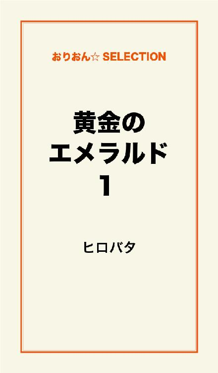
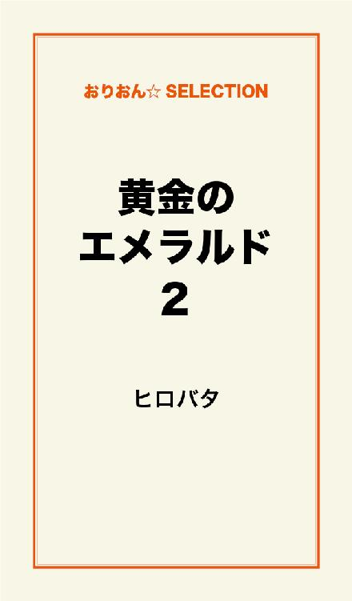

| 黄金のエメラルド 完全版 | |
| ヒロバタ | |
この本は横書きでレイアウトされています。
また、ご覧になる機種により、表示の差が認められることがあります。

プロローグ
もうすぐ終戦記念日を迎えようとした日差しの強い昼に斎藤圭吾は、北九州市小倉の飲み屋街のど真ん中にある堺町公園でモデルと言ってもいいような絶世の美女と公園の隅のベンチとベンチに座り、美女は缶コーヒーを手にして、斉藤はタバコを吸っていた。
斉藤は何やら難しい相談を美女からうけている。
公園には二人の他に、犬を散歩させている若い女性と、20メートルは離れている反対側のベンチにホームレスか酔っぱらいか分からないが酒瓶を枕に中年の男が寝ている。
この公園には全国でも例を見ない奇妙な建物が建っている。
みかじめ料を払わない老舗のクラブに、業を煮やした地元やくざ組織が組員を使い、そこに手榴弾を投げ入れ爆発と閃光を放ち多数の死傷者を出した。
その事件を境に、鉄冷えで冷えこんでいた飲み屋街に警察はなにを血迷ったのか、その公園に大きな交番を建て、防弾チョッキを着た警官を定期的に飲屋街の周辺を巡視させた。
防弾チョッキを着けないと歩けない街に飲みに来る客なんているはずが無く、街は一気に沈んでいった。
地元経済など考えていない無知な警察は過剰反応して街をゴーストタウンにする片棒を担いだのだ。
美女はある病気に感染しており、あと数年しか生きられないと言っている。
キスぐらいでは感染しないが体液の交換する激しい行為をするとうつる可能性がある病気だ。
斉藤は相談を受けながら脳のある一部で陰湿な考えがぐるぐる回っていた。
感染症になってもいい、横にいる絶世の美女と一度でいいから肌を合わせてみたいものだと妄想している。
それに反して、脳の大半はその相談の複雑さに処理能力を越え「行方不明の友達を探してください」と言っているのだが、その内容を何回も後戻りしながら確認していた。
それでも斎藤はなかなか理解できないでいる。
斉藤は、スナック経営の傍らで探偵と借金の取り立てをやっていた。
小倉で、飲み屋一本で生活をしている者は少ない。
殆どの経営者は、飲み屋を辞めようと思っているが、鉄冷えの中、次の仕事にありつけず、虫の息で生活している。
美女は、斉藤が闇で探偵の仕事をしている事を承知で相談を持ちかけて来たようだ。
警察にも相談に行ったようだが、まともに取り扱ってくれなかったらしい。
まともでない人間を捜してくれと言っているのだ。
美女は苦労して貯めたであろう「現金５００万円を用意している」と言っている。
「そのお金がなくなるまで、私の命が尽きるまで、探して欲しい」と、斉藤に顔を近づけて頼み込んでいる。
斉藤は「話をもう少し詳しく、聞かなければ答えを出せない」と美女にいった。
美女は、時間をかけてまた最初から丁寧に話しだした。
斉藤は徐々に話の内容がみえてきた。
タイ旅行に行った事がこの事件の発端であり悪夢の始まりらしい。
ダイレクトメール
広子は仕事に疲れ、小倉駅前の米町にある自宅ワンルームマンションに帰った。
玄関の横にある郵便受けの中を覗いた。いつもそうだが、溢れんばかりのチラシとダイレクトメールが入っていた。
コンピューターの打ちすぎで目が疲れ、小さな文字を読む気もしなく、いつものようにそのまま郵便受けの横に置いてあるチラシ専用のごみバケツに総てを捨てた。
また次の日に、郵便受けを見ると、誰かがごみ箱から戻したように昨日、捨てた物がそっくりと入っていた。
広子は明日、仕事は休みだし、彼氏もおらず何の予定もない。めずらしく郵便受けの中身をすべて部屋に持ち帰った。
ソファーに寝ころびチラシ、ダイレクトメールを一枚ずつめくっている。
黄金の仏像に、エメラルドの目をしたイラストが印刷された目だつダイレクトメールを、何の気なしに封を開け。
「これ、旅行のメールなの？」と旅行を唯一の趣味としていた広子は寂しく独り言をいって、その中からチラシを取りだした。
「激安タイ旅行３９８００円！ 出発日・6月25日」
書かれた内容に「エー！」と値段の安さに驚き、起き上がり、ソファーからテーブルに移った。
目を凝らしてチラシの内容を見ていると、それだけで体が熱くなってきた。
「福岡空港から直行便」と書いてある文字に目が止まり。
パック旅行のタイ行きは台湾で乗り継ぎするのがほとんどであるが「福岡空港から直行便。三泊四日間、高級リゾートホテル泊、バンコク市内観光......」と掲載されていた。
広子はすぐその気になるタイプであり、もう心は一気に真っ赤な南国の花のように高揚し、身体の表面が熱帯地方の汗ばんだ身体になってゆくような、身も心も旅行のチラシにのめり込んでいる。
週明けの月曜日、広子は珍しく朝早く目が覚め、小倉北区堺町のビジネスビルにあるＩＴ関連企業に出勤した。
午前中の短い休憩時間に早速、広子は仲のいい同僚の裕子に、折り曲げていた旅行のチラシを開いた。
「裕子、6月25日から4日間、空いてない？ 凄いパック旅行があるんよ、まきこと三人でタイにゆこうや、絶対安いよ」
広子は少し興奮気味に顔を赤らめて、裕子に旅行のチラシを見せた。
「え、タイ！ 熱いし、汚いやないと、東南アジアはちょっとね......」
裕子は突然の誘いに戸惑い、イタリア、ハワイに行ったことがあるが、東南アジアは行ったことはなく、お洒落ではないのであまり乗り気のない感じだ。
「裕子、タイは海外旅行先で一番人気なんよ、しらんの？」
広子は、持ち前の図々しさで強引に誘っている。
「雑誌とかによく載っているから聞いたことはあるけど？ まきこは行くやろうか？ 子供もいるし体調もよくないみたいだしね。それとタイは治安が悪いんやないと？」
裕子はまきこの体調のことを心配していたが、広子はタイ旅行に行くことしか考えてない。
「そんなん言いよったら海外に行かれんちゃ。危険な国に行くわけでもないし、東南アジアで犯罪が一番すくないんよ。この機会を逃したら行かれんよ。ホテルみてん、高級スパ、エステ、タイ式マッサージありよ。ね、行こうや」と広子は強引に誘っている。
裕子は広子から、
「ね、お願い。裕子が説得すれば、まきこは絶対にタイ旅行に行くから、まきこと話して」と言われ。
「何で、いつも私をだしに使うの」と反論したが、いつものペースで結局、まきこを説得することになった。
裕子は昼休みも終わろうとしていた時間に社員食堂でまきこと会っていた。
まきこは体調が悪いのか化粧をしてないのか、顔色が悪いようである。
まきこは、難病の持病があり、温泉ぐらいならいつも参加するのだが、さすがに海外旅行に行くのを渋っている。
「こんな機会ないから行こうや。広子はもう飛行機に乗った気分になってるし、旅費は沖縄旅行に行くぐらいやしー」
裕子はまきこの方を向いて必死に説得している。
「女三人で行くの、何か不安だね。職場の男性か知り合いの男性を誘おうよ。それなら行ってもいいよ」
そこに、学生時代にラクビーで鍛えた筋肉の持ち主の山田勇樹が腹を空かしているのか、速攻でできる大盛カレーをトレーにのせて、裕子たちのテーブルに近寄ってきた。
勇樹は裕子たちから四つ席を空けた椅子に座り、大口を開けてカレーを頬張り始めた。
勇樹はカレーを食べながら、同じテーブルにいる美女が気になっているようだ。
勇樹はカレーを食べ終え、グラスの水を一気に飲んで、美人で評判の裕子の顔をチラッと見た。
裕子は会社の若い女性から人気がある同年代の勇樹の顔を知っていたが、名前を知らなかった。
社員は仕事中に名札を付けることになっていた。勇樹の名札を見た。
「山田さん。昼食、遅いのですね」
突然、裕子が勇樹に声をかけた。
勇樹は自分では無いと思い後ろを振り返ったが誰もいない。
美人の裕子から声をかけられ、少し緊張した声で、
「は、はい」
裕子は立ち上がった。
そのスタイルは超一流モデルを思わせるほどである。
ジーパンがよく似合い、ヒップはほどほどに大きくヒップアップして、太股は柔らかい曲線を描き、ふくらはぎから足首にゆくにつれ細くなり、男なら上から下まで舐めるように見るはずだ。
裕子は微笑み、自慢の長い足を交差させながら勇樹に近寄ってきた。勇樹の横に座りクラブホステスと同じようにできるだけ近づき、膝と膝を軽く接触させて話し始めた。
「あのー。タイ旅行に......」
勇樹は恋人のように近づいている裕子の顔を、目を外しながらチラチラ見ている。
目は大きくくっきりとした二重で黒目は黒真珠のような輝きを発し魅惑的だ、日本人には珍しくまつげは長い、鼻はほどほどに高く小鼻が小さい、唇は少し大きめで柔らかくふっくらと肉感的だ、近寄りがたくて、どんな男がこの唇をもてあそぶのか想像もできない。
肌は色白できめ細かくマシュマロの弾力を感じさせる。
あごは顔全体のバランスを整えるかのように少し突起して右側に小さなほくろがある、それが色気を倍増させる。
勇樹は目の前にある美貌と芳しい香水、そして吐息に酔ったのか、赤面している。
あまりの緊張で話の内容がわかってないようだ。
裕子はそれを感じたのか、ゆっくりともう一度、話し始めた。
「......。私たち、女三人では不安ですし、後二人、頼りになる男性の友達を探して、一緒にタイに行きません......。誰か友達いない？」
裕子は色っぽい声でいった。
「......いると思いますよ。必ず探しますから安心してください」
勇樹は突然の誘いに誰も浮かんでこないが、雰囲気に押されていった。
「よかった。これで旅行会社に申し込みが出来ます。後でお名前と、住所を教えてくださいね。よろしくお願いします」
「はい、わかりました」
裕子は立ち上がり、勇樹に愛想笑いをした。
まきこも立ち上がり二人は食堂を後にした。
勇樹は憧れの裕子の誘いに、心が飛び跳ねるぐらいに喜んだ。
勇樹は帰りの電車で「頼りになる奴、頼りになる奴」と頭の中で呪文の様に唱えた。
頭の中に、同じ年の健二と和義の顔が浮かんだ。
勇樹は家に帰り早速、携帯電話で健二、和義の順に電話をした。
「会社の同僚で、そーとうに凄い美人から『グループで一緒にタイに三泊四日で行かない』と誘われたんやけど、行こうや！」
『凄い美人？ タイ旅行？ どうしたんか急に？』
意味不明な勇樹の言葉に戸惑っている。
「同僚の女の子が三人行くんで、俺も行くようになり『後二人、男の友達がいない？』と言われた。特別に安く行かれるし、三泊四日で格安の３９８００円なんぞ。行こうや！」
健二と和義は、同じように予定を調べて後で返事するといった。
返事は次の日に返って来た。
『その日は仕事も忙しくないし、料金も安いし行くぞ』
和義と健二から全く同じ内容で電話があった。
勇樹は「この旅行で憧れの裕子さんとまず友達になり、それから日本に帰ってデートを申し込んで......」と、勇樹は次から次へと裕子とのデート場面が頭の中に現れてくる。
次の日に、勇樹と和義はさっそく健二が小倉北区鍛治町の南国ビルの2階で経営している「BAR GALLIA」に集まり、タイ旅行をつまみに酒を飲んでいた。
バーガリアは、二階のフロアの真ん中に位置し、入り口はガラス戸で、入口を入ると正面にカウンターがある。
8名ほどがゆったり座れる大きめの椅子が並んでいる。スナックなら10名ほどが座れる贅沢な空間を使っている。カウンターの奥には4名掛けのテーブルが3席ある。
スタッフはオーナーの健二を初め、男性2名、若い美人の女性が1名働いており、ゆったりと落ち着いて飲める雰囲気を漂わせている。クラブのママが一人でタバコを吸いながらジントニックでも飲み、今日の仕事の疲れを癒すような場所だ。
和義と勇樹はカウンターの真ん中付近に座り、カウンターの中には健二と美女と男性従業員が立っていた。
「そのパック旅行、安すぎんか？ 普通は7、8万円はするぞ。観光もしないでお土産屋ばっかり寄らされるんじゃないんか？ 酷い店では、日本人が店内に入ると出入り口に鍵をかけられ、高い商品を買わないと出してくれんらしいぞ」
健二は、客から注文されたカクテルを作りながら勇樹と話している。
「そう思うんやけど、チラシを見ると結構内容はいいみたい。ま、飛行機乗ってバンコクに行って、ちょっと観光すれば、それでいいじゃない。お前は何回かバンコクに行ったやろうけど、俺は行ったことないんぞ」
勇樹は、水割りのグラスを回しながら気楽にいっている。
「ワイルドターキーのロックをダブルで、頂戴」
和義はロックグラスを健二に差し出した。和義は話に加わらず、二人の話を肴にバーボンをあおっていた。
「今の段階で値段が安いで文句言ってもしょうがないか。タイに行って、最悪のツアーならお前から旅行代を返してもらうからな。わかったか」
健二が丹念に作った丸い大きな氷をロックグラスに入れ、ワイルドターキーを流し込んだ。
「お前が裕子さんを見たら絶対に気が変わると思うけどな。一回見てん。そりゃー美人やけ」
「女は、どうでもいい。タイの夜の町を散策するのが楽しみ。あのまったりとした空気、幸せ満ち溢れた人々......」
「タイの夜はそんなにおもしろいんか？」
「行ってのお楽しみ」
若くて鼻の形のいい可愛い従業員がグラスの中の氷を眺めている和義の前に立った。
「和義さん大丈夫ですか、ダブルのロック5杯目ですよ。明日は仕事休み？」
「ゆかりちゃん。明日は仕事、や、す、み。今日は身体の調子がいいんで、バーボンが美味しいよー。付け加えるの忘れていたけど、ゆかりちゃんもかわいいし。今日は最高だね。ハハハ......」
和義は、酔っているのか上機嫌でゆかりの顔を見て笑っている。
「お前、飲み過ぎんなよ！ 自分の分払えよ！」
勇樹は和義のことを心配していないが、いつも和義が浴びるほど飲んで、割り勘にさせられるのが嫌で嫌味をいったが、和義には全く通じない。
「そんな、取って付けたこと言わんでいいちゃ。わたし、他の人から可愛いと言われて、毎日来てくれる人がいるから大丈夫。なんか喉が乾いたなぁ。何か飲んでいい......」
「いいよ。好きなの飲み。ゆかりちゃんもバンコクゆかん？」
和義が気前よくいった。
「ワイン飲んでいい？ オーナーから聞いたんだけど、安いね、行きたいけど。その日、私の友達の結婚式があるの」
「残念やね」
ゆかりが高そうなワインのフルボトルをカウンターの下の冷蔵庫から取りだし、カウンターの上に置いた。
それを見た勇樹が、
「ゆかり！ おい、おい、誰がそんなん飲めっち、いったんか！」
ゆかりは、もうコルク抜きをワインのコルク栓に刺していた。
勇樹は伝票に「ワイン、一本、１００００」と書かれたのを想像した。
最近の飲み屋の女の子は、景気が悪いせいか必ず「ワイン飲んでいい？」と聞く、一本出せば自分の一日の日当がでる。これで今日はノルマ達成と満足して、肩の荷が降りたように心から微笑んでくれるのだが、勇樹はそれをあまり好きではなかった。
「和義さんですよー」
「和義！ お前、ワインだけ別料金で払えよ！」
「本当にもう。そんなん、はぶてるなっちゃ！ ケチケチすんなっちゃ。ゆかりちゃん、俺につけとって！」
「今日の飲み代、全部、お前の付けやけの！ ゆかりちゃん、俺もワイン、飲ませてぇー」
健二は、その会話をカウンターの中で微笑みながら聞いていた。
「勇樹、裕子さんはどれぐらい美人なんか？」
健二がきいた。
勇樹が自慢げな顔をして、
「この店には、クラブの美人のお姉ちゃんがごまんと来るやろうけど、絶対に小倉のクラブにはあれほどの美人はいないと思う。見て惚れるなよ」
「ほー、楽しみにしとくわ」
「次の店に行こうや。かわいい子がいる店に行こうや。クレオパトラか楊貴妃がおるかもぞ」
和義が勇樹の腕を取り、立ち上がろうとした。
「かわいい子、ここにいるじゃん。ワインもだいぶ残っているし......」
ゆかりは、ほっぺをふくらませた。
「ゆかりちゃんは可愛いけど、ここは、BARやろ、客にゆったりを提供する場やろ。ちょっとはしゃげるスナック系に行きたいよ。じゃあ、ゆかりちゃんがワイン飲んだら店でるわ」
ゆかりは勇樹と和義にも大きなワイングラスを持ってきてワインを波々と注いで、瓶はすぐに空になった。
和義はワインを一気に飲み、飲み過ぎて酔ったのか、勇樹をひっぱって健二の店をまた出ようとした。
「どこゆくんか？」
健二がカウンターの中からいう。
「ここのビルの一階にあるオブジェＩＩと言うかわいい子が一杯いる店に行く！」
和義は、いつも週末に飲屋街に来ては朝まで飲んでいる。
いい店はよく知っていた。
「健二、知っとるか？」
勇樹がきいた。
「アー。いい店だ。行ってこい。オブジェＩＩを出たら小倉食堂で一緒に飯を食べるから後で必ずこいよ」
「わかった」
まきこ
旅行前日の夜に、まきこは裕子に「子供の具合がとても悪いから今回は行けない」と電話してきた。
裕子は早速、広子に電話をかけた。
「広子、まきこは子供の具合が悪いから今回は行けないって言っているけど、しょうがないよね、5人で行くやろー」
『行くよー！ 私、一人でも行くよ』
「勇樹達には、後で電話するけど、明日、福岡で待ち合わせすることになっていたよね、戸畑で合流しない。みんな、どうせ戸畑駅を必ず通って来るやろうし、まきこのお母さんの店にチョット顔出して子供の様子を見に行かん？」
『いいよ』
「勇樹に戸畑で待ち合わせて、福岡に一緒に行くことになったと連絡するよ」
戸畑は、新日本製鉄（旧官営、八幡製鉄所）の戸畑工場がある工場地帯で、静かな住宅街がある。
小倉のごみごみした雑踏とまるで雰囲気が違う。
裕子は携帯電話を取り出し、勇樹に事情を説明し戸畑駅で明日の1時に合流するといった。
裕子は目覚まし時計に耳を叩かれ、10時に起きた。
昨夜に用意していた旅行の荷物を再度チェックし、シャワーを浴び入念に化粧をして、大手町のマンションを後にした。
裕子は半年前このマンションに彼氏と七ヶ月間、同棲生活をしていた。彼氏の問題ではないのだが、どう言う訳かトラブルやらいざこざが続き、彼氏は裕子に嫌気がさして半年前に荷物を置いたまま忽然と姿を消したきり全く連絡もなかった。
裕子は連絡を待ち望んでいたが、それなりのプライドがあり、一切、携帯電話にかけなかった。時間が経つにつれ元彼氏を思う気持ちもしだいに薄れ、一人暮らしを満喫していた。
裕子はＪＲ鹿児島本線、小倉駅の次の駅、西小倉駅から電車に乗り、二駅先の戸畑駅で降り、駅前の西側に隣接するショピングセンターの一階にあるスパゲティ屋の店前でみんなが来るのを待った。
しばらくして、和義、健二、広子、勇樹の順にやってきた。
最後に来た広子が一番最後と気づいたのか早足で近づいてきた。
「待った！ 電車一本乗り遅れたの、ごめんね」
「いいよ、5分ぐらいしか待ってないよ」
健二と和義は、初対面なので名前程度の挨拶を交わして、五人はまきこの母親が経営している食事処一倉に徒歩で向かった。
「お昼食べた？」
裕子は歩きながら満面の笑顔で、勇樹の方に向いた。
「まだですよ、健二も和義もまだやろ」
「朝飯、昼飯もまだ食べてない」
和義は、寝坊したのか何も食べてなかった。
広子が勇樹に興味があるのか、目を輝かせて勇樹の方に振り返った。
「まきこも一緒にタイに行く予定だったんですが、子供が急に病気になり、行かれんようになったんよ」
「そうですか？ それは大変ですね」
勇樹が軽く応えた。
「まきこは子供二人をかかえて女手一つで生活しているのですよ。休みの日は、まきこのお母さんの店を手伝っているんですよ」
食事処一倉は、戸畑駅から小倉方面に5分ほど歩いた場所にあり、本通りから路地に少し入った目だたない所にある。
五人は、暖簾をくぐり、広子を先頭に店の中に入った。
「いらっしゃいませ！」
60歳ぐらいの、元気のいい女性がカウンターの中から入り口の方を向いて、にこっとした。
店内は、左にカウンター席が8席あり、右手前に小さなテーブルが一つ、右の奥に小あがりがあり、10名ほど座れる。改装でもしたのか、店中は明るくきれいな店で、団欒という言葉がぴったりの店だ。
カウンターには作業着姿の労働者風の男性が二人座って瓶ビールを飲み交わしている。
「あっ、広子ちゃん、裕子ちゃん、久しぶりですね」
まきこの母がまきこの友人であることに気づいたようだ。
「ごぶさたしています。仕事が忙しいので、なかなか来れなくて済みません」
カウンターに近い位置に立っていた裕子は、まきこがいないか店内を見回していた。
「まきこは、今、すぐそこの市場に買出しに行ってもらっているからすぐに帰ってきますよ。確か今日から一緒にタイ旅行に行く予定だったんですよね。子供が喘息の発作が出て行けなくなって、あの子は本当に運がないのよね。子供はまきこのアパートでは心配ですから、ここの2階に寝せていますよ。何か食事します？」
「みんな、昼食を食べてないの。まきこと話しながら昼食でも取ろうと思ってました」
「それやったら、こちらに座り」
まきこの母は、カウンターから出てきて奥の座敷の方に「どうぞ」といった。
カウンターでビールを飲んでいた作業着を着た男の一人が裕子に気づき、後を向いて裕子に見とれている。
まきこの母はそれに気づいたのか。
「やっちゃん、美人でしょう。まきこの友達なんですよ。一目惚れしないでよ」
「ヒャー。美人ですね。こんな美人は戸畑にはいないね」
その男は酔っているのか、瓶ビールとコップを持って座敷に近づいてきた。
「やっちゃん。何してんの！ 席はこっちでしょう」
まきこの母は、酔っ払いの男をカウンター席へと押し戻した。
「ごめんね。昼で仕事が終わって、もう酔っ払っているんですよ」
五人は、奥の座敷に座った。
そこに店の入り口が開き、まきこが帰ってきた。
すぐに裕子達に気づいた。
「いらっしゃい。もう来てたの、お腹すいたでしょう。初めまして」
まきこは、健二と和義にちょっと頭を下げ挨拶をして、両手に下げていた荷物をカウンターの中に持っていった。
まきこの母は、カウンターの客を無視して、裕子たちに気を使い、メニューを裕子たちに渡した。
「何に致しましょうか？」
「私、日替わり定食を下さい」
広子は渡されたメニューを見もせず先に言った。
みんなもつられ同じ日替わり定食を頼んだ。
「今日は、串カツです。大丈夫ですか？」
「はいー、いいですよ。それとビール3本下さい」
和義は喉が渇いたのかビールを注文した。
「はい、了解」
まきこの母は、元気な声でカウンターの中に入った。
まきこは、最初に瓶ビールと小さなグラスをテーブルに持ってきた。
裕子と広子はみんなにビールを注ぎ、裕子はビールを入ったグラスを掲げた。
「それでは明日からタイに行きます。楽しくゆきましょうね。乾杯！」
「乾杯！」「よろしく」と言って、みんなはビールを飲み干した。
「山田さんは共通の知り合いですからみんな知っていますが、他の人は初めてなので名前だけでいいから自己紹介しない」
裕子がもう指導的立場でみんなにいった。
ボスは裕子に決まりだ。
「勇樹の中学校の同級生で名前は佐藤和義です。県の職員です。歳は20代半ば」
和義の身長は1メートル85センチ位で、プロレスラーのような体型をしている。
顔は童顔で目が二重で黒目が茶色で唇が少し厚い。
中学、高校と柔道をしており、全国大会にも出場したことがある。
体がでかいので、高校の時に中学の出身力士で、元小結・大潮の式秀部屋からスカウトされたこともあった。
「勇樹の友達で古賀健二です。小倉でBARとスナックと居酒屋を経営しています。歳は和義と同じです」
健二は髪が長く、体は1メートル78センチぐらいで暴走族ぐらいは経験ありそうな目がキリッとして、すぐ切れそうな感じである。
2年前まで、キックボクシングのジムに通っていた。本人はランキングに入りたくて真剣にやっていたが、自分の体力の限界がみえ、あっさりと辞めた。
「私は吉田裕子、山田さんと同じ会社です。歳は同じぐらいかなぁ？」
裕子は2年前に家具屋を辞め、大学時代に専攻していた情報システムの知識を生かし、今の会社に就職した。
「私の名前は大沢広子です。山田さんと同じ会社で、裕子と同い年です。よろしくね」
広子はかわいらしく笑顔を振りまいた。
大学卒業後、今の会社に就職し、他に行くとこもなく、広子は惰性で今の会社に席を置いている。
勇樹が裕子の方を向いて、
「いい店ですね。今はこのような店は少なくなってきてますからね。貴重ですよね。落ち着いた店で美味しい惣菜をつまんで、一杯飲めれば小倉の飲み屋街でも流行るんじゃないですかね」
「堺町、鍛治町にも何件か出来てるぞ、どこもいつも満員。反対に俺の店はいつもガラガラだよ。もう、バーとかこなれた店はもう時代遅れかもしれない。昔からある、居酒屋と炉端焼きとかが繁盛している。俺も次店舗は、そうゆう昔からある店を開きたい」
勇樹は裕子に話し掛けているのに関わらず健二が横からいった。
「健二、また店を出すんか？ 何軒するつもりなんか」
勇樹は今の店も儲かっていないのに、あきれた顔で健二をみた。
「最近、例の手榴弾事件から売上がガクと落ちこんで、もう滅亡の街小倉の飲み屋街を撤退して、地方に移ろうと思っている」
「滅亡の街？ そんなに、あの事件が影響あるとか知らんかった。もう3年は経っているやろ？」
勇樹、健二の顔を見て少し驚いている。
「やくざは、もうおとなしく問題ないが。警察はまだ撤収しないで、公園の真ん中に居座っている。迷惑な話だ」
裕子は不思議な顔をして、
「警察がいないとやくざが暴れて危険でしょう」
健二は裕子の顔を心地よい笑顔で見ながら、
「普通はそう思うでしょうが、実際は違うんですよ。やくざも収入がないと飯が食えない。飲み屋街というのは、いろんな業界が絡んで、それぞれが裏で協力して共存しているんですよ。警察が出てこない頃は、不況の中、助け合ってギリギリで生き残っていたんですよ。警察が出張って、あたかも戦闘地帯のように防弾チョッキを着た警官が巡視したり、常時主要道路に機動隊員を配置したりしている。最悪なのは、いたる所に防犯カメラと称して監視カメラを設置しているんですよ。そんな危険な場所に普通の人が来る訳は無いでしょう。さらにやくざ屋さんも飲み屋に来なくなった。やくざのステータスはいい服を着て、いい女を連れて、高級な飲み屋でお金をばら撒く事なんですよ。やくざがいない飲み屋街は、しみったれた者しか来なくなりお金の絶対量が回らなくなったんですよ。やくざも飲み屋街にとっては必要悪でお金の循環役をしていたんですよ。よくみかじめ料と聞きますでしょう。店はやくざに支払った額より実際はやくざがそこの店に落とすお金の方がよっぽど多いんですよ。飲み屋にとっては、バカなチンピラは迷惑ですが、礼儀正しい幹部のやくざは大歓迎なんですよ」
健二は日ごろ思っていたことを一気にいった。
まきこの母が、
「そうそう、警察よりやくざのいる飲み屋街のほうが景気はいいですよね。そして小倉はやくざの街でしょう。それが消えると小倉も終わりですよね。それと今のやくざは礼儀ただしいよ、よっぽど普通の人の方がタチが悪いんじゃない」
まきこの母は健二の話を聞いていたのか、ビールとグラスを持ってきて話に入ってきた。
「ね、話変わるけど。みんな独身なんですか？」
「そうです。たぶん？」
広子が勇樹の顔をみて少し首をかしげた。
「独身ですよ」
広子が健二と和義が独身かどうか知っているはずがない、勇樹が代わりにいった。
「まきこは離婚した後、仕事がんばっているけど、誰かいい人いないかね？ 私も年ですし本人も身体悪いし、心配でしょうがないんだけど」
「もういらんこと言わんでいいよ。やっちゃんの相手して」
まきこが定食の二人前を持ってきて、話好きの母を追っ払った。
「はい、はい、やっちゃんビール入ってる？」
「もう1本頂戴、それと焼き飯二人前ね」
カウンターから注文がきた。
「いいね。この店、俺の近くにこんな店ができんかな。健二、俺の近くにこんな店オープンしてくれ」
和義がビールをグイッと飲んだ。
「お前が毎日くるから、やめとく」
「なんで？」
健二が和義の顔をまじまじと見た。
「お前のがんつき、その男凶暴につきっち書いとるのしらんのか？」
裕子も和義の顔をまじまじと見て、笑いを堪えるのが大変そうに下を向き、口を手で抑えている。
「おい、やめてくれ。これでも自慢の顔だぞ」
みんなが一斉に大笑いをした。裕子も笑いを噴出した。
「なんで笑うと？ ビールでも飲も」
和義は、テーブルにあるビールをグラスに注いで一気に飲み干した。
裕子は笑いのつぼに入ったのか、和義の顔を見るたびに手で口を抑えて笑いを堪えていた。
和義は、ビールをみんなに注いでやり、まきこは、定食をみんなの前に並べている。
広子が、
「スゲー。この定食６００円でしょう。刺身までついてるよ」
「サービスですよ。大きな声で言わないで」
まきこは、裕子の横に座って小さな声でいった。
「いただきまーす！」
広子が手を合わせて、定食を食べはじめた。
「楽しそうね。広子、この次は絶対に行くからまた企画してね」
「そうね、次は、海外じゃなく屋久島に行こうね。行ったことある人いる？」
みんな無言で首を横に振った。
「じゃ決まりだね。次はこのメンバーで屋久島に行こうね。それで今日は福岡で飲むと？」
まきこは微笑んだ。
「飛行機は朝早い便でしょう。福岡で朝まで飲み明かし、機内で熟睡というパターンんよ」
広子が串カツを頬張りながらいった。
「あまり飲みすぎんで、気をつけて元気で帰ってきてよ」
「大丈夫、大丈夫。安全な国だから」
広子が自信たっぷりにいった。
五人は、食事を終え。食事処一倉のまきこと、その母に挨拶をして、博多へと向かった。
バー梟
五人は戸畑駅から急行に乗り、夕方の5時すぎに博多駅に着いた。
広子と裕子は、時間も早いし、お腹も一杯なので天神のデパートを散策することになり、勇樹たちと別れて行動することになった。
勇樹たちは、百貨店の三越で時間をつぶすことにした。
合流地点は、裕子が情報紙で調べたカラオケ店に夕方七時に合流することになっていた。
裕子たちは何店かデパートを歩き回り、天神の裏通りにあるカラオケ店に先に着き、店内に入って待つか外で待つか思案していたところに、外人二人から奇妙な博多弁で「ショクジデモタベユキシャイマセン」とナンパされた。裕子たちは無視をきめこんでいたが、しつこく誘われていた時に勇樹たちが現れ、勇樹は二人の外人をチラッと見て裕子に、
「中に入ろうか？」
勇樹はかっこつけ自慢げにあたかも自分の女にでも言っているような口調でいった。
男はいい女をつれている時は優越感にひたる。新型のスポーツカーを乗り回しているような、俺の車が今走っている車の中で一番かっこいいのだ。
一番高いのだとかバカな感覚が自然と沸いてくる。それが男のステータスだと。
勇樹は、いい女二人、それも外人からナンパを受けている女は完全無視「お前らなんかに決して落ちないよ。このばか！」といった感じだ。
二人の外人は気まずそうに立ち去った。
広子と裕子は、かっこつけている勇樹をみて二人は顔を見合わせた。
広子は勇樹の事がすこぶる気に入ったのか勇樹と腕を組んでカラオケ店のガラス張りの自動ドアから中に入った。
裕子と和義と健二は後につづいた。
カラオケ店は左に大きなカウンターがあり女性店員がマニュアルとおりの笑顔で接客している。
コンビニ、バーガー屋でもそうだが、マニュアルとおりの作られた笑顔を遭遇する機会が多い。
裕子はそのシステムに乗ってバカにされたような顔を見るのが嫌で堪らないのか。
店員の顔を見ないで受け付け用紙に記入している。
裕子が代表して、受付をすませ部屋の番号を聞いて、エレベーターに乗った。
健二が先に乗り裕子は健二の前に立った。エレベーターが上がりだした。
エレベーターは小型だ。ほのかないい香りがエレベータ内に広がる。
「この香りはブルガリのプールオムですね。いい香りですね」
健二は商売上、香りを嗅げば香水の銘柄ぐらいは分かる。
女性とエレベーターに乗った場合は定番でいつもその銘柄を当て、気を引く。
女性を落とすテクニックだ。
勇樹は、自分が裕子を気に入っていることを健二に事前に言うのを忘れ、後悔した。
事前に言っていれば健二は友人が好意を持っている女性に商売がら争ってまでアタックはしない。
他のホストの客には手を出さない。
これがホストのルールで自分たちのルールでもある。
しかし、もう遅い一旦アタックをかけるともう停められない。
彼女でもないし事前に言わなかった自分が悪いのだ。
勇樹は、裕子が健二を嫌うのを待つしかないと心にきめた。
広子は勇樹を本気で気に入っているのか、腕を離そうとしなかった。
和義がそれを見て冗談半分に、
「もうカップルが出来たと？ タイまで行かず、ここでチケットをもらって、小倉に帰ったほうがいいんやないと？」
勇樹は裕子の手前、腕をふりほどきたいが、広子がしっかり腕を組んでいたので困り果てていた。
勇樹は、女性にはもてるが、本心はもてたと思っていない、好きでもない子からもてても意味がない、食べたくない納豆を健康に良いからと無理矢理に勧められるようなものだ。
「勇樹さん。広子は彼氏いないから、大丈夫ですよ」
裕子が広子を斡旋しているようにいった。
「え、彼氏！」
勇樹はあわてふためいて、広子から腕を抜いた。
「どうしたと？」
広子はふくれ面して、嫌そうに腕をほどいた勇樹の顔を見た。
「もう、エレベーターが着きますよ」
勇樹は広子からどうにか離れようと、適当に言うしかなかった。
エレベーターが4階に着き、みんなは指定されたカラオケルームに入った。
カラオケの部屋はアジアンチックの木目調で統一され、八畳ほどの広さがあり奥の壁添いに八人掛のソファーが並んでいた。
カラオケの機械は一番奥にあった。
広子は、先頭で部屋の中に入り、一番奥の席に座った。
その横に広子が「私の横に座り」と言わんばかりに促されたので渋々、勇樹が座り、その次に裕子が座った。
和義と健二は、どちらが裕子の横に座ろうか、立っていたが和義が気を利かせて健二に「プリーズ」と言って健二に先に座るように席を譲った。
健二がちょっと手を挙げて応えた。
インターフォンの近くにいた広子が飲み物やつまみのオーダーをみんなから取り、備え付けのインターフォンで注文をした。
健二が横に座っている裕子に、
「福岡でもお客さん少なそうですね。カラオケブームはとうの昔に去り、流行った時に比らべると3分の1程度に売上が落ち込んでいるんですよ」
裕子は健二達にまだ馴染まないのか、少しよそよそしく。
「そうなんですか？ そんなこと全く考えたことありませんでした。そう言えば少し前までは飲み会の2次会はカラオケが定番でしたが、1次会が終わると2次会も行かずみんな家に帰ってしまいますね。どうしてなんですか？」
健二は話のきっかけを掴み、
「なぜ、カラオケの売上が落ち込んだかは不思議なんですが、スナックも同じように落ち込んでいることを考えるとですね。一時代を作った団塊の世代が酒を飲みながら深夜までカラオケを歌うほど元気がなくなったんですよ。戦後の日本の経済や文化は団塊世代が中心で動いてきたでしょう。バブルの原因を、評論家は政府が金融政策を失敗したと言ってますが、団塊の世代が活力を失ったことが根底にあると私は思うんですよ」
「健二さん。考えが深いですね。次の流行は何と思います」
「それが解れば大金もちですね。そうですね、団塊の世代も隠居生活に足を踏み入れてますから定番の盆栽、庭いじり、それとも海外旅行ですかね。多分、隠居前に一花咲かせたいと思うのが人間の心理ですから予想もしないビジネスが数年後に噴出すると思います。うーん、考えても何が流行るか解りません」
「又、新しい時代がきっと来るのですよね」
広子は歌のリストを見ながら次から次へと、リモコンでカラオケの機械に曲を入力している。
「みんな順番だからね、裕子も勇樹さんも歌決めよ！」
カラオケからイントロが流れ、広子が勇樹の顔をみて「今から貴方のために歌うわ」と言う顔をして、マイクを持ち流行りのラップ系の曲を歌いだした。
広子は歌いながら勇樹の目を見つめている。
勇樹は嫌いな納豆を無理矢理に一粒づつ食べさせられているような、どうしようもない嫌な気分で歌を聴いている。
店員がノックし部屋の中に入ってきて、飲み物とつまみをテーブルの上に置いた。
美人の裕子の顔をチラッと見て「どうぞ」と言って部屋を出た。
広子が歌い終え、歌のレベルは普通なのか、みんなは気が入らない拍手をした。
「裕子、何か歌ってよ」
「私、歌はいいよ。広子、代わりにどんどん歌ってよ」
「健二さん、水商売系だから歌うまいでしょう。歌って」
広子が何曲かリクエストした。
「裕子さん、歌はあまり歌わないのですか？最近の女性はカラオケより美味しい店を探してあちこち食べ歩くのが流行ですからね」
健二は裕子の方を向いて、広子の話をまったく聞いてない。
広子がしょうがなしに2曲目の演歌を手振りをつけて、歌いだした。
「そうですね。カラオケは行く事はありませんね......。バーでゆっくり飲むのが好きです」
「そうですか。カラオケはマイナーイメージがあって、中学生、高校生がたむろする場所になってますからね。繁華街でもどんどん少なくなってます。何か、客足が遠のいている感じがしますね。俺んちのスナックもカラオケやめましたよ、客から『うるさい』と最近、苦情が多いですよ。やっと日本人はバーと言うものを理解したのでは無いでしょうか。酒は良いＢＧＭとちょっとした店員の会話と落ち着いた雰囲気が必要なんですよ。バーはどんな感じの店に行きますか？」
健二は広子が歌っていることなど気にもせず、裕子の耳元で大きな声でしゃべっている。裕子が興味の有る話をどんどん見つけて食い込んでいる。
「バーは当然、美味しいお酒がある店ですね。ジンやウオッカ系が好きなの、ジンのボンベイサファイヤを置いている店しか行かない、このお酒はアルコール度が高い割にはジューシーで飲みやすいの、それと凝ったつまみを少し出してくれると最高だね。ＢＧＭの有線はだめだね。やっぱり昔のドーナッツ盤をかけているバーなんか好きですね。私の時代では始めからＣＤでしょう。なんであんなプラスチックの板から音が出るのが不思議で、たまに針が飛んだり、ブッツと傷の音がしていつかはこのレコードも朽ちると思えていいんです。音楽に生命を感じさせられます。昔のジュークボックスを置いている店がないか探しているの、健二さんどこかにありません」
和義はおもむろにロックグラスを片手に、
「知ってるよ。福岡にあるよ。情報誌に載ってるよ。確かこの近く、天神にあったよ」
和義はいった後にロックの焼酎を飲み干した。
一瞬、健二と裕子は言葉を見失ったが、和義は二人の話を聞いていたのだ、てっきり酒を飲んでいるだけだと思っていた。
「次の店は決まりだね」
裕子は子供に向けるような笑顔で和義の方をみた。
久しぶりに何か楽しい心がよちよち歩き出しているような心地良い気持ちになっていた。裕子はこんな気持ちになったのは、久々だ、内心驚いている。
広子が歌い終え。
健二にマイクを渡した。
健二が甘いハスキーな声で尾崎の「オーマイ......」を歌い始めた。
それはプロ歌手と変わらないほどうまい。
水商売のオーナーが歌のうまいのは当たり前なのか、それを引いてもうまい。
次は裕子の番だ。
広子に「ミン............のエブリ・リト............を入れてもらえる」とマイクをしっかり握って楽しそうにいった。
酒のせいなのだろうか？
裕子がマイクを持って立ち上がった。
健二に負けたくないのか気合いが入っている。
イントロが流れ「ユー......」と歌い出した。難しい歌は出足が勝負だ。
出足でつまずくともう取り返しがつかない。
声は、迫力はこそ無いが透き通った高い声で、音程も合っている。うまい！の一言だ。
顔はいい。
スタイルもいい。
歌もうまい。
酒も強い。
頭もいい。
いつもと違う裕子を見て、広子は口を半開きにしてあきれた顔をしていた。
インターフォンの近くに座っている広子に、和義が空いたグラスを振りながら「麦焼酎のロックを頼んでください！」といっている。
裕子が歌っている。
当然、広子は和義の声は聞こえないが仕草でわかったのか和義に手をあげて分かったとＯＫサインを送りインターフォンで焼酎を注文した。
裕子が歌い終えた。
みんなは一斉に激しい拍手をおくった。
次ぎに勇樹が「スマッ............のライ............」を、広子にカラオケのリモコンで入力してもらい歌い出した。
健二、裕子クラスでは無いが迫力満点で楽しんで歌っている。
勇樹が歌い終えると、和義はみんなから再三の催促を拒み、人の歌を聞きながら酒を飲んでいた。
「和義さんは、お酒どれぐらい飲めるんですか？ 焼酎1升は飲むの？ 体がプロレスラーみたいに大きいからきっとたくさん飲むんでしょ？ 折角カラオケに来たんだから一曲ぐらい歌おうよ！ 私とデュエットします」
矢次早に裕子が和義にいった。
聞き取れなかったのか、もう一度言ってほしそうな顔を和義はした。
「何か一緒に歌いましょうか？」
大きな声で、裕子は和義の耳元でいった。
「俺、歌は歌わない主義なんですよ」
和義は、手を大きく早く横に振った。
「どうして？」
「カラオケは、歌っている人が歌手で、聞いている人が観客なんですよね。一瞬、超ミニライブの状態なんですよ。上手ければみんな聞きいってくれますが。下手だと適当に『なかなかやるじゃん』とか心にないこと言って、歌の力量に関係なく拍手をしてくれる。欺瞞に溢れた場面なんです。折角酔って気分が良くなってるのに落ち込むのは嫌です。歌い手は一瞬でもスターなんですよ。心から拍手できるぐらいの上手い人が歌えばいいんですよ。今日は僕を除いて、みんなとてもうまいから楽しく飲めます」
裕子は納得したのか、
「じゃ、私が歌うから、何か聞きたい曲ある？」
「映画好きなもので。椎名......がカバーした。映画のス●リート・オブ・ファイヤーの挿入歌、あのー主演の......？ あのー迫力のある......？」
和義は言ったきり下を向いて記憶を呼び出している。
一旦記憶が切れると喉まで来ているが出てこない。
下を向いて頭を両手で抱えて必死で思い出そうとしているが、このような時は必死に思いだそうとするほど出てこない。
裕子は、その歌を知っていたのか「それってダ●アン・レインがエンドで歌ってた曲でしょう。カラオケのリモコンで椎名............を検索すれば、歌い出しが出てくるし何とか検索できますよ」
裕子は広子からリモコンを受け取り、検索し始めた。
「あった。これこれ。今夜はエン......、今から、いれますよ」
裕子は健二が歌う順番なのに、飛び越して歌を歌い出した。
迫力こそは無いが、ロック調の歌を、力をこめた可憐な声で歌っている。
裕子は途中からマイクを持ち立ち上がり、酔いもあり、くびれた腰を少しくねらせながら熱唱している。
ジーパンの生地で隠させた軟らかく張りのあるピップを三人の男の前にあらわに出す。
三人の男心は同じように凝視したいのだが、恥ずかしくてチラチラ見ている。
できるなら中身を自由に好きなだけ弄んでみたいと思っている。
勇樹は裕子の歌を聴きながら、また不安材料が増えて落ち込んでいる。
今度は、裕子が和義と楽しくしている。
和義の目も裕子を気に入っている目だ。
不安だ。
ライバルがまた増えた。
「俺は裕子を気に入ってるんだ！ 二人ともチョッカイかけるな！」
と事前に言っていればよかたと勇樹は又深く後悔した。
裕子は歌い終え。
和義が大拍手を送っている。
それから、五人とも馴染んだのかそれぞれ会話、酒、歌を楽しんでいた。
相変わらず広子は勇樹にべったりくっつき話してる。
11時過ぎたあたりで歌も飽きたような雰囲気がしてきた。
勇樹がみんなの様子をみて「さぁーバーでも行って飲み直そうや」と場の状況を把握していった。
裕子が立ち上がって、
「和義さん、ジュークボックスが置いてあるバーがありますよね。そこに行きましょう」
裕子は気合が入っている、今日ははめを外して飲みつぶれるまで酒を飲もうとしているのか？
「住所は知らないが、多分このあたりですよ。下の受付の子に聞くかコンビニで聞けばすぐわかるよ」
和義がまだまだ飲み足らず、まったく酔ってない。
五人は部屋を出て一階に降りた。
裕子が会計している間に、和義が他の店員にこの辺りにジュークボックスを置いているバーは無いか聞いている。
「天神あたりですか？」
「そうです」
「名前はわからないのですか？」
「たしか鳥の名前がついていたと思うんですが」
「あ、それはバー梟のことでしょう」
店員がほっとした表情をした。
「それ、どれくらいの距離があると」
健二が聞いた。
「ここを出て、右に曲がり次の角を右に曲がって20メートルぐらい行って、左手にバー梟という看板がでていますよ」
「センキュー」
健二は少し酔っているのか東北なまりのトーンでいった。
五人が外に出て、バーに向かって行く途中、労働者風の五人組が大声を上げ近づいて来る。
「次はスナックあゆみにゆくぞ」と言いながら肩をいからせて正面から歩いて来た。
健二が先頭に立ち。
それに裕子、広子が続き、和義と勇樹は何か話しながら20メートルほど遅れて歩いている。
五人組は健二の横を通り過ぎた時に、その中の先頭の男が裕子と広子に気づき「お姉さんたち、どこに行くと、僕たちと一緒に飲みに行かない」とニヤニヤしながら嫌らしく裕子のボディを見ながら言う。
その中の二人が裕子と広子の後ろ側に回った。
他の二人は「早く行くぞ」と言う顔で会話を聞いているだけだ。
後ろの二人が裕子と広子の尻を嫌らしくさわり、無理矢理に手を引っ張って反対方向につれて行こうとした。
「やめて下さい！」
裕子が大声を上げ、手を振り解いた。
健二がそれに気づき、すぐに振り返った。
「おまえら、なんしよるんかー！」
健二が怒鳴る。
「何かお前、ぶちくらすぞー！」
顔の赤い一人の男が凄んだ。
「早く行こう！」
気が小さく喧嘩が特に怖い広子が健二の手を引っ張って先に行こうとしたが、健二は全く聞いていない。
気が強い裕子は眉間にしわを寄せてその無礼な男達を睨んでいる。来るなら来いという顔をしている。
「ほー、ぶちくらす。おもしろいやない。やってごらん」
健二はバカにした口調で余裕たっぷりにいって、
「ほんじゃ、やりまひょか？ 誰からきますねん？」
と、変な関西弁を使った。
一人がいきなり健二の足をめがけて蹴ってきた。
健二は足をさっと上げよけた。健二は元キックボクサーだ、予測していたように軽くかわした。
その男は空振りして酔っているせいもあり、すっころんで腰から激しく落ちた。
後の二人が健二めがけて突っ込んできた。
素人だ！
格闘技の経験は無いようだ。
無防備で突進してくる。
健二が右カウンターを一人に後一人には左のカクンターを軽く一発づつきめる。
格闘技の経験がある者に無防備で突進するのは自殺行為だ。
カウンターをちょっとあてるだけで突進力を自分の顔面に受けるのだからたまったものじゃない。
二人は顔を押さえてうずくまった。
傍観していた二人がどうすることもできず固まっていた。
そこに勇樹と和義が駆けつけ、さらに強そうな者が来たので何も出来ず、その二人は呆然と立ちすくんでいる。
「お兄さん達をつれて、どこか飲み行ってもらえない、そうしないと大変なことになるよ」
健二が余裕しゃくしゃくに二人にいった。
二人はすぐに、やられている三人を引き連れ反対方向に立ち去った。
「よその土地で喧嘩は極力しないほうがいいぞ」
その五人組が退散する姿を見ながら和義は健二をさとした。
「だってしょうがないじゃない、裕子さんに抱きつこうとしたんぞ」
「今の奴らは、多分、あれだけ大きな顔して歩いていたから、この辺のやくざを知っているのは間違いないぞ。やくざが出てくると話が複雑になり、喧嘩が強いとか弱いとか問題外になる。早くバーに行こうや！」
和義がみんなを引っ張っていくように先頭に立って歩き出した。
健二は仕方なしに裕子と広子を先に行くように促しながら、二人の後につきカバーしながら歩き出した。
勇樹は後ろを振り向きながら最後尾を歩いている。
和義が早足で歩くのでみんなもそれにつられて早足になった。
何か嫌な予感がしたのだろう、緊張した不安な顔だ。
五人は何とかバー梟らしき店を探し出した。
どのような店か外から窺っている。
店の間口は2間ぐらいで、入り口のドアは黒っぽいアンチックな板で全面覆われており、中の様子は見えなかった。
ドアをよく見るとガラスの覗き窓がついているのを勇樹が見つけた。
勇樹がそこから中を覗こうと覗き窓に顔を持っていった。
その時、中を覗いた瞬間、中からも目が覗いている。向こうから誰かが外を見ているだ。
勇樹は「うぉー」と言ってビックリして後ずさった。
ドアが少し開き、
「すみません。いらっしゃいませ」
歳は50歳半ば位で、英国人と日本人のハーフの面持ちをしたおじさんが出てきた。
「申し訳ありません。私が店から外を覗いていたら、お客様がちょうど外から覗いていましたので、ビックリしました......。どうぞ」
この店のマスターなのだろうか。
勇樹たちが店内に入るようにエスコートしてくれている。
店の中は、カウンター椅子が八つ、奥にテーブルが二つ右手にトイレ入り口の右手に骨董品のようなジュークボックスが置いてある。
壁はアルミの板を貼っており天井は英字新聞を乱雑に貼っている。
今流行りの高級バーでは無く、お金をかけないでスナックを改造したような店だ。
酒はカウンターの奥の棚にぎっしり並べられ、さらにカウンターテーブルの半分に百本ちかく並べられている。酒の種類は豊富に揃えているようだ。
店員はマスターとおぼしいおじさんと20歳くらいの店員が一人。
奥のテーブルの一つは貫禄のある中年男性が二人と、その横のテーブルはクラブ嬢とすぐわかる身なりの女性が三人で談笑している。
カウンターには入り口側にサラリーマン風の男二人が座っている。
カウンターの中からマスターが、
「カウンターにどうぞ」
広子と裕子が奥から座り、残った椅子に勇樹と健二と和義が座った。
「お飲み物はいかが致しましょうか？」
マスターが笑顔で注文を取った。
マスターは髪の毛は白髪まじりで、黒白の配分は五分五分で鼻の下に口髭を生やし色の配分も髪の毛と同じだ。
顔は鼻が大きく目は二重で、今でももてるだろうが若い時はモテモテだったはずだ。
裕子が「ボンベイサファイヤのジントニック」と真っ先に注文した。
広子は「レッドアイ」と勇樹は「スカイボール」と健二は「ターキの水割り」と和義は「マッカランのロック」とそれぞれ注文した。
みんな違う飲み物を頼んだもので、マスターと店員が慌ただしく動いている。
アイスピックで氷が砕ける音が店内に心地よく響く。
手元はカウンターに並べられている酒瓶で見えないが、音だけで小刻みな手の動きを想像できる。
健二は店内を見回しながら、
「氷の砕ける音をこのように演出したバーは経験がないね。マスターはこの狭い空間にいろいろ仕掛けをしてるんでしょうね。次はなにが仕組まれてるのかな............」
店員が殻付きピーナッツを持ってきた。
「殻は床に捨ててください」
店員は床を見ている。
みんなはその方向をみた。
ピーナッツの殻が床一面に散らばっており所々にまとめられて標高30センチの殻の小山が出来ていた。
日本人には無い発想だ。
外国のどこかを参考にしたのだろう。
渋い演出だ。
真っ先に裕子にジントニックが運ばれた。
「お待たせしました」
若い店員が美人の裕子の顔を確認するかのようにみた。
裕子か目の前にあるジントニックをじっと眺めていた。
何か仕掛があるのか探しているようだ。
「お先にどうぞ、待たないでいいよ」
広子もジントニックを見ながらいった。
みんなも興味津々に裕子の動作を見ている。
「嫌だー。見ないで、何もあるわけないでしょ......」
「どうぞ」
「ギャー」
裕子が言い終わる前に、広子は後ろから店員にいきなり「どうぞ」といわれ、広子が悲鳴をあげた。
勇樹たち、マスター、店員が堪え笑いをしている。
テーブルの男性二人は心地よい笑顔で裕子と広子を見ている。
クラブ嬢たちは気にもしないで話を続けている。
裕子がジントニックを飲み始めた。
みんなが感想を期待している「とっても美味しい」などの簡単な感想をみんなは期待していない。
おいしんぼー最高とかのテレビ番組の美人タレントと同じ様な表現を期待している。
緊張しながら、ジントニックを味合う。
みんなが固唾を飲む。
「うー、まかう～、マスターもう2杯！」
裕子はテレビのコメディアンがやっている間の取り方で、マスターの顔をみながら目を目一杯まん丸に開け、目球をクルクルまわしていった。
みんな爆笑だ！
堪え笑いなんか出来ない。
美女がコメディタッチの喋りをすると誰でも笑うのだ。
裕子は苦笑しながら首を左右に振った。
「何で私がメッチャ緊張して落ちを決め、笑いをとる羽目になったと、マスター、トニックはウイルキンソン？ それと何か甘く、かすかに香料を感じるけど分からない。何ですかこれは？」
マスターが満面の笑顔で類希な美人と話している現実に酔いしれている。
「本当に綺麗な子だ、綺麗どころは商売柄たくさん見ているけど、桁がひとけた違う」
といった感じでマスターは裕子の顔に見とれている。
「美味しいでしょう。うちのジントニックはみな様から抜群に美味しいと言ってくれますよ。単純にジン3割、トニックウォーター7割のとか一般に言われていますが。単純なものをいかに美味しくするのがプロの技なんですよ。人間の舌と鼻は１０００分の1の味、香りの違いを吟味するのですから隠し味を数滴いれると全く違う味になるのですよ。だけど、こちらが幾ら凝って作っても、飲み手がその味に精通していないとこちらの汗を感じてもらえないのですよ、貴方はお分かりになった。ジントニックをいつも飲んでいるのでしょう？」
「飲んでます。ここのが一番美味しいです」
裕子はジントニックをもう飲み干していた。
「エジプト旅行にでも行ってたのですか？ そんなに喉がカラカラなのですか？」
「はい、カラカラです。心はもっとカラカラです」
「意味深な言葉ですね」
「どちらからお見えになられました？」
健二が横から、
「滅亡の街、小倉からです。明日からタイに行きます。せめて一晩博多の香りを嗅いで旅立とうと思ってここに来ました。すばらしいお店で感激しています」
健二はグラスに入っている酒を一口飲んだ。
「小倉はいい噂を聞きませんが、滅亡の街......、ご冗談を。奇遇ですね。タイですか？ 私も明日からタイに行きます。何時の飛行機ですか？ 旅行会社は？」
勇樹がまさかと言う顔でマスターを見て、
「10時、福岡空港出発のタイ直行便です。旅行会社は、ど忘れしました」
「えー！そうなんですか、飛行機は同じですよ！」
マスターが奥のテーブルをちょっと見て驚いた。
和義が申し訳なさそうに、
「私のロックは？」
マスターは裕子たちとのやり取りで作る手を止めていたのだ。
「済みません。マッカランのロックですね」
殆んど出来ていた「どうぞ」とマスターがグラスを和義に渡した。
和義はウイスキーを少し口の中にふくみ、ゆっくりとそれを口の中で回した。
「うまい！ これは50年ものではないですか？」
和義は驚き、マスターにきいた。
「へー。解りますか。小倉の方は口が肥えてますね。その通り、マッカランの50年ものです。高いのですがロックを飲まれる方はお酒が好きな方です。採算は合いませんが美味しいお酒を出しますよ。美味しく飲んでいただくことが一番ですから」
その時、入口のドアベルの音がカラン、カランとした。
和義は、入り口の方を向いた。
入り口のドアが開いていた。
和義が心配していたことが起こったのだ。
入口の向こうに健二が痛めつけた三人と人相の悪い六人ほどが後ろに立っている。
「奴らです」
九人がゾロゾロと中に入ってきた。リーダらしき者が和義たちに、
「きさん達、店の外にでれ！」
低い声のドスが利いた声で和義たちに命令した。
九人ともポケットに手を突っ込み店中に入っている。
何か武器を持っているのだ。
すぐに店外に出ては終りだ。
やられる。
いくら和義たちが強くても武器を持って喧嘩をする気のある奴には勝てない。
それも三倍の人数だ。
地元のやくざを連れてきたのだ。
やくざは一旦喧嘩になると手段を選ばず勝つまで闘う。
それ故やくざと喧嘩はできない。
勇樹、健二は和義の顔色を伺っていた。
二人とも「どうするお前にまかせる」と目で訴えていた。
「こらー！ はよーでらんか！」
和義がハンマーのような物で頭を軽く小突かれた。
頭から血がにじんできて、ポタポタとカウンターの上に落ちた。
和義がマスターの顔をみた。
マスターは困った顔をしたが、唇に力をいれリーダに、
「森さん、どげんしたとね。この人たち私の知り合いで明日から一緒にタイにいくとばい」
がんつきの悪いリーダーが、
「マスター、こいつら俺の企業舎弟の社員に因縁をぶっかけ、いきなりくらしたらしんたい。やらな話は終らんたい」
裕子が「違う、違う、そちらが悪いですよ」
リーダは裕子の顔をみたが無視した。
テーブルの男二人に気づき、リーダは一瞬体が固まり軍人が上官に頭を下げるように深々と頭を下げた。
テーブルの男二人はちょっと頷いただけだ。
カウンターに座っていたサラリーマン風の男性2人は「又、来ます」と言って金も払わず足早に退散していった。
誰も裕子の話など聞く耳なんかない。
アメリカがイラクに戦争を始めたように軍隊、警察、やくざ等の戦闘集団はやると決めたらよほどの事が無い限り後には引かない。
ちょっとした理由で戦闘をしたくてウズウズしているのだ。
タイミング悪く健二がそれを刺激し爆発させたのだ。
やくざになる者が電話番やら集金やら柔な仕事をしたくて入っているのでは決してない。根は喧嘩好きで、中学時代は勉強もしないで喧嘩に明け暮れていたはずだ。
健二、勇樹、和義にそれぞれ一人ずつ後ろにつき、腕、首を後ろから強く絞められ引きずり出されようとしている。
「わかった、出る！」
和義はやると決めた。
絞められている腕を振りほどき立ち上がった。
「店に迷惑かけるけ、出ろうや」
和義は、鬼のような形相で言う。
健二も裕樹も一緒に立ち上がった。
やくざ九人はポケットから武器を取りだした。ナイフ、ハンマー、包丁、その辺で殺傷能力のあるものを持ってきたようだ。
三人を小突きながら全員が外に出て行った。
マスターはテーブルの二人に走り寄った。
三人でヒソヒソと何か話をしている。
マスターが裕子の方を難しい顔をして、
「こちらに来てもらえません？」
と裕子が呼ばれた。
「マスターが助けてくれる？」
と裕子は藁をも掴む思いでマスターにすがった。
一人の男が裕子の話を真剣に聞いている。
「............」
「それが本当なら、あいつらが悪い。嘘じゃ無いんだろうな、嘘なら今よりもまだ悪い状況になるぞ！」
テーブルの男が、裕子の顔をみながら少しドスが利いた声でいった。
「嘘ではないです」
裕子は毅然としている。
広子は涙をポロポロ流しながら泣きじゃくっているだけだ。
「よっしゃ！ 綺麗なねえちゃんの頼みはきかなな」
といってテーブルの男は外に出た。
2分ほどしてテーブルの男が三人を引き連れて帰ってきた。
三人は血だらけ。
喧嘩が始まったばかりで致命傷は受けていないが相手の返り血か自分の血か分からないが顔面、服が血だらけだ。
「マスターこの三人すごいぜ、俺が行った時にはもう始まっていた。道具を持った九人と対等にやりあっていたんだよ、ひょっとすると、お前ら三人が勝ったかもしれないな？ 勝っても後があるからな......」
「へぇー、そうですか」
マスターは、和義たちをみて微笑んでいる。
「あのフロントの社員は事務所に帰ってふくろにされるな、俺がお前らの方が悪いといったからな」
テーブルの男は、あのやくざたちから見ると雲の上の神様みたいな存在なのだろう。
やくざは上の者には絶対服従だ。
それも理由すら告げられなくても「はいわかりました」というしかない。
和義ら三人がテーブルの男二人に「どうもありがとうございました」と深々と頭を下げた。
「いいよ。今度うちの事務所に遊びに来ないか？ お前ら見込みがあるからな」
「その節はよろしゅーお願いします」
和義はやくざ言葉になっていた。
やくざと10分間、命のやり取りをしたので興奮しているのだろう。
それか、元々やくざ系の血が流れているのだろうか。
「よかった、よかったこれでみんな一緒にタイに行けるね」
マスターがカウンターの椅子に安堵の表情を浮かべて座った。
健二は一人一人に頭を下げ軽率な行動をしたことを詫びている。
店はもう閉めることになりやくざ風の男二人は店を後にした。
クラブ嬢はいつのまにか帰っていた。
三人は血だらけになっていた。
洗面所で顔を洗い深い傷がないか確認していた。
幸い軽い打撲と少しの切傷しかなかった。
体は、洗面所で洗えない、三人はマスターの助言で近くのサウナに行くようになった。
裕子たちはマスターの好意でマスターのマンションで仮眠することになり、朝8時にバー梟の前で合流することになった。
「じゃ、マスター。よろしくお願いします」
「はい」
「明日の朝ね」
広子が手を振って、三人を見送った。
裕子は、ただ見つめているだけだ。
勇樹たちは、バー梟から300メートル歩いた所にあるサウナが入っているビルの前に着いた。
事前にマスターから場所を聞いていたので迷うことはなかった。
1階にあるサウナの自動ドアが開き三人は中に入った。
勇樹たちは、血みどろのシャツや下着はバー梟で着替えていた。
事件をサウナの店員に気づかれることはない。
三人は料金を払い店員から鍵を受け取り、ロッカー室で薄でのガウンに着替え、ゆっくりとサウナに入ることにした。
サウナのシステムは全国共通だ。
男なら誰でもそれを知っている。
ちょっとした宿泊や飲みすぎた時にここに宿泊して次の朝に出勤をすれば、行き帰りのタクシー代や、家に帰る時間も節約できる。
一人暮らしの者やパチプロなども住みついている。
どこのサウナでも十人は住付きがいるだろう。
家一軒借りて家賃、光熱費などを支払って住むのと比べると金はそんなにかからないし食事も24時間、美味しい物が食べられ、洗濯サービスもあり、炊事、洗濯もしなくてすむ。友達もいるし寂しくない。
月10万円で気楽な生活が出来る。
他の国には無いシステムだ。
日本の主要都市には必ずある。
三人はサウナにゆっくり入った後、付帯設備の十人程度が座られる居酒屋カウンターの左端に腰かけた。
カウンターの先客は、飲み物を前に置き、スポーツ新聞を読む者、漫画を見ている者、テレビを見ている者、身も心もリラックスしているようだ。
「本当にバカをした。すまん」
右端の健二は頭を少し下げ二人に謝った。
「いいよ。結果オーライ」
勇樹は問題にしていないのか明るく応えた。
「生でいいやろ？」
和義が生ビールを注文していた。
二人は頷いた。
和義が「フー」と一つ溜め息をついて、
「金槌はまいったねー、あれがまともに当たると肉が弾け骨が砕け、その部分は再起不能だろうね。禿のおっさんは金槌のとがった方を向けて振り回してたからまいったねー」
「あのまま喧嘩しとったら勝つとったか？」
健二がきいた。
「負けとった。俺たちが手強いと聞いて、あのリーダは拳銃を持っとった。敗色が濃厚になったら奴は拳銃を出しとった。だから喧嘩に加わらず一歩下がって見とったんよ。やくざは絶対に負けるわけにいかないからね」
和義は言ってビールを一気に飲んだ。
「ふーうま！」
「何でテーブルの二人は俺たちを助けたんか？」
勇樹が不思議そうな顔をして和義の方を向いた。
「裕子さん！ あの美貌に惹かれたんやろ。良く考えてみてん、あのチンピラは裕子さんに引き寄せられあの行動をとったんよ」
健二は気が付いたように、
「そうか、全て裕子さんが原因でけりも裕子さんがつけたんか。裕子さんが主人公で俺たちはそのボディーガードなんか。それで裕子さんは心もカラカラといったんか。たぶん彼氏といる時も彼女をめぐってトラブルが絶えんやったんやろうね。あの美貌やけ男はおかしくなるよねー」
「すみません！」
和義は大きな声でカウンターの女性にいった。
「はーい」
深夜に関わらず愛想のいい若い女性が注文を取りに近寄ってきた。
「チャンポンとおにぎりをお願いします」
和義はメニューを見ながら注文した。
ひと暴れしたので腹が空いたようだ。
「俺もチャンポン頂戴」
健二も続けざまにいった。
「腹が減っては、戦ができないと昔の人が言っとったからね」
和義が冗談ぽくいった。
「おい、おい、タイに戦にいくんか？ 旅行やないんか？」
健二は疲れた声でいった。もうこれ以上トラブルはごめんだと言う顔をしている。
「裕子さんがいれば、そこには危機がある。
俺が誘ったけこんな事になった。無理して行かんでいいぞ」
勇樹は申し訳なさそうな顔をした。
「俺もそうやけど、健二も裕子さんの事を気に入っとるんやろう。どうするか？ 俺はタイに行くぞ。乗った船だ嵐が吹こうと俺は降りん。だけ、今から何が起ころうと勇樹のせいやない。俺、自身のせいや！」
和義は健二の顔を見ながら気合をいれた。
「ちょっと不安やけど、俺も降りん、二人には悪いが裕子さんを俺の女にするぞ。おもしれいじゃん、タイに行くぞ！」
健二も決めた。
「和義、健二、恨みっこなしぞ」
勇樹は言い放った。
「おお！」
チャンポンとおにぎりが健二と和義の前に運ばれた。
二人はそれを食べ終わった時、時計は午前3時35分を指していた。
「待ち合わせまで少し時間がある。仮眠とろうや」
勇樹が眠たそうな顔をした。
「了解」
仮眠は、液晶テレビがついたリクライニングイスで、足もゆっくり伸ばせ、背もたれを倒せば真っ平らになり十分ベッドになる。そこで3人は仮眠することにした。
しばらくすると、和義がもう大いびきをかきだした。
なんて神経が図太いのだろう、ヒョットすると今頃は、ＩＣＵで手当てを受け、意識不明で酸素吸入やチューブを体中に繋がれていたかもしれないのにと勇樹が和義の寝顔を見てあきれた。
「コラー！ お前、いびきやかましいぞ、ちょっと静かにせいや！」
突然、大声が聞こえ、勇樹は起き上がり、大声を張り上げている方に向いた。
頭のはげた、70歳ぐらいのおやじが和義の横で仁王立ちして怒鳴っている。
和義は何ごとがおきたのか、わからずおやじの顔を見いっている。
「お前、いびきがうるさい、静かにせいや！」
和義は呆気にとられながら、
「いびきがうるさいと言われてもどうしようもないのですが、すみません」
サウナに住みついている住民だ。突然、現れた無礼な若者に、怒っている。
「あっち行け、誰もおらん」
おやじは顎でその方向を指した。
和義はトラブルはもうごめんだと思ったのか。
「はい、わかりました」と素直に従った。
和義は眠たい体を起こし、人気のないイスに座った。
おやじは、和義の方をずっと見ている。
視線に気が付いたのか健二と勇樹にもガンをつけたが、勇樹と健二は目を外して知らん顔をした。
「トラブルはもう御免。もう、寝ろ、寝ろ」
と心の中で勇樹はいった。
おやじは和義が座っていたイスの横に座った。
その席は予約席とカードが置かれており、和義が座っていた椅子は、おやじのイスの隣だ。おやじの椅子に接している範囲はおやじの縄張りなのだ。
勇樹は無理矢理に寝ようと目を閉じたが、なかなか寝られなかった。
頭の中に、金槌を持った禿おやじの顔が何度も浮かんでくる。
寝てしまうと金槌が襲ってくるような気がした。
体は疲れ切って眠たいと言っている。
それに負け、脳もしだい引きずられて眠りに入っていった。
マスターの家は、天神からタクシーで10分ほど走り、薬院の九電記念体育館前の高級な高層マンションであった。
玄関には、厳重なセキュリティシステムがついている。
マスターは指を小さなスキャナーに入れた。
指紋認証システムだ、その後、暗証番号を入力した。
玄関の重厚な木製の自動ドアが、スーと開いた。
エントランスはホテルのフロントと同じ様な作りになって、正面にフロントがあり、右手には広いラウンジが広がっていた。
マスターと裕子達はエレベーターに乗り、マスターが32階のボタンを押した。
みるまにフロアボタンのランプが上の階に上がっている。
「マスターは結婚されてますか？」
広子が微笑みながらきいた。
「結婚はしてますが、一緒には住んでいません。別居中です」
「立派なマンションにお一人でお住まいになっているのですか？」
裕子も微笑んでマスターの顔をみていった。
「そうです、一人暮らしです。1ＬＤＫですから一人で十分ですよ。それに店にも近いし普通は自転車で店にかよっています」
話している間に、エレベーターのドアが開き、三人は降りた。
マスターが部屋の鍵を開け、二人に中に入るように促した。
「おじゃまします」
最初にリビングに通された。
リビングは、25畳ほどあり、福岡の夜景を見渡せる窓がリビング一面に広がっていた。
「すごーい、綺麗、広ーい」
広子はトレンディードラマに出てくるような部屋を見て、興奮している。
「眺めがいいですね、夜働くのがもったいないですね」
裕子は外の景色を見ながら潤んだ声でいった。
黒いシートに宝石をまいたような博多の街の夜景が、広い窓に入りきれず溢れ出るように迫っていた。
「毎日見ると飽きますよ。日曜日は店が休みですので、友達とここで酒を交わします」
マスターが言って、何か作るのかキッチンに姿を消した。
裕子と広子は、全面ガラス張りになったリビングの窓に近寄り、外を眺めている。
「小倉のＲホテルにある29階のラウンジＲトップの眺めより綺麗だね」
裕子は外の景色に魅了され先ほどの喧嘩を忘れているようだ。
それほどに素晴らしい景色だ。
「そうだね」
マスターが缶ビールをトレーに乗せて持ってきた。
「どうぞ、そのソファーに座って下さい」
窓の下には、八人がけのフェィラリー色の真っ赤なソファーが座っている。
裕子と広子は申し訳なさそうにソファーのへりにちょこんと座った。
裕子は今の会社の前に高級家具の大塚家具で働いていた、家具には詳しい。
指先でソファーを少し撫でた。
この革の質感、デザインから見てもイタリアの有名なデザイナー製で数百万円はする。
裕子はソファーを見てマスターに興味が湧いたのか、部屋の調度品に品定めするように見た。
すべて、それなりの品だ。
マスターは何者だろう？
あのバーの儲けでこれだけの物を買ったのか、裕子は不思議でならなかった。
マスターは缶ビールを二人に渡した。
「先ほどの事件を忘れるくらい夜景が綺麗ですね。多分、天神はあのあたりでしょう。何か、先ほどの事件がちっぽけに思えてきます。私も眺めのいい、それもセンスのいい家具に囲まれた部屋に住みたいな......」
裕子がビールの缶を開けて、少し喉をうるおした。
「マスターのお名前は、なんて言うのですか？」
広子も缶ビールを開けた。
ルール無視の一言に、マスターの言葉が一瞬、詰まったが、
「森脇と言います」
マスターは渋々答えた。
水商売人は、本名を言うのを嫌う。
現実の世界から逃避した架空の世界、疑似の世界で働くものにとって無用な物だ。
本名は疑似空間から引き寄せるワープゲートなのだ。
瞬時にして異次元から現実に戻され、しがらみと言う重力が両肩にのしかかる。
「疲れたでしょう。二人で私の部屋で仮眠とればいい。ベッドもキングサイズですからゆったりと寝れますよ。シャワーを使うならそこを入った所の左側にあるよ。私はソファーで寝ますから」
マスターは部屋とシャワー室を順番に指差した。
「それか、簡易ベッドがあるからリビングで寝ますか？」
二人は眠たくなさそうな顔をしていたが、マスターは次の日、旅行があるため無理に寝かせようとしている。
「眺めがいいほうが......」
広子が疲れまなこで応えた。
広子は先ほどの事件で泣きすぎて瞼が腫れていた。
マスターはおもむろに立ち上がり、玄関の収納からエアーで膨らます簡易ベッドを引っ張り出してきた。それを電動ポンプで膨らませようとしている。
広子は「シャワーをお借りしてもいいでしょうか？」と少し遠慮がちに言って、旅行バックを膝の上に置いた。
マスターはベッドを膨らませながら「どうぞ。ご遠慮なく」といった。
「先にシャワーするね」と言って広子は立ち上がりシャワー室に入っていった。
「裕子きてん！びっくりするよ」
広子が戻ってきて裕子を引っ張っていった。
浴室はリゾートホテルやラブホテルにあるような全面ガラス張りになっており中が丸見えになっている。
「ラブホテルみたいね」
裕子が小さな声でいった。
「これじゃ落ち着いて入れんよ。どうする？」
「私がマスターと話をするから広子が先に入り」
「わかった」
裕子はリビングに戻った。
マスターは状況が分かったのかニコニコと笑っている。
「ここを買った時、彼女が居たんですよ、その子の趣味なんですよ。私は嫌でしたがね。私はそちらに行きませんから大丈夫ですよ」
「マスターの趣味ではないですよね。彼女はもういないのですか？」
「その子は、二年前に結婚しました。今は一人で住んでます」
マスターは簡易ベッドを膨らませ、掛け布団、枕などのセッティングが終り、簡易ダブルベッドが完成した。
マスターがキッチンに行き、また缶ビールを数本持ってきた。
裕子から一人分空けたところにマスターがソファーに座った。
「ビールもう一本どうぞ」
マスターが裕子にビールを手渡した。
「私、不思議に思うのです。ちょっと前にあのような事件があって、女二人で高層マンションにいるのが......」
「そうですよね。会ってから2時間ぐらいですよね。それも美人二人ですからね。一人はシャワーを浴びている。もう一人は私とビールを飲んでいる。私が先ほどのチンピラや森に電話しないとは限りませんからね。冗談です」
マスターは裕子の顔を横目で見ながらいった。
裕子は背筋がゾックとして、冷たいものを背中に感じた。
いくら人のよさそうなマスターでも、裕子達は何も知らないのだ。
もし、寝ている間にさっきのやくざに電話でもされたら最悪の結果が待っている。
マスターに保険を掛けるしかないと裕子はきめた。
「マスター、わたし、来週の日曜日、博多に仕事にくるの。その時この部屋に寄らしていただいても良いですか？ 私が料理をするから、一緒に食事しません。料理得意なの。父がフランス料理店をやっていますので、見よう見まねで料理ができるようになったの。ここの夜景を見ながら是非、食事をしたいのですが......」
裕子がマスターの目を見つめながらいった。
「え、来週ですか？」
「はい」
裕子は少し恥ずかしそうに頷いた。
マスターは突然の誘いに驚き、裕子の表情をみている。
「裕子さんひとりですか？」
マスターは「一人で」と言ってくれと祈っているような顔をした。
「広子は来週、山口県に出張なので多分来られないと思います」
マスターの顔は、宝くじでも当たったような顔になり、この瞬間は俺のためにあるような、至極幸福な時間だ。
ただ、まだ宝くじを金に換えてない、換金は来週の日曜日だ。
それまで大事にしとかないと折角の宝くじがパーになると顔に書いてある。
裕子は手に取るようにマスターの心が読めた。
「よろこんで」
マスターは喜びを押し殺して顔に出さずにいった。
裕子は魔法使いだ。
マスターは裕子の魔法に見事とにかかった。
これで、マスターは次の日曜日まで裕子の奴隷だ。
「それでは、広子がシャワーからあがるまで、ビールを飲みましょう。カンパーイ」
裕子とマスターは缶ビールをカッチンと合わせた。
二人でビール缶を二本ほど空けた時に、広子がさっぱりした顔で、スエット姿で現れた。
「裕子、次はいり」
広子はソファーの方に歩きながら言った。
広子は化粧を落としている。
とても幼く見える。
「そしたら、私は寝ますよ。朝、シャワーを浴びますので。寝室から出てきませんから。ゆっくりして下さいね。おやすみ」
マスターは一つしかない部屋に入っていった。
「広子、私がシャワーを上がるまで起きときよ。何が起こるかわからないからね」
「何で、マスターいい人やん」
「いいから、起きときよ」
「わかった」
裕子は旅行バックを持ってシャワールームに消えた。
裕子はシャワーを浴びながら、何でいつも私の周りはトラブルだらけなの、私は何も悪い事はしていないのに、普通の生活ができないのが不思議に思えた。
シャワーで先ほどのいざこざと汗を洗い流しリビングに戻ると、広子は気持ちよさそうにソファーに寝ていた。
「ほんとうに、もう」
裕子はすこしぬるくなった缶ビールを空け、一本をゴクゴクと飲み干した。
「うー。うまかー！」
広子を起こし、簡易ベッドに寝させ、裕子もその横でもう何も起こらないのを確信して寝た。
福岡空港
勇樹が重たいからだを起こして
「だるい、きつい、へビーだ！ まだちょっとしか寝てない」
時計を見るともう7時だ、3時間も寝ていた。
待ち合わせの時間まで一時間しかない。和義と健二を起こさないと待ち合わせ時間に間に合わない。
横の健二を先に起こした。
なかなか起きない。
体を強く揺すった。
「オー、朝かー」
目を手で擦りながら健二は起きた。
「何時か？」
「7時」
「もう、寝るなよ」
勇樹は和義が寝ている所に歩み寄った。
和義がそこにいない。
嫌な予感がした。
またサウナに住付のおやじとトラブル起こしたのだろうか不安がこみあげてくる。
「勇樹、起きたか！」
カウンターの方から和義の声が聞こえる。
声がすれども姿が見えない。
勇樹は、カウンターの方へと近寄った。
人の心配をよそに、和義に文句を言っていたあのおやじとビールを飲んでいる。
参った。
やつは怪物だ。
「お前たちが気持よく寝ていたんで、俺が一人で寂しく飲んでたら、おやじが付き合ってくれた」
健二も起きてカウンターに近づいて来た。
「朝からビールか」
水商売人特有の寝起の悪い、不機嫌な声で健二はいった。
「お前も飲まんか」
和義は瓶ビールを、健二に差し出した。
「勘弁してくれ朝からのまん！」
きっぱり言って、健二は風呂の方に振り返ってそそくさと行った。
「勇樹、飲もうや」
和義がしつこく言っている。勇樹はしかたなしに、
「生ビールの小さいのください」
勇樹はカウンターの女性に言ってカウンターに渋々と座った。
冷たいビールを少し飲んだ。
脳がその冷たさできりっとした。
喉から胃に向かって冷たい物が流れて行くのがわかった。
寝起きの胃が突然、冷たい物の急な侵入に驚き痙攣を起こしそうになった。
勇樹は胃の変化に気づきビールを飲むのをやめた。
「やっぱり朝から冷たいビールは無理。俺は風呂に入るぞ。和義、風呂に入って用意せんと間に合わんぞ」
勇樹は立ち上がり「風呂に入るぞ」と和義にもう一度言って風呂場に向かった。
「了解！」
和義は残りのビールを一気に飲み干し。
おやじに「またね」と挨拶をして勇樹の後を追った。
勇樹たちがサウナを後にして、バー梟に着いたのは8時ちょうどだった。
裕子たちはもう着いていた。
助けてくれたやくざ屋さんの一人もいた。
それと若い綺麗な女性がその横にいる。
裕子たちは昨日と違う服を着ていた。
化粧もバッチリしている。
「おはようございます」
勇樹たちはやくざ屋さん、マスターの方を向いて自然に横に並んで頭をさげた。
「昨晩はありがとうございます」と挨拶をした。
「そんな昔のことは覚えてないよ、忘れな。俺は横田だ。よろしくな」
映画、カサブランカのあまりにも有名な台詞だ。
昭和三十年代、ハードボイルド系の日本映画や飲み屋の会話で流行ったフレーズだ。
ハードボイルドの渋く、重たく、寂しく、強くだ。
普通の人が使うと笑いのネタになり、滑稽である。
幹部のやくざ屋さんが使うから、かっこいいのだ。
「山田 勇樹です......」
勇樹たちは横田にフルネームで挨拶をし、その横にいる若い女性に視線が注がれた。
「私は、こころといいます。よろしくお願いします」
こころは横田と腕を組んでいた。
しぐさで横田の女だと表現している。
こころは格好で、クラブ嬢とわかる。
裕子まではゆかないがまあまあ美人だ。
店ではナンバー1なのだろう。
若くて屈託がない。
ただしセンスも無い。
靴はフェッラガモ。
服はC●ANEL。
バックはヴ●トン。
時計はロ●レックス。
イヤリングはグ●チ。
ブランド物で飾るのはいいが、組み合わせを考えないでコーディネートしているとブランドばかに見える。
今から出勤という格好だ。
それか横田とホテルで待ち合わせして、そのまま着替える暇がなく出てきたのかもしれない。
横田が後ろを振り返ってちょっと手を挙げた。
後ろに待機していたベ●ツ二台がゆっくり近づいてくる。
それもクラス最高のＳシリーズだ。
勇樹たちは地下鉄で空港に行く予定だったが、やくざが地下鉄に乗るわけがない。
やはり高級なベ●ツか。
マスターはみんなに乗るように促したが、裕子は躊躇した。
しかし広子がもう乗り込もうとしている。
仕方なく全員が分かれてベ●ツに乗った。
空港まで20分くらいの辛抱だ。
福岡国際空港の国際線専用の車寄せにベンツが到着した。
スーツ姿の若い男がそこに立っていた。
横田が乗っている方の車のドアを開け「お疲れ様です」と頭を下げた。
それは、高級ホテルの従業員よりも礼儀正しかった。
横田が降りた後、全員が降り空港ロビーの方に向かった。
スーツ姿の男は横田の後をピッタリと着いてきた。
横田のボディガードだ。
車に乗れないから事前に来ていたのか？
それとも何か準備でもしていたのか？
マスターが全員に、
「時間もあるし朝食でもとりませんか？」と声を掛けた。
マスターの呼びかけでみんなは従い、一階のロビーの一角にある喫茶ラウンジに入った。
しばらく喫茶ラウンジで朝食やコーヒーなどをとって30分ほど時間を潰した。
その時に若い男は「田口です。よろしくお願いします」とみんなに丁寧に挨拶をした。
みんなは、喫茶ラウンジを後にして、もう旅行会社の社員が来ているだろうと全員で2階の受付カウンターに向かった。
裕子と広子は荷物を二つ持っていた。
和義、健二、勇樹はバックパック一つで軽装だった。
田口は横田とこころの荷物を持っていた。
両肩や両手は荷物で塞がっていた。
二階には特設の旅行会社のカウンターがあった。
マスター、裕子、田口はカウンターに向かった。
そこで三人は何かを書いているようだ。
カウンターを見ると最初は裕子たちだけだったが、しだいに旅行者が増え、八人ほどが手続きのため並んでいる。
裕子が往復航空券を見て、あわてて走って和義たちの方に戻ってきた。
「見てん、座席がビジネスクラスになってる。間違いかね」
裕子は大きな目を真ん丸くして、愛くるしい顔で答えを出してくれそうな和義の顔を見た。
和義が一瞬、航空券を見て思考を回らせた。
「......横田さんだよ。横田さんやマスターはビジネスクラス、俺たちをエコノミーと読んだんだよ、そして若い者に朝一、旅行会社に電話して変更させたんだよ。たぶん変更出来なかったら俺たちと一緒にはいなかった筈だ」
和義は身内だけに聞こえる小声でいった。
「そう言えば、パンフレットにエグゼプトコースと書いてあったよ。たしか料金は標準クラスの倍はしたような気がしたよ」
広子が思い出した。
「それで、田口さんは20万円近いお金をカウンターで払っていたんだね。断ろうよ。なんか身分が違うのなんか嫌だよ」
裕子が難色をしめした。
「だけどね『俺の酒は飲めねえのかよ』とやくざの酒場の会話でよくあるし。変に好意を逆撫でするより素直に好意を受けたほうが、この場合はいいと思うよ。みんなはどう思う？」
健二が横田たちに聞こえない小声でいった。
「今からエコノミーに替えるのも難しいでしょうから。今回は甘えましょうよ」
広子が珍しく冷静にいった。
「しょうがないね」
裕子が納得したようにつぶやいた。全員の意見は一致した。横田に礼を言うことにした。横田の側に行き、
「何度もご迷惑かけます。ありがとうございます」
全員で頭を下げ横田にいった。
横田はちょっと笑って、
「気にするな、俺も楽しいんだ」
横田の腕を組んでいたこころは何が起きたのか分からずキョトンと横田の顔を見ている。
和義は何かおかしいと頭の中で不安が芽生えてくるのがわかった。
メンバー多い方が旅行は楽しいかも知れないが見ず知らずの者に20万円もの大金を払うだろうか？
それに、どうして金持ちがツアーなんか参加するのか理解が出来ない。
組織の傘下に旅行会社くらいはあるだろうし。
やくざはタダでは動かない。
バー梟で俺達がトラブルに巻き込まれた時に何か有ったのだろうか？
和義の不安の色はじわじわと濃い色になっている。
航空券と一緒にもらった予定表を読んだ。
バンコク空港着、エメラルド寺院、ジムト・ンプソン旧家、次の日が暁の寺、海上マーケット観光等の定番コースだ。
おかしな行程はない。
横田は桁外れの大金持ちでこの施しは、はした金程度かもしれないと、和義は無理に理解した。
旅行会社のカウンターの女性が出てきて「出国審査の方はあちらに行ってください」と言っている。
後は流れに乗って飛行機に搭乗するだけだ。
全員はしばらく待合ロビーで待ち、免税店で時間をつぶし飛行機に搭乗した。
飛行機は定期航路便なのかチャーター便なのかは定かではなかった。
広子はビジネスクラスが初めてなのか、席に座って座席に付属している設備をいらっていた。
マスター達は少し離れた場所に座った。
マスターが裕子に小さく手を振った。
裕子は右手を頬のあたりまでちょっと上げた。
まだマスターに魔法が掛っていた。
勇樹はその仕草を見逃さずに見ていた。
あれからマスターと何かあったのだろうか。
二人に共通の何かがある。
広子さんも一緒だし何も有る筈がない。
勇樹の頭の中は不安と矛盾と嫉妬がグルグル回っている。
裕子さんは朝、さっぱりとしていた。
マスターと風呂に入ったのか。
それは考えられない。
喧嘩で興奮が収まらずマスターに寄り添った。
マスターに惚れた。
そうかも知れない。
頼れるおやじを好きになったのだ。
きっとそうだ。
セックスしたのだろうか。
広子さんがいるから無理だ。
広子さんが先に寝た。
裕子さんは十分、睡眠をとった顔をしている、それも違う。
どうしたのだろう。
あのブロックサインは何だろう。
裕子さんは恥ずかしそうに他の人にわからないように手を上げていた。
まだ裕子さんはマスターの物ではないはずだ。
頭の中は嫉妬心と猜疑心が絡み合って渦を巻いていた。
裕子の魔法は凄い。
マスターに掛けた魔法が勇樹に伝染した。
和義は周りのことなど気にもせず、座席ベルトを締め、目を閉じ、もう離陸体制だ。
離陸から着陸まで座席のリクライニングを半分倒し機内食を配られた時以外はトイレも行かず、ずっと寝ていた。
裕子、広子、健二は液晶モニターで映画を見ていたが、飛行時間の半分は寝ていた。
勇樹は裕子のことが気になり眠れずチラチラ裕子を観察していた。
こころは横田にちょこっと首をもたげて寝ていた。
マスターと田口は、昔から知り合いなのか、眠らずに話をしていた。
ボディーガードは寝ることが出来なかったようだ。
バンコク空港
飛行機は四時間半をかけて、福岡空港からバンコク空港に到着した。
日本とは2時間の時差がある、現地時間で12時半だ。
マスターの指示で全員が時計を合わせた。
バンコク空港は東南アジアのハブ空港であり、タイで一番の規模をもつ。
全員が入国審査を終え。
旅行会社の添乗員が待機している一階のロビーに向かった。
裕子が通路の途中で立ち止まり、鼻をひくひくさせて、
「なんか酸っぱくて、腐敗した臭いがする。これは何ですか？」
健二に向かって訊いた。
「ナンプラーの臭いですよ。日本では醤油を殆どの料理に使うようにタイではナンプラーを使うんですよ。すぐ鼻が慣れるから心配いらないよ」
マスターが後ろを振り返った。
何している早く来いと言う表情で裕子を見た。
それに気づいた裕子と健二が走ってみんなに追い付いた。
和義は酒が切れたのか、目が爛々と輝き、今から戦争でも行くかのようだ。
「マスター、今日はエメラルド寺院とジ●・トンプソンの旧居、タイ式マッサージを受けて、観光はこれだけですよね。後はタワーホテルでタイ宮廷料理を食べるのですよね」
和義は予定表を作戦書のように暗記していた。それをマスターに確認した。
「そうです」と返事があった。マスターも暗記していた。
全員が一階のロビーに着いた。田口は予定の場所にいるMK旅行会社の看板を持っている添乗員を探しに行った。
「4日間はマイペンライで行きましょうね」
マスターは白い歯を少し覗かせて笑顔でいった。
「ＯＫ」「はい」「了解」
みんなは、マイペンライの意味を知っていたのか、いり混じって答えが返ってきた。
田口を先頭に、後ろにＭＫ旅行会社の添乗員二人を引き連れてきた。
一人は見るからに典型的なタイ人の男性だ。
年は30歳位で、顔の色は黒光りがする褐色で、目は大きく堀が深い、身長は１７５センチぐらいで、ムエタイでもやっていそうな風貌だ。
もう一人は、中国系の男性のようで、年は40歳くらい、元は色白だがタイに住みついて日焼けしたような顔だ。
身長は１８０センチぐらいで、添乗員に似つかわしくない知性を漂わせていた。
年上の男性がみんなの前に立って、横にもう一人が立った。
「コンニチハ、私が4日間お世話をする。アムナムと申します。よろしくお願いします。こちらが運転手のソムサックと申します」
二人が頭を下げた。
添乗員の日本語は、少したどたどしいが、ゆっくり喋っているのではっきりと聞き取れた。
珍しく添乗員が運転手まで連れて挨拶にきたのだ。
エグゼプトコースだから礼を表わしているのだろう。
「車は、そちらの出口の前に止めていますので。両替が終わった後に車まで来て下さい」
添乗員が両替所の方を手で指した。
「それと、交換レートは両替所の前に大きく書いていますので参考にしてください」
全員が歩き出した、添乗員が早口で言っている。
広子は3万円をバーツにかえた。手に2センチくらいの厚さの札束を見て、何かニヤニヤしながら裕子の方にやって来た。
「見てん。すごいやろ。大金持ちになったよ。3万円が１００万円になった気分やね。札束を持つと何か幸せな気分になるね」
「バカやね、3万円の価値はいっしょやろ」
現実派の裕子があきれた顔をした。
「タイは日本円が使えるから全部バーツに替える必要はないよ」
健二が後ろからいった。
バーツと円のレートは約1対3で１，０００バーツは３，０００円である。タイの月の平均給与は月、約4万円で日本平均給与の9分の1である。
旅行会社の運転手の給与は約6万円で、添乗員は約10万円で高所得者である。
当然物価は安く日本の3分の1だ。借家は日本人が聞くとビックリするくらいに安い、高級なマンションで広さが4ＬＤＫで2、3万円である。
最高紙幣は１０００バーツ札で、よく使われる金は１００バーツ札。
3万円を替えると小銭の紙幣も含まれるので札束になってしまう。
それで広子は喜んだのだ。
物価、レート、所得、経済状態で総合換算すると生活水準は日本の5分の1くらいだろう。幸せ度は3倍ある。
最近では日本からの移住者が多く、年金で一個建と運転手とメイド付きの生活が出きるのである。
日本で建てた家を売り払い、タイに永住すればプール付、メイド付の家も夢ではない。
田口は20万円位を両替していた。受け取った紙幣の厚みは10センチ有った。
それをバックに納め横田の方へと戻った。
「円もカードも使えるのにあんなに替えなくてもいいのにね」
健二が両替を終え田口の不思議な行動をみていた。
全員が両替を終えるのをみて、添乗員が車の方へと手を差し出して誘導している。
外は室内の過度の冷房とはかけ離れ、ナンプラーの臭いと湿った暑い空気とが混ざり合い空気の比重が増したような感じだ。
外に出ると運転手が添乗員と同じように車の方へ誘導している。いたれりつくせりだ。
ＭＫ旅行社が用意した車は大きなワンボックスカーで、車寄せには3台並んでいた。
それぞれのツアーのランクに別れて行動するようだ。
他の旅行者も裕子たちの横でＭＫ旅行社の添乗員から説明を受けている、福岡空港から飛行機に乗ってきた日本人の旅行者とはもう会うことは無い。
裕子と広子が先にワンボックスカーに乗り込んで一番奥に座った。
車は15人乗りで座席の最後尾は4人掛けで、3、3、3人と運転席となっている。
車種は日本製でＴ社と書いてある。バンコクは車が多く、大半は日本車の中古車でＴ社、Ｈ社の高級車や4ＷＤ車の人気がある。
一番前の座席は、マスターと田口。
二番目は勇樹、健二、和義。三番目は横田とこころ。
後部座席は裕子と広子。添乗員は運転席の横に座った。
横田の位置はその車でもっとも安全な位置だ。
前後左右からの衝突で最も衝撃が少ない位置。
殿様だからしかたがない。
前と後ろの人は、人間の衝撃吸収材だ。
荷物は空いている席にそれぞれ置いた。
添乗員が何かを田口に渡しているのを和義は見た。
角張った、頑丈で小ぶりなバックを和義はチラットと見た。
何だろう？
添乗員が田口だけに何で渡すのだろう。
ツアーの付属品なら俺たちに配られるはずだ。
和義はいろんな想像している最中に、添乗員が立ち上がり後ろを向いた。
「それでは、今日の予定を言います。空港からバンコックまで1時間かかります。それから、バンコクに着けば、最初にエメラルド寺院を見学します。その後でジ●・トンプソンの旧家を見学します。最後にタワーホテルでタイの宮廷料理を食事します」
添乗員は、今日の予定を淡々と告げた。
「車を発車します！」
添乗員は運転手に発車の合図をした。
車は発車し、バンコクへと向かった。
和義は、思考を遮られたが、再び思考のスイッチを入れた。
あのバックは、何だ。
金か？ 違う。薬？ 違う。お土産？
違う。
象牙？ 違う。田口は何者？ ボディーガードだ。ナイフ？ 拳銃？ 頭の中で鐘が鳴った。
そうか！
タイは治安がいいと言っても日本より遥かに悪い。
タクシー強盗やホテルでの強盗事件が日本人を狙って最近増えていると聞く。
ボディーガードは拳銃ぐらい持ってないとガードすることが出来ない。
和義は、答えが出たので、思考を停止しようとした。
やはりおかしい。どうして添乗員が拳銃を用意するのだ。
フリーでは有るが旅行会社に所属しているのは確かだ。
会社にバレると契約は解除されるだろう。
せっかく就いたおいしい仕事を棒に振るのは解せない。
何かある。健二たちに言うべきか？
事前に田口から頼まれ、金に目がくらんで用意した可能性もある。
マスターも当然、横に座っている、それに気づいているだろう。マスターの行動も注意が必要だ。飛行機に乗る前に旅行を強引に中止すればよかった。
今の時点で旅行の中止を出来ないか考えた方が賢明だ。
何も起こらないうちに早めに旅行を中止しようと決心した。
今のこのポジションでは、みんなと相談は出来ない。車を降りてからだ。
和義はしらずしらず手を握りしめていた。
その手の中は汗まみれであった。
「この道は高速道路なのかな？ 日本企業の看板がたくさん設置されてるね」
こころが車窓から外を眺めながら甘えた声で横田にいった。
「高速道路だ、空港にはどこの国でも高速道路がつながっているもんだ。タイは日本企業を沢山歓迎している。韓国や中国とは違ってアジアでは珍しく親日の国なんだ。日本人もたくさん働いている」
横田は低い声でこころにいった。
「それで、空港、道路には日本企業の看板がたくさん並んでいるのね」
こころは高速道路から見える日本企業の看板を一枚ずつ確認している。
「俺の知り合いの社長も、バンコクに工業機械の販売会社の支店を出してる」
狭い車の中では、会話はみんなに聞こえる。和義は聞き耳を立てていた。横田はタイに知り合いがいるってことか、それも日本人で現地をよく知っている者がだ。
裕子と広子は旅行のパンフレットを広げて見ている。
「エメラルド寺院は、バンコックで最大級の寺院らしいよ。そしてとても美しいそうよ」
広子はパンフレットを見ながらいった。
「これね、何かすごいね、豪華絢爛て感じよね。日本の寺とだいぶ違うね」
裕子はパンフレットを指さした。
広子が裕子の耳元に顔を近づけた。小さな声で、
「ねえ、ねえ、裕子」
「なに？」
裕子も他の者に聞こえない小声で応えた。
「勇樹は、感じいいね。あたし、あんな人がいいな。彼女いるかな？ 協力してくれん。今日のホテルで、食事の後、バーで二人きりでお酒飲みたいなー。ねー、お願い、どうにか二人になれるように段取りしてくれん......」
「そんなん、気にいっとると。付き合いたいと............」
「そう。お願い」
「そうね。二人きりになれるように何とか考えてみるね」
「ありがとう。今夜、積極的に告白するよ。きめるよ。勇樹と付き合えるようになったら今度の旅行は、思い出深いものになるね。もし、キスでもされたどうしようか、最後まで求められたどうしようか......」
すぐ、その気になる広子を裕子は首をゆっくり回して見た。
「ばか、付き合いたいんでしょう。好きにすれば」
広子は、想像だけで顔を少し赤らめていた。
もう、脳内で幸せの媚薬が湧き出しているようだ。
その勇樹は、二席前で、頭をウインドーガラスにあずけて寝っている。
前の席のこころが、後ろの声が聞こえたのか、振り返って広子に、にこっと微笑んだ。
30分ぐらい車は高速道路を走って、添乗員が立ち上がり後ろを向いた。
「みなさん、お疲れさまです。そろそろバンコクの中心街に着きます。高速道路を降りると、すぐにエメラルド寺院に着きます。今から行くエメラルド寺院は、１８１５年に王室の近くに王室によって建てられ正式名はワット・プラケオといいワットとは寺院の意味です。もともと王室専用の寺院で、タイで最も格式の高い寺です。エメラルド寺院の由来は、このお寺の本堂には、翡翠で出来ている本像の仏像が安置されています。その翡翠がエメラルドの色をしているのです。格式が高いので半ズボンやタンクトップやサンダルでは見学できません。ご注意願います。みな様の格好はＯＫです。それと帽子はかぶらないで下さい。それとタイは仏教の国ですから僧侶はたくさんいます。偶然、遇ってもあまりジロジロ見ないでください。タイでは日本でいう物ごいは、いまだに沢山います。絶対にお金とか食べ物はやらないでください」
「どうして、可哀想やん」
広子が後ろの方からいった。
「誰かが一旦やると、そこにみんな集まって収拾がつかなくなります。危険なトラブルが発生するかもしれないのです」
「はーい。わかりました」
広子が小学生のような声のトーンでいった。
余り喋らない添乗員だ。臨時で来たのだろうか。
タイやバンコクについてたくさん説明するのが普通だろうに、必要最小限の事しか言わない。
和義はこのツアーの事を考えれば考えるほどんどん矛盾が沸いてきた。
健二は能天気に「和義、飲めよ」とビールを1本、差し出した。
和義は「いらん」と顔をちょっと横に向けて、酒を飲んでいる場合ではないとムカついた顔をした。
「お前どうしたんか？ 具合でも悪いんか？」
健二はビックリして和義の顔をみていった。
田口、横田に自分の変化を気付かれると大変だ、和義は仕方なしに「1本もらう」といって健二の手から缶ビールを取った。
マスターが前の座席から振り向いた「もうやってるね。ビール、何処で買ったと」と聞いた。
「両替所の横に小さな売店がありましたので......」
健二が残り1本をマスターに差し出した。
ビール缶にはライオンをモチーフにしたラベルが貼られていた。
「このビールはシンガーと読むのかね？ ライトな感じやね。うまいやん」
マスターはビールを飲みながら満面の笑顔をした。
勇樹はタイに着いてほっとしたのか口を半開きにして寝ている。
マスターが車の進行方向に真っ直ぐ向いて、添乗員に、
「添乗員さん何処か停めて、トイレと自動販売機のあるところがいいな」
「タイでは自動販売機はほとんどないですよ。日本にあるような販売機は金庫が外に置いてあるようなもので、すぐ持って行かれるか壊されるかなんですよ。もうすぐすると休憩所があります。売店もトイレも有ります」
添乗員が運転手の方に体を寄せ、運転手にタイ語で指示をしている。
ワンボックスカーは五分ほど走って休憩所に着いた。
和義と勇樹と運転手を残して全員が車から降りた。
「休憩所に着いたぞ！」
和義は勇樹を強くゆすって起こした。勇樹は渋々起きた。
「ここどこ？」
「トイレ休憩で駐車場に停まっとる」
「トイレはしたくない」
勇樹は眠たそうな声でいった。
和義はそれでも「話がある、起きてくれ」といった。
「何の話？」
「大事な話だ」
「眠たい、後で聞く」といって顔をそむけて勇樹はまた寝た。
和義は危険を肌で感じていた。
帰るなら早い方がいい、誰もわかってくれないのであせった。
運転手が和義に振り向いて、にこっと笑っている。
和義もにこっと笑い返した。
日本語がわかるのだろうか、今のやり取りを理解したのだろうか。
不安がこみ上げてくる。
和義も尿意をもよおした。
とりあえず健二に相談しようと車を降りて、健二を探した。
健二は売店で何かを買っている。
健二の周辺に田口らがいないか左右を見ながら歩み寄った。
不自然と思ったが周りを気にせずにいられない。
「ちょっと話がある、俺がトイレを出でるまで、お前ここにいろよ」
健二は怪訝そうな顔で、
「お、なんか！ この辺にいる」
和義は小走りで売店の右手にあるトイレに行った。
ちょうど、マスターが用をすませて、戻ってきた。
「和義さんどうしたんですか？ あわてて？」と不思議そうに和義を目で追いかけた。
「ビールが急に......」
和義はトイレの中に消えた。
マスターは「ビール......」と聞いて納得したように売店の方に向かった。
売店は、現地の人を対象に設けられており、全て一般生活の普通の商品である。
商品の名前、説明書きはタイ語で書かれており、パッケージの絵で、それが何か判断するしかない。
パッケージにはその商品の写真を多用しているので問題なく中身はわかった。
和義は売店に戻ってきた。健二は酒のコーナーで何かを物色している。
和義は目だけを左右に動かし、あたりに横田たちがいないか、確認しながら健二に近づいた。
「健二。このまま俺の話を聞いてくれ」
「なに？」
「いいから俺の話を黙って聞け！」
和義は押し殺した声で命令口調にいった。
「............」
健二は無言で和義の顔をみた。
和義は、商品を探すふりをして辺りを見回した。
声が聞こえない場所に横田とこころがいるだけだ。
和義は緊張したのか脇の下、首すじから汗がにじんできたのを感じた。
「健二よーく聞けよ。一回しか言う時間がないからな」
和義は、健二を見ず商品を手に取り文字でも読んでいるふりをしながら健二にいった。
健二は和義の顔をみようとしたが、健二の行動に関係なく和義が喋り出した。
「田口は、添乗員から拳銃を渡されたぞ。それだけやない、横田の行動もおかしい、大金持ちがなんでツアーなんか参加する。さらにバンコクに知り合いもいるんだぞ。なんで俺たちと行動をともにするんだ。おかしいことだらけ！ 観光はやめて、日本に帰ろうや」
健二は和義と同じ行動を取って、商品を手にした。
「なあん？ 拳銃！」
健二は驚き、再び和義の顔をみた。
「拳銃みたんか？ どんなかたちか？」
「実物は見てない。そのバックをみた。間違いなくあれは拳銃が入っているバック」
「見てない？ お前のとりこし苦労やないんか？ そんなんで裕子さん、広子さんを説得できるんか」
「説得するしかない。俺たち三人で帰ると言えば、帰るやろう」
「今の話、勇樹にいったんか？」
「いいや。あいつのんきに寝とる」
「拳銃がほんとかどうか別にして、今すぐ問題は起きるとは思わん。今から帰ると言っても足が無い。急に帰ると言えば拳銃を出すかもしれんし。みんなを説得する時間もいるし。帰る時は、ホテルに着いて俺たちが単独行動を取れる時しかないんやない？」
健二は冷静にいった。
「そうか、横田たちに知られずに帰るしかないか。ここは俺たちの陣地じゃない。お前のいうとおりホテルまで我慢しよう」
和義は証拠が無かったので無理やりに日本に帰ろうということが出来なかった。
「ホテルに着くまでは、楽しそうな振りするぞ」
「いいぞ」
健二と和義は手に持っていた商品とビールを何本か買って車に戻った。
車に戻るとみんなが待っていた。田口が腕を組んで機嫌悪そうに和義たちをみた。
「すみません。ビールを品定めしてたもので」と和義が頭を少し下げた。
こころも目を細めて「早く乗れ」という表情をしている。嫌味のある女だ。
和義と健二が席に座るのを確認して、車は発車した。
さっそく和義がビールを袋から出し、マスター、田口、横田、こころに「飲みませんか！」とそれぞれに配った。
田口以外はビールを手にした。健二がこころを通して広子、裕子にビールを渡した。
和義がマスターに「旅の始まりです。一言お願いします」といきなりいった。
「えっ。そうですね。それでは、いい旅になりますようにカンパーイ！」
マスターは立ち上がり後ろを向いて大きな声でいった。
「カンパーイ！」
広子の声が一番大きかった。
勇樹は周囲が騒がしくなって、両手を広げて起き上がった。
「何やってるん？」
勇樹が寝ぼけた声で和義にきいた。
「みんなでビール飲んでる。お前も一本飲むか？」
「飲む」
和義は勇樹に、
「楽しくゆこうぜ」といった。
「おう」
勇樹は缶ビールを開け、ゴクゴクとビールを飲みだした。
「ふー、まかうー、マスター、もう、2杯」
勇樹は昨日の裕子の真似をして、目球をぐるぐる回した。
マスターが勇樹の方を振り向いて「へへへ......」と大きな声で笑い出した。
みんなも連られて笑い出した。
裕子は恥ずかしそうにして「勇樹さん......」といって、顔が赤くなっていた。
こころは何で笑うのか意味が分からずキョトンとしていた。
田口は、みんなの笑いをよそに、真っ直ぐ前方を見据えていた。
エメラルド寺院
車は高速道路を降り、市街地へと向かった。
マスターは小腹が空いたのか田口に「腹減らんか」といっている。
「いいえ、自分は......。機内食、食べなかったとですか？」
田口はマスターの食欲にあきれた顔でマスターをみた。
「どこか、ないかのー、腹減った」
「難しいですね。駐車場にあるかも？」
添乗員が応えた。
「もうよか！」
「えっ......？」
添乗員が不思議な顔をした。
「よかといよろうもん」
「はい、行きます！」
添乗員は半信半疑で応えた。
裕子が後ろから、
「マスター、行かないってはっきり言ってください！」
裕子は添乗員が困っている顔を見るのを我慢できずに間に入ったのだ。
マスターは言葉遊びでいったつもりが裕子に注意されて。
マスターはへしゃげている。
隣に座っている田口の様子がおかしい、笑いを堪え、顔がグシャグシャになっている。
「この、ばかが！」
マスターが言う。
一旦笑いのターボが入ったら止まらない。
とにかく俺をそっとしてくれと田口は言っている。
後ろからこころが「田口さんどうかしたと？」と言っているようだが笑いで声がでない。
「田口なしか！」と横田の大声が聞こえた。
その言葉で田口が心臓発作でも起こしそうなくらい、苦しい顔をした。
マスターが「お茶が喉に詰まったとですよ」といって田口の肩を強く叩いた。
田口は「うっ」と言って胸を撫でおろし、横目で隣をみた。
マスターがにやっと笑った。
暫くして、添乗員が立ち上がって「もう少しで車はエメラルド寺院に着きます。
皆様、用意をして下さい。
貴重品だけは身に付けてください。
運転手が残りますから他の荷物は置いといていいですよ」と立ち上がって見学用意を始めた。
ワンボックスカーは高速道路を降り、すぐにエメラルド寺院の駐車場に着いた。
貴重品を持って全員が車から降りた。
「マスター、売店がありますよ」
駐車場の外れに、プレハブ作りの売店が見えてきた。
裕子がそれを見つけニコニコしながらマスターの方を向いて、
「私が何か買ってこようか？」
「いいですよ」
マスターは恥ずかしそうに断っている。
「買っても中で食べれないよ」
健二が後ろを振り返った。
「あ、そうか」裕子が気付いた。
「マスターお腹すいたよね。体大きいもんね」
「いいですよ、気を使わないでください」
マスターは非常に恥ずかしいのか、恐縮したのか頭を掻いている。
勇樹は二人の会話を、耳をこらして聞いている。
「わーすごい！」
広子が見上げていった。
エメラルド寺院の門や黄金で出来ている塔が少しづつ見えてきた。
長さが1キロはある真っ白い塀の上に、黄金で出来た塔や石作りの塔が無数見えてきた。
日本の寺とは、根本から違う。
きらびやかだ、日本の寺が陰ならこの寺は明らかに陽である。
仏教は他の宗教と比べても装飾はきらびやかである。
どこで、どう間違って伝わってきたのか、日本の仏教は暗いイメージがある。
きらびやかなのは、仏壇と葬式の祭壇ぐらいだ。
「すごーい」
裕子も足を止め荘厳な建物が見えてきたので驚いている。
添乗員が振り返った。横田とこころが50メートルくらい遅れている。
添乗員は全員がいるのを確認後、受付をした。
横田たちも追い付いて来た。
添乗員が小さなパンフレットとチケットを持ってきて、それぞれに配った。
それには、タイ語、英語、日本語、中国語などが書かれていた。
入り口でチケットを渡し、中に入った。
「ここは確か、三●由紀夫が書いた暁の寺ではないですか？」
裕子が歩きながら添乗員に聞いた。
添乗員は、そのことは日本人に説明する定番なのか「違います。その寺はチャオプラヤ川のもっと上流の寺ですよ」と即答した。
「三●由紀夫ぽく、文学的に表現しよっか」
広子はほんとうに楽しそうな顔をしている。
タイでの初めての観光地。
それも日本の寺とまったく違う雰囲気。
気持ちが高ぶり興奮状態に陥ったようだ。
「いってん」
裕子は広子が何を言い出すのか喜んでいる。
「この寺は、荘厳にして豪華絢爛、瞬きも許さず、又、たじろぎもせず。来たる人は驚きを放ち、昼は太陽が光々と輝き、黄昏どきには、エメラルド色の暁が空を支配する......」
広子は両手を広げ、空を見上げ、リズミカルに歩きながらいった。
「何なん、意味わからん。広子、意味は？」
「感じよ、感じ。私も意味わから～ん」
広子はボケた。
添乗員と裕子と広子は集団の先頭を歩いている。
寺院の回廊に近づいてきた。
広子が寺院の上の方を眺めた。
「裕子あれみてん、あの像よ、股を広げ、手を広げて、家を持ち上げているよ」
広子が目を丸くして上の方を見ている。
赤、青、金色できらびやかに彩られた像が、寺の台を一斉に持ち上げているのが見えた。
「添乗員さん。あのぎょうらしい衣装をまとったこま犬みたいな顔した像は、何ですか」
裕子が上を見ながら尋ねた。
「ギョウラシイ？」
裕子が方言をいった。
添乗員はわからなかった。
「済みません、派手な衣装です」
添乗員は全員がそろったところで。
「あれはヤックといい、寺院の兵隊なんです。寺院を守っているのです。寺院の周りにはヤックで囲まれています。赤や青、金箔をつかい、色の使い方が派手でしょう」
和義は、広子が凄く楽しんでいる行動を見て不安になった。
果たして、証拠も無いのに、勇樹と広子と裕子を説得できるだろうか「田口は拳銃を持っているんだぞ」と言っても信用しないだろう「見たと？」と言われるだけだ「俺達だけで帰る」と言っても広子は「私は絶対残るよ」と言うに決まっている。
証拠が必要だ。
田口は拳銃が入っていた小さなバッグを車から降ろしていない。
ボディーガードだから内ポケットかどこかに拳銃は携帯しているのだろうが、バックは必要ない車に置いたのか。
バックの中には何か証拠が有るはずだ。
何らかの理由をつけていち早く車に戻ってバックを調べろうと和義はきめた。
一行は寺院の中心部に入って行った。
「すごいー。仏像にたくさん金が貼られているね。何で？」
広子が歩きながら、通路の横の仏像を見て目をパチパチさせていた。
「それは、金は浄土からの光明を表しているのです。わかりやすく言うと天国からの光を表しているのです」
添乗員がみんなに聞こえる声でいった。
「後光ね......」
広子はうんうんと頷いている。
一行は、日本の寺院とまったく異なったきらびやかな回廊を見学した。
回廊の終わりに、広い板張りが見えてきた。
「あれが本像です。全てエメラルド色の翡翠で出来ています」
添乗員がみんなを集め自慢げに説明した。
本像は高くて遠い位置にあり、そして小さかった。
回廊にあった仏像と比べるとこれが本像と拍子抜けした顔を広子はしていた。
「拝む方は、靴を脱いで、そこに座ってください。みんな一斉に頭をさげますよ。そして焼香をします。よろしいですか」
本像の前面に２００人ぐらいが座れる板張りがあった。
そこで靴を脱ぎ、他の人にならい胡座をかいて座った。
「私は、宗教が違うので拝むことは出来ません。先に車に帰ってますからね」
和義は拝まず、添乗員とマスターに声をかけ、先に車に引き上げて行った。
マスターと田口は、小声で話しながら和義の返る姿を見えなくなるまで見ている。
みんなは、焼香の順番を待っていた。
添乗員がする動作にならって、みんなは手を合わせ礼拝し焼香をした。
「お焼香がすんだので、見学順路に従ってください。言うのを忘れていましたが、カメラ、携帯のカメラもですが。写真はだめです」
添乗員はタイミング悪く言う。
「あれ本当の添乗員か？ もう出ようとしている時にカメラを駄目とか言うか？ あいつは臨時のバイトできたんやないか？」
健二が怪訝そうにみんなに聞こえる声でいった。
和義はいち早く車に戻り、車の前で運転手に手を振ったが、運転手はまだ和義に気づかないで新聞を読んでる。
和義がフロントガラスを軽く叩くと、それに反応して運転手は和義を見た。
和義はドアを開けるように手まねをした。
運転手は意味がわからないのか、ドアを開けない。
今度は英語で「オープン・ダ・ドアー」と大声でいった。
それは通じたらしく、車の後ろの自動ドアがスーと開いた。
和義は自分の席に座った、確か田口はバックを前の座席の下に置いたはずだ。
他には置く所は無い。
財布の中からわざと小銭を座席の下にばら撒いた。
運転手が振り返り和義をみた。
両手を広げて困った顔した。
そして小銭を拾い始めた。
運転手はいっ時、和義の行動を見ていたが、何をしているのか分かったのだろう。
正面を向いてまた新聞を読み始めた。
それを確認して、田口の座席の下あたりに手を伸ばした。
探ったがない。バックらしきものは無い。
マスターが座っていた席の下に移動したのかと思いその下も探った。
そこにも無い。
どこにやったのか、頭を出来るだけ床に近づけ座席の下を覗いたが、それらしき物は無い。
小銭も拾い終わり、一旦頭を上げた。
前の座席を見た。
空いている座席に田口の旅行バックと思しき物が置かれていた。
バックはもうはち切れんばかりに膨らんでいた。
あの中に入っている可能性がある。
和義は外をみた。
まだ田口たちは帰ってきていない。
バックの中を物色するところを田口に見られると、拳銃で撃たれはしないが、相手はやくざだ。ただではすまない。
どうする時間がない。
もう帰ってくるはずだ。
中止だ。バックの中に入っている保証はない。
命を賭ける必要は今のところは無い。
和義は自分の座席にゆったりと座り、車外の景色を見ながら1本残っていた缶ビールを手に取り。
それを飲みだした。
添乗員らが寺院を出たのは和義が車に戻ってから10分ほど経ってからだ。
先にワンボックスカーに乗ったのは座席が奥の裕子と広子で、その後にこころと横田が乗った。続いて健二と勇樹が乗った。
「和義がいない！」
健二が大慌てだ。事情を知っているので困惑した。
「ビールでも買いにいったんよ」
勇樹がのんきな声でいった。
マスターと田口が乗ってきた。
和義がいないことに気づき「和義は？」とマスターが健二に訊いた。
「解らない」
健二が顔面蒼白で応えた。
「強盗に誘拐されたんじゃないか？」
田口は冗談ぽくいった。
「縁起でもないこと言うな！」
マスターが怖い顔をした。
みんなでしばらく待ったが、戻ってこない。
和義はどうしたのだろう。戻ってくる雰囲気もない。
勇樹と健二は、怪しい雰囲気の中でリーダがいなくなって何をしていいかわからないでいる。
「添乗員さんＭＫ旅行者に電話して、誰かよこしてもらえないでしょうか」
マスターが添乗員に向かっていった。
「はい、わかりました」
添乗員が携帯電話を取り出し電話をした。
「............」
タイ語で会話を始めた。
しばらく話した後、向こうは事情がわかったのか電話を切った。
「日本語のわかる添乗員がきますので、迷子になった友達の方を1名ここで待たせてくださいとのことです」
添乗員が淡々と言う。
「後の人はどうする。そのまま次に行くのか？」
マスターが眉間にしわを寄せた。
「たまに迷子になる方がいます。いつもこの方法を取ってます。必ず見つかって次の場所にタクシーで戻ってきます」
添乗員が自信たっぷりな顔をした。
「健二さん、残ってもらえますか？」
マスターが気の毒そうな顔をしている。
「いいですよ。どこにいればいいんですか？ 相手の風貌は？ 名前を教えてください」
「あちらの売店の前です。赤のポロシャツに、紺のズボンをはいてます。歳は32歳の男性です。名前はシャポーンと言います」
添乗員が説明した。
「わかりました。シャポーンですね」
「勇樹。裕子さんたちを頼むぞ！ 必ずホテルの夕食には間に合うように和義を連れて帰って来るけの」
「おう。待っとる！」
勇樹が力強くいった。
「ホテルの連絡先やら、大使館の連絡先は知っている？」
マスターが落ち着いた口調で、確認した。
「旅行予定表にすべて書いてました。飛行機で確認しました」
「添乗員の携帯は？」
「いえ......」
「私の携帯は、記録いいですか？ ０２９４８７＊＊＊＊です」
添乗員がいって、健二がメモした。
裕子と広子は悪い予感がしたのか、一切しゃべらない、と言うよりしゃべれなかった。
健二が車から降りて裕子の顔を窓越しから見た。裕子も心配そうに健二を見ている。健二が寂しげに振り返り売店の方に歩いて行った。
裕子はその後姿をずっと見ていた。
「さぁ、出発しましょうか。必ず次の場所に戻ってきますよ」
田口がぶっきらぼうにいった。
「出発します」
添乗員が振り返っていった。車はエメラルド寺院の駐車場を出発した。
「広子。和義みつかるかね？」
裕子は寂しそうにきいた。広子はもう目に一杯涙をためていて言葉が出ない。
こころが心配そうに後を振り返って。
「心配しないで、必ず帰ってはこないよ」
「えっ、何て言いました？」
裕子が聞き返した。
「あの二人はもう帰ってこないだよ！」
田口が前の方から大きな声でいった。
そして、田口は勇樹に拳銃を突きつけていた。
「なんだ！ なんだ！」
勇樹は目を見開き恐怖におののき、マスターと横田の顔をみた。
そしてマスターが間髪入れずに、勇樹の手首に手錠を掛けた。
「すまんね、仕事だからね」
「何、なんこれ？ どうすんですか？」
勇樹は顔が引き攣っていた。
広子がそれを見て気が動転し、車から降りようと前の方に「降ろしてー！」と叫びながら車の後ろから前の方に向かって来た。
田口が後ろの方に移動し、広子がうるさいので拳銃を持っている反対の手で広子を軽く殴った。
広子は「うっ」と言って奥の座席に失神して倒れ込んだ。
横田がそれを見て、
「田口なんしよるんかー！ 傷つけたら大変なことになるぞー！ お前、指飛ばすだけですまんぞー！」
横田が大声で田口を叱った。
田口は、直立して、横田に「逃げようとしたので、すみません！」と深く頭を下げ顔が青ざめていた。
マスターは、「ごめんね」と広子と裕子にも手錠をかけた。
横田とこころは、最前列の座席に移動した。
勇樹と広子と裕子は奥の席に座らせられ、三人が動けないようにロープで三人の手錠をつないだ。
そして田口とマスターがその前に座った。
裕子はマスターの顔ばかり見つめていた。
マスターは裕子の方を向こうとしなかった。
あまりにも早いタイ旅行の終焉にマスターはうなだれていた。
「こう言う筋書きでは無かったのに」とかすかにつぶやいた。
〈２巻につづく〉

殺し屋
健二は15分ほど待ったがシャポーンらしき者はこない。
それから5分ほどして、エメラルド寺院の裏手の方向から、和義らしき者が歩いてきている。
「和義か？」
まだ確定はできない。
健二は走り出した。
「和義？ ......」
「............」
「和義だ！」
和義も走って健二のそばにきた。
「おまえたち、何をしてたんか。そうとう待ったんだぞ」
和義は怒って健二にいった。
「え、待った？」
「お前が迷子になったけ俺が残り。旅行会社の人と一緒に探すことになったんぞ」
健二は泣きそうな声でいった。
「俺が車にいた時に、運転手に添乗員から携帯電話があり、運転手から電話を渡された『エメラルド寺院の裏のレストランエメラルドで、みんなと簡単な食事を取るからすぐに来てください』と電話が有ったんだぞ。俺は急いで行った。そこには誰もいなかった。待てども待てども来ん。何かおかしいと思い、今、戻ってきた」
「俺たち二人は騙されたんか？ 何のために。騙す理由はなんか？」
健二が和義に詰め寄る。
和義は顔をしかめて、何かを考えている。
「俺たち、危ないぞ。タクシーに乗るぞ。話は、タクシーの中だ！ 走れー！」
突然、和義は走った。
「来い！」
「何かー！」
間をおいて健二が後に続いた。
タクシー乗り場にタクシーが何台か止まっていた。
二人は先頭のタクシーに跳び乗った。
「たしか、日本のデパートがタイになかったか？」
和義が息を切らせながら訊いた。
「伊●丹がある」
和義がタクシーの運転手に、
「イセタン。プリーズ。ゴーイ●タン」
運転手から「ＯＫ、イ●タン」と何とか返ってきた。
和義がしきりに後を見ている。
「何、なんだ！ これは！」
健二が和義に食い掴まんばかりにいった。
「俺の想像だが。俺たちが怖かったんだ。バー梟で派手に暴れたからな。ひょっとして反撃されたら元も子もないと不安になったんだ。それで、横田が俺たちと一緒に行動したんだ。儲けを考えると旅行の追加料金なんか鼻くそぐらいの投資だったんだ。それに儲けはたぶん人身売買だ。裕子さんたちは売られる！ 上玉だけが売られるんだ」
和義は後を見ながらいった。
「そんなばかな、今時、人身売買があるか！ お前の想像は間違っている」
「タイ北部のチェンマイの奥部では日常的に人身売買があるのを聞いたことないんか？」
「それは、俗に言う黄金のトライアングルか？ 貧しいタイ人やら少数民族やろう。日本人を対象にするとタイ政府から睨まれるやろう」
「黄金のトライアングルは昔、世界中のアヘン、ヘロインの大部分はここで作られていた。今は昔の5分の1程度しか生産されてないと言われているが、それでもすごい量。当然、金もあるし、自前の軍隊も持っとる。奥地は、政府軍もまだ支配下に置いてない。最近、ミャンマーに隠れていた麻薬王は病気で死んだと噂が流れているが定かではない。こいつはアルカイダのビンラディンより上位のＣＩＡの指名手配者だったんぞ。それぐらい黄金のトライアングルの麻薬組織は恐れられている。腰抜けの日本政府なんか気にもしてない。それに、日本のやくざが勝手に売りに来るから、日本人が悪いというよ」
「お前は何でそんな事を知っとるんか」
「旅行に来る前インターネットで色々調べた。タイの麻薬組織は日本のやくざと密接につながっているとも聞いた。状況はきびしいぞ」
「ネットが情報源か？ 何で日本人なんか。高い金を払ってまでも」
「拉致されたのは事実ぞ！ お前も知っとやろう。タイの女性は、エイズが多い。エイズ感染の初期は検査のしようがない。チェンマイの商売女は90％がエイズなんぞ。検査機関もないジャングルの奥地では、エイズの診断はできん。金は腐るほど有る、間違いなくエイズで無い日本人を買った方が安上がりなんやろう。それに見栄えもいいし、頭もいい、タイで日本人は人気の的なんぞ。高級ブランド品と同じよ！」
「んー、分からん？ で、必要のない勇樹はすぐ殺されるんか？」
健二は、まだ半信半疑だ。
「それは無いやろう。タイはホモにとって天国。ホモがもっとも社会に受け入れられている国。殺されることはすぐ無い。但し反抗すれば、即、撃たれるかもな............」
「勇樹は金持ちのオカマに買われホラれるんか！ 悲惨だー！ 旅行会社もダミー、偽造パスポート、偽造運転免許証、偽造紙幣、偽造カード、すべてダミーか......」
健二は少しづつ、和義が言っている事を信じ出した。
「俺たちは危なくないんか！」
「危ない！ そうとうに危険ぞ。たぶん警察を買収して俺たちを麻薬所持違反か何かで捕まえる段取りをしているか、殺し屋を雇って横田たちとはまったく関係ない所で殺されるかもしれんぞ。警備の厳しい王室の付近ではさすがに手は出さないだろうが。警備が緩やかなところに行くと襲ってくるぞ。多分もうどこからか監視しているぞ」
「それで付けられているか後を見ているんか」
「そうよ。多分付けられている。後ろをゆっくりと見ろ！ 車三台目の後にバイクがおる。あまり凝視すんなよ。あれは寺院から、ずーと付けてくる。たぶん殺し屋！ 殺し屋が何人いるか見当がつかん。あのバイクを撒くしかない」
和義は危険に遭遇するとがぜん力を発揮する。今、からだの中に力がみなぎっている。
その力を横田が肌で感じたから、一緒に行動をし、一番先に遠ざけた。
「伊●丹で撒くぞ！」
和義がきっぱりといった。
「言葉もわからないし、助けも来ないし、そして殺し屋に追われているし。どうしたら俺たちは助かるんか？ 裕子さんたちを助けるとか言ってる場合じゃないぞ。スーパーマンでも呼ぼうか？」
健二は顔が下向きになり、肩を落とし、絶望して和義にいった。
「イ●タン、ホワッツタイム。イ●タン、ホワッツタイム」
和義がしきりに意味のわからない英語で運転手にいっている。
「ファイブ、ファイブ」
運転手は感じで意味がわかったのか時計をみて、指を五本出した。
「健二、後五分で伊●丹につくぞ。タクシー代は先に払う。着いたら、走って伊●丹に入り、多分裏の出入り口はあるはず。そこから、すぐ外に出ろ。そして、タクシーを見つけそれに乗る。行く先は、駅、いやステーションといえ。わかったか？」
「わかった。もう殺される覚悟はできとる。勇樹よりましだ。暴れるぞ！」
健二は、から元気を精一杯出した。
和義が料金メーターの倍以上の１００バーツ札を助手席に投げた。
運転手はそれを無言で見て、渋い顔から機嫌のいい顔になった。
タクシーは伊●丹の正面玄関側に着いた。
車の左手方向に「伊●丹、WORLD・TARAD・CENTER、ZEN」と書いた大きなデパートが建っている。
道路から伊●丹まで50メートルはある広場があった。
そこで、健二と和義はタクシーを降り、全速力で伊●丹の玄関の方に走る。
和義が後ろを振り向いた、バイクの男が慌ててどこかに携帯電話をかけている。
仲間に、伊●丹の裏に廻れと言っているのだ。
伊●丹の中に入った。
店内は小倉の伊●丹と同じように化粧品売り場や、装飾品売り場がある。
雰囲気も同じだ。
店内の買い物客、商品をよけながら小走りに裏出口まで行く。
40メートルほど行くと反対側の壁に突きあたった。
「出口が無い！」
和義が玄関の方を振り返った。
不信人物を発見した警備員二人が和義たちをめがけて走って来ているのが見えた。
「右手に行くぞ！」
和義は慌てて大きな声でいった。
10メートル行くと出口が見えてきた。
「あれから出るぞ」
出口から裏通りに出た。右手30メートルの所にタクシーが一台止まっていた。
二人は右手に走った。警備員が裏口から出てきたが、それ以上追いかけて来なかった。
管轄外だ、怪我はしたくない。
痩せたおばさんがタクシーに乗ろうとドアを開けて乗り込んだ。
そこに健二が無理矢理にタクシーに乗り込んだ。和義も滑り込んだ。
おばさんは「ぎゃー」と叫んだ。
運転手はタイ語で「............」と怒鳴っている。
和義は言葉が解らない。
どう対処していいか分からなかった。
早くしないと、バイクの男が仲間を呼んで、周りをかために来る。
「何ですか！ 出て下さい！」
おばさんは日本人と分かったのか、日本語で叫んだ。
日本語？
とっさに和義が、
「僕たち、タイのやくざに追われているんです」
和義は殺し屋とは言わなかった。
「お金はあります。パスポートもあります。旅行者でタイのやくざに絡まれたのです。助けてください！」
和義は、両手を合わせておばさんに懇願した。
その姿を見て、おばさんは少し落ち着いたのか。
「日本の旅行者を狙った強盗を、最近はよく聞くね」
おばさんが落ち着いた口調でいった。
そして運転手にタイ語で何かをしゃべった。
「どこに行きたいの？」
「駅です」
「どこの？」
「一番近い、大きな駅です」
おばさんはタイ語で運転手に告げた。
タクシーは、そのまま真っ直ぐに行った。
和義らは身をかがめていた。
和義がちょっと首を上げ後ろを見た。まだ殺し屋らしき者の姿はなかった。
「まだいない」
和義のその言葉で健二はほっとした。
「今から行く駅は、バンコクで一番大きな駅で、ホアランポーン駅と言います。近いのですぐに着きます。その近くに日本大使館もありますよ。トラブルが起きたなら、大使館に行き事情を言えば助けてくれますよ」
おばさんは優しく言ってくれた。
おばさんは60歳位で、皺は痩せているせいか深くて多い、顔立ちは瓜実顔の細面であり、目は二重で、瞳は澄んで輝いていた。
「どこのホテルに泊まっているのですか？」
「タワーホテルです」
「ここから近いですよ、そこを右に曲がった所ですよ」
健二は背筋が寒くなった。
奴らの拠点だ。
「どうするか？」
健二は和義の顔をみた。
「灯台元暗しだ！」
「お礼をしたいのですが？ 連絡先を教えて頂けないでしょうか？」
「結構ですよ。気を使わないで下さい」
「落ち着いたら、お礼の電話をしたいのですが」
和義は、お礼では無く、迷惑は掛けないが、唯一、突然現れたタイ語を話せる味方を手放したく無かった。
「心細いでしょうね。伊●丹の5階で日本料理と寿司屋をやってますので、時間があれば、来て下さい」
おばさんは名刺をくれた。名刺には「日本料理 越前 女将 田辺幸子」と書かれていた。
「さぞや、ご立派な店でしょうね」
健二が愛想笑いをした。
タクシーが駅に着いた。
田辺はいらないと拒んだが、健二は無理矢理、倍のタクシー代を渡した。
タクシーは反対方向へと姿を消した。
二人はホアランポーン駅に着いた。
見るからに古い駅だ。
駅構内は人間でごった返していた。
小倉駅、福岡駅ではこのような光景は見られない。
あるとすれば、大阪の梅田駅か、東京の主要駅だ。
日本の様に清潔ではない、構内は汚く設備は老朽化している。
終戦当時の上野駅がこのようであったのだろうと想像ができる。
「人混みの中にしばらく混じって、タクシーでどこかに移動してそこで作戦を立てる」
和義は駅の奥に足早に進みながらいった。
「おい、和義......、大使館へ逃げ込まんのか」
後ろを何回も振り返りながら健二が訊く。
「大使館へ行けば俺たちは助かるが、裕子たちは絶望だ」
「なぜか！ 地元警察が動いてくれるやろう」
「警察であれやこれや事情聴取され、犯罪が現実しないかぎり、警察は動かんし、動けない。まだ、何も証拠は無いやろ？ 警察に内通者がいる可能性もある。また、殺し屋が来る」
「殺し屋に追われたと言えば。殺されかけたと......」
「あれを殺し屋ちぃ？ 裕子たちが誘拐されたちぃ？ 俺たちが証明できるんか！」
健二は一瞬考えた。
「無理！」
和義と健二は改札口の横の電話ボックスが見える場所に立ち止まった。
和義が周りを見渡しながら、
「黄金のトライアングルぞ、警察より組織化されているぞ。ＣＩＡも怖がってるぞ。大使館は信用できてもよ、地元警察は信用できん。かえって、内通者がおって俺たちや裕子たちの命が危険ぞ。しかし大使館へは連絡する。ひょっとすると援助してくれるかもしれん」
「ＣＩＡも怖がっている奴と俺たちは戦うんか。そんなん絶対無理ぞ！」
和義はまずいと思った。怖がっている健二に少ししゃべりすぎた。
「黄金のトライアングルの中に入れば、お手上げ。どうにかその前に助けるしかない。危ないと思ったら一目散に大使館に逃げる。それならいいか？」
「ちょっとトイレに行ってくる」
健二は和義の話を聞かず。トイレの案内表示を探して、その方へ歩いて行った。
突然の災難に足取りは鋭い刃で出来た絶望の縁を歩いているように、ふらふらしている。一歩、踏み外せば刃が身体を切り裂くそして底は暗闇だ。
進んでも希望はない、しかし和義は突き進もうとしている。
「大使館に逃げ込みたい！ 助かりたい！ 裕子さんは好きやけど助けるのは無理。相手は麻薬王。自前の軍隊ぞ。俺は死にたくない！ 和義は頭が変になったん。俺、どうすりゃいいか！」
健二は両肩を落とし唱えるように大きな声で独り言をいった。
トイレから戻る途中で、和義が公衆電話で電話をしているのを見つけ、健二は夢遊病者のようにそこへ向かった。
「......えっ、俺たちが大使館へ行くんですか？ それは出来ません。......だから誘拐されたんです。......命が危ないんです。......え、ホテルですか？ ホテルに戻ると殺されます。......俺の思い違いじゃないです。......担当者がこちらに来てもらえませんか。......また掛けます。担当の名前教えて下さい。......キハタですね」
和義はやっぱりという顔で電話を切った。
「大使館は何てゆうとった？」
「まず俺たちの名前と、事情を説明した。信用してなかった。『今からすぐ大使館へ来てくれ』といわれた。それは出来んといった。『貴方の思い違いでは？』と言われ、『ホテルで待ち合わせよう』と言われ。殺されるといった。相手は全く信用してない口調で『ホテルに行けば、じき帰ってきますよ。帰ってこなければ、又こちらに電話して下さい』と言った」
「ちぇ。あてにならんの！ これからどうする？」
「大使館は調査をするやろうが、2日後ぐらいしか警察は動かん。それか事件が起きてから。誰かの死体が出てからとか、ホテルで銃撃戦があったとか？」
「死体？ 誰のか？」
健二は驚き目を見開いた。
「今日は捜査が無いと奴らも踏んでる。こっち一泊して、明日、チェンマイに向かうやろう。そして宿泊はタワーホテルを使う」
健二は「ホテルをなぜ？」と次から次へ和義に質問をしたかったがやめた。
質問するとどんどん自分が深みにはまって行くのが想像できたからだ。
「次の場所に移動するぞ。お前は前にタイに来たことがあるっち言っとったの。何処か飲屋街はないんか？」
「ある。パッポン通りと言う東京の歌舞伎町と同じような飲屋街がある」
「なぜ飲屋街？」
健二は怪訝な顔でいったが、和義から答えは返ってこない。
「タクシーでそこに行く。近いか？」
「たしか。伊●丹からタクシーですぐの所。ここからも近い」
和義と健二は殺し屋に見つかることなくタクシーに乗った。
意外と近い場所にありすぐにバンコク1の歓楽街、パッポン通りに着いた。
「健二、ネットにタイの飲み屋の女は料金を払ろうたら店を出て、彼女のように1日でも2日でも付き合ってくれるっち書いとった。どこにそう言う店があるんか。ここは、ストリップとかゴーゴーバーとか書いとる店が多いい。ここにあるのが男性本位の店か？」
和義が歩きながらあたりを見回した。
「それなら、日本人街のタニヤ通りがいいぞ。そこなら日本語も上手な女が一杯いるぞ、ここから歩いてすぐのところよ」
健二は反対方向に向かって歩き出した。
「健二、象が歩いて来るぞ！ いいんかあれは？」
エメラルド寺院のヤックと同じようにきらびやかに飾られた象が象使いを従えて、ゆっくりと歩いてくる。
和義はそれを見てビックリした顔で健二を見た。
「象はタイでは神様の化身といわれ、手厚く保護されとる。たぶん、飲屋の女でも見学にきたんやろう」
和義は像を見た瞬間、心の中に闘争心が芽生えるのを感じた。
そうだ、タイにくる前にサウナで「乗りかかった船だ！ どんなことがあっても降りんぞ」と、みんなでいったのを思い出し、裕子、勇樹、広子の悲惨な姿を想像した。
象に向かって手を合わせて、みんなが助かるようにと祈った。
健二も和義の行動をみて、同じことを感じたのか同じように祈った。
スナック 凛
二人はタニヤ通り、通称日本人街に着いた。
時計は7時を指していた。
まだまだ、外は明るかった。
「健二、この通り、小倉の紺屋町に似てないか？」
「日本人街の通り、似とるのは当たり前」
「あまり高い店は敬遠したほうがいいぞ。あすこの看板に電気が点いとるぞ。もう開いとる。スナック凛と書いとる。あの店に入ろうや」
健二がスナック凛と書いてある看板に吸い寄せられるように、その方向に歩き出した。
「和義、あの店の名前は、小倉の俺の店と同じ南国ビルに入っている店とまったく同じ名前。いい店やぞ。行ったことあるか？」
「いや、知らん。小倉に帰ったら今度連れて行け」
「ああ......」
二人は、厚みのある木製の扉を開けた。
「チリン、チリン」とドアベルが鳴った。
店内は、日本のスナックを一回り広くした規模で、入り口の正面にカクンターが10席ならび、入り口の左右に六人掛けボックスが両サイドにわかれて3席ある。
カラオケの液晶モニターが壁の角にそれぞれ四台配置されている。
内装はオーク調でまとめられ、カウンターは人工大理石だ。
カウンターの右端には、白いカサブランカの花が飾られている。
料金が高そうな店だ。
「サワディ、カッ。いらっしゃいませ」と奥から女性の声がした。
その女性が急いで奥から出てきた。
「いらしゃいませ。お二人様ですか？」
全く日本だ。
日本の接待だと和義は思った。
女性は中国系だろうか鼻が高く、目が切れ長で顔は美形だ。
スタイルは細身の割には胸が大きく、背が高く足も長くモデル並だ。
右手を見るとボックスに四人の女性が座っている。四人が一斉に立った。
「サワディ、カッ。いらっしゃいませ」と手を合わせて微笑んだ。
「二人です」
健二がいった。
「こちらの、ボックスにどうぞ」
ママであろう女性から左のボックスに座るようにいわれた。
二人はソファーに深々と腰掛けた。
「お飲物は何にいたしましょうか？」
「取りあえずビールをください」
「はい。わかりました」
ママが奥に下がった。
それと入れ替わりに四人の女性が和義と健二の間と両サイドに密着して座った。
「初めまして」
四人の綺麗な女性が同時に挨拶した。
女性は、まだ店が始まって間もないのか、緊張した笑顔のまま、ママの再登場を待っていた。
ママがビールを持って戻って来た。
その時入り口のドアが開いた。
若い男性が頭を軽く下げ足早に店の中に入ってきた。
タイ語で何か小さな声でいって若い男性は奥に消えた。
ボーイなのだろうと和義は思った。
「どうぞ」とママが二人のコップにビールを注いだ。
二人はビールを半分ほど飲んだ。
「私たちもビール頂いていいですか」
ママが定番の売り上げアップをねだった。
「いいよ」と健二が返した。
「ビール4本、お願いします」と奥の男に聞こえる声でママがいった。
「旅行ですか？ 仕事ですか？」と和義の隣の女性が聞いた。
「旅行です」
「いつ帰るのですか？」
「来週かな」
和義がママの方に少し身を乗り出した。
「あのー。俺たち、二人なんだが、一緒に外のレストランで食事とか出来る子いない？ それも2日は一緒にいたいな」
和義は時間を惜しんで単刀直入にいった。
「いますよ、私以外の女の子なら誰でもいいですよ。ちょとお高いですけどいいですか？ どちらのご紹介で来られたのですか」
ママは日本人といってもまともな紹介者がいないと店の女の子を外に出すことは出来ないので聞いている。
「タワーホテルのフロントマネジャーの紹介です。えーと名前は忘れました。ここに来ればいい子がいると聞いたもので来ました。今から電話しましょうか？」
「いえいえ、そこまでは......。それは有り難うございます」
「宿泊はタワーホテルですね」
「もちろんそうですよ」
「あのホテル、タイでも有名なホテルです」
「そうなんですか」
健二がぶっきらぼうに答えた。
若いボーイがビールを運んできて笑顔も見せずテーブルの上に置いた。
健二と和義は女性たちのグラスにビールを注いでやった。
「カンパーイ！」
「いただきまーす」
和義はぐいっとグラスのビールを半分飲み、
「僕たち、お腹が空いているんです。早くレストランに行きたいんですけど」
和義は時間がないので急がせるようにいった。
「気が早いですね」
ママほ微笑みながらちょっと困った顔をした。
「それでは、好きな子を選んで下さい」
女の子が一斉に自分自身を鏡でも見るように、目を大きくして一番美人の顔をした。
「俺は、こちらの女の子がいいです」
健二は左に座っている女の子を指名した。その子がにこにこしながら名刺を出し、
「さおりです。よろしくお願いします」と笑顔から満面の笑顔に変わった。
顔は典型的なタイ人で鼻が大きく、目も口唇も大きい、肌の色は褐色で、性格は活発そうで、背は高い。
和義はママの顔を、今から懇願でもする表情で見ている。
「私は、奥にいる若い男性がいいんですが、だめですか？」
ママは和義の顔をみた。
健二も驚いて和義の顔を見た。
「卓也、こっちに来て」
ママは顔色を変えずに、奥の男性を呼んだ。
「日本語は出来るんですか？」
「あの子は日本人ですよ」
「え！」
和義は驚いた。
和義は気を取り直し落ち着いて、
「タイ語は喋れるんですか？」
「普通にしゃべれますよ、ムエタイを習いに来て5年はいますので」
「ホモなんですか？」
恥ずかそうに健二が聞いた。
「マイペンライ」
ママがタイ語の発音で笑いながらいった。
「それでは用意させますので、こちらでお飲みになっていて下さい。それと料金は前払いになりますので、カードも使えます」
和義が財布の中からゴールドカードを差し出した。
日本式の飲み屋の請求書を若い男が持ってきた。
請求書を差し出す時に和義の顔をチラッと見て、
「卓也と申します。よろしくお願いします」
小さな長方形の紙が幾らの高額紙幣になったのか、和義はのぞき込んだ。
10万円と書かれていた。
健二もそれを見て、
「日本に帰ったら返すからな」といった。
「日本に帰れたら頼むぞ。日本のスナック凛に連れて行けよ」
和義は答えた。
さおりと卓也は、奥に引っ込み私服に着替えているようだ。
和義らは、二人が来るのをビールを飲みながら待っていた。
「名刺をお渡ししてなかったですね」
ママがけばけばしい紫の色の名刺を和義、健二に手渡した。
名刺には日本語で「スナック凛 ママ シャロン・リン」と書いてあった。
完璧な源氏名だ。
和義は、大事そうに財布の中に入れた。
健二はズボンのポケットに入れた。
「タイは最近、日本人を狙った強盗事件が多発していると、聞くんですけど。タワーホテルは大丈夫ですかね？」
「あすこは、チェンマイでも有名な方がオーナーですので、セキュリティは万全です。ホテルの客室に強盗が入ったという話は聞いたことは無いですね」
ママは和義にビールを注いだ。
「それほど、怖い人がオーナーなんですか？」
「いえいえ、実力者ですよ。お金もたくさん持っているし......」
「お名前ご存じですか？」
「いえ知りません。少し他の噂はありますけど」
「え、噂、どんな噂ですか？」
ママは、シマッタと言う顔をした。
そして和義から掘り葉掘り聞かれ、顔色が少し変わった。
「えーと、噂ですけど、ホテルの宿泊者が観光地で何人か行方不明になったと聞きました」
「行方不明？」
「誘拐？」
「分かりません。あくまでも、噂ですから」
卓也とさおりが私服に着替えて、戻ってきた。
「お待たせしました」
さおりが店用のドレス姿から私服に着替えていた。
ティーシャツとジーパンの方が女性らしくみえる体形をしている。
バストは大きく、ウエストは締まっており、足は長い。
靴は日本ではもう時代遅れの厚底スニーカーを履いている。
卓也は、白のティーシャツと黒のジーパン。
顔は、女性ぽく気弱そうだが、体はムエタイのボクサーらしく引き締まって手足が長い。その相反するものがより凶器を感じさせる。
「ママさん、食事に行きますので、何か問題が起きたら電話します」
「はい、名刺に携帯電話番号を書いていますので、いつでも電話して下さい」
和義と健二は席を立った。
ドアの方に向かった。
卓也とさおりが、後に続いた。
スナック凛を4人は出て、すぐに和義は後ろを振り向いて、
「どこか美味しいタイ料理の店はないですか？」と卓也に聞いた。
「タニヤ通りを出たところに、美味しいお店があります。高いので僕は行ったこと無いのですが」
「とても美味しいですよ。お腹すいた」
さおりは言って、健二に寄り添い腕を組んだ。
健二は困ったような顔をしたが、次があるので好きにさせた。
気もない女性から、突然に腕を組まれると男は困るのだ。
振りほどく訳にもゆかないし、そのまま組まれるのも困るし、歩きにくい、とにかく疲れる。
和義たちは、卓也に着いて行きタイ文字で書かれた木製の看板が見えてきた。
全面ガラス張りの落ち着いた雰囲気のある店に入った。
店内は広く、テーブルは10席くらいあり、ほぼ満席であったが、一番奥の四人掛けのテーブルが空いていた。
和義と卓也、健二とさおりはそれぞれテーブルに座った。
「好きな料理、注文していいのですか？」
和義の方が金を持っているように見えたのか、さおりは、和義の顔を見ながらいった。
「ええ、好きな料理を頼んでください」
タニヤ通りの夜の女性は、一晩独占すると2万円から3万円はする。その他のバンコクの飲屋では1万５０００円が相場だ。
一晩といっても夜だけではなく、24時間である。
夕方からなら次の日の夕方まで。当然一緒に寝てくれる。
サービスも満点だ。
恋人になった気分にひたるのだ。
セックスするだけのコールガールでなく、デートガールなのだ。
日本人の感覚では24時間で3万円は安いが、一日の賃金が７００円の国では、かなりの金額で、一ヶ月の給与を一日で貰っているような感覚だ。
当然チップもたくさんはずんで欲しい、サービスもその分良くなる。
タイの女性からしても、エイズの心配もない、清潔で金払いのいい日本人に好感をもっている。
タイは、韓国、北朝鮮、中国のように小学校から反日教育をするような国ではなく、日本人にはとても友好的だ。
店員がやって来た。
「いらっしょいませ」
流暢な日本語だ。
会話で日本人とわかったのか、これでボラれる可能性が出てきた。
飲屋街に近い飲食店は、客を連れてきた女の子にバックマージンを後で渡すのが通常だ。ここも後から女の子にそれを渡す。
その分、料金に上乗せされる。
「お飲物は何に致しましょうか？」
店員は和義の方を見ていった。
日本語が上手だ。日本街に近いからだろうと和義は思った。
「ビール4本に..................」
といった後、
さおりはタイ語で
「............」
と料理を8品ほど注文した。
「卓也君は、どこの出身ですか」
健二が卓也に訊いた。
「福岡です」
「へー。俺たちとおなじやん」
「はい、それは言葉使いで分かりました。それもたぶん、北九州でしょ」
「福岡のどのへん？」
「苅田です」
「北九州の隣やん」
「奇遇やね。外国のだよタイまで来て、タイ人と思ったら日本人で、それも出身を聞けば苅田ときた。こういうご対面は確率に換算すると何億分の1くらい？」
健二が目の前の卓也をまじまじ見ながらいった。
「お店には大勢、日本人のお客様が来ますし、お話を聞けば、北九州の方はたくさん、会いました」
「こちらから見ると、ごくまれだが、そちらから見ると普通なのか」
和義が本題にいつ入ろうかタイミングを見計らっていたが、もう少し馴染まないと拒否されると判断して普通の会話をしていた。
「卓也君は、ムエタイは、まだやっている？ ランキングは？」
和義が話をつないだ。
「まだやってます。昼はほとんど練習です。夜は凛でバイトしてます。ランキングの一番いい時はタイ国内のバンタム級で5位になった事があります。今はランク外です。もう上は望めませんし、苅田の母が歳で体調が悪く早く帰って来てくれといつも言われますので、今年の年末に日本に帰るつもりです」
さおりが首をゆっくり回して卓也の顔を見た。
「タイでランク5位はすげーな、世界で5位と同じや、それも、一番層の厚いバンタム級でだぞ。血のにじむ練習をしたな。俺も昔、キックをやってた。日本ではランキングに入らなかった。階級はジュニアライト級だった。戦ったら俺なんか一分も保たないな」
健二は卓也に驚いていた。タイのランカーと話をしているのだ。
ビールが運ばれてきた。店員がそれぞれに1本づつ配った。
さおりと卓也が、ビールを健二と和義に注いだ。
和義は何か気まずく、恥ずかしく、居心地の悪さを感じた。
早く本題に入りたいと焦ったが、夜の行動に備え、十分に食事は取った後に本題にはいろうと決めた。
料理が次から次へと運ばれてくる。
さおりは、確か8品しか頼んでないのに12品はテーブルに並んだ。
日本人の旅行者でそれも女性連れなもので、店がボッタのか。
それとも、さおりが頼んだのか。
ぐずぐずしてはいられない、早く食べて本題に入らなければならない。
裕子たちが待っている。
和義は、今、裕子たちの悲惨な状態を想像したくなかった。
店員がテーブルの真ん中にガスコンロをセッティングした。
シャブシャブの鍋の様な物が置かれた。
ナンプラーのすっぱくてくさい臭いがプーンとする。
「ここのタイスキはとても美味しいですよ」
さおりはみんなに箸を配った。
和義に箸を渡すときに前屈みになり、バストがティーシャツの中で吊り下がっているのが透けて見えた。
健二はちょっと見て目をそらした。
タイスキの中身は海老、野菜、何かえたいのしれない団子、見たことのない色の着いた魚などがぎっしりと入っていた。
他の皿は、緑色の鶏らしき唐揚げ、即席ラーメンを丸めたような団子の揚げ物、魚とナッツの煮た物、豚とピーマンとココナッツミルクの炒め物、海老と蟹のチャーハンなど、一見、中華料理の様にみえるが臭いと味が全く違う。
健二と和義に黒い液体が入った小皿が置かれた。
「これは何だ？」
和義は臭いをかいだが、昔、嗅いだ様な記憶があると思ったが正体はわからなかった。
「さおりさん、この真っ黒な液体は何ですか」
和義は首を傾げて尋ねた。
さおりは目を大きく開け驚いていた。
「えっ。わからないのですか？ 日本の醤油、日本人それがないと生きてゆけないんでしょ」
さおりからあっさりと言われ、和義と健二は愕然とした。
俺たちはこんなに真っ黒で奇妙な臭いをする物を毎日、料理に使っていたのか。
まさかタイで醤油が出てくるとは思ってなかった、二人はめんくらった。
「さおりさん、醤油を味見したことありますか？」
「在りますけど、塩っぱいだけの、変な味ですね」
「そうですね。塩っぱくて、変な味ですね。ハハハ............」
四人は、腹が空いていたのか、勢いよく、食べ出した。
出された料理の半分を食べ、四人は会話もはずんで和んだ。
「ママも言ってたと思いますが。タワーホテルで滞在者の行方不明事件があったと噂を聞きませんでしたか？」
和義が話を切り出した。
「聞きました。たしか日本人とか言ってました。タワーホテルは高級なホテルでタイ人は泊まりません」
さおりが応えた。
「誰がオーナーか知ってますか？」
「噂ですが、影のオーナーはチェンマイの麻薬王だと聞いています。名前は知りません」
さおりはやばい話になってきたので、しだいに緊張しているようだ。
卓也は食事も取らず話を聞いている。
「実は私たちの友達も昼から迷子なんです。居所がわからないんです。ホテルにも帰ってないし、何処に行ったのかわからない。私たちと一緒にちょっとだけ探してもらえたら助かります」
さおりの顔を見ながら和義は丁寧にいった。
「マイゴ？ ってどう言う意味ですか？」
さおりが少し困った顔をした。
日本語教室でその単語は今まで出てこなかったのだろう。
「自分の居場所や、目的地がわからなくなり、困っている人を言います」
「その困っているマイゴは一人なのですか？」
「三人です。男一人、女二人です。もうホテルに帰っているかもしれませんが」
和義は危険な状態を察知されないように気を使った。
「一緒に探すだけならいいよ」
さおりは気安くいって、卓也の顔を見た。
「いいですよ」
卓也は単なる迷子では無いのを察知したようだが了解した。
「ありがとう」和義がいった。
「そしたら。後でホテルに帰ってるかどうか、フロントに電話してもらえますか？ それと臨時の携帯電話を借りれない？」
「はい、解りました。携帯は店に旅行者用の予備がありますので、それを借りてきます。携帯は使い放題で料金は後払いで一日１０００円です」
卓也が積極的に協力してきた。
「卓也君。それと、タクシーでホテルの様子を見に行きたいし、買い物もしたいけど、どこか雑貨屋さんある？」
和義がちょっとはぐらかしていった。
「あります。携帯電話、店にありますので、僕がとって来ます」
「そろそろ出ましょうか」
健二は頃合をみていった。
料理は3分の1が残った。
さおりが「残りを持って帰......」と言うのと同時に健二が店員に「チェック」と言って席を立った。
さおりは料理を諦め、四人がレジに向かった。
レシートに３２００バーツ（約一万円）と書いてある。
健二は頭で瞬時に換算し、安いと思い支払った。
外に出るとネオンが輝き、夜に突入していた。
和義は、今から明るくなるまでが戦いだと自分に言い聞かせた。
相手は殺し屋がいる麻薬王だ。
ホテルはどれだけ武装しているかわからないし、卓也とさおりを危険な状態にさらす訳には行かない。
殺し屋は、和義たちを探しているのか？
他の旅行者はどうしたのか？
相手は、地元のチェンマイではない、まさかマシンガンは持ってはないだろうが、拳銃、ナイフは持っているだろう。
和義たちが拳銃を持って奇襲をかければ勝つ見込みは数パーセントある。
まさか完全武装している場所に乗り込んで来るとはやつらは想像もしてない筈だ。
殺し屋から逃げ回っていると思っている筈だ。
準備をして深夜に奇襲だ！
問題は武器だ。拳銃だ。
和義の頭の中に裕子の悲痛な顔が浮かんできた、いやらしい事をされてないだろうか、不安がこみあげてくる。
いても立ってもいられない。
和義の頭に裕子の顔が思い浮かんだ時に、
「今から携帯を取りに店に戻ります」
卓也の言葉が耳に飛込んで来た。
和義はとっさに「頼みます」といった。
「俺たちはタクシーを探そう」
和義はメイン道路の方を見た。
「すぐ近くに知り合いのタクシーがいるから電話するね」
さおりが明るい声で、バッグから携帯を取り出している。
「貸し切りで頼め無いかな？」
「交渉するね」
さおりは言って、電話を始めた。
和義がさおりから離れるように遠ざかったので健二も着いてきた。
「何か武器は出来ないか？」
健二が歩きながら訊いた。
「ウオッカの瓶があれば火炎瓶は簡単に出来るぞ。ヘアースプレーかハンディガスバーナーで火炎放射器に簡単になる。ボーガンはデパートに行けば売ってるぞ。矢の先を研けば殺傷能力はあるぞ。金鎚も金物屋に行けば売ってる。それとナイフも売ってるやろう」
和義が答えた。
「拳銃がほしい」
「無理やろう」
「取りあえず武器は揃えろうや」
二人は、さおりの方に戻った。
ダークグレーのタクシーが近寄って来た。
さおりがタクシーに気が付いたのか、大きく手を振った。
和義が車の中を覗き込み運転手だけしか乗ってないのを確認した。
さおりがドアを開けた。
和義が「ちょっと待って」と言い、さおりを引き留めた。
「明日の昼まで貸し切りで頼んでくれ」
「わかった。安くしてもらうね」
さおりは言って、タクシーの中に入った。
卓也が早足で携帯電話を手に帰ってきた。
それを和義に渡し使い方を説明した。
日本の携帯と使い方はほぼ同じだ。
さおりが車の中から身を乗りだし「明日の昼まで、３０００バーツでＯＫよ」
「ＯＫ。よし！」
和義たちがタクシーに乗り込んだ。
前の座席に卓也が乗り、和義と健二が後部座席に乗った。
「卓也君、運転手にタワーホテルに行くように頼んでくれ」
卓也は頷き。
タイ語で「............」と言って、タクシーは発車した。
いよいよ裕子たちが監禁されているタワーホテルへ向かうのだ。
勇樹の逃走
和義はタクシーの窓越しに夜のバンコクを見ていた。
バイクを改造して後ろに人間が二人ほど乗れるカゴを付けた乗り物や、日本製の中古バイクや車で道路は渋滞している。
バイクに乗っている者は、ヘルメットはしていないが一様にマスクをしている。
それほど、排気ガスの量が多いのだ。
昼より車の数は多い。
歩道にはバックや時計のコピー屋、米粉の麺を使ったラーメン風の屋台、小麦粉をのばして野菜、海老などを入れたタイ風お好み焼き屋などがびっしりと並んでいる。
観光客や地元の人が、縁日のようにぎっしりと人が歩いている。
日本の渋谷と新宿の歓楽街と感じが違う、日本人のように国家に生かされてない。
人それぞれが精一杯に生き、その塊が国家を形成している。
底知れぬ活力を感じる。
掻き入れ時なのか店舗も明々と電気がついている。
「そうか昼間は熱いから街には出てこず、昼寝をして、夜になって行動開始なのか」
和義はつぶやいた。
「卓也くん。この辺りに金物屋はありますか？」
和義は訊いた。
「何でもありますよ」
卓也は後ろをすこし振り向いた。
「何時まで開いてる？」
「12時までは全店開いてます」
「後で買い物するから付き合ってくれない」
「はい」
しばらくして卓也が「すぐホテルへ着きますよ」といった。
「ホテルを通りすぎて１００メートル先で停めてくれん」
和義は卓也に頼んだ。
卓也はそれを運転手に伝えた。さおりが和義の顔を何か言いたそうに見た。
「タワーホテルですよ」
卓也が右斜めを指差した。
和義と健二はホテルを隅々まで見ている。
ホテルの前の円形をした噴水とその周りの植込みが見えた。
大きなガラス張りの入り口にドアボーイが二人立っている。
日本人らしき三人が入り口から出てきていた。
横田達ではない。
和義、健二はホテルが見えなくなるまで後ろを振り向いている。
ホテルは変わったことはなく、普段通りに営業をしているようだ。
タクシーは、ホテルを通り過ぎ、次の角の手前で停車した。
「卓也君、タイ語でアムナムの友人だと言って、その人の部屋に繋いでもらうようにホテルのフロントに電話してもらえん？ タワーホテルの電話番号わかる？」
和義は助手席に身を乗り出していった。
「わかります。出ればどうしますか？」
「出れば間違い電話のように切って」
「切るんですか！」
「そうです」
卓也は聞き直したが、自分の携帯を取り出し、アドレス帳を呼び出し、電話をかけた。
みんなは静まりかえった中、携帯電話の呼び出し音に耳を傾けた。
「Hello............」
フロントが出たようだ。
最初の「Hello」だけが解ったが、後はタイ語であった。
「Hello............アムナム............」
卓也はフロントと話を始めた。
部屋に繋いでいるようだ。
卓也がＯＫのサインを出して、すぐ切れるようにCLOSEのボタンを押そうとしている。
『Hello......』と聞いて、卓也は携帯電話を切った。
「これでいいですか？」
「有り難う。大変助かりました」
和義は頭をちょっと下げた。
「変な電話ですね」
さおりが怖がって、今にも帰りたそうな顔になった。
それを察知したのか、和義はにっこり笑い。
「アムナムは知り合いなんです。俺によくあんなイタズラするもんで、たまにはイタズラしただけですよ」といった。
「そうなんですか」
さおりは信じてないような顔で渋々頷いた。
「卓也君、運転手さんにさっき通った商店街に行ってくれと言って」
「はい」
卓也はタイ語で「............」と運転手にいった。
タクシーは発車し商店街に向かい、10分ほどしてタクシーは商店街に着いた。
和義と健二はタクシーから降り、さおりは車に残るように指示し、卓也も車から降りた。
「卓也君、金物店に案内してもらえない」
和義は卓也に近づきいった。
「金物店ですね。歩いて1、2分の所にありますので」
卓也が先頭に歩き出した。
「健二、アムナムは泊まっているぞ」
「アムナムは本名で泊まっているのか。バカな」
「最初からすべて偽名だよ、途中であれこれ変えるのは面倒やろうし、間違いが起こる」
「運転免許証もアムナム名義の偽造だよ」
「横田、マスター、こころも偽名パスポートを持っているんだよ」
「マスターがバー梟を経営してることを俺たちは知っているんだぞ」
「売られる奴が知っていてもどうにもならんやろ。要するに死人に口無しと同じよ！」
和義は言いながら頭の中で、回線がつながったのが解った。
「そうか、横田達は、俺たちがバー梟に行って喧嘩を始めたのが、誤算だったんか」
和義はマスターが優しくしてくれた事やビジネスクラスに変えてくれた事の意味がわかってきた。
健二は和義が今いった「バー......」を深く追求したかったが、頭が痛くなりそうなのでやめた。難しい思考は和義に任せていた。
「──と言うことは、横田らは裕子たちをホテルに監禁している確率は高いと言うことか」
「そう、たぶん何処かの部屋で監禁されている」
「監禁」という言葉を聞き。卓也は聞き耳を立てていたのか？
「何ですか？ これは危ない仕事ですか？」
卓也は振り向いた。
和義は困った顔をしたが、卓也にある程度の事実を伝えないと協力してもらえないと判断した。
「正直に言うと、友達三人が誘拐され、タワーホテルで監禁されているんだ。さっきの電話で犯人たちがいる事がわかった。後はどのようにして救出するかだ。君たちには絶対に危険な目には遭わせない。僕たちのフォローをしてもらうだけだ。日本語とタイ語が喋れる君がいないと俺たちは人を捜すどころではない。だから、俺たちを助けてくれ」
和義は卓也にすがった。
卓也は空を見上げ、ちょっと考えた。
「いいですよ。同じ福岡ですからね。そしたら金物店でナイフとかを買うんですね」
「そう」
和義と健二はにこっと笑い、卓也と健二は拳と拳をぶつけた。
三人は金物店へ向かった。
捕らわれ身の裕子たちは、ワンボックスカーでタワーホテルの地下の駐車場に入った。
タワーホテルの駐車場の一番奥に車を停めた。
業務員だけが使用するような場所で宿泊客は誰も出入りしない。
広子は途中、薬を注射されて、眠って全く動かない。
駐車場の横には、従業員専用の業務用エレベーターがあり、その横に二人の男が立っていた。
一人は全身筋肉で覆われたプロレスラーの様な白人と、もう一人は見るからに狂暴な爬虫類顔をしたタイ人である。
その二人はアムナムにタイ語で挨拶をしている。
横田、マスターには深ぶか頭を下げ日本式の挨拶をした。
恐ろしい仲間が二人増えた。
拳銃などは持ってなかったが、その者が凶器だ。
裕子と勇樹は車の外につれ出され、広子は、ストレッチャーに乗せられた。
田口は、裕子と勇樹に拳銃を後ろから突きつけ、エレベーターに乗せた。
後から全員、エレベーターに乗ってきた。
アムナムがエレベーター、フロアボタンの35階を押した。
途中18階で止まりエレベーターのドアが開いた。
そこには、ホテルの制服を着た従業員が立っていた。
裕子はとっさに「助けてー！」と叫ぼうとしたが、後ろから田口が裕子の口を塞いだ。
従業員から大きな白人の後ろに裕子がいたので見えない。白人と従業員が何か話している。
ドアが閉まった。
「今度、大きな声を出したら。お前の大きな左胸を撃つからな」
田口は裕子の耳元で嫌らしい声で言って、裕子の左胸をギューと後ろから強くもんだ。
「うー」裕子が唸り体をよじらせた。
マスターが田口の方を向いた。
「田口、商品には手をつけるなと、何回言えばわかるんか！」
マスターは般若の面の様な顔をしている。
「横田さん言って下さいよ、前も田口は商品に手を出したんですよ」
「まぁー、マスターいいじゃないか。商品に傷だけはつけなければ、先方もそんなに言わないだろう。田口！ 傷だけはつけるなよ！」
横田が拒否できない声で言った。
田口は「はい」と深く頭を下げた。
続けざまにマスターが、
「田口。かすり傷ひとつ、つけるなよ！」
マスターは眉間にしわを寄せて田口の顔を見ながらかすり傷を強調していった。
田口は小さく頷いた。
「そうとうに痛かったから。青ジミが絶対ついた。許さない！」
裕子が激しく言う。
「うるさい！ ずに乗るな！ おもちゃにしてチャオプラヤ川に捨てるぞ。二度と喋るな」
横田が顔色変えて怒鳴った。
エレベーターの中に静寂が漂う。
エレベーターが止まり、ドアが開いた。裕子たちは連れ出され右手の方へと連れて行かれた。
通路の床はふかふかな絨毯で、照明は淡く光る間接照明で壁には小さな油絵が掛っている。突き当たりに、マホガニーで出来ている小さなテーブルと椅子がコーナーに置かれている。
コーナーを右手に曲がり二番目のドアの前に止まった。キーはカード式で、アムナムがポケットから取り出しカードをドアの鍵穴に差した。
これで俺たちはジャングルで捕まったチンパンジーと同じだ。
闇のハンターは中継基地で一休みか。
裕子は上物だからどこでも買い手がつくだろうし危害は加えられないだろうが。
俺はどうなるのだ、人間の男はどこの動物園も引き取ってくれない猛獣の餌ぐらいしかならない。
勇樹は、部屋に入りたくなかったこの部屋に入れば人間界と断絶された地獄が待っている。
後ろの田口は銃を持っているが、まさかホテルの通路で撃つことは無いだろう。
強そうな奴は前にいる。
勇樹は手錠をされていたが勝気はある。
スキが出来たと勇樹は瞬時に判断した。
勇樹は手錠の掛かった両手で前の白人の後頭部を後ろから力一杯に殴った！
白人はよろめいた。
右側のタイ人の横腹を後ろから思い切り蹴った。
タイ人はうずくまった。
後ろを振り向いた。
田口は腰をかがめ「撃つぞ！」と銃を両手で構え勇樹に叫んだ。
勇樹は勝負に出た。
「撃つぞ！」と言う奴は撃つことはない。
勇樹は間髪いれず拳銃めがけて蹴った。
拳銃が吹っ飛ぶ！
予想通り銃は撃たれなかった。
田口に激しいタクックルをみまった。
田口は壁に背中と後頭部をしこたまうって、顔しかめている。
勇樹は、エレベーターの方に全力で走り出した。
コーナーにあるテーブルとイスを廊下に蹴倒し、後ろを振り返った。
白人とタイ人と田口が目の色を変えて追い掛けて来ている。
距離は10メートル。
勇樹は、走った。
田口はコーナーのイスにつまずき、転倒した。
白人とタイ人は田口の上を飛び越えた。
やつらとまともに戦ったら今度こそ終りだ。
「くそー！」
勇樹は逃げた。
エレベーターが見えた。
その向こうに非常階段も見えた。
エレベーターが開いてくれと勇樹は祈った。
チン！
「チン」と音が鳴ってエレベーターが開いた。
勇樹はエレベーターに飛び乗った。
中にはサングラスを掛けた一人の小柄なタイ人がいたが無視して、勇樹は急いで「CLOSE」ボタンを何回も押した。
間一髪、エレベーターの扉が閉まった。
外で扉を開けようとガチャガチャやっている音が聞こえる。
「フー」と勇樹はため息を吐いた。
後頭部から「ガッン」と衝撃が襲った。
痛みが脳に到達する前に目の前が暗闇になった。
勇樹は、顔に冷たいものを感じて、目が覚めた。
鼻の中に冷水が入って息苦しい。
首を左右に振って鼻の中の水を出した。
頭が割れるほど痛い。
首を振るのをやめた。
手を動かそうとすると、動かない、足も動かない。
手と足をベッドに縛られているのだ。もう絶対に何もできない。
絶体絶命だ。心が諦めを感じた。
眼球だけを左右に動かしベッドの両脇を見ると、白人とタイ人が、ニヤニヤしながら、スタンガンのスイッチを入れた。
稲妻のような電気火花が両方の端子間にバチバチ流れている。
勇樹は、神に祈った。
「助けてくれー！」
言葉も通じないし、口には布を押し込まれてテープで留められている。
命乞いも出来ない。
白人がいきなり勇樹の腹にスタンガンを押し当てた。
「ぐわー！ ぐわー！ やめてくれー。やめてくれー」といったが。
声にはならない。
痛さに耐えられないで、全身の筋肉が硬直する。痛みは止まった。
今度は、タイ人が脇にスタンガンを押し当てた。
「ぐわー！ ぐわー！」
勇樹は全身の筋肉に力を入れて耐えるしかない。
止まった。
今度は同時に2本のスタンガンを体に押し当てた。
「ぐわー！ ぐわー！ 殺してくれー！ 殺してくれー」
止まった。
勇樹の目から涙があふれてきた。
「助けてくれー。殺してくれー」
「痛そうやね」
いやらしい日本語がした。田口だ。
田口もスタンガンを持っている。
田口と白人とタイ人は、にやっと笑っている。3本同時にスタンガンを体に押し当てた。
「ぐわー！ やめろー！ 殺せー！」
激しい痛みで、勇樹の筋肉は死後硬直のようにがちがちに硬直した。
痛みが極限にきたのか、勇樹は気が遠くなった。
痛みも次第に薄れてきた。
よかった、死ねるのか。
黄金色したエメラルド寺院の仏像が目の前で回っている。
死ねるのだ。痛みはまったくない。
目の前が真っ暗になった。眠い......。
また、顔に冷たいものを感じ、鼻の中に水が一杯入ってきた。苦しい。
「ぶるる......」生きている。
「まだまだ。死んでもらっては困るんだよ。ちょっとトイレに行って来るからね。帰ってきたら。又いたぶってやるから。しっかり目を開けて待ってろよ」
田口は気色悪く笑い、部屋を出た。
白人がスタンガンで勇樹の体を舐め回すように動かしている。
いつ、スイッチを入れるか勇樹は生きた心地はしない。
股間の方に持ってきた。スイッチが入った。
「ぐわー！ ぐわー！ 頼む殺してくれー！」
勇樹の体が痛みでエビ反りになった。涙も溢れている。
背骨がこれ以上曲げられないほど曲がっている。
タイ人が大笑いしている。
そこに、マスターと添乗員が部屋に入って来た。
「アムナム、もうやめろと言え」
「............」
添乗員が白人とタイ人に命令した。
白人とタイ人はスタンガンのスイッチを切った。
そこに田口がトイレから帰ってきた。
マスターが田口に、
「お前、こいつを殺すきか？」
「スタンガンでは絶対死なないよ。死ぬほど痛いだけ。傷も小さな火傷だけで。いいじゃないかよ。こいつからしこたま背中と後頭部をやられたんだぞ」
田口は変な東京弁を使って、不満を残し二人を引き連れて部屋を出た。
勇樹は大も小も出して失禁していた。
田口らは、それを解っていたのかベッドのシーツをビニールに変えていた。
ドアが開いた。
運転手と裕子が入ってきた。
片言の日本語で「カラダヲオンナニアラエトイワレタ」といった。
マスターは何を言っているんのかアムナムに聞けと命令した。
「...............」
「田口から女に男の体を洗わせろと言われたそうです」
アムナムは悲惨な勇樹の体を見た。
マスターとアムナムは勇樹の排泄物で臭いが酷いため、裕子に体を洗わせるように指示して部屋を出た。
裕子は全身裸で縛られている勇樹の姿を見て、気絶しそうになったが、後ろで運転手が受け止めた。
裕子は運転手から頭をこづかれた。
「ハヤクヤレ」
運転手は急かした。
裕子は手錠を外されているが足には足枷がはめられ動きが鈍い、運転手が裕子を勇樹の方に突き飛ばした。
勇樹の顔の近くに倒れかかった。
裕子は勇樹の顔を見た。
勇樹は泣いている。
涙が目から溢れている。
「勇樹。からだ綺麗に洗ってやるね」
裕子は優しくいった。
勇樹は何回も、何回も首を激しく横に振っいる。
それを見て裕子は涙が溢れてきた。
「ごめんね。うっ、うっ、洗わないと、うっ、私も同じ、目にあうんよ。うっー」
裕子は勇樹にすがり、泣きながらいった。
勇樹は目じりに皺ができ、心配をかけないように精いっぱい笑っているのだと裕子は思った。
そして勇樹は何回も頷いた。
裕子はベッドの横のティシュを取り出し泣きながら勇樹の目を拭いた。
拭けども、拭けでも涙が溢れてくる。
勇樹は裕子に涙を見せたくないのか目を力一杯閉じた。
瞼の中で涙がたまり、涙はもう目から出てこない。
顔はまだ何回も頷いている。
裕子はもう勇樹の顔を見ることが出来ない。
泣きながら下半身を洗ってやった。
裕子は憎しみがこみあがってきた。
「田口、殺してやる......」
勇樹の体を拭く間、心の中で何回も誓った。
裕子は勇樹の体をきれいに拭き終えて、そばにあったタオルケットを体に掛けてやった。
裕子は勇樹の顔を見た。
つぶった眼から涙が溢れ出ている。
「ごめんね」
裕子は泣きながらいった。
裕子はもう勇樹の顔は見られない。
裕子は運転手の顔をみて、
「おわった」と一言いった。
裕子は運転手に引っ張られ隣の部屋へ連れてゆかれた。
隣の部屋には、マスターと田口、白人、タイ人、アムナムがいた。
横田、こころと、そして広子が居ない。
そこに、電話が鳴ってアムナムが取ったがすぐに切れた。
「何だ」
マスターはいぶかしい顔でアムナムを見た。
「すぐ、切れました。間違い電話ですよ」アムナムはいった。
「おかしい。フロントに電話しろ。誰から掛ってきたか詳細に聞け」
緊張した面持ちでマスターはいった。
アムナムがフロントと話している。
フロントから事情を聞いてアムナムが電話を切った。
「日本語なまりの若い男が私につないで下さいといったそうです」
「やばいぞ。誰かわからんが、俺たちがこのホテルにいることがバレた。襲撃されるぞ！ ここからすぐに撤退する」
マスターは全員に命令した。
田口が、
「隣の男はどうする」
「お前にまかせる」
裕子はマスターの顔をみていった。
マスターは顔をそらした。
「殺さな......」
裕子は叫ぶ途中で、白人の大きな手で口を塞がれ、ガムテープを口に貼られた。
裕子はもがいたが白人の凄い力で腕を締め付けられたので身動きが出来ない。
顔からは涙だけが流れている。
田口は拳銃にサイレンサーをキュルキュルと音をたてながら装填している。
終わると無言で隣の部屋に入った。
「プシュ、プシュ、プシュ」と乾いた音が三回鳴った。
裕子はその音を聞いて気絶した。
マスターは白人とタイ人に「まず、地下の焼却炉で死体を片付けろ。その後、一人は前の部屋で待ち伏せをしろ。もう一人はロビーで誰が来るか様子を見ろ。俺たちは早めにチェンマイに行く。警察関係ならそのまま撤退しろ。民間人なら殺せ。そして逐次、アムナムの携帯に連絡しろ」
全員に指示を出した。
アムナムがタイ語で通訳した。
マスター、アムナムが一番先に部屋を出た。
運転手が裕子を担いで部屋を出た。
田口はもう一つの部屋からストレッチャーに寝かされていた広子を引っ張って最後に廊下に出た。
マスターたちは業務用エレベーターに乗って地下に降りた。
特別仕様のキャデラックの後部座席には横田と小柄なタイ人が乗っていた。
こころは運転席の横に乗っていた。
横田とタイ人は、嫌な予感がしたのでタワーホテルを出て他のホテルに行く途中であった。
「横田、失敗するなよ。失敗したらわかっているだろうな。必要な物がいるなら早めに言えよ」
タイ人はひしゃがれた声でいった。
「はい。解ってます。チェンマイで優秀な特殊部隊の兵隊を4名ほど借りたいのですが」
「タワーホテルに派遣した同じレベルの兵士を明日の朝9時に、チェンマイの私のホテルに用意する」
「ありがとうございます」
「必要なら何人でも送るからな」
襲撃
和義と健二は、武器を揃えた。
大きな肉切りナイフ3本、小さなペティナイフ6本、ハンマー1本、ノコギリ1本、ヘアースプレー2本、70度のウオッカ3本、痴漢防止の唐辛子スプレー3本、スタンガン1本、ハンディタイプのバーナー3本、ウエストポーチ3個、工具セット、ガムテープ、バッグなどを酒屋、金物店、雑貨店で調達した。
それを、雑貨店で買った黒の大きなバッグの中に入れた。
それと武器を入れるハンティング用のベストを三着買った。
最後に雑貨店で和義は、お守り代わりにぶ厚い鉄のコースターを6枚買った。
卓也は玩具店に行き、ボーガンを調達に行ったが、まだ帰ってきていない。
和義と健二は卓也を待っていた。
「健二、勇樹たちは無事やろうか？ おとなしそうに見えるが、あいつはある一線を超えると人が変わった様に切れるからな。当然相手には、戦闘経験のある兵隊が何人かいるやろうし。裕子さんも広子さんも女性やから、心配やのー」
和義は空を見上げた。
「相手は拳銃を持っているやろうし、何人ぐらいいるんやろうか？ どこの室にいるか、どうやってつきとめるんか？」
健二は武器を手にしたことにより不安がぶり返していた。
「さっきの電話でホテルのフロントがアムナムに繋いでくれたちぃ事でわかるやろう、ホテルに行けばアムナムには取り次いでくれる。後の作戦は卓也が来てからタクシーの中で話す」
「作戦はお前に任せるけ、お前のコンピューターで勝算は何割か？」
「それは言えんちゃ」
「言えん数字か？」
「五分五分ちゃ」
和義は弱気になりつつある健二のことを考えて嘘をついた。
「いい数字やないか」
健二は和義が嘘をいったのを解っていたが、強がった。
「お待たせしました」
卓也が走って帰ってきた。
「ボーガンです」
袋の中から、日本製より一回り大きなボーガンと矢を取り出した。
矢の本体はカーボン製で、やじりは特殊合金になっているようで、先は最初から鋭く尖っていた。
間違いなく人が殺せる武器だ。
「店員に、子供が野犬に噛まれて大怪我をした。野犬を殺せるボーガンは無いかといったら、そのボーガンと矢を奥の方から出してくれました。家内のも欲しいのですがと言うと、もう一つ持ってきて、店員は店を出る時に『恨みをはらせよ』と言ってくれましたよ」
卓也は戦闘モードに入っているのか、少し興奮気味だ。
「よし武器はそろった。タクシーに乗ろう」
和義が荷物を担いでタクシーに向かった。
さおりは、タクシーに乗ったままで和義たちの帰りを待っている。
さおりは、タクシーの中で不安な顔をしていた。
さおりを前の席に移動をしてもらい。
卓也に、タワーホテルに行くように運転手に言ってもらった。
すぐにタクシーは発車した。
和義がまずさおりに、
「俺たちは、タワーホテルから友達を助けに行きます。さおりさんは、危険な目には遭わせたくないのでタクシーに居てください。俺たちから1時間以上連絡が無いか、帰ってこない場合は、店に帰ってママに俺たちのことを伝えてください。解りましたか？」
和義はゆっくり解りやすくいった。
「わかりました。タクシーで待っています。一時間すぎたら店に帰ります。そしてママに話します」
さおりは、言葉を反復した。
さおりは和義たちが危険な事をするのを薄々感じていたが、安全なタクシーの中なら安心と思ったようだ。
和義は、無茶な作戦を健二と卓也に説明を始めた。
「最初に、俺と卓也があたかも車をホテルに停めているかのようにフロントを通ってワンボックスカーの確認に駐車場に向かう。健二もホテルに行って宿泊の申し込みをする。日本語で時間をかけてゆっくり申し込んでくれ。フロントで俺たちが戻ってくるのを待つ。そして合流して部屋を借りる。部屋に着けば、バーナーで火災警報機を作動させる。一台では誤報だと機械が判断する可能性があるので、卓也は部屋、健二は部屋の外のトイレ、俺は廊下の火災警報を壊れるまで作動させる。その部屋の周辺で火災が起きたと火災警報が全館に鳴る。横田らは火災で、消防隊、警察官が来るため、危険と思い必ずワンボックスカーに来て、どこかに移動するはず。そこで俺達が裕子さん達を救出する。どうか？」
「フロントで奴らと遭遇したらどうする」
健二が質問した。
「戦う！ ホテルの中では火炎瓶は使えない、それ以外の武器を使う。戦闘になれば、当然、警備員、従業員、宿泊客が大騒ぎする。卓也が警察に『ホテルで大乱闘があってる！』と電話してもらう。警察も様子を見に必ず駆けつける。そうなると、必ず裕子さん達を移動させるやろう。俺たちは駐車で待ち伏せする。そして裕子さん達を救出する」
「成功率は、宝くじと同じぐらいの確率だな......ハハ......」
健二がにが笑いをした。
「卓也は、俺たちの後ろにいて、連絡係をしてくれ。そして戦闘には絶対に加わるなよ。俺たちがやられそうになったら、一目散に逃げろよ」
「──はい」
卓也は不機嫌そうな顔をした。
「このバッグの中から一通りの武器を取ってくれ。そしてこれがお守りだ、ベストの胸ポケットに入れてくれ」
和義は鉄製のコースターを出し、卓也、健二に渡した。
「そして、ボーガンは矢を装着しとけよ、安全装置をかけとけよ」
三人は狭いタクシーの中で、ベストを着用し、武器をそれぞれベストのポケットにしまった。
ボーガン、火炎瓶、ハンディバーナーはかさばるので黒いバッグに入れたままだ。
タクシー運転手とさおりは、武器を見て、顔が硬直している。
和義たちが武器を装着している間に、タワーホテルに前に来た。
和義は「必ず助ける」と言いたげにホテルの方をみた。
玄関にドアボーイはいない、誰も出入りしている様子はなかった。
「着きましたよ」
さおりが前の席から後ろを振り向き卓也に心配そうな目でいった。
「準備ＯＫか、ゆくぞ！」
和義が気合いを込めた。
「おー！」
三人は車を降り、作戦を再確認し、武器を再点検した。
武器の入っているバッグは卓也が持ち、和義と卓也が先にホテルの方へと向かった。
ホテルの噴水の前に着くと、健二はすこし遅れてホテルへ向かった。
和義と卓也はフロントに着き、卓也がフロントの従業員に駐車場の入り口を訊ねて、ドアを開け駐車場へと降りていった。
健二もホテルの噴水の前を通っていた。
健二は、ムエタイのチャンピオンと対戦するかのような恐怖を感じていた。
ホテルのフロントでまさか拳銃を発砲してこないだろうが、麻薬王のホテルだ、何があるかわからない。
一人にした和義を怨んだ。
健二はホテルの玄関のドア前に着いた。
扉はぶ厚い大きなガラスで出来ており、自動ドアになっている。
健二はなおも進んだ。
自動ドアがスーと開いた。
中にはもう一つガラスドアがある。
この先は地獄でも戦場でも行くしかないと進む。
中は薄暗くて広い。
右手にソファーが四つ並んでいた。
その一つに一人のタイ人がソファーに座っている。
健二に気づかず新聞を読んでいる。
左手に大きなフロントカウンターがある。
その中から従業員3名が健二に向いている。
フロント、ロビーを見渡したが、横田や兵士らしい人物は見あたらない。
「フー」
健二はほっと胸をなで下ろして、フロントの方へと歩いた。
従業員から「いらっしゃいませ」と大きな声で言われ、自分のことを知っているようで健二は顔色が変わり、その場に固まった。
一瞬にして全身から冷や汗が吹き出してきた。
フロント従業員が、不思議そうに笑顔で見ている。
そうか日本人に見えたのかと気を取り直して、ぎこちなく歩いて、フロントの前に近づく。
女性従業員が「ご宿泊のかたですか？」と尋ねた。
「いえ、料金が安ければ、泊まりたいと思ってます」
「お一人様ですか？」
「すぐに2名来ます」
女性従業員は、左の方を見て先ほどの二人という顔をして上司であろう、横の男性従業員の顔をみた。
「料金表を見せて下さい」
健二は右手の「PARKING」と書いてあるドアを見ながらいった。
フロントのもう一人の男性従業員が電話のボタンを押しているのが見えた。
「何しているんだ！ 横田に知らせているのか？」
健二は胸の中で叫んだ、そして心細くなった。
「どうぞ」
フロントの女性が日本語のパンフレットを差し出している。
健二はそれを取ろうとしたが自分の手が震えているのに気づき、従業員に気づかれるとまずい。パンフレットをさっと取ってロビーの方を振り向いた。
ソファーに座っている厳つい顔のタイ人が健二を見ている。
すぐにタイ人は目をそむけた。
「何だあの目は、格闘する時の目だぞ」
健二は恐怖を感じた。
健二はパンフレットに目をやりながら、視界の中には、タイ人を入れている。
ずっとパンプレットを見るわけにはいかない。
フロントに向かないと怪しまれる。
その時タイ人に後ろを見せなければならない。
「和義、早く来てくれー！」
健二は声に出さず叫んだ。
フロントの右手の方から「ギィー」とドアの開く音がした。
健二はタイ人を視界に入れながら音のする方を向いた。
和義が見えた。卓也も出てきた。タイ人が立って遠ざかって行く。
和義、卓也は辺りを見回している。
卓也がタイ人に気づいたのかその方向をずっと見ている。
「あの蛇の様な男は知り合いか？」
健二がほっとしたのかフロントカウンターに肘をついって近づいてきた卓也にいった。
「知ってますよ。あの人は5年前のバンタム級のチャンピオンですよ。麻薬でムエタイを追放になりました」
卓也はエレベーターから健二に目を移動させていった。
タイ人はエレベーターに乗ってもう姿を消していた。
「健二、受付済ませたか？」
和義が健二に急かせるようにいった。
フロントの女性に「三人が泊まれる部屋で一番安い料金の部屋をお願いします」と健二は目を上げていった。
「はい。ご用意致します」
三人はパスポートを提示して、フロントから鍵をもらい、背の低い男性従業員が荷物を持ちましょうかとタイ語でいったようであるが和義が断り、ホテルの従業員とエレベーターの方に歩いていった。
四人はエレベーターに乗り込んだ。
従業員が35階を押した。
和義、健二、卓也、沈黙を守っていた。
この従業員が兵士で無いとは言えないからだ。
階の数字が天国に行くかの様にどんどん上がって行く。35階に止まった。
和義と健二は緊張している。自然に拳を握り締めている。
エレベーターのドアが開いた。
何も起こらない。怖い迎えはいなかった。
「はー」
和義が小さく息を吐いた。
従業員が先に降りて右手の方に歩いていった。
和義はエレベーターから一歩、二歩出て周囲を見回した。
「待て！ 健二出るな。床に血だ！ 引き返すぞ！」といったと同時に従業員が振り返り和義に襲ってきた。
「罠だ！」
和義が叫んだ。
卓也は健二より先にエレベーターを降り、バッグを床に投げ捨てた。
健二もつられて降りた。
和義は、従業員のローキックをしこたま受けている。
和義はキックの防御は知らないのだ。卓也が割って入った。
一方的に卓也は、従業員の顔面にパンチを浴びせだした。
右の角から、さっきのタイ人とプロレスラーのような白人が勢いよく曲がってきた。
「兵士だ！」
健二は叫んだ。
健二は恐怖で一瞬エレベーターに戻ろうとしたが、戻れなかった。
健二が「ちきしょー！」バッグから金槌を取り出した。
和義は突進してきた白人にタックルをみまった。白人はビクともしなかった。
タイ人が健二に向かって来たが金槌をみて、立ち止まり、戦う構えをした。
タイ人がジリジリ寄ってくる。
もう従業員を始末したのだろうか？
卓也が健二の横に来た。
「こいつは、俺がやる」
卓也は、タイ人に向かっていった。
タイ人の左ショートカウンターが卓也の顔面をとらえた。
卓也の顔が後ろに反り返る。
まだ浅い利いてない。
卓也は右ハイキックを蹴った。いとも簡単に左手で受けた。
タイ人は右フック、左ミドルキック、左ストレートとコンビネーションで卓也を攻めた。
卓也は防戦一方だ。
和義はボクシングのクリンチの様に白人に抱きついている。
白人はどうにか離れようとしきりに和義の顔や肩を突き放していた。
白人から離れれば太い腕からのパンチを和義はもろに受ける。
接近戦しか勝つ見込みは無い。
白人に必死でしがみついていた。
それでも小さなパンチを何発も顔面に受けていた。顔は血だらけだ。
和義は、白人を倒そうと、自分の右足を白人の左足の内側に入れ、右足のかかとで白人のアキレス腱のあたりに引っかけ、白人の上半身を押しながら右足を力一杯、引いた。
白人は受け身もとらずもんどり打って倒れた。
すぐに和義は馬乗りになった。
右肘を相手の首に押しつけのど仏をぐりぐり押しつぶした。
喉に入ったので。白人は激しくもがいた。
太い拳が何度も下から和義の顔面にヒットする。そのたびに頭がふらっとくる。
和義は耐えきれず、その白人の左腕を取って、素早く右足を相手の首に掛け、左足を胸に持っていき力一杯、白人の左腕を曲げた。
柔道の技、腕ひしぎ十字固めが決まった。
白人は「ノー、ノー」と唸っている。
もうこれが決まれば腕の肘の関節が折れるか、痛みに耐えきれず失神するしない。
「グッキ」と嫌な音がした。
白人は「ぐわー」と悲鳴をあげた。
和義が立ち上がり、右足で白人の顔を踏みつけた。
「うー」といったきり声も出さなくなった。
和義が後ろを振り返った。
卓也とタイ人が戦っている。
卓也の形勢不利だ。健二が卓也を制し片手に金槌を短く持ってタイ人と対峙した。
タイ人がハイキックを蹴った。
健二は後ろにスエーしてその足を金槌の尖った方で受けた。
足に金槌が刺さった。
タイ人はそれでもひるまない、片足で立っているのに倒れない。
健二がポケットから小さなナイフを二本出し、手首でナイフを一回まわして格好良く構えた。
「来い！」
タイ人は動けない、片足では蹴ることは出来ない。
パンチしか出せない。
結果はみえていた。
しかしタイ人は右ストレートを放った。
健二は左のナイフでそれを受けた。
肘の辺りにナイフが刺さった。
さらに左ストレートを打ってきた。
また健二はそれをナイフで受けた。
上腕部に刺さった。
タイ人はもう攻撃することは出来ない。
健二に勢いよく倒れこんできた。
健二は足払いをした。
タイ人は一回転して顔面から床に落ちた。
健二が顔をガツーと蹴った。タイ人はピクピクとするだけでそれ以上動くことはなかった。
「やったぞ卓也！ やったぞ！ うぉー！」
健二は勝利の雄叫びをあげた。健二の体は武者震いで体全身がガクガク震えている。
「よくやった。よくやった健二さん」
和義は健二と卓也の方へ歩いてきた。
「卓也よくやった。もう手を出したら駄目だぞ。死ぬぞ」
和義が息荒くいった。
「卓也がいなかったら。俺たちは間違いなくやられてたぞ。卓也のおかげだぞ。だが、もう家に帰れよ」
健二も息を切らせながらいった。
「乗った船です。絶対に降りません」
「こいつ、俺たちと同じ台詞を言いやがった」
健二が卓也の肩を叩いた。
「このポタポタ落ちたような血の跡は何だ？」
健二は指差していった。
「解らない？ ただ、ホテルの廊下では尋常ではない。それを見た時、危ないと感じた。まだ、油断は禁物だぞ。あいつらをガムテープで縛り、部屋の鍵、拳銃を探そう。そしてやつらの部屋に行くぞ」
それぞれをガムテープで縛りあげ、拳銃は持ってなかったが、カード鍵を奪った。
「卓也。ボーガンを出せ！」
卓也は急いでバッグからボーガンを出して、二人に渡した。
鍵には３５０７と部屋番号が記されていた。
ボーガンの安全装置を外し部屋へと向かった。
和義は右手でボーガンを構え、左手で鍵を開けた。
「俺が先に突入する、後から健二、卓也と続け」
和義は小声でいった。
和義が左胸のコースターを手で触れた。
息を少し吸った後、和義はドアを肩で押し開け、突入した。
応戦は無い。
五歩ほど中に入って止まった。
健二と卓也も入ってきた。
広いリビングには誰もいない。
和義は健二に左の部屋を調べるように指で合図した。
和義は右の部屋のドアを開けたが誰もいない。
「誰もいないぞ」
健二が部屋から出てきていった。
それから三人は部屋の中をくまなく探したが、誰もいない。
「これ、勇樹のバッグやないか？ これも勇樹の服やないか？ 血も大量に付いとるぞ。何かくさい臭いもする。それと花火の臭いがせんか？ 勇樹に何があったんか！」
健二は、勇樹のバッグを見つけ、不安な顔で和義に言葉を投げた。
「わからん！」
和義は天井を見て歯をくいしばりながらいった。
「勇樹は死んだんか！ ......」
健二は何回も聞いた。
和義は天井をまだ見ていた。
目から涙が溢れていた。
「わからん！」
和義は涙を拭いた。
「作戦開始だ！ 卓也、バーナーを出してくれ。俺は外の廊下の火災警報を作動させる。健二は隣の部屋。卓也はこの部屋を作動させてくれ。火災検出器を壊れるまで焼いてくれ」
バーナーをそれぞれ取り、それぞれの場所に向かった。
和義はバーナーに火をつけ、廊下にある火災検出器にバーナーの火をあてた。
すぐに火災検出器が黒く焦げだした。
警報はまだ鳴らない。火災検出器が溶けだした。
溶岩のようにプラスチックが溶け和義の頭に振りかかりそうになった。
慌てて一歩下がった。
「ビーン、ビーン............」
けたたましく火災警報が鳴りだした。
健二と卓也が慌てて部屋から出てきた。
他の部屋からは誰も出てこない。
健二が誰も出てこない通路を見て、
「このフロアは全部貸し切りなんか？」
「誰か出て来るかもしれん、もう少し待つぞ」
和義はエレベーターの方に歩きながいった。
白人は気が付いたのか「うご、うご」言っている。
和義が白人の頭をまた蹴った。声がやんだ。
他の二人はまだ気絶している。
和義が従業員の側により、口のガムテープを引っ剥がした。
従業員は痛かったのか、顔を左右に振って目を覚まし、従業員は哀れみの目で和義を見ている。
「日本語、わかるか？」
従業員は頭を激しく横に振った。
「反応したっち事は、わかるっち言う事やろ。ばかが！」
健二は従業員のむこう脛を激しく蹴った。
「うっ！」
従業員は顔を歪め、和義に慈悲を乞う目で「少し......わかり......ます」と日本語でいった。
和義がバーナーを出して火をつけた。
それで有無を言わさず、従業員の頭の毛を焼いた。
「ギャー！」
「次は目を焼く。一回しか言わなんぞ。解ったか」
和義が、そら恐ろしい顔をした。
従業員はガクガク体を震わせながら大きく頷いた。
「誘拐された二人の日本人の女はどこに居る？」
「チェンマイに行った」
「田口は？」
「一緒に行った」
「日本人の若い男は？」
「死んだ。地下の焼却炉に入れた」
和義は一瞬、天を仰いだ。
「横田は？」
「わからない」
「日本人の男を誰が殺したのか？」
和義が言おうとした時に、健二が涙を流しながら白人の腹に肉切りナイフを深く刺していた。ナイフを抜いて、次にタイ人に向かっていた。
「やめろー！」
和義は怒鳴ったが、健二は耳が聞こえないのか、タイ人の腹にナイフを深く、深く刺した。
健二がナイフを抜くとタイ人の内臓がどろっと同時に出てきた。
今度は健二がナイフを振りかざし従業員に襲いかかってきた。
卓也が健二を後からはがい締めにして制止した。
「誰が殺したんかー！」
「知らない。知らない。助けてー！」
従業員は悲鳴をあげた。
和義が従業員の頭を強く殴った。一瞬で気絶した。
「健二！ 裕子さん達を助けに行くぞ！」
和義と卓也で健二を引きずってエレベーターに乗せた。
和義は「CLOSE」のボタンを押し、次に「Ｂ2（地下2階）」のボタンを押した。
地下は、Ｂ3（地下3階）まであり、勇樹はそこにいるはずだが今はチェンマイに行くのが先決であった。
和義はＢ3を押したかったが「勇樹、後から必ず迎えにくるぞ」と胸の内におさめた。
健二はエレベーターの壁にもたれ壁を叩きながら大声で泣いている。
和義も健二みたいに泣きたかった。
だが泣けない。
泣くのは裕子たちを救出してからだ。
勇樹の敵を討ってからだと自分に誓う。
「ガックン」エレベーターが急停止した。
和義たちは、床に叩き付けられた。
「なしかー！」
和義はしこたま尻を打った。
健二も卓也もどこか打ったのかうめいていた。
エレベーターのフロア表示ボタンは10階で止まっていた。
「大丈夫か？」
「尻が痛いが何とか大丈夫です」
卓也がいった。
「すこし痛いが何とか怪我はないぞ。何で止まったんか」
健二がいった。
「わからん」
「横田たちか？」
「たぶん違う。奴らはホテルを出た。ちょっと考えさせてくれ」
沈黙がすこし続いた。
和義は考えがまとまらないのか、独り言をいい始めた。
「おそらくな......、消防隊の指示でエレベーターを停止させたか？ ......違う、違う。エレベーターは必ず監視カメラがある。人が乗ってるのに強制停止しない。ホテルの従業員か？ それも横田の命令を受けた奴か！ これから話は耳元で話すぞ。監視されとるぞ！」
和義が健二の耳元で、
「カメラを潰してくれ」
健二が和義の耳元で、
「どこか？」
「フロアボタンの辺り」
「探して潰す」
健二は開ボタンを、何度も押すふりをした。健二はフロアボタンの上の方にコンタクトレンズの様なレンズを見付けた。いきなりナイフを取り出しそれを砕いた。
「カメラ壊したぞ、普通に話していいか」
「駄目よ。マイクがある」
「レンズの下に小さなスピーカーとマイクがあ......」
小声で言いながら健二はそれをナイフで内蔵されたマイクをほじくり出した。
「普通に、いいか？」
「いいぞ」
「和義、これからどうするんか？」
「やつらは俺たちが怖くて閉じ込めたと思う。フロアにも監視カメラがあった。俺たちが最強の兵士を倒したんで、俺たちをライオン並に怖がっている。それで閉じ込めたんやろう。猛獣使いの応援がくるまで暫く時間がある。映画のダ●ハード張りに活躍するか！」
和義は健二を元気つけようと、冗談を交じえた。
「お前はダイハード、ハートよ！」
健二は呆れた。
「定番どおり天井から出るとするか」
和義は内心、健二がまともに戻ったのを見て安心した。
「卓也、四つん這いにかがんで足場になってくれ」
卓也は「はい」と言ってエレベーターの床に四つん這いにかがんだ。
和義は、卓也の上に乗り天井を開けようとしたが、どの部分も堅く閉ざされていた。
「映画では、押せば簡単に開いたのに、あかんぞー」
和義は、天井のボードをよく見た。ボードはビスでびっしり留められていた。
「健二、工具袋からプラスドライバーを出してくれ」
「ＯＫ、工具とガムテープを買っとってよかったの」
健二がバッグの中をあさり、ドライバーを和義に渡した。
「俺は、キャンプに行く時に、工具とガムテープは必ず持って行く。腐るもんではないし、いつも重宝する」
突然、照明が消えた。
「今度は、なんかー！」
健二は大声でおびえた声で叫んだ。
「カメラを壊したんで、俺たちが怖いんで何もできんように照明の電源を切ったんよ。心配すんな健二。ライターを点けてくれ。それでバッグの中に入っているバーナーに火をつけてくれ」
和義が健二に落ち着いた口調でいった。
和義は、これで、もう素手では向かって来ない、間違いなく機関銃を持った兵士が数名は現れるのを確信した。
武器はカメラで相手に把握されている。
早くここを脱出しないと兵士が扉を開けて、蜂の巣にされる。
「あったぞ。点けるぞ」
健二はバーナーを点火して、火力の調節をした。
「十分明るいぞ。ビスを外して天井から脱出するぞ」
和義は汗を吹き出しながら、ビスを外した。
卓也は何も語らず、ひたすら重たい和義の体重に耐えている。
3分ほどして、ビスが外れ天井の一枚のボードが外れた。
そこには暗闇が無限に続いていた。
「俺が先に登るからな、次に健二が上がれ、最後に卓也」
天井の開口部は、和義にはぎりぎりの広さであったが、何とかよじ登った。
健二が下から火の着いたバーナーを持ち上げ、和義はそれを慎重に受け取った。バッグを持ち上げそれも受け取った。次に健二が卓也を足場にしてよじ登ってきた。
卓也が下から手を伸ばした、和義が卓也をいとも簡単に引き上げた。
エレベーターの上は、ワイヤーロープが6本つながっていた。
健二がワイヤーロープを握った。
「何やこれ、グリスでベトベトしとる。映画でワイヤーをよじ登って行くのは嘘やの」
健二はベストで手をぬぐった。
和義は、1階上のドアの方にバーナーの光をあてた。
ドアは手が届く位置にあった。健二にバーナーを渡し、手でこじ開けようとした。
「ガタ」と数ミリほど開くが、何かに引っ掛かっているようだ。
エレベーターのドアが簡単に開くはずがない。
簡単に開けば子供がイタズラして転落の事故が絶えない。
そう思いながら和義は、健二からバーナーを受け取りドアの隅々まで見た。
よく見るとドアの根元に鋼鉄のフックがガッチリとドアに掛かっているのが見えた。
「健二、あったぞ、これを外せば開くぞ。工具袋からモンキーレンチ取ってくれ」
「そんなんまで買ったんか？」
「いや、セットで売っとった。たしか入っとる」
健二はバッグの中を探り、モンキーレンチを和義に渡した。
エレベーターのシャフトは暑いというより灼熱だ。
50度以上はあるはずだ。
和義は、身体中から汗をボタボタ落としながら大きなボルト4本を外した。
「フー、ここはサウナかー？ 外れたぞ。健二、卓也、今からドアを開ける、ボーガンを準備してくれ」
「はい」
卓也はバッグからボーガンを取り出し、一つを健二に渡した。
「後ろからボーガンで援護してくれよ」
和義は、いちだんと汗が噴きだしてきた。
「開けるぞ。1、2、3！」
和義は一気にドアを開けた。
誰もそこにはいない。
冷気がエレベータシャフトの中に流れ込んでくる。
「通路に出ると、一杯監視カメラが付いとるやろう、またテレビカメラで監視されるぞ。
階段で脱出するぞ。
非常階段の印は万国共通やから日本と同じ表示がある。
その方向に行く。
地下駐車場は待ち伏せされているやろう。
一般客のいる1階のフロントを通って外に出て、タクシーに行く。解ったか！」
「おー」
「はい」
と健二と卓也はいった。
「次は俺が先頭に行くけの！」
健二は付け加えた。
和義は上階のエレベーターのドアを開け、よじ登って外に出た。
左右を見たが誰もいない。
健二と卓也が続けてよじ登ってきた。
三人は緑色に光った非常出口のボードに従って走り出した。
突き当たりにもそのマークがあり左側を指していた。
そこに非常階段のドアがあった。
三人は、階段を駆け下りた。
待ち伏せなど気にもせず、ひたすら右手にボーガン、左手には手摺りを掴んで、階段だけを見て駆け下りている。
1分ほどで1階まで駆け下りることができた。
地下から激しくドアが開く音がして、数人が上に慌てて上がってくる足音がする。
「待ち伏せだー！ 兵士が待ち伏せを地下でしとった。早くフロントにゆけ！」
階段を駆け上がってくる音がすぐそこまでやって来た。
卓也と健二が持っているボーガンをバッグに入れた。
追っ手の激しい息づかいと足音がする。
三人はフロントに急いで出た。
ロビーには、消防隊員十人位と従業員が四人いた。
消防隊員に目もくれず三人は玄関に小走りに行った。
もし消防隊員に声を掛けられたらどうしようと思いながら玄関に達した。
和義が後ろを見ると、兵士四人がドアから出てきたところだ、息を切らした屈強の男が後ろに何か隠して悔しそうに消防隊員たちを見ていた。
すぐに、駐車場の方に消えた。
従業員の一人が和義達の行方を確かめるように小走りに近寄って来た。
和義は一瞬ほっとしたが、奴らは諦めないで必ず車で追ってくる。
三人は噴水の右を通過し、右へ曲がった。
タクシーはいない、さおりも居ない、帰るには早すぎる。
「ちきしょう！」ただ走るしかない。
和義は走った！
後ろを振り返った。
卓也が遅れている。
大きなバッグを持たせたからだ。
健二もそれに気づき、走るスピードを落とし、卓也からバッグを受け取った。
「健二！ バッグを捨てろ！」
和義は後ろを振り向き大声で叫んだ。
健二は聞こえないのかバッグを捨てようとしなかった。
「バッグを捨てろー！」
健二はバッグの中の武器で、生き延びたので捨て切れなかったのだ。
角が見えてきた、和義は角を右に曲がって身を隠すしか無いと判断した。
「角をまがるぞ！」
大きな声を出して、後ろを見ながら、角を曲がった。
ホテルの前の歩道で従業員が和義たちの行方を確かめているのが見えた。
キキー。
タイヤがきしむ大きな音がホテルの方向から聞こえてくる。
卓也、健二も角を曲がった。
左の路側帯に窓にスモークフィルムを貼った黒っぽいワンボックスカーが停車していた。
「やられた！」
ワンボックスカーのドアが開いた。
和義は走るのをやめた。
肩と心がストーンと落ちた。
待ち伏せされたのだ。
俺たちは終わりだ。
蜂の巣にされて殺される。
車から細身の男が降りてきた。
見るからに兵士だ。
機関銃を出して撃たれるのだ。
両サイドはビルの壁だ。
後ろは追っ手だ。
もう逃げる場所がない。
「マ......！」
後ろから卓也が叫んでいる。絶望で何も聞こえない。
又いった。
「マ......だー！」
と叫んでいる。
卓也も絶望で「マ......ー」と叫んでいるのだ。
敵戦艦に突っ込む前の特攻隊と一緒だ。
卓也が和義の腕を持って車に引っ張っている。
「ママだ！」
「卓也、何んか！」
卓也は力の抜けた和義と健二を引っ張っていた。
車の兵士も、車に乗れと言っているようだ。
和義も健二もパニックで体と脳が働かない。
どこかで和義の脳中の神経が光ってつながった。
脳の中で「ママ」と言っている。
「スナックのママだ！」
和義は甦った。
「健二、スナックのママだ！ 助けに来てくれた！」
まだ、意味が解らないでいる健二を和義は、無理矢理に車に乗せた。
ママが運転席に乗り、後ろのドアがまだ開いているのも関係なしに車を急発進させた。
ママが「ドア、閉めてー！」と大声でいったが、急発進で卓也と和義と健二はバランスを崩して床に転がっている。
後ろでタイヤのきしむ耐え難い音が聞こえる。
エンジン音も最高回転に達している。
追っ手の車が角を曲がったのだ。
和義たちは何とか座席にしがみつきながら座席について、和義がドアを閉めた。
健二は運転している男を凝視している。
ママの車は猛スピードで次のカーブに達した。
みんなブレーキを踏むと思ったが、そのままアクセルを床まで踏み放しだ。
車はコーナーの入口に入った。
ママは小さく早くハンドルを右に切った。
車の後のタイヤが滑りだした。
ママは絶妙なタイミングで逆ハンを少しあてた。
車は後輪が滑りながらドリフトでコーナーをタイヤスモークときしみ音を立てながらママがハンドルを小刻みに操作してきれいに回った。
後ろのタイヤのきしみ音が無くなると同時に、逆ハンは元の真っ直ぐのハンドル位置に戻した。
車は直角のコーナーを難なくクリアーした。
レース経験のある健二が唸った。
「まじかよ、ワンボックスで完璧なドリフト走行。あの人誰？」
「ママだよ」
卓也が又いった。
和義が「卓也の店のママ！」大きな声でいった。
「えっ！ スナック凛の綺麗なママか？」
健二は不思議そうな顔をした。
「卓也、後ろを確認して、まだ来てる？」
ママが落ち着いた声でいった。
卓也が後ろを振り向き、
「まだ、来てない。いや、いや、今曲がって追ってきた！」
「そう」
健二は無理に信じようとした。
きれいな女性の声で、確かにスナックのママの声だった。
和義は後ろを振り向いた。
シルバーのスポーツセダンがどんどん近づいてくるのが見えた。
「追っ手が近づいてきよる！」
和義が叫んだ。
「みんな座席の下に隠れて！」
ママは言いながら背もたれを少し倒し、頭を低くして座席から見えなくなった。
追っ手が追いついてきた。
ワンボックスカーの左側についた。
追っ手の車の運転手はワンボックスカーに誰も乗ってないので目を丸々して、自分の車の前方とワンボックスカーを交互に見ている。
後ろの席の男が、ワンボックスカーの方向に短機関銃を構えて撃ちだした。
短機関銃から「ダ、ダ、ダ............」とリズミカルな音がした。
車のガラスはすべて割れ銃弾が和義たちの頭の上を飛び交った。
しかし、自動車の鉄板を貫通していない、和義たちには弾は当たらなかった。
和義は頭に降りかかったガラス破片を払いのけたが、生きた心地はしなかった。
健二と卓也は、身動きもせず頭をかばうように手で頭を抱えていた。
ママは身を起こすと同時にハンドルを左に切った。
ワンボックスカーが追っ手の車に激しく激突した。
ドーン。
その激突の衝撃で追っ手の車は歩道の方向に向いた。
間一髪、ハンドルを右に切って元の車線にタイヤを向けたが、車は左右にローリングした。追っ手の運転手は車の挙動をなんとか立て直した。
今度は追っ手の車の後部座席から男が身を乗り出しタイヤを目がけて短機関銃を撃ったが、ダダダ......。
うまくあたらなかった。
もう一度撃とうとした時、ママが前より強く左にハンドルを切った。
ガチャーンとその衝撃と反動で短機関銃は上を向きタイヤの上のボディに弾が当たって、短機関銃を車の中に落とし、車内で暴発した。
車も反動で歩道に乗り上げ停車中のバイク、自転車をなぎ倒している。
運転手は車を立て直そうと、ハンドルを右、左に何回も切った。
助手席の男に暴発した弾が当たったのか頭から血を流してうな垂れている。
追っ手の車はなんとか立て直してスピードを上げワンボックスカーの左横についた。
今度は、後部座席の男は拳銃で「バン、バン」と単発で撃ってきた。
サスペンションが壊れ、車が激しく振動している車から撃っても当たるはずはなかった。
ママは大きな動作でハンドルの左手を右手に重ねた、それをワンボックスカーの割れた窓から追っ手の運転手はチラッと見た。
ママはハンドルを勢いよく左に早く少しだけ切りワンボックスカーは大きく左にいこうと挙動した。
何回もやられている、運転手は敏感に反応し、それに負けまいと右にハンドルを切った。ママの計算どおりだ。
その挙動と同時にママは急ブレーキを踏んだ。
キー。
追っ手の車は相手の車がいなくなり、肩すかし状態になりスピンを始めた。
そのスピンを避けるため、ママはアクセルを踏みハンドルを右左に一回づつ切り追っ手の車を後ろに軽くかわした。
追っ手の車は、スピンを加速させ、制御不能になり中央分離帯に激突して大破した。
ママはＦ1レーサー級が使う、車の挙動でフェイントをかけたのだ。
「もう。頭を上げていいわよ」
ママは「ふー」と一つ息を吐いた。
車は停車し全員が車から降りた。
和義は後ろを振り返った。
中央分離帯に追っ手の車がサイドからめり込んでいるのが見えた。
ここはタイだ、あれ位の交通事故は大したことではない。
和義は危険の感覚が麻痺して行くのを感じた。
卓也がママに抱きついた。
「ママ凄いね。元レーサーだから、あんな奴ら簡単だよね。さおりに聞いて来たの？」
卓也はママに抱きつきながらいった。
ママは卓也にされるままに、
「そうだよ。卓也たちが心配で来たんだよ。あのホテルは危ないからね」
「大丈夫だよ。健二さんは元ムエタイのチャンピオンのソンロをやっつけたんだよ。和義さんは白人プロレスラーを締め上げたんだよ」
卓也は甘えた声でいった。
その二人を健二が殺したことは言わなかった。
「そうなの」
ママが和義たちの顔をみた。
その顔は眉間に皺を寄せた母親の顔だ。
子供の悪い友達を見ている怖い顔だ。
和義にとって一番怖い顔だ。
和義は小学生の頃、悪ガキでならし、喧嘩をしてもいつも勝っていた。
その喧嘩の相手の母親が今のママみたいな怖い顔で家にいつも乗り込んできた。
その都度、和義は恐怖におののき家を逃げ出していたのだ。
「ごめんなさい」
和義は頭を深ぶかと下げ子供の頃と同じ謝りかたをした。
「違う。違う。僕が刺激ありそうだから無理矢理ついてきたんだよ」
卓也はママから離れた。
「ママ！ この人たちを助けて！ この人の友達が殺され、他の友達はチェンマイに連れて行かれたんだよ」
卓也はママにだだをこねる様にいった。
「解ってるよ。さおりと卓也は、この人たちに2日間、買われたんだよね。だから私は、さおりの代わりに来たのよ。私も商売してる以上どんな事があっても逃げないよ。プライドがあるからね」
ママは和義の顔を睨んで、
「危険手当ては貰いますからね」
怖い顔から優しい顔になった。
「い、幾らですか」
和義は大金を要求されるのを覚悟した。
「追加は倍の10万円を頂きます」
和義は命がけで戦闘に行くのだから、ママから何百万円か要求されると思ったが破格の10万円でほっとした。
和義は財布の中身をみた。
武器を買ったため3万円しか入って無かった。
健二を見ると、2万円を出していた。
ママがそれを見て、「後でカード払いでいいよ。あ、忘れてた、車の修理代もね」付け加えていった。
和義と健二は車の方を見た。
「俺のカードは限度額１００万円だが使える額は、確か60～70万円だ。健二のカードはいくらか？」
「使ったから、後30万円くらいはある」
「十分足りるな」
和義はカードをママに渡そうとしたが、
ママは「後で」と言って拒否した。
和義は時計を見ると10時10分を差していた。
「チェンマイに行きたいのですが、どうしたら行けますか」
和義はママに訊いた。
「飛行機が早いけど今の時間では無いです。あとは、車で行けば、7～8時間位はかかりますね。朝方には着きますよ」
「運転手と車を用意出来ますか？ それと、銃があれば............」
和義は申し訳なさそうにいった。
「運転は卓也と私が交代で運転しますよ。車はレンタカーのワンボックスカーを借りれば、爆破されても保険がありますから。銃は、追っ手の車の中にありますよ。早く行かないと警察か、また追っ手が来ますよ」
ママは追っ手の車を見た。
「健二、銃を奪いに行くぞ。ボーガンを出してくれ」
和義と健二は、ボーガンを手に大破した追っ手の車に向かって全力で走った。
大破した車には、何人かやじ馬が群がっていたが、ボーガンを持った和義達をみて一目散に退散した。
和義がボーガンを構えて車の中を恐る恐る覗いた。
助手側のタイ人は、目を半開きにして目の奥の眼球は焦点が全く合っておらず固定されており、額に噴火口のように血が吹き出た後があった。
彼は、間違いなく死んでいた。
和義は「うっ」として吐き気をもよおした。
それは2日酔いのそれではなく、心が傷害を受けたせいであった。
他の二人のタイ人は意識が微かにあったがうめき声しか出せぬ状態だ。
助手席のタイ人が持っている短機関銃とズボンのポケットの中に入っていた拳銃と、車内に転がっていたバッグからそれぞれの弾を奪った。
健二は後ろの座席に乗り込みタイ人から武器を奪っていた。
和義は運転席にまわり、血だらけの運転手が目を閉じ大きく息をしているのが見えた。
持っている武器を奪おうとして体中を探した。
胸ポケットから拳銃を一丁発見した時いきなり和義の手首を運転手は掴んだ。
タイ語で「............」と何回もいっている。
和義が固まっているの見て、健二が後ろから、運転手にボーガンを撃った。
ボーガンは運転手の首から喉に抜けた。
目は大きく見開き、口からは血がドロドロ流れ出て、舌を少し出して絶命した。
和義はその顔を見て、運転手の膝の上に一気に吐いた。
遠くでパトカーのサイレンが聞こえてきた。
二人は車を離れ、歩道を見るとやじ馬が大勢、和義たちを冷たい目で見ていた。
「こいつらが殺し屋なのに、俺たちを殺人者の様な目で見ているぞ」
健二がやじ馬にボーガンを向けた。
やじ馬が一斉に散らばった。
「健二！ 車に戻るぞ」
和義が言って、前を見ると、前方にあったワンボックスカーは無かった。
反対車線から大音量のクラクションが鳴った。
パァーン！
そっちを見ると、卓也が手を振って「早く乗ってー！」と叫んでいる。
和義と健二は、両手に武器を抱えて急いで車に乗った。
車は発車してすぐに路地に入った。路地から路地を抜けた。
「この車、やじ馬にナンバー見られて、やばくないですか？」
和義はママに訊いた。
「タイではナンバーなんかあまり意味ないよ、登録をしている車はすくないし。お金さえ払えは、ナンバーも買えるし車屋でナンバー付きの車が買えますよ。それも名義不明の車が手に入いりますよ」
ママはハンドルを、切りながら答えた。
ママの部屋
ママの運転でワンボックスカーは、路地から路地へと抜けて15分程でようやくママの家に着いた。
ママの家は、1階が駐車場で、2階は住居になっている。
タイでは珍しくモダンな煉瓦作りだ。
「警察に見つからないように、車を車庫に停めます。次の車はすぐ来ますので、お腹空いたでしょう。日本人は『腹が減っては戦ができねー』でしょ」
「え、そんな言葉、どこで覚えたんですか？」
和義は日本のことわざを聞かされて驚いた。
「酔っ払った日本人のお客さんが、お腹がすいて、何か食べに行こうと言われた時に言ってましたよ」
ママは車から降り、ガレージのシャッターを開けた。
運転は卓也に代わり車をガレージに入れた。
和義たちは車から降り2階の住居へと階段を上がった。
階段の傾斜は急で、手すりを持ちながら和義たちはあがって行った。
2階のリビングは、20畳ほどの広さの1ルームになっており、入って左手に大きな窓があり、その横の隅にきちんと整頓された大きなベッドがある。
部屋の右側には四人掛けの大きな革張りのソファーが置かれ、部屋の右手はカウンターキッチンになっている。
部屋には必要最小限の電化製品と家具のみが置かれて、部屋全体はすっきりとしている。
「どうぞ、おかけになって」
三人はソファーに座った。
「お腹空いたでしょう。確かカップ麺が有ったから、ちょっと待ってね」
ママはカウンターキッチンの中に入ってお湯を沸かし始めた。
「綺麗に整頓されているね。なんだかホテルの一室みたいやね」
健二が部屋全体を見回した。
「卓也君、ここから店までは近いんか？」
和義が卓也に訊いた。
「そうですね、歩いて25分くらいです。タワーホテルは50分くらいかな。この家の路地を出るとシーロム通りと言ってビジネス街なんですよ」
「そうすると、この辺は高級住宅街なんだね」
「タイでは、主要道路に面しているアパートは高級住宅なんですけど、一歩路地に入ると普通の民家やバラック建てですよ」
「バンコクは人口密度が日本と変わらないから、こんなゆったりした部屋にみんなが住んでいるわけないよな。卓也はどこに住んでるんだ」
健二が卓也にきいた。
「スナック凛の2階は寮になっていて、そこに何人かと住んでます」
「女の子と住んでいるのか？ そうか卓也なら大丈夫か？」
「大部屋じゃないですよ。すべて小さな個室になっていて寝るだけですよ」
ママはキッチンから出てきて、紫色のついた冷たいお茶のような飲み物と、お湯が入ったタイ風のカップ麺と、フランスパンをテーブルに用意してくれた。
「どうぞ」
ママが手を差し出し、みんなにいった。
三人は「ありがとう」と言って、同時にお茶を手に取り飲みだした。
経験したことのない戦闘で、喉がカラカラに乾いていたのだ。
一瞬のうちに、三人はカップ麺とフランスパンをたいらげた。
「途中、コンビニがありますから。そこで、何か買いましょうね」
ママは異常な食欲に驚いた。
健二は落ち着いたのかママの顔を見つめながら、
「ママは男で女なのですか？ 女で男なのですか？」
和義、卓也は質問の意味が分からず、口を開けていた。
「健二、意味がわからん！」
「そんじゃー、男なんですか？ 女なんですか？」
「店では、見かけは女性、心はみんなのおかあさん。外では見かけは男、心は女です。体は男かな」
ママは詳しく説明してくれた。
健二は納得したようだが、和義はまだ意味が解らず首を傾げていた。
パーン、パーン、パーン！
外で車のクラクッションが3回鳴った。
「外に車がきましたよ。チェンマイに出発しましょう」
ママは窓から外を見て、車を確認した。
和義たちはグラスに入ったお茶を飲み干し、部屋を出た。
外にはママの車と同じようなワンボックスカーが停まっていた。
店の子なのか運転手は若い女性だ。
若い女性は、車から降りて来た。
その女はママにキーを渡して、そのまま反対方向の暗闇に消えた。
「みんな乗って、私が最初に運転するから、次は卓也にお願いするね。途中にコンビニがあるから、適当に停車しますよ」
ワンボックスカーは一般的な3列シートで和義は最後尾、健二は真ん中の座席に乗った。卓也は助手席に乗った。
車は発進し、裕子と広子を救出にチェンマイへと進んだ。
チェンマイは麻薬組織の本拠地だ。
戦闘部隊の基地に和義たちは、殴りこみをかけるようなものだ。
果たして、裕子たちを救出できるだろうか。
不安で心が折れそうになったが、和義は「必ず救う！」と心に喝を入れた。
健二は過去に拳銃を手にした事があるのか、追っ手から奪った武器を一挺づつ取り出し安全装置をかけ、カートリッジに弾を込めていた。
予備の弾はあまりなく1回分の装填数しか無かった。
【注釈】
拳銃は旧ソ連製のトカレフＴＴ33が四挺あった。
短機関銃はイスラエル製のウージが三挺。
トカレフは旧ソ連製でアメリカ軍のコルト45に対抗して作られ、弾の径は7.62ｍｍとライフル弾を使用し高速で貫通力はずば抜けている。
コピー品が多く、中国など諸外国ではライセンス生産しており、大量に世界中に出回っている。
中国名は「黒星」と名付けられていて、日本の暴力団の主流もこのトカレフで中国から密輸で流れ込んでいる。
現在のロシア軍は、なぜか解らないがトカレフより威力もサイズも一回り小さいワルサーＰ38にそっくりのマカロフＰＭを携帯している。
短機関銃のウージはイスラエル軍部の依頼を受け同国のＩＭＩ社が第二次大戦後に開発し、軽量で部品点数も少なく安価で警察、軍隊、テロリスト、ギャングなどあらゆる部門で今でも頻繁に使用され、短機関銃の代名詞である。
弱点としては若干命中精度が悪いぐらいであり、旧ソ連の突撃銃カラシニコフＡＫ47ライフルと同じように世界で最も有名な銃である。
両方の銃は、コピー品が多数出回っているが、和義たちが奪った銃は、短機関銃がイスラエル純製で、トカレフがロシア純製で、麻薬組織の潤沢な資金力が伺える。
タイの軍隊は、アメリカを主流に、フランス、イギリスなどから大量に武器を輸入している。
タイは過去に他国から侵略を受けており、幾度か繁栄した王朝が滅亡した歴史がある。それによって近年では軍備に力を入れ周辺諸国の中では、軍事大国である。
徴兵制度もあり、21歳になると徴兵の試験がある。
優秀な者をランク付けし、その上位のランクからくじ引きで最終決定する。
徴兵をくじ引きで決めるとは世界でも例は無い。
タイのこの制度もマイペンライの精神で出来たのかと納得させられる。
黄金のトライアングルは、タイ、ラオス、ミャンマーのジャングル地帯に位置して、１９９０年までは、アヘン、ヘロインの世界の70％を生産していた。
この地帯は中国の文化大革命の時に、中国の国民党の残党がジャングルを隠れ蓑にして、落ちた場所である。
一時はその残党は軍隊を結成し、妥当中国共産党をスローガンに軍事訓練をしていた時期がある。
その当時はタイも中国と国交は良い関係ではなく、タイ政府はそれを黙認していた。
アメリカはニクソン、フォード大統領時代に、その集団が反中国、反共産主義であったため、裏のＣＩＡルートを使って大量の資金援助をしていた時期があり、麻薬の栽培に間接的に手を貸したのである。その集団もしだいに反共産の思想が薄れ、単に麻薬組織へと変貌した。
アメリカ政府が困ったのは、ヘロインがアメリカ本土で蔓延し麻薬中毒者が増大し社会問題に発展した。
「麻薬撲滅！」世論の力が増大し、麻薬組織の撲滅を自国でも他国でも関係なく直接攻撃、政治的攻撃を行うことになり、アメリカの国益を守るには、その方針を押し進めるしか方法は無かったのである。
それにより、反共産組織はアメリカ政府からの資金援助が遮断され、手のひらを返したように麻薬組織のボスをＣＩＡの指名手配のトップランクに載せられたのである。
宙に浮いた麻薬組織は孤立化し独自の軍隊を精鋭化し、他の者を寄せ付けなくなったのである。
【注釈終わり】
健二は、何度も銃を扱っていた。
たまに、銃を窓ガラスに向け撃つふりまでした。
男にとって銃は子供のころから、最高のおもちゃだ。
それも今、手にしている銃は本物で人が殺せる。
本物の拳銃はずっしり重く、色は黒光りをしている。
日本では、警察か自衛隊かやくざにならない限り銃を持つことは無い。
海外旅行に行くと、観光用に撃たせてくれる所はあるが監視付きで的に向かって撃つだけだ。
ゲームセンターの毛の生えたぐらいの感じだ。
和義は銃をもて遊んでいる健二を見ていた。
健二は勇樹が殺されたことを忘れたのか。
いや、違う「勇樹よ、待ってろよ、この銃でお前を殺した奴を絶対に蜂の巣にしてやるからな」ときっとそう言いながら銃に願いをかけているのだ。
「健二、銃は撃ったことあるんか？」
「あるぞ。知り合いのやくざが銃を撃ちに行くといい、山口県の川棚温泉の裏山に行こうと言われ、一緒に何回も行ったぞ」
「そうか、その二つの銃は撃ったことあるか？」
「ある。日本で有名な銃だ。日本のトカレフは中国の民間の鉄工所で作られた粗悪品だ。ただ、弾が出るだけでどこに飛ぶかわからん。たぶん、これはコピーじゃなく、本物だぞ。俺が撃ったのはこれとそっくりだったが、作りが全く違う。これは重厚できれい。拳銃はトカレフと言い、機関銃はウージと言う」
健二はうっとりと銃を手にしながら話した。
「俺にも撃てるか？」
「撃てる。拳銃はまず安全装置は外すのだが、このトカレフは安全装置がない。本物は軍用拳銃だから無いのかもしれん。銃の上のこの部分、このスライドをこっちに強く引っ張る。そうすると撃鉄が起き、弾が装填される。後は撃つだけだ。撃てば発射ガスにより自動的に弾が装填され撃鉄が起きる。また引き金を引くだけだ。撃たないときは、指で撃鉄をゆっくり中に納める。撃つとき以外は必ず銃口は下を向けておくこと。もしかして暴発する可能性があるからな。短機関銃は、安全装置レバーをこちらに倒しセミオートかフルオートにする。今回は弾が少ないので、セミオートで使ってくれ。そして、このレバーを手前に一杯引く。そうすると撃鉄がおき、弾が装填される。拳銃と同じように引き金を引くと、弾がでる。フルオートにすれば。『ダ、ダ、ダ............』と弾が出て一瞬で弾は無くなる。映画で見たことがあるやろう。タ●ミネーターが片手で機関銃を撃ってたやろ。あれがウージ。あー御免、お前はダ●ハードか。ナカミチビルでテロリストが持ってたやつ」
「ナカミチビル？ それまで覚えとるんか。お前、映画オタクやの......。それ、練習させてくれ」
「弾を抜くからな。弾が入ってない状態で。練習するからな。敵が来て、弾が出なかったらそれは死。相手は毎日訓練をしている兵隊だ。もう俺たちが銃を確保したことは、チェンマイは知っている。完全武装で待ち構えてる。防弾チョッキに防弾ヘルメットと突撃銃のＡＫ47ライフルを装備してだ。あれにやられると車のドアも貫通する。ひょっとして対戦車ミサイルＲＰＧを用意しているかもしれんぞ。車なんかバラバラになって吹っ飛ぶぞ」
健二は話しながら、トカレフ、ウージのカートリッジを抜き装填されている弾倉の弾も抜いた。
健二は、確かめるかのように、天井に向けて引き金を引いた。両方とも弾は出てこなかった。
「さっきのようにやってみれ」
銃を、和義に渡した。
和義は健二がいったとおりに、拳銃を扱った。
弾は出なかったが、当たるかどうか解らないが簡単であった。
機関銃も同じように、使ってみたがそんなに難しくはない。
ただし、敵が前に現れた時に果たして使えるかどうか自信は無かった。
それは、練習はできないので、ぶっつけ本番でやるしかない。
1回は弾を込めて撃たないと、反動がどのくらいあるか想像がつかない。
和義は、銃を1回撃ちたいと思った。
助手席の卓也が身を乗り出して、健二の行動を無言で見ていた。それにママは気づいたのか？
「卓也、銃は駄目よ。運転手ぐらいしかさせないからね」
ママはきっぱりといった。
「和義さん、健二さん私は21歳の時に徴兵でタイの陸軍に入り5年間、特殊部隊に所属しましたので、作戦は私が立てますから。銃の扱い方は、誰もいない河原で練習しますからね。いいですか？」
「元特殊部隊ですか！ そこで、何をしてたんですか？」
健二は、微笑みなが驚きと好奇心で聞いた。
「それは言えません。だけど戦闘は、水割りを作るより上手ですよ」
健二が和義の耳元で、
「自衛隊員もオカマが多いから、タイ軍もオカマが多いんだろうね。特殊部隊とはすごいね。それで、あのような運転ができたんだろうね」
健二はひそひそといった。
卓也が二人の内緒話の内容を察したのか嫌な顔で健二を見ている。
「卓也、もう寝た方がいいぞ。次、運転だぞ」
健二は、卓也に命令した。
卓也は渋々、助手席を半分倒し、寝られるはずはないが仮眠の体勢に入った。
和義と健二も座席を倒し、仮眠の体勢に入った。
和義は目を閉じると、不安が洪水の様に押し寄せてきた。
白人の顔、タイ人の顔、車で追ってきた運転手の顔、それに勇樹の顔、何度も何度も顔が入れかわり次から次へと現れてくる。
自分の力で、これを振り切るしかない。
チェンマイでの作戦を無理矢理に考えた。
健二が言っていたように完全武装で待ち構えているのは間違いない。
こちらは、それに比べると水鉄砲ぐらいの武器しかない。
どのようにして、それを打破するのか思いつかない。
映画のシーンの様に「ワー」と言って突撃すれば、一瞬で終わりだ。
俺たちは映画で戦闘シーンを見ただけだ。
そんな作り物を参考にしたのでは、作戦の立てようがない。
元特殊部隊のママの指示通りに行動した方が賢明だ。
それでも作戦はあるのだろうか。
相手は完全武装の兵士を二十人は揃えているだろう。
どうやって撃破する。
和義は同じ様なことを何度も考えた。
結論は出ない。
将棋で言う手詰まりで、駒を投げて敗戦をあらわす場面だ。
正面から戦っても結果は見えている。勝つ可能性は天文学的数字分の1しかない。
違う方向から攻撃するしかない。
あと考えられるのは、奇襲だ。
当然、相手もそれを予想しているだろうから難しい。
考えている最中に、和義の頭の中で小爆発が起きた。
裕子たちはどこに監禁されているのだ。
まさかバンコクと同じようにチェンマイのタワーホテルに監禁するわけがない。
人気のない家か倉庫であろう。
むやみにチェンマイに行っても、着いてどこに行くのか。
ママは裕子たちが監禁されている場所を知っているのか。
当然、ママは俺たちを助けたのだから味方だ。
本当に俺たちに命をかけて戦ってくれるのか。
戦う前、確認することが山ほどあるのに和義は気が付いた。
まず、裕子たちがどこに監禁されているかを確認することだ。そして、ママがどのような救出作戦をするのか。
それからが本当の戦いだ。
1時間ほど高速道路を走り、一般道へと降りた。
そこは郊外でバンコクの方向は明るいがその反対側は真っ暗だ。
道路の周辺に建物はほとんど建ってないと言うより暗くて何も見えなかった。
あるのは道路の右側にコンビニとガソリンスタンドの照明だけだ。
和義たちはトイレに行き、コンビニで飲み物や食料を調達することにした。
和義は車から降りた。
全く外灯がなく、ポツンと民家が点在し、そこの窓から微かに星のように光が出ているだけだ。
終戦当時の日本がこのようであったと想像ができる。
この道路は日本で言う大都市間を結ぶ国道に相当するのだろう。
車の通りは少くない、道路は広く、路面も整備がゆきとどいており、傷んでない。
外灯のポールがないので飛行機が離着陸できそうな道路だ。
「もうすこし走ると、全く民家がなくなる。そこで銃の練習を少ししますからね」
ママがみんなを集めていった。
「お話があるので、私が今度、助手席に乗っていいですか？」
和義はママに近寄っていった。
「いいですよ。私もお話がありますので。出発した後でお話しましょう」
和義たちは、トイレを済ませ、コンビニで食料と飲み物をそれぞれ買って、車に向かった。
和義と卓也が入れ替わる形で、車に乗り込んだ。車は再びチェンマイへと出発した。
「友達が麻薬王に誘拐されて、ホテルからチェンマイに連れて行かれたのは解りましたが。他に何があったのですか？ あなたたちは何者ですか？」
ママが口火をきった。
「日本からお話します......」
和義がママに出きる限り、今までのことを、時間をかけて詳しく説明した。
和義から話を聞いたママはしだいに顔色が変わり眉間に皺を寄せていた。
「大筋は解りました。プロは同じこと繰り返さないから、ホテルには友達は居ませんよ」
「解ってます。ママさん、どこに監禁場所があるか見当つきませんか？」
「チェンマイは何度か行ったことはあるけど、解るわけがないですよ」
ママは否定的な言い方をしたが、和義はそれでもなお食い下がった。
「ママならどこに監禁しますか」
ママは和義のしつこさに驚いたのか、車の前方から一瞬、和義の顔に目を移した。
「解らないです」
「そうですか。解らないですよね」
和義がいったあと少し沈黙が続いた。和義は目を閉じ考えだした。頭の中にぼんやり明かりがともった。
「麻薬組織で監禁場所を知っている者は誰かいませんかね」
「それはいるでしょう。当然、上層部は会議をしますからね」
「上層部ですか。横田も上層部ですが、居所が解らない」
和義は頭の中で得意の禅問答をした。
「......解らない。ホテルの支配人は？」
「ママさん。ホテルの支配人はどうですか？ 監禁場所を知ってませんかね？」
「ホテルはがっちりガードを固めているでしょうし、兵隊も大勢待機してるでしょう。指令室もあるでしょうから。そうですね、支配人は作戦会議に参加してますね。それと警備担当のリーダも必ず作戦会議に参加しますから、監禁場所を知ってますよ」
ママは目を見開き、瞬きを大きくした。
「その二人をターゲットにしましよう。それしか今することがないです」
「あなたは何者ですか。こんな場面を経験あるのですか」
和義は手を横に振った。
「普通のしがない公務員です。銃を使った戦闘なんかしたことないです」
「ターゲットの二人ともホテルの中ですからね。どうします」
「今はわかりません」
和義は、後ろの席から物音がしないので、振り返った。
健二は武器の入ったバックを枕に真ん中の座席に寝転がっていた。
卓也も同じように後部座席に寝ているようだが、座席がじゃまになって姿は見えなかった。
「卓也君は寝てるようですね、運転代わりましょうか」
「国際免許証を持っているのですか？」
「いいえ」
「銃をこんなに積んでるんですよ。無免許で捕まれば車内を捜査されますよ。チェンマイに着くまで警察はだめです。危険はおかせません」
「わかりました。お願いします」
「卓也は、車の運転手でしか使いませんからね。いいですか？」
「わたしも、そのつもりでした」
外は、バンコクから遠く離れたのか、自動車のヘッドライト以外の光源はなかった。
ヘッドライトの光が真っ暗の平野を矢のように射抜いている。
その光は、チェンマイまで、裕子の所まで続いているような気がした。
いま裕子達はどこにいるのか、まさか、目的地が変わってまだバンコクにいるかもしれない。
だが、和義たちはこのヘッドライトとの先にいることを信じて突き進むしかないのだ。
また、不安が和義の心をむしばみ始めた。
救出作戦だけを考えるのだと心に命令した。
支配人、警備リーダーは、和義たちを恐れ、ホテルの中で一番安全の位置で指揮を執っているだろう。
それを、どのようにして引っぱり出すかだ。
車でホテルに近づき銃をホテルに向けて乱射するか。
標的は奥に引き込むだけか。
脅迫電話をするか。
駄目か。
交渉するか。
「うーん」
いくら考えてもいい作戦が浮かんでこない。
作戦をいろいろ考えても無理だ。
やっぱり、直接交渉か。
交渉する材料は......。
そうだ、俺たちは六人もの最強の兵士を撃破したのだと......和義は作戦がうかんだ。
「一つ作戦を思いついたんですけど......」
「どうぞ、お願いします」
「私たちは、2回の戦闘で六人の兵士を撃破しましたね。それで、今チェンマイのホテルでは、最強の兵士が来ると思って、襲撃に備えて万全に準備しているはずです。やつらはビビっていると思います。そこで、私達があたかも日本、タイの麻薬取締りの潜入捜査官と名乗って、お前達を殲滅しない代わりに、二人の女性を解放しろと、そしてこの件に関しては何ら罪に問わないと交渉すればどうでしょうか。要するにこちらが有利な時に交渉すると言うことです。戦うとすぐバレますからね。誘拐犯の携帯電話も知っているし、駄目ならホテルの支配人に直接交渉すればいいし」
和義は手ぶりをまじえ、思いついた作戦を力を込めてママにいった。
「有利な時に交渉ですか。誘拐犯の携帯番号を知っている？ 誰が電話するのですか？ その交渉で犯罪にとわれないタイ国政府の証明書をくれと言われたらどうします？」
「証明書は政府にまわすため時間がかかりますと、時間稼ぎをしてます」
「それと、どこの潜入捜査官と訊かれ、証明書を見せろと言われたらどうします」
「どこの国に、潜入捜査官が証明書を持つばかがいるか！ と突っぱねます」
「私は、交渉はしませんよ。当然、顔、声、を相手に見せたくない。和義さん、貴方が交渉するのですよ。自信は有りますか？」
「自信は無いです。駄目元でやります」
「駄目元？ どう言う意味ですか？」
「交渉に失敗しても、私たちには失うものは有りませんから。次の作戦を考えます」
「作戦を失敗する前提で、考えるのはやめた方がいいですよ。もし失敗しても大きな収穫が見込めなければ、何もしない方がいいですよ。相手に、貴重な情報を無償で提供するようなものですからね」
ママから厳しいことを言われ、和義は自分の幼稚さをつかれ一瞬、言葉に詰まった。
「この場合、あなたが言うように相手は、とても不安でしょう。最強の兵士を2回も撃破したのですからね。相手にはただならぬ相手が攻撃してくると思っているでしょう。それが一番の武器なのですよ。弱みを見せるとこちらが不利になります。それに脅しにひるむ様な組織では有りません。幾度となくアメリカＣＩＡやタイ軍の攻撃を受け、それを乗り越えてきたのですからね。私にはわかりませんが、何か他に弱点があるような気がしますが、今、私には浮かんできません」
ママは冷静に、現状を把握して和義に説明した。
和義の頭の中に、ママがいった「弱点」が気になった。それを探すしか今の劣勢を打開することは出来ない。
「弱点ね？」
健二が、前の座席に聞こえるように大きな声を放った。
寝れる訳が無い。
二人の話を聞いていたのだ。
「和義！ 弱点は有るぞ。マスター！ 今、誘拐犯のリーダは、多分マスターが取っているかもしれんぞ『横田はどこかのホテルに行った』と、俺らが脅したホテルの従業員が言ってた。マスターの線で何か作戦を立てればどうか？ アムナムの電話番号は知っている。
そこに掛ければマスターは出るんじゃないのか？」
健二は起き上がった。
「マスター。その人の話は聞いたけど、実際、会っていないので私にはなんとも言えない。日本は戦闘のない歴史が長いから、意外と甘い人が多いですからね。弱い所から責めるのは、攻撃の鉄則です。どう言うふうに揺さぶりを掛けるのかですよ」
ママは和義の顔をチラッと見ていった。
和義は、腕を組み、唇を噛んで考えていた。
「やっぱりマスターですね。裕子さんのことを気に入ってましたからね」
「まず。作戦1は、マスターを電話に出すことが先決ね。作戦2は、いつでもマスターと連絡を取れるようにすることね。作戦3は、マスターが受け入れやすい交渉材料を提供することね。作戦4は、一番難しいことですけど、交渉材料を利用して救出作戦を実行すること。作戦5は、チェンマイを脱出ですね。5の脱出までの作戦を立てないと、マスターに電話はできないですよ」
「まず、マスターが出るかどうか電話しましょうか、出ないとこの作戦は成り立ちませんからね」
健二は前の座席に手を掛けていった。
「それは、まずいですよ。あなたたちはタワーホテルに運転手の居るのを確認するために電話したでしょう。あれは大きな間違いですよ。フロントに聞けば電話をかけた人間の声の特徴を聞けますし、滞在先にフロントを通して間違い電話が掛かってくるはずが無いでしょう。その電話で、急遽そこを撤収したのですよ。それで......」
ママは、和義と健二の心情を察して、その先の悲惨な話を言わなかった。
それから、ママと和義と健二は、車をチェンマイに走らせながら2時間くらい作戦を練った。
元特殊部隊のママの意見を中心に、和義の斬新な考えを取り入れながら作戦は、次々と出来上がっていった。
それを、健二はノートにメモした。
作戦5までの作戦が何とか出来上がった。
それもＡパターン、Ｂパターンまで作った。
健二は突然、ママに、
「この作戦の確率は何パーセントですか」と聞いた。
「マイペンライ！」
ママはタイ語で答えた。
ママの運転で3時間ほど走り車のヘッドライトの先を見ると、蛍の光のような小さな光が見えてきた。
それは、車が進むにつれ大きくなってくる。
どこかの集落に着いたのだ。
その集落の中心街には、ガソリンスタンドを備えた大きなドライブインとコンビニが営業していた。
ガソリンを入れ、コンビニで食べ物を調達することにした。
健二は後部座席の卓也を揺さぶり起こした。
「ここはどこ？」
「苅田だ！」
卓也は自分の出身地を言われたもので飛び起き、周囲をキョロキョロ見回している。
「もう苅田ですか？ 一瞬、北九州かと思った」
「何、訳わからんこと言ってとるんか！ 寝ぼけんな！ ママと運転交代ぞ。ガソリン入れてトイレに行っとけよ」
「うー。はい」
卓也は車の外に出て背伸びをし、コンビニの横のトイレに消えた。
それぞれがトイレを済ませ、車に燃料を入れた。
卓也が運転、ママが助手席、健二か真ん中、和義が後ろに乗った。
「車で少し走ると、また誰も住んでない場所が続きます。どこか、脇道に入り銃の練習をします」
車を10分ほど走ると、ママの指示で左側の脇道に入り1キロほど奥地に入ると、小さな川の河原に出た。
「外に降りて、銃の練習をしますよ」
真っ先にママが河原に降り、健二が銃のバックを持ってママに続いた。
その後に和義と卓也が河原に降りた。
「健二さん、卓也と和義さんに、トカレフとウージを渡して。健二さん。車のヘッドライトで照らされているあの木を拳銃で撃つ格好をしてください」
健二は、トカレフを1回スライドさせ撃鉄を起こした。
トカレフを右手で握り、右手を伸ばし20メートル先の木に照準を合わせた。
「バーン」と口でいってかっこ良くポーズを決めた。
「健二さん、スライドを1回引くのは正解だけど、片手で撃つのは駄目、必ず両手で撃って下さい。片手と両手では2倍精度が違いますから。そして人を撃つ場合は相手の的の大きな胸を狙って撃って下さい。トカレフは安全装置がないから慎重に扱って下さいね。今度は実際に撃って下さい。撃鉄が起きていますから。そのままでいいですよ」
健二は右手に左手を添え、照準を合わせて撃った。
バーン！
けたたましい音が川岸にこだました。
卓也は驚いて一瞬、耳に手を当てた。
弾は木に当たらなかった。
「もう一発撃っていいですか」
「駄目です。弾が残り少ないです。撃鉄をゆっくりおさめて下さい」
健二は左手で撃鉄をゆっくり銃の中に納めた。
「次はウージを撃ちます。また健二さんセミオートで撃つまねをして下さい」
健二はウージを手にし、小さなレバーをセミオートに合わせた。
大きなレバーを引き、小さな銃把を右肩にしっかりあて右手と左手で銃をしっかり固定し、木に照準を合わせた。
「バーン」といった。
「それでいいですね。実際に撃って下さい」
バーン！
トカレフよい小さな音がした。
木に命中したのか、木から煙がたっている。
「当たった！」
健二は喜んだ。
「健二さん。ウージに安全装置を掛けて撃鉄を戻して下さい」
「次に和義さんね、健二さんと同じようにして下さい。その次に卓也ね」
和義と卓也は、健二と同じようにトカレフとウージを一発だけ撃った。
まだ、撃ちたいが弾が残りすくない。仕方のないことだ。
「それでは、銃をバックに納めて、車に戻りましょう」
四人は車に乗り、来た道を戻った。
ママがコンビニから大量に買った缶ジュースを、和義、健二に二本づつ手渡した。
よく見るとそれはライオンのマークが入った缶ビールだ。
「これを飲んで少し寝ましょう」
ママは缶を「プシュ」と開け「グィ、グィ」と一気に飲んだ。
「卓也、チェンマイの手前で起こしてね」
ママは言って座席を倒した。
和義たちも缶ビールを飲み仮眠することにした。
和義の体は正直だったアルコールが切れた体はまるで砂漠にまいた水のようにビールを吸収した。
和義は仮眠することにした。
座席を倒し、目を閉じた。
和義のまぶたにはもう人の顔が浮かばない。
ただ暗闇に銃口からでた閃光の残像が浮かんでいるだけでだ。
それもしだいに消え、闇へと吸い込まれていった。
裕子と広子は、20席はある小型観光バスに載せられていた。
広子は依然と、点滴をうたれ睡眠薬で眠らされている。
裕子は手錠をはめられ椅子につながれマイクロバスの真ん中に座らされている。
勇樹の死により身も心も抜け殻のようになって、外をボーと焦点が定まらぬ目で暗闇を眺め、口田に、必ず復讐することが唯一の心の支えで精神状態を保っている。
田口とマスターは一番後部座席に座り仮眠を取っていた。
助手席にアムナム、その後ろに、ウージを膝に置いた護衛の兵士が二人座っている。
「後、30分ほどでチェンマイ......」
アムナムが立ち上がり、後ろを振り向きマスター達にいったが、寝ているのに気づき途中でやめた。
その声で、田口が起きた。
「アムナム、どうした。もう着くのか。トイレがしたいからどこかで停めてくれ」
「はい。解りました」
アムナムが頷きながらいった。
その会話でマスターも大きく手を万歳して起きた。
「うあー、そろそろ......チェンマイのホテルに着くのか......」
マスターは大きなあくびをしながらいった。
「はい、そのようで」
「何とか無事に着きそうやの、バンコクのホテルを一歩、撤収するのが遅れていれば、俺たちもやられていたからな。あの白人とタイ人がいとも簡単に殺されたらしいぞ。追いかけた三人の武装兵士も殺されたらしいぞ。考えただけでも背筋がゾーとする。後はどうなるのやら。くわばら、くわばら......横田さんに簡単な仕事と誘われ、タイにくるんやなかった」
マスターは席から立ち上がり、首を2回ゴキ、ゴキ、いわせまた座った。
「弱気は禁物ですよ。ホテルに客は来ていないんですかね？」
田口はバックから拳銃を取り出し膝の上に置いた。
「行ってみらんと分からん、和義たちの襲撃の恐れがある。客は来てないやろう。あいつ達は何者なんか？ 仲間も増えとると情報も入ったし、万全のガードをしろと横田さんから連絡があったぞ。チェンマイに着いたらまず、ホテルに直行して、そこで横田さんと合流して。打ち合わせをする。和義たちが何者かつき止めな先に進めなかぞ！」
マスターはいった後、田口の拳銃を見て、
「おれにも拳銃無いか？ 簡単な、リボルバーは無いとか？」
「チャカはホテルに行けば幾らでもありますよ。使いきるとですか？」
「バカにするな！」
「お前みたいに人は殺した事はなかが、山で何回か撃ったことはある」
その言葉を聞いて裕子が後ろを振り向き、田口を睨みつけた。
田口はそれに気づき、
「なん見よるんかー。お前も殺すぞ！」
裕子は、田口の脅しに目を背けることはない。
「そうか。イジメられたいとやのー」
田口は銃を右手に持ち、立ち上がり裕子の座席へと向かおうとした。
「田口！ なんしよるとか？ 座っとけ！」
「うるせー。兄貴づらするなー。お前の子分じゃなかとぞー」
田口はやくざでも兄貴分でもないマスターから幾度と無く頭ごなしに命令されたので頭に血が登った。
「なんかー？ 横田さんから俺は任されとる。よし、お前が狂ったと今から横田さんに電話する」
マスターはポケットから携帯電話を取り出した。
田口は、その行動を見て渋々座席に座った。
「マスター済みません。あの女がガンつけようもんで、ちょっと頭に血が登りまして。横田会長には電話しないで下さい。お願いします」
後部座席が騒がしいので、前の兵士が銃を手にして立ち上がり、後ろの様子を見た。
慌てて、マスターが両手を突きだし数回下におろし
「マイペンライ。シット、ダウン、プリーズ」
といったので兵士は後ろを向いたまま座席に座った。
「ほんと、お前は、わからんね。お前はあの女二人のボディーガード、商品に傷つけたら、お前は終わりぞ。解っとるんか！」
「それは、じゅうじゅう解ってます。傷つければ終わりですね。すんません」
ルールー......。
そこに突然アムナムの携帯電話が鳴った。
アムナムが電話を取り、後ろを振り返りマスターに
「知らない番号ですがどうしましょうか？」といった。
「............」
マスターは無言で考えた。携帯の音が車内に充満し緊張が走った。
「アムナム、電話に出れ！」
マスターがアムナムに命令した。
アムナムが携帯に出て「Hello......」と言って、途中から「はい。......はい......」と日本語に変わった。
マスターは顔をしかめ、席を立ち、左右の座席を手摺りがわりに少しずつ前の方へと歩み寄っている。
アムナムは緊張した声で、
「マスター。佐藤さんから電話です。マスターに変わってくれと言ってます」
マスターの顔から血の気が引いた。
何で俺に電話してくるのだ。
何の用事があるのだと、言わんばかりの表情をしていた。
マスターは電話に出ようとしないで、じっと携帯電話を見つめている。
「出た方がいいじゃなかとですか。電話で殺されるんじゃーあるまいし」
田口がびびっているマスターを見ていった。
マスターは振り返り田口の顔をちょっと見て「ちぇ」と舌打ちをして電話に出た。
「もしもし。森脇です」
『佐藤です。マスターですか？ ......』
マスターは向こうの電話に何回も
「はい。......はい。............」
と何度も言っているだけであった。
最後に「はい」と言って携帯電話を切った。
マスターは緊張をしたのか顔が真っ赤になっていた。
半分放心状態でアムナムに携帯電話から着信番号を自分の携帯電話に写し、携帯電話をアムナムに返し田口の隣に座った。
「なんて、言ってました？」
田口が聞いたがマスターはすぐに答えなかった。
「なんて言ってたんですか！」
マスターは我に返り。
「広子と裕子を返せば、襲撃もしないしお前たちは殺さないから、早く返せと言っていた。そして1時間後に返事をくれと。返さなければお前たち、全員を殲滅すると言ってた」
「脅しですよ。俺でもそれぐらいは言えますよ。心配しないでいいですよ。長々話してたのに、そんな内容ですか？」
「その言葉を何回も繰り返しとった。横田さんに連絡せなならんばい」
「電話せんでいいですよ。いちいち脅迫に乗ったら向こうの思うつぼ」
「嫌、電話する。ちょっとのことでも電話してくれと言われた」
マスターは携帯電話で横田に今のことを電話して、横田に和義から脅迫電話があったことを伝えた。
横田の答えは『ほっとけ！』と言われ、さらに『俺はホテルにはいない、ある場所にいる。チェンマイに着いたら。ホテルには行くな。他のアジトを用意したからそこに行け。場所は後でアムナムに電話する。そこで指示を待て』と言って横田は現場には来ず、マスターに『現場のことはお前に任せる』ともいった。
「田口、ホテルへは行かんぞ。他の場所で監禁する。そして横田さんは危険な現場には来ないそうだぞ」
「それが、正解ですよ。相手に場所が解らなければ何もできん」
〈３巻につづく〉
チェンマイ
チェンマイは、タイの北部に位置し、ミャンマー、ラオスの国境と近い場所にある。
タイでは日本で言う京都と同じ文化的な位置になる。
文化資産は多く点在し、人口は１６０万人でタイの第2の都市である。
治安はバンコクほどよくなく、反政府組織、中国からの難民、麻薬組織、イスラム教徒、キリスト教徒、少数民族、華僑、不法滞在者など多種多様な人々が住んでいる。
風俗宿は多く点在し、娼婦の90％はエイズであると言われ、医療環境もあまり整ってない。
経済状態は、バンコクの半分くらいで貧富の差が激しい。
最近になってバンコクが都会化して観光地としては面白くないので、古都チェンマイを旅行の対象にする日本人が増えている。
日本人の居住者も大勢いる。
マスター達を乗せたマイクロバスはチェンマイに着いた。
横田の指示でチェンマイタワーホテルへ行かないで、他のアジトへと向かった。
途中、休憩のためトイレのあるドライブインに停車した。
アムナムは、広子の座席に向かい、点滴、オシメの交換など身の回りの世話をしている。
汚物と消毒液の臭いが車中に充満する。
マスターと田口は鼻を押さえて、急いで車を降りトイレに向かった。
裕子は、外に連れ出すと騒ぎ出す恐れがあるので、田口が「ほら、したい時、これにしろ」とプラスッチク尿瓶の容器を事前に渡されていた。
裕子は、バスに乗ってからトイレに行ってない、今にも膀胱が破裂するほど尿意を感じていた。
このままでは失禁してしまう。
田口とマスターが車の外に降りるのを見届けて、兵士が裕子を見張っていたが、そんなことも気にもせず裕子は急いで用を足そうとジーパンと下着を手錠の掛けられた手で素早く降ろした。
ダブついたＴシャツを下げ下腹部が見えないようにして、股を少し広げ容器を下腹部に強くあてた。
二人の兵士は裕子をニヤニヤしながら見ていた。
裕子はにやっと笑い返してやった。
だけど、いくら力をいれても尿は出ない。
早くしないとマスターと田口が帰ってくる。
あの二人には、絶対見せたくない光景だ。
しかし、出ない。
膀胱はパンパンに膨れ上がっているのに出ない。
裕子は兵士に見られていることで、緊張のあまり尿を出す筋肉の使い方が解らなくなったのだ。
裕子は反対に力を抜くしか無いと、とっさに思い下半身の力を緩めて膀胱の圧力だけで出るようにした。
まだ出ない。なおも下半身の力を抜いた、筋肉の緊張で塞がっていた尿道が開き、ほとばしるように尿が出だした。
もう何が起ころうとそれを止めることはできない。
尿が出る分、全身の力も抜けてきた。
それをうまく容器に受け取り、下着、ジーパンを急いで履いた。
その容器を兵士に首を少し曲げ笑顔を添えて差し出した。
兵士は困った顔をしたが、それを受け取り、監視をもう一人に任せトイレへと行った。
兵士が外に出ると、田口がトイレから帰って来る途中であった。
田口は兵士が持ってきたその容器を覗き、意味が解ったのか、にやっと嫌らしい目で車外から裕子の窓の方を見た。
裕子はそ知らぬ顔をしている。
マスターは大便をするふりをして、大便用の個室に入っていた。
田口がトイレから出たのを見計らって、和義がかけてきた電話番号に電話した。
「森脇です。私の携帯電話からです。トイレの中です。ほんとうに出来るんですか？ ......」
マスターは外に絶対聞こえないように携帯電話のマイクの位置に口を押し当てて蚊の泣くような声でしゃべった。
『絶対約束します』
携帯電話から発する和義の声の方が大きく外に聞こえては大変と、マスターは携帯を手で覆った。
その時、トイレのドアが開く音がしたのでマスターは急いで携帯電話を切った。
マスターの顔には脂汗が、びっしりと噴きだしている。
小便を済ませ、ドアを開けた。
そこには、兵士が容器に入っている液体を便器に流している。
それを横目に、バスへと戻った。
それぞれがトイレをすませ、新しいアジトへとマイクロバスは出発した。
田口はマスターの異常な汗に気がつき「マスターどうしたとね？」と聞いた。
「嫌、何か食べ物があたったかもしれん、腹が痛い！」
マスターは腹を押さえ、汗をぬぐった。
「海外では、よくあることですから薬は持ってないと？」
田口は奇妙にマスターに優しくした。
「アムナム。腹痛のクスリ無いか？」
田口が大きな声でアムナムにいった。
「ありますよ。探しますので待って下さい」
アムナムは、バックの中を探し始めた。
和義は、顔に熱いものを感じた。
頬をバーナーで炙られているような感じさえした。
手を頬に当て、そして目を開けた。
まぶしい、熱帯の太陽の光線が右の窓から、和義の顔を直撃していたのだ。
「もう朝か？」
長い時間寝たように思えた。
時計をみると6時25分を指していた。
3時間も寝ていたのかと思い、前の席をみると健二はバックを枕に横向きに、口をポカーンと大きく開けて寝ている。
ママは手を枕に、助手席を倒して寝ている。
卓也は和義をバックミラーで確認したのか。
「おはようございます」
卓也はバックミラーを見ながらいった。
「おはよう」
和義は応えた。
その会話でママが起きてすぐ時計を見て。
「チェンマイまでどれくらい」
ママは卓也に尋ねた。
「看板には１００Ｋって書いてました」
「後、1時間ちょっとで着くね。和義さん、健二さんを起こして下さい。作戦1の準備をしますので」
和義は、健二を後ろの座席から、腹の辺りを揺さぶった。
健二は、飛び起きた。
「おい、変なとこ触んなよ。コチョバイやないか！」
「ごめん。ごめん」
「よし、たっぷり寝たから。今日はやるぞ！」
健二は大きく手を広げ背伸びをした。
「今から、作戦を立てるやろ？ 紙とボールペンを用意するわ」
「いきなり起きて、頭が働かないから。すこし、会話でもしましょう」
ママが助手席から、乗り越えて、健二の横に座り、寝る前に買った缶コーヒーを健二と和義に手渡した。
「マスターに電話して信じないでも、こちらは余裕をもって強気で話しますよ。マスターは素人だから、通用する可能制は高いですよ」
「アメリカではよく聞きますが、証人保護プログラムはタイでもあるんですか？」
ブシュ、和義は缶コーヒーを開けながら訊いた。
「無いことはないですよ、正式に明文化はされてないですが。
所長権限で出来ますよ『お前は捕まえないから、好きなところ行け』ぐらいですかね。
アメリカの様に整形手術を受け、護衛つき、お金つきで知らない土地で安全に暮らせる保証はないですよ。
マスターは他の人に相談することは絶対出来ないでしょうから、私たちの言っていることを信用するかが問題ですよ。
和義は日本から来た潜入した麻薬取締官で、私が同じようにタイの麻薬取締官の最高責任者です。
健二と勇樹も同じように麻薬取締官、裕子と広子は何も知らない一般の人で、この事件に巻き込まれただけです。
日本政府とタイ政府は親密な関係ですので、実際にあるかのもしれませんね」
「交渉は、ママの方がいいのでは無いですか？」
和義は困惑した顔でママの顔を見ている。
「日本人の細かい言葉やニュアンスが解る人で無いと駄目ですよ。
言葉でその場面や、そこに誰がいるか、心の動揺を読んだりして、それをいち早く察知して、交渉しないとだめですよ。先ほどはあなたがすると言ってたじゃないですか？ 怖くなりましたか？」
「責任重大ですから、裕子と広子の命がかかってますから正直、怖いです」
「それでは、声を相手に聞かせたくないけど、途中から交渉は私が変わります。タイの麻薬取締官も出演しないと本当に見えませんからね」
「健二、要点を記録してくれ」
「いいぞ」
「アムナムに電話すると、その周囲のみんなは聞き耳を立てるから、こちらはあまり大きな声では喋れない。マスターに電話を替わってもらい一方的に交渉したあとすぐに電話を切る」
和義は交渉の内容を話し、それをママがチェックして、健二が書いた。
「ママさん。今から電話しますよ。いいですか？」
和義は健二からメモを受取って、準備をした。
そしてママから店の予備の携帯を受け取り、旅行の予定表に書かれている緊急連絡先、添乗員のアムナムの番号を押した。
電話はつながり、何回呼び出しても相手はでない。
15回ほどコールした後、低い声で、
『Hello............』とアムナムが電話に出た。
「佐藤です。マスターをお願いします」と押し殺した声でいった。
何も返事がなく、電話の奥で話し声が聞こえた。
しばらくしてマスターが出た。
『もしもし、森脇です』
マスターは緊張した声で電話に出た。
「佐藤です。マスターですか。今からあなたの命に関わる大事な話をします。田口に聞かれるとあなたの命が危険な状態になりますので『はい』か『いいえ』で応えてもらえますか？」
『はい』
一呼吸おいて、返事があった。
「そちら側は、私たちがこれだけ暴れれば、麻薬取締官だと解っている頃ですよね。今タイの麻薬取締官と共同で麻薬組織を潰すためチェンマイにいます。戦いになると、誘拐されている日本人の女性を含めそちら側の人はほとんど死亡するでしょう。森脇さんも例外ではありません。日本と違い生ぬるい作戦は取りません。解りますね？」
『はい』
「日本人の一般旅行者をあなた方が監禁していることが、タイ政府としては問題なのです。死亡すれば、タイ日関係もおかしくなるし、日本人旅行者も減ります。タイ政府はその人質二人をどうしても助けたいのです。証人保護プログラムは聞いたことがあるでしょう。それをあなたに適用します。協力していただければ、一切の罪に問わないし、一生、政府の保護のもと何も無かったようにバンコクで暮らすか、日本政府の保護のもと、日本で暮らすか選択は森脇さんの自由です。ただし福岡では住めません。理解できますか？」
『はい』
「それでは、タイの麻薬取締官と変わります」
和義は緊張した表情で携帯電話をママに渡した。
「私は、タイ警察の麻薬取締最高責任者のファンズです。日本の捜査官から聞いたように、あなたの生命や暮らしは私が絶対に保証します。協力して下さい。返事は1時間後にあなたの携帯電話からこの電話に掛けて下さい。解りましたか？」
ママはたどたどしい日本語で、それも渋い男声で話した。
『はい』
「それと、この電話で私たちが人質の女性を解放しないと殲滅するぞと何度も脅されたと、周りの人には言って下さい。脅しではなく実際に殲滅はしますが。分かりましたか？」
『はい』
ママは携帯電話を切った。
「フー。信用したでしょか？」
ママは女声に戻っていた。
「分かりません。後は電話が掛かってくるかどうかですね」
「まだ、アジトに着いてなかったようですね。車のエンジン音が微かにしたし、クラクションの音もしましたからね」
「必ず電話、掛かってくるよ。嘘と解っている俺さえ背筋がゾクゾクした。和義とママはオスカー間違いないね。人質や殲滅やタイ警察最高責任者が出てくればマスターは絶対絶命じゃないですか」
健二はあきれた顔でいった。
卓也は車をチェンマイに向け、ひたすらハンドルを握っていた。
和義と健二とママは、マスターの精神状態や、次の作戦のことなどを議論していた。
マスターに電話してから20分後に携帯電話が鳴った。番号は知らない番号であった。
「たぶんマスターからだ。早いな」
和義は携帯電話のCALLスイッチを押した。
『森脇です。私の携帯電話からです。トイレの中です。ほんとうに出来るんですか？ ......』
「絶対約束します」と和義がいった。
マスターが一方的に押し殺した声で話し、すぐに切れた。
和義が電話の内容をママに説明した。
「マスターにかけ直しましょうか？」
「それはまずいですよ。マスターの周りの状況が解ってからにしましょう。作戦2まで成功ですよ。慎重にゆきましょう。マスターは不安でどうしようもなく電話してきたのです。こちら側に付く可能性は大きいですよ。それにトイレといったのだからアジトに着いたと言うことですね。また、トイレに行き必ず電話してきますよ」
「マスターから電話が掛かってきたら予定どおりパターンＡを実行しますか？」
「すこし修正をしないといけないけどパターンＡを実行します」
ママはどこを修正するかを言わなかったが和義にはわかった。
「チェンマイまで50Ｋと看板がありましたよ」
卓也は大きな声でいった。
「後40分で着きますね」
ママがいった。
「チェンマイに着いたらどうするんです」
卓也は運転しながらみんなに聞こえる声でいった。
「タワーホテルはチェンマイ市内の中心部にある堀の北側の近くにあるから、その方向に行ってね。昨年、チェンマイ観光で堀の近くに行ったの覚えている？」
「何となく解ります。チェンマイ市内の中心街ですね」
「コンビニで地図を買いましょう」
ママはあまりチェンマイを詳しくないのか、それとも完璧をきして地図を買おうといったのか和義は少し不安になった。
「卓也、コンビニがあれば止まってね」
ママは卓也に指示した。
30分ほどしてチェンマイに着いた。
コンビニに停車し、食料と地図を買い中心街へと進んだ。
さっそくママは地図を広げ、車の振動をもろともせず地図を睨んでいる。
そして地図にタイ語で何かをしきりに書いている。
マスターからあれっきり電話が無い。
マスターに何か起きたのか、俺たちのことを信用しなかったのか和義は不安が増した。
パターンＡはマスターの裏切りが前提によって成り立つ作戦である。
マスターから電話がない限り、パターンＡより危険なパターンＢに作戦を変更するしかない。
ママの顔も時間が経つにつれて険しくなる一方だ。
まずタワーホテルに行き、相手の様子を見るしかない。
ママは納得したのか地図から顔を上げ、前方を見た。
「卓也、この道を真っ直ぐ進んで、3番目の交差点を右に曲がり、それから2番目の交差点を左に曲がり、真っ直ぐ行けば堀に着くよ。解った」
「了解」
もうすぐタワーホテルだ。
和義と健二は、体が前のめりになり、前方を見据えていた。
「健二さん、銃の用意をして下さいね。いつでも出せるように。それと今からは私の命令が絶対ですからね。一瞬でも頭の中で他のことを考えて躊躇すれば、その本人か、他の人が死にますからね。解りましたか」
「了解！」
健二は銃を取り出し、それを自分の横の席に並べた。
車は、左に寄り、左に曲がろうとしていた。
「タワーホテルの前を一度通過して、ホテルの様子をみる。たぶん、アジトはホテルからそんなに離れていない。ホテルから1キロ位離れた駐車場で待機する。それから作戦に移る。マスターから電話がない場合はパターンＢに作戦を移行する。ＯＫ？」
ママは真剣な表情で歯切れのある口調で命令した。
「了解」
三人が一斉に応えた。
車は堀に到着した。
「その角を左に曲がって」
「了解」
卓也が応えた。
「健二、銃を配って。窓から見えない位置に銃をかくすのよ」
「了解」
健二は応え、銃と弾をママと和義に渡した。
「右手に大きなホテルが見えてきました。あれがタワーホテルですか？」
「そうよ」
「当然、外にも見張りがいるだろうから、みんな一斉に見るのは怪しまれる、左側の人だけが右手のホテルを見て下さい。私は中を見ます。和義さんは外を見て下さい。もうすぐホテルですよ」
「了解」
タワーホテルの噴水が見えてきた、バンコクと同じレイアウトだ。
ママと和義は卓也と健二の陰から、ホテルを凝視した。
健二は見たい衝動に駆られ、目だけが横に向いていた。
車はホテルを通り過ぎた。車は流れに乗って直進した。
「和義さん、どうでした」
「噴水のベンチに二人、玄関に三人、ホテルと道路の間の歩道に二人。ほとんどの者が片手にポケットをつっこみ、肩にはバックを持っていました。タイでは珍しく薄手のブレザーを着ていました」
和義は正確に応えた。
「ホテルの中はよく見えなかったが、玄関の奥の両脇に二人、ロビーのイスに三人、フロントの前に二人見えました」
ママもしっかりと記憶していた。
「見えただけで。合計十四人ですね。ママがいったとおりホテルの中に二十人以上の兵士がいますね」
健二が計算した。
「マスターから電話がないからプランＢを準備します。和義と健二と私はデパートに買い物に行きます。卓也、この道を真っ直ぐ行って、左の角にコンビニがある。それを左に曲がり、それを直進すると左手にセントラルデパートがあるから。そこの駐車場に車を止めて」
「了解」
ママはこの辺の道をすべて頭に入れていたのだ。
卓也はママがいった通りに進み駐車場に車を止めた。
「ウージは座席の下に隠して、拳銃は右手と一緒に右のポケットに入れてください。卓也もおいで。朝食を取るよ」
「了解」
卓也は大きな声でいった。
四人は車から降り、ママの指示でママと和義が先頭に、健二と卓也が後についた。
朝食の後、別れて買い物に行くことになり健二に買い物の内容を指示した。
ママは健二たちと20メートルの距離をあけた。
和義はどこまでも用心深いママをみて、これが元特殊工作員なのかと感心した。
「一階にマクド......があるからエスカレータに乗って一階に降りるよ」
ママが早足で歩きながら和義の方を少し向いた。
「了解」
和義はママには「了解」しか言わなかった。
ママの能力の高さで和義は言いたくても何も言えなかったのだ。
ママと和義、健二と卓也は2席離れ別々の席に座り、食べ物を注文して食べ始めていた。
「これが最後の食事になるかもしれないから、噛みしめて食べろよ」
健二はハンバーガーを左手に、コーヒーの紙コップを目の前のテーブルに置いて食べるのを一旦止め、卓也を見ながらいった。
「え、僕は死にませんよ。死というものを実感したことは、ありませんし、人助けで死ねるなら天国に行けますから」
「天国か」
健二は、勇樹のことを思ったのか天井を見上げた。
「俺も死ねば天国へ行けるか？」
「行けますよ。人のために死ぬんですから」
卓也はいった後、ビッグバーガーをほおばり、コーラーをストローで飲んだ。
「おい、まだ死ぬとは決まってないんだぞ！ まぁー、確率は高いな。しかしなぜだか今は死ぬのが怖くない。恥ずかしい話、バンコクのタワーホテルで、あの白人とタイ人が走って向かって来た時は、びびったね。俺は一歩後ずさりしたからね。お前があいつらに向かって行かんやったら危なかった。あのタイ人強かったなぁ」
「ムエタイの元チャンピオンで、それも6回も防衛したんですよ。麻薬におぼれ、ムエタイから追放になり、行方しれずになったんですよ」
「可哀想なことをしたな」
「やらなければ、やられてますからね」
「お前んとこのママは、すごいな元特殊部隊だぞ」
「徴兵で軍隊に少しいて、元レーサーとは聞いていましたけど。
ママのためなら僕、死ねますよ。いつも僕たちを助けてくれます。ある日、パッポン通りのゴーゴーバーで僕たちは喧嘩に巻き込まれ相手をのしたんですよ。警察署に連れて行かれ、日本に強制送還されるかと思っていた時に、ママとそこの署長が来て僕たちをすぐに解放してくれました」
「美女であり、最強の男であり、警察署長ともいい関係なのか？」
「そんなんじゃ無いですよ」
卓也は、大きく手を振った。そしてトレーの中から2個目のビッグバーガーを取り出し、かぶりついた。
健二も残りのバーガーを口に入れ、コーヒーで流し込んだ。
和義の方を見ると、そこにはもう居らず、出口のほうで立ち話をしている。
「卓也、行くぞ！」
卓也は残りのバーガーを頬張り、急いで立ちあがり、出口の方へ向かった。
マクド......を出ると、ママと和義はエスカレータに乗ろうとしていた。
卓也がついていこうとしたが、健二が制止した。
「これから、別行動だ、俺たちの買い物をする。バンコクと違ってここはタイ語しか通用しないから、お前が頼りだからな」
「了解！ 何を買いますか？」
「いろいろ......」
和義、健二たちは、それぞれ別れ、買い物に向かった。
健二と卓也は先に買い物を済ませ車に戻っていた。
二人は和義とママが帰ってくるのを心配げに待っていた。
和義とママが、駐車場とデパートの通路の扉から出て、急ぎ足で車の方で戻ってくるのが見えた。
そこに、携帯電話の音が響いた。
和義が急いで荷物をママに預け、ポケットから携帯電話を取り出し、歩きながら携帯の番号を確認し、話しだした。
和義の言葉が聞こえるくらい車に近づいてきた。
健二は車の後部座席のドアを開け外に出た。
「......間違いありません。タイの麻薬取締官の最高責任者が言っているのですから。今、作戦本部ですから。代わりましょうか？」
『はい』
「指令官に変わります」
「森脇さん。ファンズです。何か証明が欲しいのですか。首相の署名入りの証明書をお持ち致しましょうか。首相から全権を預かってますので二時間ほどで作成できます。そちらにお持ちしましょうか？」
ママは淡々といった。
『それは困る。その場で殺される。私の安全を保証してくれるなら、協力する』
マスターは押し殺した声である。
「何をすれば私たちを信用しますか」
『力をみせてください』
「あなたは解らないでしょうがホテルを完全に包囲しています。外に7名、ロビーとフロントに7名の警護の兵士はいつでも殲滅できますよ」
『みな殺しですか？』
「それでは交渉の意味がないでしょう」
『玄関にいる兵士を排除して下さい。そうすれば、あなたたちのこと、力を信用します』
「方法は？」
『お任せします』
「現場のチーフに確認を取ります。しばらくお待ち下さい」
ママは携帯電話を手で強く押さえ、
「ホテルの外にいる兵士を殺せば信用すると言ってますがどうします」
和義に小さな声でいった。
「パターンＢは、ホテルを襲撃する作戦です。それよりは被害が少ない、マスターの言っている事を受けます。ママはどう思いますか？」
「同じ考えです」
「健二さんいいですね」
「私は、和義とママに命、預けてますからいいですよ」
ママは携帯電話を塞いでいた手を外し、
「いいですよ。何人か排除します」
『襲撃があれば必ず私に連絡が入ります。それを聞いて協力します。それと今の会話は録音しましたから』
マスターは言って携帯電話を切った。
「和義さん。今の会話を録音したそうですよ。どうしましよう」
ママは目を細め唇を少し噛んで、大変困った顔で和義を見た。
「私はいいですが、ママは困りますね。あの状況では携帯電話だけにしか録音できませんから、マスターがこちら側に付いた時に壊します」
「そうして下さい」
ママは困った顔のまま、携帯電話を和義に渡した。
「マスターは困った人だ。自分のために仲間を殺せと言ってるんだからな。仲間の命を何と考えているんだ」
健二は顔をしかめ激しい口調で怒っている。
「和義さん、健二さん、マスターの要望を聞いたように、パターンＡとＢを合わせた作戦に変更することになります」
「パターンＢを準備していたので、用意は出来てますよ。買い物は済ませましたし問題はありません」
和義がママに近寄った。
「はじめは、和義さんがお坊さんの格好をして、玄関にいる兵士を制圧する筈でしたが、今回は制圧しなくて、何人か殺すだけの作戦に変更します。この作戦では、銃に慣れていて、足の速い健二さんの方が適任だと思いますが。健二さん、和義さんどうでしょうか？」
ママは健二の表情をうかがいながら申し訳なさそうにしていた。その表情を健二が察して、
「いいですよ。俺がハゲになればいいですから」
「いいんか？」
「いいよ。より確率の高い作戦に変更するのは当たり前やないか。俺の方が銃は上手いし、逃げ足も速い」
健二が和義の肩を叩いた。
「卓也、今買った、はさみと剃刀を出して俺の頭をハゲにしてくれ」
「卓也は無理ですよ、剃るのは難しいから、和義さんがハサミで坊主にして、それから私が剃ります。卓也は掃除ね」
「了解」
ワンボックスカーの中央の座席を後ろにスライドさせ、車の真ん中に健二が座れるスペースを作り、そこに健二がパンツ一枚で座った。
和義は卓也からハサミを渡され、健二の頭を坊主にする準備をした。
健二は心の準備が出来たのか「和義、切っていいぞ」と言って目を閉じ、腕を組んだ。
和義は指先で健二の長い髪をつかみ、ハサミをあてた。
「切るぞ！」
「いいぞ！」
健二のロック歌手のような長い茶髪がバサーと車の床に落ちた、それを卓也が狭い場所に関わらずほうきで掃き取った。
和義が次々と健二の髪を切り、卓也がそれを掃き取った。
和義は健二の髪の毛が少なくなるにつれて、しだいにむなしくなってきた。
俺たちは人を殺しにタワーホテルに行く。
まったく昨日の殺し屋と同じだ。
それに健二が死ぬかもしれない、いったい俺たちは何をしているのだ。
そんなことが許されるのか？
しかし殺すしかない。
和義が考え事をしながら切るので健二の髪の毛を引っ張りすぎた。
「いてー！ ちゃんと切れちゃ！」
健二の頭は虎刈りの坊主になっていた。
「ママさん、鏡を貸してくれませんか？」
健二が頭をかきながら、
「和義。ちゃんと切ったんか」と言いながら和義の顔を見た。
「おお......」
和義は声がかすれ、目から涙が溢れていた。
健二も口がゆがみ、下を向き目から涙が出てきた。
「ごめんね、作戦を変更して」
ママは申し訳なさそうにして、手を健二の肩に乗せた。
「いいんですよ。頭を剃って下さい」
ママは、シェーバーの泡を健二の頭全体にかけた。
卓也から渡された剃刀で健二の頭を剃り始める。
「ママさん、タイでは、お坊さんは威厳があって神聖な人なんでしょう。そして男子は一生に一度、寺に出家して修行を積むのでしょう？ 俺なんか、その坊さんに化けて、人を殺すんだから死んだら地獄行きは間違いないね」
「そうですね、タイは仏の国ですからね、お坊さんに化けるとか考えられないことです。だからホテルの外で警備している兵士が、まさかお坊さんがと油断します。それが狙いです」
「俺が悪いんよ、俺が最初に案を出したけ、こんなことになったんよ。健二すまん」
和義は涙目で健二にいった。
「心配すんな。絶対に死なんぞ！」
健二が和義のひざを叩いた。
頭が剃り上がり、ママは健二に自前の鏡を渡した。
「なかなか、カッコいいやないか。日本に帰ったらこれで当分ゆくわ」
ママは僧侶が着る黄色い袈裟と托鉢用の木のボウルを出した。
健二はウージとトカレフを腹の辺りにガムテープで貼り付け、弾は脇腹に貼り付け、ナイフと金槌は両ももに貼った。
その上に袈裟をまとった。
袈裟は黄色の長い布を左肩からダブダブに胸から腰、太股まで巻いたようなもので外から見ても銃は全く解らない。
健二は念のため車の外に出て走るかっこうをして、車に戻りナイフと金槌の位置を修正した。
「今から行う作戦を細かく説明しますから暗記して下さい」
ママは作戦を詳細に話した。それを三人は頭に叩き込んだ。
「卓也。出発！」
ママがスタートの合図を出した。
「了解」
ワンボックスカーは来た道をタワーホテルへと戻り、ホテルから1キロ手前で車は停車した。
「じゃー。後でな」
健二が和義に言って、車の外へ出てタワーホテルの方へゆっくりと裸足で歩いて行った。
「和義さん、銃を準備して！」
「了解」
和義はママから指示されたとおりにウージをセミオートにセットし、レバーを引いた。
撃鉄が起き、引き金を引けばいつでも弾がでる状態にした。
トカレフは腰のベルトに差し込んだ。
予備の弾は、座席の横に置いた。
後は、待つだけだ。
和義は健二の背中を見ていた。
目が痛くなるほど背中の袈裟の黄色が目に入ってくる。
和義は堪らず目を閉じた。
目を開けようとしても痛みで開かない。
目は健二の後ろ姿を見たくないのだ。
目を開けないと作戦が失敗する。
和義はウージを膝の上に置いて両手で目を大きく開いた。
それでも目が痛い。
ママがそれに気づき、
「目を大きく開けては駄目ですよ。目を少しだけ開けると痛く無いですからね」
ママはやさしく言ってくれた。
和義は目を少し開けた。
そうすると痛くない。
前方を、何とか見ることが出来た。
「すみません」
「見える？」
ママはとても優しい言葉で声をかけてくれた。
「はい」
「もう大丈夫ね」
前方の健二は、半分くらい進んでいた。
後少しで車は出発だ。
和義はウージを手にした。
手平は汗でベタベタだ。
ドアがすぐ開く位置に体を持っていった。
ママは助手席で微動だにせず座っている。
卓也は緊張したのか額から汗が流れているのを気づかずにいる。
健二はタワーホテルまで２００メートルの距離に進んだ。
「卓也。発車！」
ママは小さな声でいった。
「了解」
車は普通のスピードで発車し、他車の流れに乗ってホテルへと進んだ。
車はタワーホテルから５００メートルの位置まで進んだ。
健二はホテルまで50メートルの位置だ。
そのまま両者はそれぞれのスピードで進んだ。
車はホテルから２００メートルまで来た。
健二は噴水が見える位置まできている。
健二はホテルの噴水が見えてきたが、余り凝視すると疑われるので、首をゆっくりまわして焦点をあわせずホテルの方を見た。
護衛の兵士が一人見えた。まだ、車は来ていないだろう。
「まだ早い」
体をゆっくりホテルの方へ向けた。
玄関を正面に、噴水を右手にゆっくりとホテルの敷地に入っていった。
正面右手の噴水の陰から兵士二人が見えてきた。
兵士の一人が健二に気づき、健二を突然現れた友人を見るような目で見ている。
「まだだ」
三人目の兵士が玄関のガラスドアの左横に見えてきた。
その兵士が健二に気づき頭を下げ、手を合わせて挨拶している。
なおも玄関に近づき、玄関の前に来た。
四人目の兵士が玄関の右横に見えた。
四人の兵士が玄関を警護している。
「今だ！」
健二は心の中で叫んで、托鉢のボウルを投げ捨て、胸の隙間からウージを取り出した。
ダダダ......フルオートで左の兵士の太ももから横殴りに撃った。
四人の兵士は銃を抜く間もなく倒れる。
スローモーションのように頭を両手でかばって倒れる。
弾が切れた！
健二はウージを捨てた。
玄関を通り過ぎ、走った。
トカレフを腹からはぎ取った。
噴水の陰から兵士が走りながら胸のホルスターから拳銃を取り出しているのが見えた。
その兵士の頭に一瞬早く3発撃った。
パン、パン、パン！
ホテルのロビーから兵士が玄関に向かって走ってくるのが左手に見えた。
健二は噴水を回って走った。
後ろを振り向かずただ走った。
前方に兵士が銃を向けて現れた。
パン！ 頭を打ち抜かれた。
健二ではない。
ママ達だ。
黒い車が見えた。
ママが助手席の窓からホテルに向けてウージを撃っている。
ダン、ダン、ダン......。
後ろドアを開けて、和義がウージを撃っている。
後ろからも銃声がする。
車まであと5メートルだ。
車がゆっくり動き出した。
健二の右の腹に熱い衝撃が走った。
うっ！ 重たく熱いものが刺さった。
あと2メートルだ。
足がもつれる。
ママが撃っている。
和義が手を出している。
あと1メートル。
もう駄目だ。
倒れる。
精一杯、手を伸ばした。
和義の手がそこにあった。
しっかり握った。
一気にすごい力で車に引きずり込まれた。
車は猛スピードでホテルから離れた。
車はママの指示で路地を右、左にぬって走った。
後ろから銃の音も車の音も聞こえなかった。
「五人やったぞ！ フルオートで撃ったぞ！ お前は何人やったか！」
健二はすごく興奮していた。
和義が目から涙を流しながら泣いている。
「ほんと涙もろいんやけ。作戦成功やろ！」
「しゃべるな！」
和義は泣きながら大きな声で叫んだ。
ママが顔色を変え、和義を押しのけ、健二の袈裟をハサミで切って、腹の状態をくまなく調べた。
「ふー、よかった......。何とか大丈夫です。右の脇腹から入り、腹の筋肉の一部から弾が貫通していました。内臓はやられてないです。今ここで傷口を縫いますよ」
ママはデパートで買った薬箱から針と糸を取り出して、手際よく、針と糸と自分の手を消毒液で消毒した。
「健二さんちょっと痛いけど我慢するのよ」
「がんばれよ！」
和義がタオルを健二の口にくわえさせた。
「消毒液かけるよ！」
ママが消毒液を健二の傷口にかけた。
「ぐぅわー」健二の身体が硬直した。
「健二さん、縫うよ！」
ママが走る車の中で、健二の脇腹の前と後ろをあっと言う間に縫った。
傷口にガーゼを当て包帯で腹をぐるぐる巻きにした。
化膿止めと痛み止めを健二に飲ませた。
健二は痛かったのか、それから暫く唸るばかりで喋ろうとしなかった。
ママは助手席に戻った。和義は健二の横に座った。
「何とか成功ね」
「私は健二が生きてれば大成功です。命を救うのに命を失うのは矛盾ですからね」
「そうですね。次が本当の戦いですよ」
「あなた達はいい戦士になれますよ。健二さんは私がいったように、兵士の太ももを狙ってフルオートで撃った。ももを撃たれれば誰でも倒れる。次を撃たれまいと手で頭を防ぐのがやっとです。防弾チョッキを着ている者には有効的な攻撃です。そして一回の掃射で四人倒し、一瞬、健二さんの方が早く拳銃で一人倒したのですよ。戦いは少しでも早く撃つことが基本ですから。健二さんが五人、私たちが二人で、合計で七人ですよ。今ホテルはパニックですよ。負傷者が五名、死亡が二名出ているのですから。負傷者の治療や、死亡者の処置、次の襲撃に備えて防御の準備。宿泊者、警察への対応」
「後はマスターからの電話ですね」
「それを期待して待つ訳には行きません。時間が進むにつれて、作戦行動は困難になって行きます。相手もバカではないので、情報収集はやっています。パターンＢはもう実行できません。ホテルの幹部たちは安全な場所に移動して誰もいないでしょう。マスターからの電話の無いのを想定して、新しい作戦を立てないと行き詰まります。さっそく作戦をたてます」
ママは体をくねらせ後ろの座席の和義にいった。
「解りました」
「卓也！ 車を真っ直ぐ走らせ、次の角を左にまがり、右手にレストランがあるのでその駐車場の奥に車を停めて」
アジト
ホテル襲撃作戦、パターンＢは使えないので新しい作戦をママと和義が車の中で協議した。
健二はその話を聞いていたのか、何回か意見を言っていたが、身動き出来ないので記録は卓也が取った。
大議論になったが、話を終え作戦パターンＣが出来上がった。
四人は車の中で、暫くマスターの電話を待つことにした。
「ママさんは、日本語上手いですね。どこで習ったのですか」
和義は話すことがないので、一般的な会話をした。
「17歳の時にバンコクの日本語教室で基本を習い、軍隊にいる時に、日本の自衛隊に半年間、訓練に行ったことがあります。民間の人は知らないでしょうが。自衛隊とタイ軍は、協力体制にあり、訓練も合同で行っているのですよ。そしてタイ軍を辞めて、日本の商社で3年間通訳をしていました。文字も読めますよ。アルバイトで夜の仕事をしていましたので、日本の商社の付き合いもありまして、スナック凛を開店しました」
「そうですか。それと襲撃前に目が痛くて開けられなくなったのは、何ですかね」
「原因はよく分かりませんが、過度の緊張で戦闘時に平時では予想もつかない生体反応が出るんですよ。和義さんの場合は、過度の緊張で瞬きが出来なくなったのですよ。それで、目を少し閉じ、目が乾燥しないようにしたのですよ。戦闘前は腹痛、頭痛、めまいなどはよくあることです。ひどい人は息の仕方を忘れ呼吸困難になる事さえあるんですよ。体は戦闘に行きたくないのですよ。学校に行きたくなくて本当に腹が痛くなる子供がいるでしょう。あれと同じ様なものですよ」
「恥ずかしい話ですね。健二は戦闘に向かっているのに、私の体は逃げていたのですね。人間って不思議ですね。戦闘はしたくないのに、戦争はどこでもやっている」
「あなた達も戦闘はしたくないのに、戦闘をするはめになったのでしょう。たぶん他の戦争もしたくないのに戦争をしているのでしょう」
「一つ解らないのが。あれだけの警備をして多数の死者も出し、それも多額の金をかけて女性二人にこだわるのが解らないです。解放すれば組織のダメージも無くて済むのに。ホテルもイメージダウンだろうし。女性は幾らで売れるんでしょうか。1億バーツ（3億円）で売れないと元は取れないですよ」
「人身売買ではないと言うことですか？」
「何かあるような気がします。あまりにも警備が凄過ぎます」
「わかりませんが、早く救出しないと次の場所に移すかもしれませんよ。移されると殆ど救出は無理でしょう」
「もし、次の場所......」
「リリリー......、リリリー......」
和義が言おうとした時に携帯電話が鳴った。
和義は胸ポケットから携帯電話を取り出した。
ママが卓也にメモを取るように動作で指示した。
「もしもし......」
『森脇です......。ホテルから連絡があったぞ。ホテルが襲撃され七人がやられた。そちらも警戒せよ。護衛の応援を送ったと連絡があったぞ』
マスターは押し殺した声でいった。
「何人来るんだ」
『解らない』
「今の護衛は何人か？」
『兵士が二人と田口が拳銃を持ってる』
「裕子たちはどこにいる」
『堀の東側にメンナム川の側にワーロット市場がある。その市場の北東の角に2階立ての民家がある。そこの二階にいる。外には、橋があり、入り口には赤いバイクが止まってる』
和義は場所を復唱して卓也に告げた。
「護衛はどこにいる」
『1階の階段の側に座ってる』
「武器は？」
『機関銃に拳銃』
「防弾ベストは？」
『着ている』
「どこから電話している？」
『トイレだ』
「田口から武器を奪え。そして殺せ！」
『武器は奪えるが、殺せない』
「ちょっと待て」
和義は、ママに説明した。
ママは「今から急襲する」といった。
「今から急襲する。銃を奪って裕子たちを守れ。お前を必ず助ける」
「応援が着いたらすぐ連絡してくれ」
『わかった』
マスターは電話を切った。
「卓也、発車！ レストランを出て左に曲がり、その次を右に曲がる。川に出るとそれを左に曲がり真っ直ぐ行って。2本目の橋の手前で停めて」
「了解」
「急がないと。応援が先に着いたら終わり。こちらの方が位置的に早いと思うけど......」
ママは言って、頭を抱えて作戦を考え出した。
「俺も行くぞ。勇樹の敵を討つぞ！」
健二が起きあがり、痛そうにＴシャツを着た。
「健二さんと卓也は車の中で待機して、敵の応援が来れば銃で応戦して、建物に入れないようにして」
ママが命令した。
「了解！」
卓也はいったが、健二は言わなかった。
ママはそんなことは無視した。
「和義さん、ウージを健二さんに渡して、代わりに拳銃と弾をもらって。ナイフも何本かもらって、私にも2本頂戴、そして銃に弾をこめて」
「ウージの弾があと15発しかない」
健二がウージのマガジンを外して弾を数えた。
「大切に使って」
ママは自分のウージに弾をこめ、運転している卓也の座席の横に置いた。
「これで、自分を守るんだよ」
「了解」
健二がナイフをママに差し出し、それを受け取り腰に差した。
さらに、健二はママに金槌を差し出したが、ママは首を横に振った。
「健二さんお腹は痛い？ 銃は撃てる？ 残りの弾は何発？」
「まだ、10ラウンドは戦える。予備のマガジンはもうない」
「ＯＫ！」
ママたちの車は、川沿いの道をしばらく走った。
「あと少しでアジトに着く、銃の弾が残り少ないから、大切に使うこと。前方に見える橋の左の角がアジトよ。そこの角を曲がって20メートルすぎて車を停めて、私と和義を降ろして、Ｕターンして反対側に車を停める。応援らしき車が来れば、そのまま発車して右の角を曲がり、50メートルすぎた所でクラクションを3回鳴らす。そのままレストランで待機すること。解った？」
「俺は残る！ 逃げない！」
健二は叫んだ。
ママがスライド引いて健二の頭に銃を向け、
「命令違反は射殺！」
健二は渋々「了解」といった。
「健二！ 手を出せ！」
健二が手を出した。和義が手を強く打った。
「タッチ交代だ！」
「準備ＯＫ？ 角を曲がる。みんな構えて。和義さん、停車したら降りて私の後について銃で援護して！」
車が角をゆっくり曲がった。左に赤いバイクが止まっていた。
１００メートル先に、白いワンボックスカーが走り去り、右手10メートル先に買い物袋を下げたおばさんが車に向かって歩いている。
ホテルと同じようにママと和義だけがアジトの方を見た。
入り口は1つあった。
窓はあったが磨りガラスで中が見えない。
「ママ！ 前からワンボックスが、猛スピードでやってくる！」
卓也が叫ぶ。
ママが前方を見た。
一瞬、考えた。
「あれを先に片づける。卓也、20メートル先で停めて」
「作戦変更！ 健二さん、火炎瓶を用意して。和義さんは車から降りて、前の車から見えない位置で車の後ろに付いて。あの車の窓を破るから火炎瓶を投げ込んで。ブレーキランプの合図で火を点けフロントガラスに投げ込んで、失敗すれば一斉にあの車めがけて弾を撃つこと」
「了解」
車が停止した。
相手の車は３００メートルまで達していた。
「健二さん。火炎瓶とライターを和義さんに渡して」
和義は、飲み口からハンカチが垂れ下がった火炎瓶と１００円ライターを健二から渡され、後ろの左のドアから降り、車の陰に隠れた。
「健二さん、拓也からウージを受け取って、運転席の後ろから、あの車のフロントガラスを狙って、私の合図でウージを撃って。卓也は、後部座席に移って」
「了解」
健二はウージを受け取り、セミオートにしてレバーを引いて、運転席越しに相手の車のフロントガラスを狙った。
卓也は、耳のそばで銃が発射されるため、後部座席に静かに移った。
相手の車は１００メートルまで来ていた。
「健二さん！ 準備ＯＫですか？」
「ＯＫ！」
ママが助手席から運転席に移った。
相手の車が50メートルまで接近した。
車が減速し始める。
車が20メートルまで接近した。
ママたちの車に気づいたのか？
ゆっくりと近づいてくる。
相手の車はフロントガラス以外、遮光シートを貼っているため、車の中は真っ暗だった。運転手らしき者の陰が薄っすら見えているだけだ。
車は反対車線に10メートル先に停車した。
ママはそれでも相手の車の中を凝視した。
「相手に気づかれた！ まずい！ もう向こうは銃を構えている。和義さんがやられる！」
「健二さん！ 私の合図で相手のフロントガラスを撃って！ 私は後ろの窓を撃つ！」
相手はまだ撃ってこない。
ママは瞬きもせず相手の車の中を見ている。
一瞬、長い棒の様な物がフロントガラスから見えた。
「ＲＰＧだ！ 危ない！ 撃てー！」
ママが叫んだ。
ママと健二がウージをセミオートで撃った。
ダン、ダン、ダン
相手のフロントガラスがバラバラに割れた。
ママはブレーキを踏んだ。
和義が火炎瓶に火を点け車の後ろから、横に飛び出し火炎瓶を力いっぱい上の方に投げた。和義は滑ったのかそのまま地面に倒れた。
ＲＰＧが割れたフロントガラスから顔を出した。
相手の車からフルオートで弾が飛んでくる。
ダダダ......。
ママと健二、卓也は床に屈んだ。
もうウージの弾はない。
トカレフでは歯がたたない。
ママは打つ手がなかった。
もうすぐ向こうの車からＲＰＧ（対戦車ロケット）が飛んでくる。
「みんな逃げろ！ 車からでろー！」
ママが叫んだ。
相手の車の方向で「ボーン」と音がした。
銃声がやんだ。代わりに断末魔の悲鳴が飛んできた。
ママは、少し顔を上げた。
相手の車は囂々と炎上していた。
和義の投げた火炎瓶が割れた車のフロントガラスから車内に見事に命中し炎上したのだ。
「みんな伏せろ！」とママが叫んだ。
その瞬間、相手の車が大爆発を起こし、和義たちの車はその風圧で横転しそうになったが何とか持ちこたえた。
周辺の民家の窓ガスが一斉に粉々になる。
相手の車はバラバラになり横転していた。
「健二、卓也、大丈夫！」
「ＯＫ。なんとか」
後部座席から聞こえた。
「和義！」
健二が叫んだ。
「大丈夫」
車の下から声がした。
「和義さん、出てきて、裕子さんたちを救出にゆく」
和義が車の下から顔を覗かせた。
「撃たれなかったか？」
ガシャ。
アジトから、ドアの開く音がした。
「危ない！」
ママが叫んだ。
アジトから護衛の兵士が現れ、車に向けて数発撃って、すぐアジトに戻った。
「あいつら、また応援を呼ぶ、早く救出しますよ」
和義がまたするっと頭を出した。
健二とママが車内からトカレフをアジトに向けた。
「和義さんと、二人で攻撃するから、早く出て！」
和義が車から這いでて、起きあがり、車のフロントの方に隠れた。
ママが車から出てきて、和義はその後ろに着いた。
「マスターに電話して」
和義はマスターに電話した。
すぐに電話に出た。
「和義か。田口だ。マスターは死んだ。俺が殺した。変な真似をすれば、裕子も殺すぞ」
電話が切れた。
「田口がマスターを殺したそうです」
「そう」
「待って。和義さん火炎瓶をもう一本持ってきて」
「了解」
和義は、火炎瓶を健二から受け取った。
「あの窓から、火を点け、火炎瓶を投げ込んで」
「裕子たちは大丈夫ですか！」
「あの家はコンクリート作り、火はすぐに二階にはゆかない」
「了解」
和義は、火炎瓶に火を点け、ガラス窓に投げ込んだ。
「ボッ」と音がして、窓から火が出た。
「まだですか突入しないのですか」
「まだです」
火の勢いが増した。
割れた窓ガラスから火と煙がモクモクと出てきた。
「まだですか。裕子さんたちが焼け死ぬ！」
「............」
タイ語の大きな声で叫びながら、二人の兵士が頭に手をあてて出てきた。
ママはその二人に拳銃を向けた。
ママは自分の顔を手で隠しながらタイ語で伏せるようにいった。
二人の兵士は道路に伏せた。
「健二さん！ この二人から銃を奪って、縛って！」
健二がトカレフを片手に腹を押さえて車から現れた。
「ママさん早く行きましょう」
和義は焦った。
「ＯＫ」
ママはドアを勢いよく開けて中に入った。
左の部屋は煙で一杯なのだろう、ドアの隙間から煙がモクモクと出ている。
ママは二階に駆け上がった、和義も追従した。
2階にドアが1つあった。
そのドアの横にママは両手で握った銃を上に向けて張り着いた。
和義も真似て反対側に張り着いた。
ママが顎を動かして和義に何か言えと動作した。
「田口、もう終わりだ！ 下は火事だぞ！ すぐ火が上に移るぞ。逃げるなら今しかない。殺さないから早く外に出てこい！」
「出て行く、撃たないで！」
アムナムの声がした。
パン、パン。
中で銃声がした。
それと同時に、ママが部屋の中に飛び込んだ。
パン、パン、パン。
銃声が3回した。
和義も飛び込んだ。
田口は胸の真ん中から血がにじみ、口から血を吐いて目を見開いて仰向けで倒れていた。
アムナムと運転手も頭を打ち抜かれ絶命していた。
裕子はベッドにつながれている。
「広子さんは！」
和義は大声で叫んだ。
「い......な......い」
裕子はかすかな声でいった。
和義は急いで、ロープを切り、裕子を起こした。
裕子は放心状態で、涙を流していた。
和義は裕子を背負い階段へと出た。
煙で何も見えないが、1階のドアの隙間から火が吹き出ている。
ドアが焼け落ちれば火が2階に上がる。
「早く！」
ママが後ろから叫んだ。
和義は階段を滑るように下り、出口のドアを蹴破り外に出た。
「応援がくると、大変だから、早く車に乗って！」
ママが和義を引っ張った。
道路に健二はいない。
うつぶせていた兵士が上半身裸で頭を撃たれて大量の血を流して倒れていた。
三人は車に急いで乗った。
「卓也。発車！ レストランの方向に行って！」
「了解」
車は何とか動いたが、ボンネットから水蒸気が噴出し、窓ガラスはすべて割れていた。
「次の角があれば、曲がって。そこで車を捨てる」
意識朦朧としている裕子の顔をママが何回か平手で叩いた。
「キャー！」
裕子は叫んだ。
裕子は正気に戻ったのか和義の顔をみて激しく泣いて抱きついた。
和義は涙が枯れたのか涙を出さなかった。
タイ式マッサージ
車は息が切れたのか角を曲がって２００メートルの所に止まり、激しくボンネットから水蒸気を吹き出している。
「今から歩きよ。荷物を持って」
和義は裕子をゆっくり突き放し。
車から出る準備をした。
「早くしないと追っ手がくるからね」
ママが急かせるようにいった。
裕子はみんなより先に車の外へ出た。
卓也も手ぶらで車の外に出た。
和義とママは後ろで武器をバックに積めている。
健二はそれを手伝うため後ろに移り、アジトにいた兵士から奪ったＡＫ47ライフルと防弾ベストなどをバックに詰めた。
ママがバックを持って外に出た。
裕子は健二の頭を見て、指差した。
「あーこれ。偶然タイの坊さんからキャッチされたんで、俺、出家する」
健二は腹が痛かったが、裕子を勇気づけるため痛い仕草もせず精一杯、我慢した。
「あっちに行くよ」
ママが先頭に卓也も早足で歩きだした。
裕子は無言で先頭の二人を指差した。
「００７みたいな人たちだよ」
裕子は意味が解らず健二の顔を見た。
「俺たちが雇った」
「その角を左に曲がって、大通りに出て、そこでタクシーを拾う」
ママが後を振り返り早く来いという顔をした。
「了解」
健二は腹の痛みを我慢して必死でみんなに着いている。
それを見た、和義が健二に肩を貸して歩き出した。
裕子は不思議そうに和義と健二を見た。
五人は早足でなんとか角を曲がった。
角を曲がると、その先に大きな道路が見えてきた。
ママは自然に足が速くなり、後ろを何回か振り向いた。
追っ手はまだ来てなかった。
ようやく、大きな通りに差し掛かった時にママは止まり、左右の安全を確認後、タクシーを拾うため道路に出た。
裕子と卓也と健二を路地に待たせ、和義と道路に出たが、なかなかタクシーが来ない。
ママは道路の左右を見ながら遮光シールの車が来ると、その車を注意深く見た。
何台か現れたがそのまま何も起こらず通りすぎた。
ママはイライラしながら左右を見て、タクシーを探している。
遠くからよううやくタクシーが来た。
「タクシー！」
タクシーを止め先に和義と裕子を乗せ、そこで待たせた。
続けざまにタクシーが来た。
ママがタクシーを止め、健二と卓也が乗り込んだ。
「卓也、明日の朝までタクシーを貸し切りにするよう交渉して。ここから離れた場所に行くから後についてきて」
ママが窓越しに言って前のタクシーに乗り込んだ。
「了解」
卓也が言ってもそこにはもうママはいなかった。
前のタクシーが走り出した。
卓也は前の座席に身をのりだしタイ語で「............」といった。
タクシーは急発進して前のタクシーの後を追った。
前のタクシーにはママが助手席に座り。
和義と裕子が後部座席に座っていた。
「ありがとう」
裕子が和義の顔を見ながらいった。
「ママと卓也のお陰だよ」
裕子はママの方に「ありがとうございます」と丁寧に頭を下げた。
ママは後ろを振り向き、
「雇われたんだから、気にしないで。もう一人はどうしたの」と優しくいった。
「和義さんたちが来るちょっと前にタイ人が三人来て、どこかに連れて行きました。ちょうど入れ替わりでした」
裕子は下を向いていった。
「あの白いワンボックスか。なぜ、二人を連れて行かなかったのですか？」
和義が訊いた。
「わかりません。三人はアムナムとタイ語で何かを話してました」
「たぶん買い手が違ったのでしょう。早めに客に売った方が危険は少ないからね？」
ママは、裕子を気にせずいった。
「多分そんな感じでしょう」
裕子も応えた。
「マスターはどうして殺された？」
ママが次々と質問をする。
「マスターが田口に『銃をちょっと見せろ』と言って、田口が急に『お前、何かおかしい』と言いだし『トイレで誰かと話してたろう』と口論になり、外で銃の音がした時にマスターが銃を無理やり奪おうとして乱闘になり、田口に撃ち殺されたの」
「勇樹は誰に殺された？」
裕子は勇樹の死を思い出したのか、大きな瞳から大粒の涙を流しだした。
「......勇樹が白人とタイ人に襲いかかり、逃げようとして、捕まって酷い拷問を受けたの。暫くしてどこからか間違い電話が掛かってきて、マスターが確認のためフロントに電話させ、......その後『誰かが襲ってくる。急いで撤退する！』と言って足手まといな勇樹を田口が殺したの。私が田口を殺してやりたかった。その後ホテルのマイクロバスでチェンマイまで運ばれ、......さっきの2階に連れてゆかれたのです」
裕子は、悲しみと憎しみで頬を震わせている。
和義は、電話の責任を感じたのか、下を向いて無言になった。
俺が卓也に電話をさせなければ勇樹はまだ生きていたのだ。
俺の軽率な行動で勇樹は死んでしまった。
ママはそれに気づいたのか？
話を変えた。
「和義さんもう一人の女性はどこに連れて行かれたのでしょうか？ それと、今からどうやって探しましょうか？」
和義は応えを出せなかった。
すこし考え。
和義は気を取り直した。
「手がかりは、少なくなってきているし、行方を知っている人間は死んでしまったし、生きているのは横田しかいないんです。しかし横田は用心深く、どこにいるか全く検討がつきません」
和義は頭を抱えてしばらく考え、
「この旅行の企画したバンコクの旅行会社があります。そこに行けば横田につながる何かがある筈です」
「私たちは明日の昼まで、あなたたちに協力します。バンコクに一旦帰ってまたチェンマイに戻るのは時間的に無理です。その間に広子さんは奥地の安全な場所につれて行かれます。飛行機なら往復は可能でしょうが、相手も武装しているでしょう。こちらも武器を持って行かないと話になりません。しかし武器は空港の検査で引っ掛かり持って行けませんよ。それにバンコクに確かな情報があるとは言えないでしょう。ここでなんとか情報を得ましょう。チェンマイで情報を集めた方が広子さんの救出に近づけますよ」
ママは車の前方を見ながら、和義に聞こえる声でいった。
「チェンマイでどこを探せばいいのか解りません。もうホテルの幹部は逃げて誰もいないだろうし、田口、マスター、アムナムは死んだし、麻薬王に会うしかないのでしょうか？」
「それは広子さんを探すより難しいですよ。まず、裕子さんを安全な場所に移しましょう。それが先決です」
「どこがいいですか？」
「日本総領事館に保護して貰いましょう」
「チェンマイにあるんですか？」
「有りますよ」
「............」
ママは運転手にタイ語で日本総領事館へ行くように指示した。
「裕子さん、広子さんの状況とその周りの状況を思い出して下さい。何かいい情報があるかもしれない」
ママが裕子の方をチラッと見て前を向いた。
「私たちは健二さんと別れて、エメラルド寺院を出た時に誘拐されたことを知らされ。それを聞いた広子が車の中で騒ぎ出し、田口が殴ったのですよ。横田が『大事な商品に手を出すな』と田口を怒り、広子はそれからたぶん点滴に睡眠薬を入れられてそれも軽いのでしょう。起きているか寝ているかの境目ような感じでした。最初は広子が暴れるので睡眠薬を打つのかと思っていましたが、タワーホテルで医者の様な人が来て採血をしたり、いろいろ検査をしたりしていました。私にはデジタルカメラで写真を撮っただけで、何もしなかったのですよ。広子はとても大事に扱われていました。それと、横田が一度、背の低い痩せたハスキーな声のタイ人を連れて来て、広子の様子を見てすぐ横田と部屋を出ました。横田はその人にとても気を使っていました。それからバスでチェンマイのさっきの家に連れて行かれ、広子は三人のタイ人に連れて行かれたのです」
「えー、そうですか。背の小さいハスキーな声は、たぶん麻薬王の息子でしょう！」
ママは驚いて少し大きな声を出した。
裕子の話を聞いて和義の頭の中で「広子、日本のヤクザ、旅行、麻薬王、麻薬王の息子、病気、麻薬、黄金のトライアングル、医者、タワーホテル、タイ、エイズ、チェンマイ、誘拐、人身売買」と言葉がくるくると頭の中で廻った。
最大のキーワードは医者、エイズ、麻薬王の息子だ。
それだけを考えれば、医者と一緒にいる可能性は大きい。
医者と病院に居ると言う前提で行動するしかない。
明日までチェンマイの病院をくまなく探そう。それしかできない。
ママは明日までしか協力してもらえない。
それは仕方がない事だ。
今までの協力は普通の人では出来ない、素晴らしいことだ。
明日までに何をするのか。
病院から手掛りを得るしかない。
大金持ちだ、チェンマイの最高の病院から手掛りを見つけるしかない。
和義の論理回路から結論が出た。
「理由はまだ解りませんが、広子さんはチェンマイの設備が整った病院にいる可能性が高いと思いますが、どうでしょうか？」
和義はママに自分の考えを話した。
「私も同じ意見です！ 麻薬王は重い病気で苦しんでいると聞いてます。私の考えでは、麻薬王の生体間移植のため麻薬王の息子がドナーを探した結果、広子さんが最適合者だったのではないでしょうか。タイ人ではなく安全な日本人の身体を探していたのですよ。それを麻薬と繋がりがある横田に多額の金を払い依頼したのでしょう」
「うそー！ 移植ですか。広子は内臓を取られ、死ぬのですか！」
裕子は顔が引き攣り、和義の膝に掴みかかり大きな声でいった。
「まだ、確証はありません」
裕子は、下を向き膝を抱えてからだを震わせていた。
「それで、大事に扱われ医者が広子さんの体をくまなく検査をしたんですか。生体移植をする場合は血液型を始め多数の項目を適合しないと駄目だと聞いたことがあります。多額の金を使い北九州のどこかの病院から広子さんの体の情報を得たのでしょうか？」
和義がママに問いかけた。
「いえ。反対です。膨大な病院のデータから、広子さんとか数人がピックアップされ、狙われたのでしょう」
ママは応えた。
ママは運転手にタイ語で「............」とチェンマイで一番大きく、設備が整っている病院はどこか訊ねた。
「............」
「運転手が言うには、設備が整っている病院はチェンマイセンター病院が唯一あるそうです。総領事館の後、様子を見に、そこに行きますよ」
「はい。お願いします」
ママが運転手の顔を見てタイ語で「............」と指示した。
「もうすぐ総領事館に到着します。総領事館の周辺で追ってが待ち伏せしているかも知れないので周りを注意して。車で駐車場まで入りたいのですが。入れない場合は。和義さんと裕子さんで中に入って」
タクシーは、日本総領事館と書いている建物に着いた。
大きさは銀行の支店ぐらいで、門には守衛らしき者はおらず、大きなインターフォンが門柱に取りつけられており「御用の方はインターフォンのボタンを押して下さい」と日本語とタイ語と英語の大きな字で書かれていた。
門柱の上には雲台付きのテレビカメラが設置されている。
タクシーは総領事館の門にギリギリまで近づき停車した。
ママが総領事館の中をくまなく観察している。
「和義さん。様子が変ですよ。あの二台の車はどう見てもタイ警察の覆面パトカーです。
警察が総領事館に用事なんかないでしょうから？ んー......あるとすれば、総領事館に助けを求めてやってくる和義さん達の引き渡しの交渉に来たのでしょう。タイのホテルで殺人の現場をカメラに撮られていますからね。気づかれる前に逃げましょう。早く後ろの車をバックさせて！」
ママと和義は急いでバックするよう後ろの車に手を振った。
卓也はそれに気づき。運転手に急いでバックするようにいっている。
タクシーは一旦バックして、総領事館を後にした。
和義は、後方をずっと見ているが、誰も追ってくる様子はなかった。
「裕子さんをどこか安全な場所に連れて行かないと」
和義が後ろの安全を確かめ、裕子のことを心配した。
「総領事館も身柄をタイ警察に送られそうで危険です。一人で安全にいられる場所はないでしょうか？ ホテル系は警察から手配写真がまわっている可能性があるし、チェンマイには私の知り合いは何人かいるけど迷惑かけられないし」
ママは手を頭にやって、ちょっと考えた。
「裕子さんをタイ式マッサージ屋に連れて行き、精神的に疲れているでしょうから、私たちが病院を探してる間にベッドで休息をとってもらう」
裕子はすぐに、
「私はみんなに着いて行きたい。あなたたちだけに危険な場所に行かせたくない。広子が殺されるのですよ。お願いします」
裕子は首を振りながら和義とママの方をそれぞれ向いた。
「折角、助けたのに又捕まったりすると元も子もない。心配しないで任せてください」
和義が珍しく裕子の顔を見て厳しい表情をした。
裕子は申し訳ない気持で一杯なのか懇願したが、受け入れられるはずはなかった。
ママは運転手に目立たない場所のマッサージ屋に向かうように指示した。
マッサージ屋は病院からそう遠くない場所で、タクシー運転手の知り合いが経営している店に行くことになり、10分ほど走って本通りから路地に入った。
民家を改造したタイ式マッサージ店で、隠れる場所にはもってこいだ。
ママと和義と運転手がタクシーから先に降りマッサージ店に入った。
ドアを開けると、いきなり30畳ほどの板張りの広間があり、左右に5個ずつ薄でのマットレスがゆったり並んでおり、カーテンでそれぞれ仕切られるようになっていた。
左手に受付の小さなカウンターがあり、その横に奥に通じる従業員用のドアがあった。
板張りの左手一番奥に一人の男性が30歳位の女性からマッサージを受けている。
うつ伏せになり、その上に女性が足の方を向いて馬乗りになり、男性の両足首を力一杯引っ張っていた。
まるでプロレス技の海老固めをかけられている様だ。
男性は苦しいのか、気持ちがいいのか。
小さな声で唸っていた。
タイ式マッサージの特徴のアクロバティクなポーズをしていたのだ。
ママたちがドアを開けたのでマッサージの女性は上半身だけをドアの方に向けた。
女性従業員はマッサージを一旦やめ、運転手に「サワディ、カッ」と手を合わせ挨拶したと同時に、左のドアから同じ格好の経営者らしき女性が出てきて、運転手に同じように挨拶をした。
この女性と運転手は知り合いらしくタイ語で話を始めた。
話してる最中にママが話に加わり、三人の会話になった。
交渉が終って三人が外に出た。
ママが和義に、
「裕子さんは、私たちが帰るまでここで休憩して、食事も出してもらう事になりました。そして、私たちも今晩ここで安い値段で泊めてもらうように交渉しました。もちろん食事付きですよ。ここなら追っ手も警察もこないでしょうから。安心してください。お金は前金でいただきたいと言ってます」
「いいですね。前金ですか。えーと、バーツは２０００バーツしかありません」
和義がポケットから財布を取り出し、あるだけの金を出した。
「ありますよ。いくらですか？」
裕子は財布を奪われなかったのか、ジーパンのポケットの中から小ぶりな財布を取り出し、その中からバーツ札を全部、ママに差し出した。
「こんなに要らない、５０００バーツ（1万５０００千円）あれば十分ですよ」
ママは１０００バーツ札を5枚だけ取った。
「チェンマイはバンコクと違ってカードが使えないので現金が必要です。コンビニのＡＴＭでカードを使ってバーツを下ろせますので後で行きましょう。健二さんも裕子さんとこの店にいてください」
ママは振り向き健二の腕を持ち店のほうに引っ張って行った。
健二はその手を振りほどき。
「和義から聞いたんですけど、広子さんを探しに病院に行くらしいじゃないですか。俺なら怪我をしてる患者になりすまし病院の中を探すことができるし、痛みは最初ほどないし、万が一のために医者に診てもらいたいし。頼むよ、連れて行って下さいよ」
健二は手を合わせてママと和義に頼んだ。
「医者が診ればすぐ銃創とわかるし、そんな体で戦える訳ないでしょう。さっきの戦いで分かったでしょう。相手は、対戦車ロケットまで持っているんですよ。これは小規模の戦争なんですよ！」
ママは興奮気味に、健二に向かった。
健二はそれでも、手を再度合わせて。
「見張りでもいいですから連れていって下さい。お願いします」
ママは根負けしたのか。
「健二さん、傷口を見せて、それから判断します」
ママと健二はタクシーに乗って包帯を外し、傷口を調べた。
「出血も止まっているし内出血もないしね。大人しくしていれば何とか大丈夫でしょう。いいでしょう。見張り役で連れて行きます」
ママは傷口のガーゼを替えて健二に、
「戦闘時の、命令違反は銃殺ですからね」とママはつけ加えた。
「イエス、サー」
健二がにやっとして敬礼をした。
早速、ママは裕子をマッサージ店に連れて行き、女性経営者に料金を渡し指示をして、紙に何かを書いた。
「裕子さん、私たちは広子さんを捜しに行きます。相手は危険な人達です。もし私たちが今夜中に帰ってこなければ、ここの経営者にこの紙を渡しタクシーを呼んでもらい、バンコクの日本大使館に逃げ込みなさい。この紙はそのことをタイ語で書いてます」
ママはタイ語で書いてある紙を裕子に渡した。
裕子はママの手を握りしめて、
「はい。解りました。必ず帰ってきてください」
五分ほどしてママはマッサージ店から出てきて、和義が乗っているタクシーに乗り、タクシーの運転手にチェンマイセンター病院に行くように指示した。
裕子は、店のドアを少し開けタクシーを見送っている。
ママはタクシーの後部座席に乗った。
ママは和義に「裕子さんは、私たちが帰って来なければ、バンコクの日本大使館に行くように言って来ましたから大丈夫ですよ」。
「誰かが助かり、この事が公にならないと死んだ人が可哀想です。タイでは極悪人が死んでもやっぱり死人を尊ぶのですか？」
「死んだ人を卑下することは無いですが、悪人は地獄に行きますよ。そこで罪は償うと言うことです。ただ、罪深い人でも何年か仏教の修行を積み悔い改めれば、天国に行けます」
「そうですか」
和義は深く頷いた。
「自分が助かりたいために、人の命を奪うことは、世の中で最も罪深いことですよね。それも、金にものをいわせ、何人もの命を奪っての事ですからいくら仏教で修行を積んでも天国へは行けませんよね」
ママは和義の顔見て、ニコッとした。
「業あるということですね。麻薬王はこのことに付いては全く知らないから、このことに関して罪は少ないでしょう。麻薬王の息子はどうでしょう。親思いの孝行息子という一面もありますが、この場合は罪の無い人を犠牲にしていますから罪深いですね。日本人は、経済的に恵まれてます。実際は麻薬王とあまり変わらないのですよ、第三者を罪人にして日本人は全く罪の意識がなく生活しているのですよ。お金イコール欲、悪の塊ですからね。
日本人はタイ人の体を何も知らずに買って、バンコクで臓器移植をしている人の方が遙かに多いのです。病院と臓器ブローカーが結託してます。貧しいタイ人の臓器の買い手は日本人と一部の金持ちです！ そんな事なんか日本人は知らないでしょうし、日本のニュースに流れないでしょう。私たちタイ人は噂をよく聞きます」
「え、そんなことが行われているんですか？ 日本には全く情報が入ってこないです」
「タイ人の命は安いですからニュースにならないのでしょう。奴隷制度より残酷なことですよ。おそらく、東南アジアに臓器移植に来る日本人の患者は、脳死した人の臓器を提供されていると信じて移植を受けるのでしょうが、実際は莫大なお金が絡むからブローカーが貧しい健康な人を安い金で買ってきて殺しているのです」
和義は何も言うことが出来なかった。
この話を切りだしたことを後悔した。
タクシーの中は、気まずい空気が漂っていた。
しばらくして、ママがタイ語でタクシーの運転手に「...............」何かを聞いた。
「和義さん、後20分で病院に着くそうです。私に1つ作戦があるのですが」
ママは和義の顔を見た。
「どんな作戦ですか？」
「病院内を手分けして探しても見つからないし、警備が厳重で中に入れないかもしれません。広子さんは名前を変えて面会謝絶で個室に隠されているか？ 近くの系列の病院に入れられていれば全く解りません。広子さん個人を探すのはとうてい無理です」
「そうですね。状況は段々悪くになっていますから......」
和義は頷いた。
「ふっと頭の中に浮かんだのですが。麻薬王の息子は、当然また襲撃されると思い万全の警備をしているでしょうから、正面から襲撃できる可能性はゼロです。移植手術をする医者とか看護士の病院関係から糸口を掴むしかないのですよ。移植手術ができる有名な先生は、身辺警護を完璧にしているので手術が終わるまで外には出ないだろうし、家族にも護衛が付いているでしょう。まず医者を襲うのは無理です。麻薬組織もすべての病院の関係者や家族に護衛を付ける訳にはゆきませんから。相手もこちらが正面から正攻法でくると思っているので裏を取って側面から攻撃します」
「............警備のついてない家族を誘拐します。脅して手引きをさせます」
「誰の家族を誘拐するんですか？」
和義は誘拐と聞いて声が少し大きくなった。
「生体間移植するには10名以上のスタッフが必要です。腕の良い医師にはベテランの看護師が多く付くはずです。その家族を誘拐するのです。その人にも護衛が付いていれば、病院関係者の誰かの家族を誘拐します。病院内の人を協力者につけないと作戦の立てようがないです。問題はその人や家族には罪がないことです。誘拐する相手は女、子供かもしれないし、年寄りかもしれません。誘拐ですから完全に犯罪です。和義さん広子さんの命の為に誘拐の決断をしてください。そうしないと救出は無理です」
「犯罪は出来ないですよ。無関係な人を巻き込みたくないです。他に何か方法を考えてみませんか......」
進んで犯罪など出来ない、罪をもう増やしたくない。だが、方法はない、和義は泥沼にはまって身動きできないでいる。
ママは「私たちも関係が無いのに犯罪に巻き込まれてしまった」と言いたげな顔で和義をみた。
和義はそれに気が付いたのか。
「──とりあえず病院に行き様子をみましょう。そこに広子さんがいないと話になりません。それから作戦を立てましょう。病院に行けば良い案が浮かんできそうな気がします」
和義は自信が無かったが、そう言うしかなかった。
「そうですね。すこし先走り過ぎましたね。そこの病院にいないと話になりませんね」
「それと今回は無理しません。広子さんには悪いが救出する可能性が極めて低いので、駄目なら日本大使館にすべてをまかせます。日本大使館の木幡さんに電話をして状況だけでも連絡したいのですが、電話していいですか？」
和義は暗礁に乗り上げ、いろんな方面を模索した。
「総領事館もあんな状況ですから、無駄と思いますよ。総領事館か大使館に来てくれと言われるだけです。タイ警察はあなた達を殺人の重要参考人として手配をかけていると思いますよ」
ママと和義は、救出作戦を考えたが、決定的な作戦を見いだせず、タクシーは病院の手前まで来た。
ママはタイ語で「............」タクシーの運転手になるべくゆっくりと流れに乗って、病院の前を進むようにいった。
右手、１００メートル先にベージュ色した8階建ての大きな赤十字のマークが塗られた病院とすぐわかる建物が見えてきた。
和義は、後ろを振り向き、後ろのタクシーの健二に病院の方向を指さした。
健二は大きく頷き同じように病院の方向を指さした。
タクシーはさらに近づき、病院の看板が見えてきた。
看板には英語で「CENTERHOSPITAL」と書かれている。
病院の前は、ロータリーになっており、乗降するため車が3台、並んでいる。
その右横の隅にパトカーが一台駐車している。
入り口はガラス張りになったおり、患者が数人、出入りしていた。
ロータリーの周辺や病院の入り口付近には、兵士らいし男が何人かいた。
みんな一様にバックを地面に置いている。
防弾ベストを中に着ても目立たないように大きめのシャツを着ている。
人を射抜くような目で、病院に近づいてくる者を見ている。
「和義さん、兵士がいますよ。間違いなくこの病院の関係した場所に広子さんはいますよ。それにご丁寧に警察まで護衛つきですね」
「警備は厳しそうですね」
和義は、病院入り口の奥の方と、建物の左にある駐車場の入口を見ていた。
「おかかえの警察まで呼んでるようね。それも私たちに見せるように目立つ玄関の駐車場に停めてる。やはり警備は完璧ね。しかも、ここはダミーで広子さんは他の場所に居るかも知れないし。正面からの救出はやっぱり無理ね。フー、難しい」
ママはため息を1回ついた。
2台のタクシーはママの指示で1キロ行った所で左折して止まった。
和義が時計を見ると11時30分を指していた。ママは和義の顔を見て、
「どうします」
和義はどうしますと言われても何をしていいのか分からなかったが、何か行動するしかなかった。
「間違い無くあの関連施設にいますね。病院に出入り出来るのは患者と病院関係者ですね」
和義は話しながら頭の中では、作戦が浮かんでは消え、現実的な作戦は浮かんでこなかった。
ママの言う誘拐作戦しかないのか。和義の頭の中は混沌としていた。
健二が後ろのタクシーから降りてきて和義のタクシーの助手席に座った。
「どうする。警備は厳重だぞ。病院ではホテルみたいに銃をぶっぱなす訳にはゆかんぞ」
「非常に難しい」
和義は頭を抱えた。
「広子さんを助けるのに、絶対に一般人を傷つけたくない」
「そりゃ。誰も傷つけたくないよ。相手もそれを承知で警備にあたっている。いまさらそんなことを言ってもどうしようもないやろ。もう何人も兵士を殺してるんぞ」
健二が助手席から後に身をよじらせていった。
「相手も麻薬王の命を数年、長引かせるだけで、何人の兵士を犠牲にしたんだ。一人の命を守るのに数十人の命を盾にしている。仏教の基本の教えでは、人間は平等というが、果たしそうなのか考えさせられる」
和義は、救出の手立てが無く哲学的な心境に陥った。
「俺も、一般の人は絶対に傷つけたくない。俺は兵士を何人か殺したが、いい気分や無い。誘拐された広子さんを助けることだけを考えるべきだ」
健二は和義にいった。
「広子さんを助ける作戦が無いから、他のことを考えてしまうのよ。健二さん言い案が浮かびませんか？」
ママは、沈みこんだ和義をかばった。
「作戦は思い浮かばないです。病院はたくさんの患者がいる。その人たちに危害を与えず戦闘なんかありえない。それなら銃を使わない作戦を立てるしかない」
「私は、病院関係者の家族を誘拐し、脅して手引きしてもらう作戦を考えているが、和義さんは、無実の人を誘拐することに反対している」
「それは俺も反対ですね。もし、誘拐した人を殺すはめになったらどうします。横田と同じで犯罪者ですよ。誘拐するなら、兵士か麻薬王の関係者しかいないと思いますが。ただ兵士を誘拐したくらいで麻薬王の息子が折れることは無いでしょうが」
和義が何か閃いたのか、ママの顔を見て。
「そうですよ、麻薬王の息子を誘拐すれば、広子さんは絶対に救出できますよ。まさか、向こうも麻薬王の息子を誘拐するとか考えも及ばないでしょうし警護も数名程度しかついて来ないでしょうから。ママさんは麻薬王の息子の顔を知っていますか？」
「知ってますよ。軍にいた時に何回か写真を見たこと有ります。背が小さく、痩せて、声はハスキーなのが特長です。年は、40歳位です。和義さんが言うように、病院の警備は広子さんと麻薬王を中心に行っているでしょうから」
「息子は陣頭指揮を取って、命令を下だしているでしょう。まさか自分がターゲットになっているとは思ってもいないでしょう。麻薬王の警備は厳重ですが、それを支えるの者の警備は手薄ですよ。その作戦を綿密に立てましょう」
和義は突破口を見つけ、目が再び爛々と輝き始めた。
「ターゲットは決まりましたがどうやって襲いますか？」
「麻薬王の息子は、必ず病院にいて陣頭指揮を取っているでしょう。場所は、連絡や病院の警備の情報がとれる警備室にいるはずですよ。船でいうブリッジですよ。日本ではどこの警備室も、必ず一階の裏口あたりが定番ですがタイではどうですか？」
「同じです。時間外に病院関係者は必ず裏口から出ますから、そこで出入りのチェックするために警備室があります。それも通路沿いにあるのが定番ですよ。それか、駐車場の出口の側ですよ。その場所は私が見つけます。私は顔を見られていないし患者を装い女装すれば、絶対にばれないし警備室の確認はできます。後はどうやって警備室を襲うかですよね。後で綿密に作戦を立てましょう」
「了解」
「それでは、私が女装して病院を下見してきます。それとあなたたちはタクシーの運転手にＡＴＭまで連れて行ってもらい出来るだけ、お金を下ろしてください。今からたくさんのお金がいりますから」
「わかりました」
ママは卓也が乗っているタクシーに行き、デパートで買った化粧品と女性の服を取り出し用意を始めた。
「これが最後の作戦やの、どうしても広子さんを救いたい！ 勇樹は殺されたし、もう死人は出しとうない。勇樹は誰に殺されたっち裕子さんは言っとった？」
健二は、和義と二人になったので地元の言葉で話しだした。
「田口が殺したっちいいよった。だけど、さっきのアジトでママに心臓を撃たれて、今はもう黒こげになっとう。復習は終わりや」
「そうか、田口か」
健二はしばらく、無言で歯を食いしばり手を握りしめ目を閉じていた。
一時して、ママはタクシーを降り、和義たちの方へ歩いてきた。
それはスレンダーなボディにカモシカのような足に、ふくよかな胸、顔は小ぶりで小さな唇と切れ長の目がキリッとして、パンプスの足が交互に切れのある足取りで歩いてくる。
健二と和義は「ほー」と息を吐いた。
「あれがさっきのママか？ おい、あの胸どこに隠しとたんか？」
ママは、タクシーのドアを開け、和義の横に乗りにっこりとふくみ笑いをした。
「ちょっと派手ですが、飲み屋の女性が体調崩して病院にきたと言う感じの化粧をしたのですが、どうですか」
「そういえば昨夜のスナックで飲んでいた時の妖艶さはないですが、病人には見えませんが」
和義の意見を聞いて、ママは口紅をピンク系から、薄いブラウン系に変え、ほほ紅もくすんだ色に変えた。
「どうですか？」
「いいです。少し体調が悪そうに見えます」
タクシーの運転手は何が起きたのかわからず、ママの顔をずっと見とれていた。
ママが急にタイ語で「............」と病院に行けと言われ、運転手はギヤをバックに入れＵターンした。
和義は、卓也が乗っているタクシーが発車しないのに気づき後ろを振り返った。
「大丈夫ですよ。下見ですから、卓也にそこにいるように言いました。それに、もし警察にボディチェックを受けたら終わりですから銃もナイフも持って行きません」
「大丈夫ですか？」
ママは運転手にタイ語で「............」と病院を過ぎた所で「止めて」といった。
タクシーは病院の前を通り、病院からは患者数人が出てきている。
警備の兵士は辺りを見回し、和義たちのタクシーにも一瞬、目を向けたが、通り過ぎたため後の車に視線を移した。
病院を過ぎた辺りでタクシーは停車した。
「下見を終えれば、さっき停車した所までタクシーで帰りますから、そこに戻って待っていてください。もし1時間以内に帰らなければ、私は終わりです。別の作戦を考えてください。ただし卓也はすぐにバンコクに返して下さい」
和義はママにたくさん言葉を掛けたかったが「了解」と返事をしただけだった。
健二はママの顔を見いり、話を聞いてなかった。
「待ってます」
健二は微笑んだ。
ママは運転手にタイ語で「............」と戻るように言って、車からさっと出ると、いかにも病人らしく重たい足取りで下を向いて病院の方に歩いていった。
車は少し走り、Ｕターンした。
和義は病院に向かうママの姿を横目で見ながら、元の停車した場所に戻った。
「ママはなんて言ってた」
「聞いてなかったんか」
「顔に見とれて」
「ほんとに、もう。ママは『一時間以内に帰らなければ、私は終わり』ち、いった」
チェンマイの警官
ママは、病院の真正面にあるロータリーの横の歩道を歩いていた。
歩道の隅に二人の兵士が厳しい目でママを目で追っている。
ママは緊張していたが自信はあった。
襲撃する側に女性がいると言う情報は入ってないはずだ、疑いはあっても呼び止められることはないと、案の定、兵士はママが目の前を通りすぎると、その次に来た若い男を凝視していた。
ロータリーを通り過ぎガラス張りの玄関に着いた。
ガラスの入り口は二重になっており、一番目のガラス戸を押し開けた。
さらに二番目のドアを押し開けた。
二番目のガラス戸の両サイドに兵士らしき男が立っていた。
ママの体を上から下まで観察したが、銃らしきものを持っている様子もなく、目をそらした。
ママは最初から、それを計算にいれ、小さなポシェットを持ち、体にフィットしたＴシャツとタイトなミニスカートを着ていた。
どこから見ても銃を隠す場所は見当たらない服装をしていた。
病院に入ると正面はガラスの窓があり、その奥は中庭になっていた。
そこにも兵士がベンチに座り入り口の方を見ている。
右手に受け付け用のカウンターがあり、その奥は診察所と病棟に行く通路があった。
左手はトイレと駐車場への通路がある。
ママは、受付用のカウンターで適当な症状を記入し偽名で診察の申し込みをした。
受付の女性は心地よい微笑をうかべ、ママの顔をみながら「右の通路の奥に内科がありますので、そちらで10分ほどお待ちください」といった。
ママは通路に向かった。
通路には兵士はいなかったが、広い診療所に出た所に兵士らしい二人の男が壁にもたれ掛かって通路の出口を見張っていた。
さらに診療所から奥に通路があり、そこには10メートルおきに兵士が足を交差して壁にもたれ掛かっていた。
その奥が病棟のようであった。
ママは内科の診療所の前にあるベンチに腰掛け、病人らしく下を向いていた。
しばらくして、内科の看護婦が前を通りかかったので、
「トイレはどちらですか」と尋ねた。
「今、来た通路の反対側にありますよ」と言われ通路を戻った。
受付フロントに戻り、柱にトイレや病棟の位置を表示しているボードが貼ってあるのに気づき、すべてを頭の中に叩き込んだ。
ボードにはトイレの奥の通路に駐車場に出るドアがあり、その奥に警備室と書いてある部屋があった。
それを確かめママは、トイレの方向に向かいトイレに入らず右手の通路に入った。
通路は誰も居らず、左に駐車場と書いてあるドアがあった。
その奥に進み突き当たり、左に曲がった。
曲がるとすぐに警備室と思しき部屋の前に兵士が一人立ち、ママに気づき制止した。
「トイレはこちら？」
ママは満面の笑みで兵士にいった。
「戻れ！」
兵士は手を振りママを追っ払った。
ママは、両足をすぼめ今にも漏れそうな格好をして、
「こっちじゃないの？」
兵士は無言で、来た通路を指差した。
ママは警備室を確認して、通路を後戻りした。
「待て！」
兵士がママを止めた。
ママは足を止め、顔をしかめ不安がよぎったが、振り返った時には笑顔になっていた。
「俺は警官だ、この辺に不信人物がいると情報が入った。念のために少し調べる」
警官は、始めにママのポシェットを調べ、ママの体を愛撫するように胸から腰のあたりをいやらしく触った。
ママはもう漏れそうという仕草をして股をギュットすぼめたので、警官は股の間に手を入れようとしたが太ももで硬く閉ざされ、手を入れることが出来ない。
警察の手はあきらめずママのお尻の方に移り、お尻の割れ目を下から上に撫でた。
「もういいでしょう。何もないでしょう。お願いトイレに行かせて」
ママは耐え切れない声でいったため警官はあきらめ、
「お前、夜の商売か？ どこの店にいるのか、今度行くから教えろ」
「トイレを済ませたら、もう一度こちらに戻ってきますので」
ママは笑顔を振り撒き、トイレの方へ小走りで向かった。
警官はその場に立ってママの方を見ている。
ママはトイレに駆け込み、用をたし。
もう一度戻るかどうか悩んだ。
このまま帰ると、逃げたようで怪しまれ、追跡されたら終わりだ。
もう一度戻って、情報を得ることにした。
ママはトイレから出ると、通路の警官の元へと戻り。
「今度、お店に来てくれるの。ありがとう。今日は名刺を持ってないから、住所を教えるね。セントラルデパート知ってる？」
「あー、知っている」
「あすこの裏で、スナックテンダリーって言う店をやっているの、今日も開いているから来てもらえる」
「そうか、まだ調べたいことがあるからこっちに来い」
警官は駐車場のドア開け、その中にママを引っ張って行った。
駐車場は、車はほとんど無く兵士が数名、警備をしていたのが見えた。
兵士は警官を見たが、知らん顔をした。
「何するのですか。誰かいますよ」
ママは引っ張る手を外そうとしたが、がっちりと捕まれ外れなかった。
「調べるだけだ。すぐ終わるからじっとしとけ」
警察は、ママを大きなワンボックカーの陰に連れ込んで、ママの胸をわし掴みにして揉みだし、さらに自分のファスナーを降ろした。
「えー。何するの？ ......ちょっと待って。わかりました、好きにさせるからちょっとだけ待って。わたし今日は生理がひどいので病院に来たのですよ。だからセックスは出来ませんが、気持ちいいことしてあげます。じっとして下さい。そして、あの人たち、大丈夫なのですか？」
ママは他の兵士を見ている。
配置と人数を確認した。
「今日は駐車場が閉鎖だ。あいつら俺の仲間だ心配ない」
ママは、警官に軽くキスをして、徐々に舌を相手の口の中に入れ、ねっとりと相手の舌に絡ませた。
ママの右手はファスナーから手を入れ激しく脈打っている男性自身に手をあて、舌の動きと同じように股間を愛撫した。
ママは警官にその場で出来る限りのサービスをした。
警官は快楽の域に達したのか頭をのけぞらせ果てた。
ママは最後に警官に軽くキスをした。
警官は今までにない快感を味わったのか。
「......よかった」といった。
警官はママに強く激しくキスをした。
ママはゆっくりと唇を外し、
「お名前は何て言うのですか？」
「ポンサ」
「診察が終わって、後で食事ご馳走してくれない」
「え、食事。そうか、もうすぐランチタイムか。1時から交代する。この病院の右手の方に行くとレストランがある。1時にそこで待ち会わせしよう」
「レストランに1時ね。ＯＫ」
ママは警察に軽くキスをして駐車場を見渡し警備体制を確認して、駐車場のドアを開け通路へ出て、診察室の方へと向かった。
ママは診察室に向かう途中に、トイレに行き手を丹念に洗い、うがいをした。
診察室に到着すると、ちょうど看護婦がママの偽名を呼んでいた。
診察室に入り激しい頭痛がすると訴え簡単な検査をすませ、そこで薬をもらい、カウンターで料金を払い病院から出ようとした。
トイレの方向を見ると先ほどの警官がママを見ていた。
ちょっと手を振って、出口の方へ向かった。
兵士は出てゆく者に見向きもしないで、入って来る者だけを目でチェックしていた。
ママは病院を出ると、タクシーを拾い「ふー」と大きなため息をついて、和義たちと反対の方に行き、尾行が無いことを確認して、大きく大回りをして和義たちの方へ向かった。
ママはタクシーで和義たちが待っている場所に戻り、和義が乗っているタクシーに乗り込んだ。
「無事でよかった！」
健二がママを見つめ目がもうそれ以上垂れないくらいに目尻を下げて喜んだ。
「心配しないで、ヘマはしないから」
「よかった」
和義も心配したのか顔をこわばらせていった。
「警備室は予想どおり。警備は手薄ですし場所も解りましたよ。警官が一人でドアの前を警備していましたよ。部屋の中はそんなに広くなく、よくいて六人程度しか入れないと思うわ。それに今日は駐車場が閉鎖されて数名の警護しかいません。それと病院で知り合いが出来たので情報収集のためランチに行くわよ」
「知り合い！ 誰ですか？」
健二は驚いた顔でいった。
「スケベな警官。兵士みたいに緊迫感がなかったから話をして、病院の横のレストランでランチを一緒に食べることになったの。その警官は警備室を警備しているから麻薬王の息子がどこにいるか何とか聞き出そうと思っている」
「警官と知り合いになった！ うそでしょう」
健二はあっけにとられた顔でママの体を見ていった。
「男なら誰でもママとお近づきなりたいよね。だけどバレない」
「何が？」
ママは一瞬、健二が何を言おうとしたのか理解が出来た。
「ばかね。ちゃんと付いてるよ。私はこの道のプロよ、迫られてもうまくごまかすよ」
前の車から卓也が喜びで堪えきれない顔をして小走りできた。ドアを開け、
「よかった無事で。絶対！もう一人で行かないでよ」
卓也は頼み込んだ。
「今からママは警察官とデートだよ」
健二が卓也の方に体を回した。
「なんで警察官と？ 今度は僕もついて行くからね」
卓也は駄々をこねた。
「心配しないでいいわよ。病院ではなく近くのレストランですから安全よ。警官を相手にするのは慣れているから。今度はナイフぐらい持って行くからね。バックから運転手に気付かれないように小さなナイフを持ってきて」
卓也は渋々ナイフを取りに前のタクシーに向かった。
ママは時計を見た。
12時40分を指していた。
「和義さん、紙とボールペンを貸して下さい」
ママは言って、和義からボールペンを受け取り、病院の1階の見取り図を詳細に書いて和義に手渡した。
卓也もナイフを持ってきてママに手渡した。
それを、携帯電話と一緒にポシェットにしまった。
「私は今からレストランに行きます。あなたたちもどこかに、食事に行って下さい。それとその病院の配置図をよく見といてくださいね」
「何時に待ち合わせしますか？」
和義が訊いた。
「2時に、この場所ね」
「ママさん気をつけて下さいね」
和義は心配した声でいった。
「了解」
ママはタクシーを降り、卓也に小さく手を振りタクシーを使わず小走りで病院の方に行った。
ママは病院の側のレストランを見つけ、入口の前でしばらく警官が来るのを待っていた。
ママの頭の中は病院の配置図を元に誘拐作戦の立案がたいはんを占めていた。
「お待たせ。何を考えてた？」
ママは警官が来たのを気づいてなかった。
ママはとっさに、
「貴方みたいに素敵な人に逢ったの久しぶりだから。緊張してボーとしてたの」
「入ろうか」
「はい」
ママは警官の後についてレストランの中に入った。
レストラン中は、こじんまりとした店の広さで、気軽に入れる感じで、四人がけのテーブルが6席あり。
昼時なので席はすべて埋まっている。
ウエイトレスがやってきて「サワディ、カッ」と挨拶をした。
「すぐ空きますのでしばらくお待ち下さい」と言うのと同時に、右手前の席が空き、ウエイトレスが手早く片付けたをした。
「どうぞ」
ウエイトレスは席へと案内してくれた。
二人は席に付きメニューからランチセットをそれぞれ頼のみ、警官はビールも注文した。
「あまりにも魅力的でしたので興奮してしまい、先ほどは済みませんでした」
警官は、病院での高圧的な態度ではなく低姿勢に頭を下げた。
「いえ、私も本当はあなたが気になり引き返したのですよ。今度、体調のいい時に二人で朝までゆっくり飲みましょう」
ママは色っぽい目で警官を見た。
「それは有り難うございます」
ママは、警官をよく見た。顔は細く精悍な顔立ちをしており、目は大ききく鼻も高く、なかなかいい男で真面目そうな感じをうけた。
危険な警備で身も心も臨戦体制になり、性的機能も興奮状態になっていたのだろう。
戦時下ではよくあることだ。
今はそれから解放されてすべてが弛緩している。
「今日の病院はいつもと違ってましたね」
「そう何ですよ。何やら病院の患者を狙った不振者がうろついているらしく。警備を強化していたのです」
「どんな人ですか」
「三人組だそうで、強悪犯なんですよ。見せるわけには行きませんがその人たちの写真をもらいました」
ビールが先に運ばれてきた。
瓶ビールにグラスが二つ置かれた。
警官はママにビールを注ごうとした。
「体調が悪いので一杯だけいただくわ」
「どうぞ」
警官は上機嫌でママにビールを注いだ。注ぎ終わるとママが警官に注いだ。
「今日は、これで仕事終りなんですよ」
「明日も病院の警備ですか？」
「それはちょっと」
「明日も病院に行きますので顔でも見に行こうかと思って」
「明日は、まだ警備が厳しくなり通院の患者さんは、お断りするかもしれませんよ。受付から聞きませんでしたか？」
「え！ そんなこと、聞いてません。体調悪いのに迷惑な話ですね」
ママは警備室の話を聞きたかったがまだ早いと思い我慢した。
「結婚はされているのですか？」
「いえまだですよ」
警官はママの顔を見つめた。
「私も半年前にバンコクからこちらに来たばかりなんです。知り合いがいなく寂しい思いをしています。寂しい時に電話してもいいです？」
「いいですとも。携帯の番号を教えましょう」
警官は携帯番号をいい、ママはそれをメモした。
ママはこの男は落ちたと思った。
ただ警官だから慎重に行動することを心がけた。
「来週の日曜日、郊外にドライブに行きたいな」
ママはビールグラスに口をつけた。
「来週ですか？ 勤務予定表を見なければ解りませんが、来週なら何とか休めるかもしれません」
「本当ですか。来週が楽しみ。チェンマイに来て郊外の寺院とか行きたいのに仕事が忙しくてなかなか行けなかったの」
ママは顔一杯に笑顔をみせた。警官も満面の笑顔であった。
「明日、病院に行きたいな。体調を早く治したいし。病院が急に通院の患者受け入れないって普通ないですよね。どうにかならないかな？」
「明日は、今日と同じ時間に警備にあたるけど、病院の関係者に知り合いがいないしね。まだ患者を受け入れないとは決まってないので朝一に電話しようか？」
「助かります。今日携帯電話忘れたの、明日の朝に私が電話するね。勤務中なのに電話に出られますか？」
「何とか出ますよ」
ウエイトレスがランチを運んできた。テーブルには、サラダの小皿と魚と野菜とピーナッツのココナッツ炒めと、タイ米のサフラン炒めと、エビと野菜の暖かいスープが二人の前に並んだ。
「美味しそう！」
「どうぞ」
ママは、サラダを小さなフォークを手にして食べ出した。警官はビールが無いのに気づきウエイトレスにビールを注文した。
警官はビールと手に入った美女に酔ったのか幸せ一杯で赤い顔をしている。
「そう言えばお名前を聞いていなかったですね？」
「ポーンと言います」
「本名ですか」
「そうです。お名前はポンサでしたよね。ポンサと呼んで良いですか？」
「いいですよ」
「ポンサと明日また食事をしたいな」
「いいですとも、明日の昼ここで食事しましょう」
「よかった！」
「それと、待合室で病院に麻薬王が入院してるって聞いたんですけど、本当ですか？ 怖い人なんでしょう」
警官は顔をママの方によせて小さな声で、
「極秘で大きな声で言えないけど、入院しているみたいです。それで警備が厳重なんです」
「もう歳でしょう。もう駄目と噂を聞いてますが？」
「その息子が心配して、いろんな手を尽くしているのですよ」
「へぇ、親孝行な息子ですね。見たことあります」
ママは肝心なところにやっとたどり着いた。
あまり関心がないように振る舞い、魚を食べ出した。
警官はさらに小声で、
「病室と警備室を行ったり来たりして、指示を出してますよ。絶対に他の人に言わないで下さいね」
「こわーい。わたしが間違って行った場所でしょ。あすこはもう間違っても行きません！明日の朝、車で行きたいのですけど、明日も駐車場は閉鎖されているのですか？」
「患者を受け入れても駐車場は閉鎖しますよ。駐車場から直接病棟につながっていますので安全のため閉鎖するんです」
「なんか怖そう。明日、やっぱり行くのやめよう。だけど症状が酷くなったらどうしょう。ポンサその時、助けてくれます」
「どうにかします。電話して下さい」
「お願いします」
ママは甘えた声でいった。
二人は、談笑をしながらランチを平らげた。
「2時からちょっと用事がありますの、そろそろお店を出ていいですか？」
「え、もう帰るのですか？」
「ポンサにめぐり逢えるとか思ってなかったの。この次は用事を作らないからゆっくりしましょうね」
警官はグラスに入っているビールを一気に飲んだ。
「じゃあ、今日は引き上げましょうか」
「ごちそうさまです」
ママと警官は席を立った。
警官は支払いを済ませ、ママと一緒に外に出た。
「パトカーですけど、送りましょうか？」
警官は精一杯の冗談をいった。
「この次お願い、逮捕してね」
ママは切り返した。ママはタクシーを停めて、警官の手を軽くさわり、
「後で電話しますね」といった。
「じゃあ気をつけて」
ママはタクシーに乗り、直進するように指示した。
タクシーは発車し、ママは警官が見えなくなるまで小さく手を振った。
ママは店で嫌なお客の相手をしたように「ふー」と大きくため息をついた。
「疲れたー」と独り言もいった。
ある程度、タクシーで走った所でママは後ろを振り返ってみると一台あやしい車を見つけ
タクシー運転手に真っ直ぐ行ってコンビニがあれば止まるように指示した。
ママはタクシーのバックミラーで後ろを確認できる位置に移動した。
やっぱり怪しい。車を二台挟んで等間隔でピッタリとついてくる。
バックミラーでは顔まで確認できない。
ママは携帯電話を取りだし卓也に後ろの車から見えない様に電話した。
卓也はすぐ出た。
『ママ、大丈夫？！』
「今、タクシーに乗ってる。誰かにつけられている。そちらに戻るのが遅くなる。和義さんに伝えて。心配しないでって言って。切ります」
『ママ......』
卓也が何かを言っていたが一方的に携帯を切った。
ママは考えた。誰だろうか。
確率の高いのはさっきの警官だが、まだ断定はできない。
相手を確認しなければ危険だ。武器はナイフだけだ。
運転手が「コンビニが見えました」
「そこに停まって」
ママはナイフをポシェットからミニスカートの腰の部分に隠した。
タクシーが路側帯に車を停めた。
ママはタクシーから出る時に後ろの安全を確認するふりをして、チラッと後ろの車を見た。30メートル後方に車一台が停車し、あの警官の姿が見えた。ママは気付かないふりをしてコンビニ入った。
あの警官はバカだ！
ママがどこに行くのか着けてきたのだ。
それも下手な追跡でだ。
ママは、経験上あの手の男はしつこく付け回すと分かっている。
殺すしかない。
コンビニで煙草を買いタクシーに戻った。
「どこかデパートかホテルか公園でトイレがあるとこないですか？」
運転手に訊いた。
「2、3分すると小さなデパートがありますよ」
「そこに停めて」
しばらくして、タクシーはデパートに着いた。
ママは料金を払いタクシーから降り、後ろを振り向かずデパートの中にゆっくりと歩いて入った。
始めに目に付いたエスカレータに乗って、最上階で降り。
警官にわかるようにゆっくりとトイレの方に向かい。男子トイレに入った。
中には一人の男性が小便をしていた。
ママに気付き驚いたが、ママが大便用のトイレに入ったので怪訝な顔をしてトイレを出た。
警官がママを見逃したのかどうか痺れをきらして男性用トイレに入って来るのを待った。
最上階は人気が少なく誰もトイレに入ってこなかった。
ママは警官の携帯にかける準備をしてひたすら待った。
10分ほどして誰か入ってくる足音がした。
本人確認のためと銃を抜いてないか、確認のためにママは警官に電話をかけた。
それと同時に外で携帯が鳴った。
「Hello......」といった瞬間。
ママはナイフを抜いてトイレから飛び出て、携帯電話を持っている目前の男の後ろを取り、喉にナイフを強くあてた。
「言うこと聞かないと喉を裂くからね」
「え、なんだ！」
警官は少し抗ったが、ママがナイフで首をガッチリ決めていたので抵抗をやめた。
そこに偶然一般客が入ってきた。
ママは警官の首を抱えながら入ってきた若い男に、カモシカの足を横に高く伸ばし、あごを軽く蹴った。
一撃でその男は、気絶した。
「ごめんね。パンティ、見えたかしら」
「おまえ何者だ！」
「スナックのママよ。おとなしくしとけば来週、楽しいデート出来たのにね。あなたはバカね」
ママは言いながら警官の脇腹のホルスターから左手で銃を引き抜き、銃を警官の脇腹にあてナイフをしまい、右腕を警官と組んで銃を見えなくした。
「あなたの車に行きましょう」
ママはいった。
デパートから出て腕を組んだまま、警官の車の方に戻り、後部座席に二人は乗った。
「俺を殺すのか？」
「私のこと誰かに喋った？」
「言ってない」
警官がいった瞬間、ママは右手でナイフを抜き、首の後ろの脊髄に突き刺した。
警官は操り人形のように一瞬に全身の力が抜け即死した。
見事に急所を刺したので傷口から血がにじんだ程度だ。
警官のポケットから車の鍵、警察バッジ、財布、携帯電話を奪い、運転席に移り死体の始末に郊外へと車を走らせた。
しばらく走って、卓也の携帯電話に電話した。
呼び出し音が2回鳴って卓也でなく和義が出た。
『大丈夫ですか？』
「何とか片づきました。30分程でそちらに帰ります。食事をしましたか？」
『はい。みんな心配して待ってます。早く帰って来て下さい』
「解りました。では後で」
ママは郊外に行き、草むらに死体を隠し、みんなの元へ車を走らせた。
〈４巻につづく〉
悪夢
ママが和義たちの所に帰ってきたのは、3時10分であった。
みんなが車から降りて待ちかまえていた。
一斉に車に近寄り、帰って来たことを喜んでくれた。
みんなから心配されたことを嬉しく思い、無駄死にした警官のことをママは忘れることが出来た。
ママは和義のそばに近寄った。
「大変でしたね。ママさん、車はどうしたのですか」
「嫌らしい警官から奪ってきたよ。心配しないでいいですよ。タクシーより動きやすいからみんなこの車に乗って行動しましょう」
「タクシー二台は、動きにくいですね」
健二が嬉しそうな顔をした。
「卓也。荷物をこの車のトランクに移して、タクシーにはもう帰ってもらいなさい」
ママが嬉しそうにしている卓也にいった。
「了解」
「疲れました。少し休憩しないと頭が働きません。どこかで休憩しませんか？」
「3時間以上一人で作戦行動していたのですからね。それも尾行をかわして帰って来たのですからね。この次は私が頑張りますよ。警官からは何か収穫ありましたか？」
何も出来ないで、後ろめたい気持ちに和義はなっていた。
「たくさんありましたよ。期待以上でした」
「話は、車に乗ってからにしましょう」
すぐにいろんな話を和義は訊きたかったが、ママがきつそうにしているので後で訊くことにした。
二台のタクシーは荷物を降ろし終えたのか直進していった。
卓也は荷物を一杯持って警官の車のトランクに荷物を移して、運転席に座り、健二が助手席に、和義とママは後部座席に座った。
ママが帰りに後部座席の血をきれいに拭いていたので、しみ程度しか残ってない。
「卓也。出発！」
「待ってください。どこに行ったらいいの？」
卓也は振り返った。
ママは地図を広げて、
「マッサージ屋に帰りますから、まっすぐ行って。次の信号を左に曲がって真っ直ぐ3キロほど行くと左にガソリンスタンドが見えてくるから、それを過ぎてすぐの路地を左に曲がればマッサージ屋があるよ」
「了解」
「和義さん、重要な情報をたくさん持って帰ったよ。あなた達三人は警察から凶悪犯で指名手配されてるわよ」
「凶悪犯ですか！」
和義があきれた顔をした。
「総領事館に覆面パトカーが停まっていたことは私の予想通りでした。警官の話を総合すると麻薬王の手術は明日、行われることは間違いありません。それも昼ぐらいからでしょう。麻薬王の息子は警備室と親の病室のどちらかに居るそうですよ。後は休憩してから話します」
卓也の運転で車は、10分ほどしてマッサージ屋に着いた。
車の音を聞いて出てきたのか裕子がドアを少し開けて車の方を見ている。
裕子は降りてくる者を一人ずつ確認したが、朝と違う人がいることに気づき、驚いてその女性の顔を食い入るように見ている。
健二が横腹を押さえゆっくり裕子の方へ歩み寄り。
「ママだよ。化粧したのさ。綺麗いだろ。気分はよくなった？」
裕子はそれでも不思議そうにママの方を見ていた。
「自分の体調より、頭の中は不安で一杯になり寝ることが出来なかったよ。全員、無事帰ってきてほっとしました」
卓也、和義、ママの順に車から降りてきた。
ママは、裕子にちょっと頭を下げ、店中へと入って行った。
裕子は広子のことを聞きたいが、自分から聞き難いのか、もどかしそうに和義の方を見ている。
「中に入って話そうか？」
和義は、裕子を店内に入るよう促した。
卓也、健二も店の中に入った。
店の中は、客が2名おり、それぞれマッサージ嬢がタイ式マッサージを行っていた。
ママは、店の経営者となにやらタイ語で話していた。
和義たちは、店の奥の方で車座になった。
「広子は、あの病院にいるのは間違いない。しばらくここで休憩して後で作戦を立て直して救出に行く」
和義が裕子にいった。
「朝、言っていた病院にいたのですか？」
「はっきり確認はしていないが、おとり作戦でなければその施設にいる。ママが一人で病院に行き危険をかえりみず、警官と接触してたくさんの情報を聞き出してくれた。そのお陰でどうにか作戦が立てられる。ママが言うには、手術は明日の昼頃だそうだ。何とかその前に救出したい」
ママが店の経営者と話を終え、和義たちの方へきた。
「裕子さん。顔色よくなったね」
「有り難うございます。危険な目に逢ったそうで。私も付いて行きたいです。ここにいると何となく後ろめたい感じがして嫌です」
「それは無理です。それでは、私は少し休憩しますので、2時間ぐらいで起こして下さい」
ママはそう言って、バックを持ってトイレに着替えに行った。
「健二も横になった方がいいじゃないか」
和義が健二の方を見た。
「俺は大丈夫、朝から何もしてない。傷も朝みたいには痛くない。襲撃は夜中か朝方だろうから、時間はたっぷりある。心配いらん」
健二は病人扱いされるのが嫌で堪らないような顔をした。
店員の女性が、氷と水が入った水差とグラスをトレーに乗せて持ってきて、裕子の横に置いた。
裕子は、それに気づき氷水をグラスに注ぎそれぞれに配った。
卓也は喉が乾いていたのか一気に飲み、裕子にグラスを差し出した。
「俺たちは、麻薬王の息子の策略で凶悪犯に仕立てられ、タイ警察から全国指名手配を受けてるそうだ。テレビまで出ているかどうかは解らないが、タイ警察に捕まれば早々に出てこられない。逃げる場所は、チェンマイの総領事館かバンコクの日本大使館しかない」
「総領事館は、警察の手がまわっているんじゃないのか？」
胡座をかいて、右の横腹が痛いのか右手を床について健二がいった。
「そうだが、他に逃げ込む場所がない。証拠を持って逃げ込めば何とかなると思う。裕子さんと広子さんは最低でも保護してもらえる」
健二は唇を噛みしめた。
健二は何かを感じたのか目をギラギラさせて、和義を見た。
「思うじゃね。命がかかっているだからね。前にテレビで見たんだが、北朝鮮からの脱北者の特別番組をやっていた。北朝鮮の国境の川を命がけで渡り、あらゆる交通機関を使い中国本土を縦断して、中国からラオスに入り、黄金のトライアングルの国境付近からタイに入り、バンコク空港から飛行機で韓国に亡命する道のりをドキュメントしていた。脱北から数ヶ月、命をかけて韓国に着いたらしいぞ。最悪の場合、タイから他の国に行けば逃げられるじゃないのか。北部でタイに面してる国は、確かラオス、ミヤンマー、カンボジアがあると思うけど。日本と仲がいいのはカンボジアか。だけど嫌だね、いつの間に脱北者と同じ運命になったんだ、俺たちは！」
健二は自分で言ってあきれた。
「その作戦も頭の中に入れとかなやばいかもしれんぞ、アメリカの実話を元にした映画で、男に騙されバックに知らずに麻薬をいれられた女性がタイ警察に捕まり、一生バンコク刑務所から出られない映画があったぞ。あれが本当なら、タイ警察は捜査もしないで勝手に罪をきせるかもしれない。現実に麻薬王の警護すらしているからな」
和義が言うと、無口な卓也が珍しくしゃべりだした。
「タイからカンボジアの国境は、山を越えれば簡単に越えることが出来ますが、ガイドがいないと、元反政府兵士や犯罪者がうじゃうじゃ居る山で身ぐるみ剥がれて殺されますよ。
最も安全なルートは、黄金のトライアングルから、ラオスに抜けるのが安全ですよカンボジアとミャンマーはさらに危険です。だけどトライアングルは麻薬王が仕切ってますから見つかれば切り刻まれます。あれだけの広い土地ですから、ジャングルを抜ければ何とか兵士に見つからず抜けられると思うんですが。僕も指名手配されてますので、逃げるルートは僕に任せて下さい。作戦が終わればママに相談します」
ママはトイレから出てきた。
化粧を落とし、朝と同じ濃紺の半袖のシャツと同じ色のチノパンに着替えて現れ、和義たちの方を無言でちょっと見て、反対側のマットに横になった。
和義と健二は、色っぽいママから化粧を落とし美男子に戻ったので内心ほっとしたのか二人は顔を見合わせた。
卓也は氷水を飲み、ママの横のマットレスに行き、天井を眺め仰向けに寝た。
裕子はママのことを聞きたくてどうしようもない様子であったが、声を出せば聞こえる位置にママがいたので黙っているようであった。
「今日は、どんなことがあったの？」
裕子が健二の方を見据えていった。
「俺たちは何もしなかった。ほとんどママが働いてくれた。今日は、戦いのための情報収集でこれからが本番だ」
「戦いはやめて下さい。広子を助けるため誰かが犠牲になるのは、どうしても理解できない」
「裕子さん、あなたが捕われの身になっていた時、どう言うことを考えていましたか」
和義が口を挟んだ。
「もう駄目だと思いました。助けが来るような状況ではなかったです。たぶん何処かに売られ酷い目にあうと思ってました。勇樹さんも殺されて、捕われて檻に入れられた猿のようにほとんどあきらめの心境でした。どんな状況でもただ生きたいと思ってました。2階にいるとき突然、外から銃声や爆発音がしてさらに煙がもうもうと部屋に入ってきた時は、次に火が轟々と入ってくると思い、もう駄目だと思い、痛い思いだけはせず、死ねることを願いました。そこに和義さんが部屋に入って来た時は、何がなんだからわからず本当に夢かと思いました。まだ、心の底では、また連れ去られそうで不安があります。車の音、人の歩く音がとても怖いです。広子は、薬で眠らされている状況ですからまったく分からないでしょうが」
「私たち三人は、福岡のバーで喧嘩になった後、何かトラブルに巻き込まれそうな予感がしたのでしょうか？ サウナで誓ったのです。『どんなトラブルに巻き込まれ様が、乗った船だ降りんぞ！』と。だから、最後まで降りません。それとあなた達は、私達をボディーガードとしてタイ旅行に誘ったのでしょう。違いますか？」
裕子は下を向いて、無言になった。
「和義、あんまりきつい事いうなよ。こんな事になるとか誰も思ってもなかったんだぞ。悪いのは横田達だぞ......。俺たちも少し休憩しようや」
健二が裕子に助け舟を出し、そのまま後に寝そべり天井を見ていた。
和義も言いすぎたのか、横になり今までのことを思い浮かべていた。
裕子は泣いているのかトイレに行き、しばらく戻ってこない。
会話が途切れて、2時間ほどした。
和義は眠れないで起きていた、時計をみると5時を指している。
ママは気持ちよく小さな寝息を立てていた。
その横で卓也もうつ伏せになり寝ている。
和義はまず、卓也を揺すって起こし、ママを起こすようにいった。
マッサージの店内は、客はおらず、若い女性が店番をしており、カウンターに座って雑誌を読んでいた。
卓也はママを起こした。
ママはすぐに起き、トイレに行った。
裕子は部屋の隅で壁にもたれて座っていた。
健二は部屋に居ない。車で銃の手入れでもしているのだろうと和義は思った。
ママは顔を洗ったのか、タオルを首に掛けてトイレから出てきた。
キリッとした顔が蘇っていた。
ママは部屋中を見渡し健二がいないのに気づき、
「卓也、健二さんを呼んできて」
「はい。どこですかね車かな？」
卓也はまだ寝そべっていたが、起き上がった。
「今から作戦会議をするからすぐ呼んできて」
卓也は外に出た。
「頭はスッキリしましたか？」
「まだ、ゆっくり寝たいのですが時間が限られているからね」
ママは和義の前に胡座をかいて座った。
卓也と健二が外から帰ってきて、その横に座った。
裕子は、自分が何も役に立つことがないと感じたのか、その様子をボーと見ているだけだ。
「健二さん、武器を調べていたのでしょう。武器の種類と残った弾の数を教えてください」
「ウージは二挺あるが、弾はマガジン一つ分しかないから使えるのは一挺です。アジトで奪ったのを含めトカレフは4挺あり、弾は全弾装填してます。予備マガジンが一つあります。奪ったAK47ライフルが2挺あり全弾装填して予備のマガジンが二つあります。防弾チョッキが二つ。あとは今まで通りのナイフとかです」
「了解。これに手榴弾があれば文句ないのですが、武器はなんとか足りそうです。警備の警官が交代時間に来ないのに気づくのが朝の交代時間です。たぶん7時～8時の間でしょう。警官が行方不明になったことがバレると警備室の警備を強化するか、作戦本部を換えるでしょうからもう攻撃はできません。だから朝の4時から6時の間に攻撃するしかありません。それも麻薬王の息子が警備室にいるのを確認してからです」
「相手は警官がいなくなったことをまだ気づいてないですか？」
和義は質問をした。
「警官は、昼で交代して勤務が終わり、明日の朝から交代して勤務と言ってました。それに、今、行方不明になって探しているのならそいつの携帯電話を奪って留守電にしていますから、電話ぐらいあってもいいものですがまったく入っていません」
「なるほど。今は勤務外という事ですか。その人はどこに行ったのですか？」
「遠いとこです。心配はいりません」
和義は、警官はもうこの世にいないことを確信した。
「車は、調べましたが、警察の車ではなく個人の名義の車でした。朝までは車から足がつくことはありません」
「朝、攻撃するのは賛成ですが、どうやって麻薬王の息子が警備室にいることを確認しますか？」
健二がママの顔を見ながら質問した。
「私も考えましたがなかなかいい案は浮かんできません。みんなで考えてください」
「麻薬王の息子に電話すればどうですか？」
「ホテルで失敗していますから。ただ電話するだけでは駄目です。誰に、何処に、何と言って。そして、その結果を予測しなければなりません。それも相手の心理を考えてからです。そうしないと警戒が厳しくなるか、病院を代える可能性もあります」
「息子を警備室にいさせることは出来ないですかね」
「たとえば」
健二はママから言われて、頭をかきながら、
「ウー。ここまで出ているんだが、浮かんでこん」
「あんな結果になって、ホテルの電話は失敗でした。だけど今回も電話するしかないと思います。冷静に考えると、警備室ですから、早朝、電話するとまだ受付が出勤していないから必ず警備室にいる人が電話を取ります。そこに、警察からと言って麻薬王の息子に繋いでもらって、今の状況を確認のため電話したといえばどうです」
もっともらしい意見を和義がいった。
ママも「うーん」といいながらちょっと考えた。
「麻薬王の息子を出せとは言わないほうがいいでしょう。名指しすると何かあると警戒される恐れがありますから、この場合は警備責任者がいいでしょう。私は彼の声に特長があって知ってますから大丈夫です。麻薬王の息子は警察の責任者を知っているでしょうから、その本人でないと分かれば怪しむか、警察に確認の電話をする筈です。そうすると嘘がばれます」
「そうですね。そうですね。......だけど、別にバレてもいいじゃないですか」
「どうしてですか」
「警備室いることを確認できれば、すぐに攻撃すればいいのでは......」
「麻薬王の息子がそこにいない場合はどうします」
「いない場合ですか？」
和義は横を向き顎に手をあててちょっと考え込んだ。
「............」
何かが閃いたのか、和義は目を大きく見開いた。
「新たな襲撃犯の写真と情報が手に入った。今からＦＡＸする。ＦＡＸ番号を教えてくれ。又詳しく分かればＦＡＸする。ＦＡＸですよ！ 警備責任者に早急に知らせてくれと言うのです。麻薬王の息子は当然、気になって見に来るだろうから。しばらくして追加情報があるから警備責任者を出せと電話をする。それで確認でき、すぐに襲撃開始」
「ＦＡＸね、いい考えやね。病室には回せないからね。警備室に来るしかないか」
健二がその作戦に感心して数回、頷いた。
「写真はどうする？」
「この街にも、インターネットカフェぐらいあるでしょうから、そこから日本人の写真をコピーする。病院の近くにコンビニがあったからそこからＦＡＸする」
「病院の近くのコンビニは危険ですから。遠くのコンビニからＦＡＸは裕子さんに送ってもらう。他にいい案がなければこの案を詳細に打ち合わせしましょう」
「次は襲撃の作戦と逃走ね。私にいい案があるから聞いて」
ママは和義たちに自分の作戦を話した。
ママの作戦について皆は意見をいったが、大筋ママの案で襲撃することになった。
「襲撃は、混乱に乗じて行いますから3分が限度です。その時間に麻薬王の息子を誘拐出来なければ、向こうもプロですからこちらの戦力を把握されすぐに反撃、逆襲されます。時間を過ぎれば誘拐が出来なくてもすぐ撤収すること。それと病院の配置図と兵士の位置と自分の役目をきっちり暗記すること。そして健二さん無理な行動はしないこと」
健二は突然にママから名指しで言われ、首と手を大きく横に振った。
「襲撃は、早朝、午前六時に行う。和義さんと私はインターネットカフェと買い物に行きます。健二さんは武器の手入れ。それに催涙スプレーを三本つないで何とか催涙ガス弾を作って。卓也と裕子さんは病院の電話番号とＦＡＸ番号と念のため警察の電話番号とＦＡＸ番号も調べて。夜八時から夕食をとる。それから作戦の再確認をします。仮眠をとった後、朝方AK47の使い方を教えます。そして病院を襲撃する。後はやっかいな人質交換です。私たちはこの戦いを最後にさせて戴きたいのですけど卓也、和義さん、健二さんが凶悪犯で指名手配されています。広子さん救出後それに対処しないといけない。以上」
ママは裕子の方を見て、
「今の話しを聞いていたでしょう。今回は仕事があるからね。頑張ってよ。それにこっち来なさい」
「はい」
裕子は眉を顰めてママの顔を見て頷き渋々立ち上がった。
バッグンのプロポーションを少しくねらせて歩き寄って来た。ママを始めみんなの目がそれに釘づけになった。
裕子は視線に気づき恥ずかしいのかマットレスに急いで座った。
「僕と行動ですね。電話番号を調べた後でコンビニにＦＡＸの使い方を下見に行きましょう」
卓也が人なつこい顔で裕子にいった。
「それでは、それぞれ行動開始！」
「了解」
ママはタクシーを店の店員に呼んでもらい、和義と外に出た。健二は外の車に行った。卓也と裕子は店員に電話帳を借りた。
「裕子さんも小倉から来たのですか？ 私は苅田ですよ」
裕子は驚き、そんなことがあるのかと言う顔をした。
「えー、びっくり。私は今、小倉に住んでいるけど仕事の都合で一時、私も苅田の駅前に住んでいたんですよ。卓也君はどこに住んでたの？」
「来々軒って美味しいラーメン屋があるでしょう。その近くのアパートに母と住んでました」
「知ってるよ、独特の味のトンコツスープですよね。それにおでんとか置いてましたね。月に何度か行ってましたよ。前の家の近くじゃないですか。こんな偶然あるんですか信じられない」
裕子は卓也を苅田のどこかで見たことがあるかもしれないので卓也の顔を穴があくほど見た。
「和義さんにも言ったんです。僕からすると地元の人がお客で来るのはよくある話ですが、来々軒を知ってる人は初めてなんです」
「タイで何してるの？」
「ママの店でバーテンをしながらムエタイの練習をしています。もうそろそろ限界を感じて日本に帰ろうと思ってます」
「ママの店？ バーテン？ ママって言うと先ほどの人？ ママってスナックのママの意味。私、タイ人の名前と思ってた。タイには変な名前の人がいるなと思ってた。ボディーガードの仕事の人じゃないのですか？ 何がなんだか私にはさっぱり意味が解りません」
「作戦が終わればゆっくり話します。まず電話番号を調べましょう」
卓也はタイ語が読めるのか電話帳をめくっていた。
途中、解らない文字があったのかタイ語で女性店員に聞いていた。
その度に店員はカウンターの中なから卓也たちのテーブルにやってきた。
それを煩わしく思ったのか店員はカウンターに電話帳を置いて、そこで調べるよう促した。店員の協力があり病院のＦＡＸ番号以外はすべて調べることが出来た。
健二が護身用の催涙スプレーとガムテープと何処で探したのか、10センチ角の木の板と工具セットを持ってきた。
「卓也、電話番号調べたか？」
「病院のＦＡＸ番号以外は調べました」
「そうだな、病院にＦＡＸする奴なんかそうそういないからな。載せてないだろう。病院に聞けばすぐわかるから大丈夫だぞ」
健二は、裕子の横に座り、催涙スプレーにガムテープと木片で細工を始めた。
裕子は健二の手先を見ながら、
「おなかの傷は大丈夫？ もう痛くない？」
「もう1日たっているから大丈夫だよ。力を入れれば少し痛いぐらい」
「それはよかったね。こんな事になって済みませんでした」
「裕子さんが謝ることはないよ、横田達に一杯食わされたんだから。勇樹が殺され。俺は横田を絶対捕まえるからね。捕まえ、ホテルで勇樹が焼かれたように。生きたままあいつを焼いてやる！」
「え！ なんで！ 勇樹は焼かれたの！ 私、知らなかった」
裕子は地獄に落とされたかのように落胆した。
「地下の焼却炉で焼かれたと、ホテルの従業員から聞いた」
「私、横田を絶対に許さない。殺したい！ 殺したい！ 殺したい！ ......」
健二は裕子の言葉に驚き、手を止めた。
「大丈夫、俺が殺す！」
「勇樹は裕子さんの事を、めちゃ気にいってた。俺に会社で一番美人の女性からタイ旅行に行かないかと誘われ、俺にも行かないかと喜び勇んで電話してきた。俺も暇だし、絶世の美女を一目見ようとタイ旅行に参加することにした」
裕子は健二の話を聞きながら唇を振るわせ、一生消える事のない勇樹が殺されたシーン、あの鈍い拳銃の音が頭の中で耳鳴りのように鳴っている。
「裕子さん、近くにコンビニがあるらしいから、偵察に行ってみませんか」
卓也がカウンターの店員から聞いたのか、裕子に話かけた。
「お話は後でしましょう。今はすることがありますので」
裕子は健二と話をやめ、立ち上がった。
「卓也、コンビニに行ったら。ガムテープが残り少ないから1本買ってきてくれ。それも紙じゃなく布のガムテープだぞ。それとアイスクリームを買ってきてくれ。みんなの分も買ってこいよ。いつ死ぬかわからんから好きなもの食べんとね」
「はい、わかりました。お金はどうします」
「卓也君、私が持っているよ」
裕子はいった。
「それと、もしものことがあると大変だから、拳銃を持っていけ」
健二は卓也と外の車へと行った。裕子はその後をついて店の外に出た。
健二が車のトランクを開け、トカレフを卓也に渡した。卓也はそれをポケットに素早くしまった。
「気をつけろよ、パトカーが巡回しているかも知れんし。それにコンビニに手配写真がまわっているかもしれないからな。それと携帯電話を持っているか？」
「そこまでタイ警察は日本の警察と違って仕事熱心じゃないですよ。外はもう薄暗いし大丈夫ですよ。携帯もありますよ」
卓也と裕子は、街路灯もない薄暗い路地を広い道路の方に消えて行った。
健二は見送っていたが何か胸騒ぎがしたのか、卓也たちに走りよった。
「卓也待て、俺も一緒に行く。コンビニは近いんか？」
「そぐそこです。歩いて5分ぐらいです」
「俺が少し離れてついて行く、わかったか」
「了解」
健二は、裕子と卓也の後を着けるように歩いた。
裕子と卓也は、路地から大通りに出て右に曲がった。
道路は片側2車線になっており車の通行方向は日本と同じで左側通行だ。
車の数は多く、日本製の中古車が大半をしめ、ピックアップ車が多く走っていた。
この道路はチェンマイでは主要道路なのか歩道には屋台が何件か営業をしていた。
道路を左に5キロほど行くと広子が捕われている病院に到着する。
コンビニは、反対車線の５００メートル先に大きな看板が見えてきた。
タイでは歩行者用の信号があまりなく、車を縫って横断するしかなかった。
裕子と卓也は、車の途切れるのをコンビニに向かいながら見ていた。
健二は後をつけながら、走行してくる車に注意した。
裕子と卓也は、車が途切れることがなくコンビニの反対車線までたどりついた。
卓也が手を上げて渡ろうとしていたが、停まろうとする車は無かった。
手前の車線がようなく途切れたので裕子と卓也は、センターラインまで渡ることができた。卓也が裕子の手を引っ張りほんのすこし空いた車の間を駆け抜け、道路を何とか渡った。
「ふー、卓也君、道路を渡るのも命がけですね」
「タイではすべてが命がけです。日本のように安全で生かされているような感覚はまったくないんですよ。反対に生きている実感があります」
二人はコンビニに入り、まず最初にＦＡＸのある位置を確認するためコンビニの中を歩き回った。
ＦＡＸはレジのカウンターの左端にあるのを卓也が見つけた。
ＦＡＸの操作方法はタイ語で書かれていた。
コンビニの店員に卓也がファックスを使うと声をかけ、カウンターの隅のＦＡＸの前に来た。
「えーと。ＦＡＸの操作方法は。まず、文章側を表にして文書の上の方をここに入れて、相手の番号を押して。スタートボタンを押す。送信が開始する。送信が終わると料金表が出てくる。それをレジに持って行ってお金を払う。わかりましたか？」
「わかりました。どう見ても日本製のメーカーですから解らない方が難しいですよね」
裕子から言われ卓也が苦笑した。
裕子は健二から頼まれたガムテープとアイスクリームのことを思い出し、店内を探し回った。
雑誌のコーナーに、タイ人の若者三人がいやらしい雑誌を片手にニヤニヤ談笑していた。
その中の一人が裕子に気づき、うしろの二人の肩をたたき裕子を見るようにいった。
三人は裕子の歩く姿と美貌にクギづけになり目で裕子の姿を追った。
三人はこそこそ話を始め意見が一致したのか外に停めてあるアメリカ製の大きなワンボックカーに急いで乗った。
健二は、いまだに車が多く反対車線の歩道からコンビニの方に渡れずに車の流れを見ている。
裕子は買い物を持ってレジへと向かった。
卓也は、のどが渇いたのかジュースを買うため冷蔵庫の下の方を見ていた。
裕子はレジをすませ、卓也がいないのに気がつき、店内を見渡したが卓也は見あたらない、外に出たと思いコンビニから出た。
裕子は外に出て周囲を見たが卓也の姿はなかった。
コンビニの前の駐車場に大きなワンボックスカーの後ろのドアが開いているのに気づいた。
その時突然、後部座席から、男二人が降りてきて手で口を塞がれ一瞬に車へと引きずりこまれ、タオルのような物で口を塞がれ、裕子はタイ人二人から野獣の力で押さえ込まれた。
卓也はジュースの缶を持ち、裕子がいないのに気づき、店内を探したがどこにもいなかった。
レジの店員に今いた女性はどこに行ったと聞くと、もうレジを済ませて外に出たと告げられた。
卓也は急いで外に出たが、大きな黒のワンボックスカーが一旦バックして前進して走り出ようとしていた。
「卓也ー！ 裕子がその車の男たちから拉致されたぞー！ 助けれー！」
反対車線の健二が大声で叫んだ。
卓也はワンボックカーに向かって全速力で走った。
走りながらトカレフを抜き、1回スライドさせ、ワンボックスカーのタイヤめがけて銃を撃った。
一発目は外れ、アスファルトを蹴った。2発目は車のリアバンパーに当たった。卓也はやみくもにタイヤめがけて全弾撃ち尽した。
そのどれか一発が後のタイヤに当たったのか、ワンボックスカーはバランスを崩しスピンし、ガードレールに接触して停車した。
ワンボックスカーの窓が空き、男が顔を少し出し外の様子をみていた。
タイ人の男は卓也の拳銃の弾が切れスライドがずれているのを確認して、二人がナイフを片手に降りてきて卓也ににじり寄ってきた。
健二はなんとか道路を渡って、卓也の横に並んだ。
「裕子はあの車の中だ！」
健二は言って、ニヤッと笑いポケットからトカレフを抜き、有無を言わさずタイ人二人の太ももあたりを2発撃った。
それが見事にあたり、男二人はばったりと倒れ、何か叫びながら足を抱えていた。
健二と卓也はそいつらの横をとおり、車の後部座席を覗いた。
タイ人の男は両手を上げ、情けない顔で健二を見ていた。
「卓也、こいつにタイ語で運転するように言え」
卓也はタイ語で「............」とタイ人にいった。
タイ人は、後部座席から運転席へと移り、卓也は助手席に座った。
裕子は猿ぐつわをはめられ後部座席の床に倒れていた。
ティーシャツは、下から上に半分脱がされ、溢れんばかりの豊満なものを隠しているブラジャーを両手で抱きかかえていた。
ジーパンは、ボタンとファスナーを降ろされ、淡いピンク色のＴバックパンティがもう少しで引きちぎれる寸前まで伸びきっていた。
健二はそれを見て、一瞬息が止まり生唾を飲み込んだ。
猿ぐつわを外し、裕子の振るえている手を握り引っ張り起こした。
「もう、一人で行動しては駄目ですよ」
「......は......い」
裕子はぶるぶる震えながら頷いて、服を整えた。
「卓也！ パンクしているから、そのタイ人にゆっくり運転しろと言え」
卓也はタイ語で男に命令した。
車はゆっくり進み、その後の道路は大渋滞を起こしている。
「卓也、道路が渋滞しているし、このままでは警察に捕まる。何処かの路地に入りタイヤを交換するぞ」
卓也はそれをタイ語で運転しているタイ人に命令した。
車は路地に入り、健二の見張りの元で卓也とタイ人でタイヤを替えた。
「来た道を帰るのはまずい。もう1回大通りに出てコンビニと反対方向に進んでくれ。それと運転は卓也がしろ。そいつは助手席に座らせ、コンビニで買ったガムテープで縛ってくれ。それと携帯電話でママに報告するから。電話をかけて渡してくれ」
「了解」
卓也が健二の言うとおりにして携帯電話をかけ、健二に渡し、車を発進させ大通りへと出た。
「Hello......。健二です。ちょっとトラブルに巻き込まれました」
『えー。どうしたのですか？』
「裕子さんが............」
健二は今起きた事件をママに報告し、自分はまったく悪くないことも付け加えた。
『とりあえずコンビニから遠く離れることが先決ですね。そして、タクシーを拾いこちらまで帰ってください。もしかして、その車を利用できるかもしれません。目立たない路地に停め、その男を縛って後部座席の下に転ばせておいて』
「はい、わかりました」
健二は電話を切った。
「卓也、車を目立たない路地に止めてくれ」
健二は言って、助手席のタイ人を後部座席に引っ張った。
その男の足にもガムテープを巻き、後手にして身動きできないようにして一番後ろの座席の床に転ばせた。
ワンボックスカーを路地に停め、大通りに出てタクシーを拾いマッサージ店へと戻っていた。
健二は途中コンビニの前を通る時に、パトカーや救急車が停まっているのを見て、また凶悪犯の罪が増え、ＦＡＸはもうここから送れないと痛感した。
タクシーをマッサージ店から１００メートル通り過ぎた所で停め、健二たちは歩いて店に戻った。
店には和義とママがもう用事を済ませたのか、心配そうに健二たちがドアから入ってくるの見ていた。
「先に帰ってたんか」
健二が先にいった。
「大変やぞ。コンビニは大変な騒ぎになっとるぞ」
和義は様子を見に行ったのかコンビニの状況を知っていた。
「そうなんよね。目が眩いばかりの宝石を公然に出すのは、罪を作るばっかしや」
「そうやね」
和義とママは健二がいったことを納得して頷いた。
「裕子さんは服装をかえてもらえない。和義さん、サングラスは私が持っているけど男物のシャツを持ってない？」
「ちょっと大きいけどベストが車にあります。健二さん車のカギ貸して」
卓也は健二から車のカギを受け取り店の外に出た。
ママがサングラスを裕子に渡し、掛けてみるようにいった。
卓也もベストを持ってきて、裕子に渡した。それを裕子はしぶしぶ着た。
ベストは裕子には大きく尻のあたりまで垂れ下がっていた。みるからに着る物がなく男のものを着ているようでダサい格好であった。
「体のラインも見えないし、顔もよくわからない。一人で外出する事はないと思うけど、もし裕子さん、外に出る時はベストとサングラスは必ずつけてよ」
「はい」
裕子は落ち込んだのか、そのままの状態でまた店の隅に足を手で抱えて座った。
ママは時計を見た。7時50分を指していた。
「この店は8時で閉店なの、その後は私たちが朝まで貸し切りにしてます。誰も来ることはないです。食事は8時に出るようになってますから、その後はここの経営者が残って私たちの面倒を見てくれます」
その言葉に反応したのか、奥から従業員が出てきてテーブルなどを持ってきて、食事の支度を始めた。
テーブルの上にはタイの家庭料理なのか奇妙な物がたくさん並んだ。
唯一日本人に食べられそうな物は、チャーハン、トムヤムクンらしき物だ。
「日本では、戦に行くときは最後の杯を交わすようになっているんですよ。だからママさん何かお酒を一杯づつ飲みませんか。日本のしきたりなんです」
健二が別れの杯を交わそうと思ったようだ。
「映画で見たことがあります。確かアメリカ映画のパ●ルハーバーですかね。日本の戦闘機が飛び立つ時に、日本酒をみんなで飲み交わすシーンが浮かんできました。まだ時間もあるし少しなら飲んでもいいですよ」
ママから了解をもらい、健二は卓也に缶ビールを5本注文するようにいった。
「............」とタイ語で店員にいった。
缶ビールが運ばれてきた。
健二が立ち上がり、
「裕子さんこっちに来てください、俺たちの最後の別れ酒になるかもしれませんので」
裕子はその言葉に従って、テーブルの隅に座った。
「それでは、これから僕たちの仲間の広子さんを救出に行きます。そして無念の死をとげた勇樹の魂に誓い必ずやつらを粉砕する。それでは、みんな缶ビールを持ってください」
それぞれ、缶ビールを持った。
「作戦の成功を祈り。またここでみんなに逢えることを祈り乾杯は作戦が成功してからにしたいので『ゆくぞー』のかけ声で飲み干したいと思います」
「ゆくぞー！」
ママを除いた全員が叫んで。
ビールを一気に飲み干した。
ママはどのようにしていいかわからず、和義の真似をしてビールを一気に飲み干した。
店員が大声を聞き慌てて奥から出てきた。
ママがタイ語で説明して、世話のやける客だと言う顔をして奥へ引っ込んだ。
そして、それぞれ料理を食べ始めた。
裕子は和義の横に座っていて先ほどの件もあるし食事をとる気分になれないようであった。
「裕子さん、我々は仲間です。元気を出してくださいよ。裕子さんが窮地に陥ったときは、必ず僕たちが助けにゆきますから。裕子さんが元気を出さないと俺たちも落ち込みますよ」
「わかっているのですが、心が死んでしまい立ち直れないのです」
「まだ心が死ぬのは早いよ。俺たちの戦いを見てからにしてくれない。ひょっとすると誰かがこの俺たちの物語を映画にするかもしれないし。それぐらいこの2日間はいろんなことがありすぎですし、まだまだ終焉は近づかない。それに広子さんをまだ助け出してない。麻薬王の息子を誘拐してそれから人質交換をしなければならないんですよ。その後はひたすら日本を目指して逃げる逃走映画なんですよ」
和義は言って、トムヤムクンを自分のボウルに取った。
「一生懸命、精神力をふりしぼって明るく振舞おうとしているの。だけど心が言うことを聞いてくれないの、自分でもどうしていいかわからない。コンビニでのＦＡＸの仕事をもらった時には、心が立ち上がり行動を開始してきたの。先ほどの暴漢から襲われた時、また死んでしまったの。広子のことはとても心配ですけど心が言うことを聞いてくれない」
「裕子さんまだ、死ぬのは早いですよ。ＦＡＸの仕事は裕子さんがしないと誰がするのですか他にメンバーはいませんし、増やすわけにはいきません。裕子さんがいないとこの作戦は失敗ですよ。みんなの命がかかっているんですよ」
和義が食べるのをやめて裕子にいった。
「えっ。私がまだＦＡＸの仕事をするのですか？ 無理じゃないですか？ 間違うと大変だし自信がないです」
「いいかげんにして！ お遊びをしているんじゃないのよ！ 人の命がかかっているのよ！ それもここにいる全員の命がですよ。裕子さん、心が死んでも体は生きているじゃないですか、だったら一人で日本に帰りなさい。私たちは死んだ人と一緒に行動することが出来ませんし、あなたの様に死にたくありません」
ママは突然、大きな声で怒りをあらわにして、箸を置いて怒鳴った。
ママはタイ語で店員に何かを告げた。
店員が奥から缶ビールを5本持ってきた。
「裕子さん、心が起きるまでビールを飲みなさい！」
ママは裕子の前に缶ビールを2本、ドンと置いた。
みんなは、それを黙って見ていた。
裕子はその行動で、目がきりっとしてママの顔を睨んだ。
「わかりました。情けないことを言っている場合じゃないですね。心を叩き起こします。ママさんすみませんでした。もう情けないことは絶対に言いません」
裕子はママから渡された缶ビールを開け、ゴクゴクと一気に飲みだした。
「これで戦闘員が一人増えたね」
ママは箸を持ち、料理を食べだした。
和義と健二も追加されたビールを開け飲みだした。
「健二さん、催涙ガス弾はできそうですか？」
「材料が揃ったから。すぐ出来ますよ」
健二は缶ビールをテーブルに置いて、ママの方を向いていった。
みんなは、テーブルに置かれた食べ物をほとんどたいらげ、早々と店員が片付けにきた。ママはテーブルをそのままでいいと指示したのか、テーブルは置かれていた。
「病院の見取り図と、作戦の行動表をコピーしてきましたので、今から作戦の詳細を打ち合わせします」
みんなにコピーを2枚づつ配られた。
「病院の見取り図は、必ず頭の中に叩き込んでください」
「ＦＡＸの写真と文章は、これに書いときましたから。裕子さんお願いね」
ママは、裕子にＦＡＸで送る文章を3枚渡した。
若い男性の写真とタイ語の大きな字で一面に書かれた文章であった。
「その文章を指定した時間に病院に送ってください。コンビニはひょっとすると先ほどの事件で警察がマークしているかもしれませんので十分に注意が必要です。各所に三人の指名手配書はまわっているでしょう。状況をみて他の方法に変えるかもしれません」
ママはゆっくり、丁寧にいった。
「病院のＦＡＸ番号を調べたんですが、電話帳に載っていませんでした」
卓也がママに報告をした。
「ＦＡＸを送る前に知らせます。それと、もしもはぐれた時のためにお金を均等に配分しますから。和義さん、健二さんお金をすべて出してもらえます」
「はい」
和義と健二と裕子はそれぞれ手持ちの金を全て出した。和義はＡＴＭで下ろした金を札束で11万バーツ（33万円）を出し、健二は7万バーツ（21万円）の札束を出し、裕子はポケットから2万バーツ（6万円）と日本円で5万８０００円を出した。それを合わせてそれぞれ均等に分けた。
卓也は持ったことのない金を渡され、何回か嬉しそうに数えた。
「卓也。作戦が成功し逃走に成功した時は、残りは返すのよ」
みんなが卓也の顔をみて微笑んだ。
作戦会議は2時間ほどですべてを完了し、行動表もでき、それぞれ明日の作戦に備えて作業をすることになった。
健二は催涙ガス弾の製作に没頭して、途中この出来栄えでいいのかママに聞いていた。
他の者はママの指示で釘の角度をあらゆる方向にかえて10本位を束にしてそれをビニールテープでくくるように言われた。
忍者が使うまきびしのようなものを30個作った。
ママは先ほど買ってきた長さ10センチの鉄の管に導火線を接続した。
導火線はひもを水につけ、弾薬から抜いた火薬をまんべんなくひもに付着させたものを使用した。
パイプの中に火薬は入ってなかったが、脅すには十分な手製の偽パイプ手榴弾が完成した。
催涙ガス弾、まきびし、偽手榴弾も出来、準備はととのった。店の蛍光灯を消して意味がないような豆電球を灯し休むことになった。
起床は4時にした。
和義はマットレスの上で、寝れる訳がないと思ったが、目を休め、体を休めることが重要だとわかっていたので目を閉じ全身の力を抜いた。
1時間ぐらいボーとしていると、外との出入口のドアが「トン、トン」と叩かれ、外から誰かがタイ語で大きな声で何か言っている。
ママは飛び起き、みんなにだけ聞こえる小さな声で、
「警察だといっている。私が出るから。健二さん銃を持っているね。援護して」
「了解」
健二はテーブルの陰に移り、ドアから見えないように銃を構えた。
ママは薄暗い部屋の中をドアに近づき鍵を開け、ドアを開けた。
警察は、ドアの所でママと話して、あっさり退散して行った。
「警察は、何で来たんですか？」
和義が小声でいった。
「コンビニで日本人の凶悪犯らしい者が暴れたので、注意しろと警告に来たそうです。たぶん、店員が徒歩でやって来たと証言したのでこの辺をパトロールしてるのでしょう」
「外の車は大丈夫ですか？」
「ばれていれば、ノックなんかしないから大丈夫」
「ここで、こちらが騒ぐと怪しまれますのでこのまま状態を保ちましょう」
「了解」
みんなは、そのままの状態で聞き耳を立て横になった。
猫や犬の鳴き声、車の走る音に敏感になり、音がする度に健二は銃を構えた。
健二は室内のクーラーが利いているにも関わらず、顔中から汗が噴き出している。
「健二さん。心配しないでも大丈夫ですよ。あの様子ではありきたりの巡回ですからもう警察署に帰ってますよ。私に銃を渡して下さい。しばらく私がドアの所で様子を見ますので」
健二はママに拳銃を渡した。
ママはドアの近くのマットレスに座った。
ママの言うとおりに、もう警察はやってくることはなかった。
和義は外の様子が気になりながらも目を閉じていた。
和義の魂は暗黒の海に沈み、長い時間、海中をさまよっていた。
魂は漆黒の海を抜け、出入口のドアをすり抜け外に出た。
外は、防弾チョッキをつけ、黒のヘルメットをかぶり、顔には暗視ゴーグルをつけた特殊工作員が店の周りを囲んでいる。
その中に暗視ゴーグルで顔が見えるはずのないのに田口の顔がはっきり見え、和義を睨んでいた。その背後に横田とマスターが指揮をとっていた。
マスターは口から血を流しながら鬼の形相で「突撃！」と言っているようであったが、和義には声は聞こえなかった。
特殊工作員は一斉に引き金を弾き銃口から火を噴いた。
和義は目を開けて起きあがろうとしたが、体はまだ眠っているのか動かない。
手を動かそうとしても１００キロの鉄でつながれているように重たい。
目だけは自由に動いた。
天井を見ると豆電球がポツンと点いていた。
左を見ると健二が横で寝ている。
右を見た。
マスターの首が口から血を吐きながら大きく口を開けて和義を噛みつこうと突進してきた。
和義は「ぎゃー」と叫んだが声がでない、マスターが首に噛みついた。
もがいても体は動かない。
痛みは感じないがもう死ぬのかと思いされるままして目を閉じた。
体の力が抜け、腕の重みもとれ、体が宙に浮く感じがした。
起きあがって目を開けた。
健二の姿がぼんやりと見えた。
「お前も悪い夢をみたんか？」
薄明かりの中、健二が歯を見せてにニヤニヤ笑っている。
和義はドキッとしたが、さっきのは夢であることに気づき「夢か」といった。
和義は起きあがり額の汗をぬぐった。
エアコンは深夜に切れるようになっていたのか室内はムッとしていた。
「悪い夢を見た。マスターから首を食いちぎられた」
「そうか俺なんか、タイ人と白人がゾンビになり、ホテルの中を延々と追いかけられた。無料でホラー映画を見たと思えば気が楽だが、毎日見るんやろうか？」
ママが起きあがり、起きていたのか目は輝いていた。
「普通に良心がある人なら誰でも見ますよ。私も初めて人を殺した時は、ＰＴＳＤ心的外傷で1ヶ月間軍の病院に入院したことがありましたよ。あなたたちは軽い方ですよ。ひどい人は食事も出来ず、眠ることもできず薬漬けの毎日ですよ」
ママは昔話をして時計を見た。時計は3時47分を指していた。
卓也と裕子も騒がしくなったので、起きあがった。
ママは立ち上がり蛍光灯をつけた。
みんなはいきなりの眩しさで目をしぼめた。
「ここを片づけて、予定どおり退散するよ。準備して！」
みんな、トイレに行き、服装を整えて店を後にした。
ママは、奥から経営者を呼び少し打ち合わせをして、金を渡して店の外に出てきた。
五人は車に乗った。
麻薬王の息子
ママたちは卓也の運転で郊外の人気のない草むらに着いた。
そこで健二と和義はAK47ライフルの使い方をママから教えてもらった。
特に健二は狙撃担当なので入念にママから説明をうけ実際に数発撃って腕前を確認した。
「健二さんAK47ライフルは高速弾なので防弾チョッキを貫通するから兵士の胸を狙いなさい。それと狙撃するときは、息をしてはだめよ息を止めて、引き金をゆっくり引くのよ、絶対に焦ったり、逃げ腰になったら、弾は相手に当たらないからね。狙撃手は、作戦が終わるまで狙撃ロボットになることです」
ママから注意を受けた。
裕子も護身用にトカレフを渡され一発撃ってみた。
その轟音に驚き、もう少しで銃を落とすところであった。
「両手でしっかり持って、銃を落とすと暴発して仲間が死ぬことになるのよ、死んでも銃は落とさないようにすること。わかった！」
裕子はママから諫められた。
「作戦通り。車を一台盗みますが昨日のコンビニの車が今日まであればそれを使います」
みんなは車に乗り、ママは裕子を襲ったタイ人の車がある所へ行くよう車の中で指示を出した。
ママたちは来た道を戻り、路地に捨てていたタイ人の車の近くまで来た。
「本通りから路地の車は見える？」
ママが助手席から卓也にいった。
「路地は直線でしたので見えますよ」
卓也が応えた。
「本通りから確認するからそこに行って」
「了解」
少ししてワンボックスカーを放置した場所に到着した。みんなが路地の方を見た。
「ないね。警察が見つけたのね。しかたがない。予定どおり車を一台盗むよ。目だたないワンボックスカーがいいですね。それとコンビニでＦＡＸを操作したことを警察は知っているから何をするのか不思議に思っているだろうし。それでコンビニを監視している可能性がある。それか日本人がＦＡＸを送るのを見つけたらすぐに通報しろと店員に言ってるかもしれない」
健二はママの言葉を聞いて、暴漢に素手で軽く勝てたものを、拳銃を使ったことを後悔した。
「裕子さん、コンビニは危険です。ＦＡＸはバンコクの私の従業員に送信してもらいます。マッサージ屋から事前に店にＦＡＸを送りましたから、それを送ってもらいます。裕子さんいいですか」
「はい、その方がいいと思います。私は何をすれば」
「車にいて、周囲を監視して下さい」
裕子は、ＦＡＸを送らないことになって胸を撫で下ろした。
「それなら、バンコクで送った方が危険はまったくないですね。ただ、後で調べればどこから送信されたかわかるんじゃないのですか？」
和義は心配していった。
「それは当然、考えてますよ。サングラスをかけ、帽子を深くかぶるように指示はしてますから大丈夫ですよ。よくそこまで気がまわりますね」
「ママの影響です。こちらは少数で力が無いから、最善の注意を払わなければ潰されることを勉強しました。それと、武力では勝てることは不可能なので、私たちは頭を最大限に使い相手に姿を見せず混乱させることが重要だと、そして一つのミスが総べてを滅ぼすんでしょう。何となくママの行動、発言で感じました」
「その通り、兵法を勉強したことあります」
「いえ、世の中の流れをみれば、どのようにするかは、おのずと答えがでます。そして、相手に勝つ方法を冷静に考えれば結論がでるでしょう。私が一番知りたいのは、なぜママはここまでして命をかけるかが一番疑問です。とにかく失敗はしないことを常としているでしょう。必要以上の危ない橋は渡ることはありません。今のママの行動は精神に逆行している気がします。ママは危ない橋を自ら渡っています。私たちに協力していることは別の理由が有るはずと思いますがどうですか。それに元軍人でも麻薬王の息子の声を知っていることは常識的には考えられないことです。何か個人的なことだと思います。どうですか私の考えは間違っていますか？」
和義は胸につかえていたことを一気に吐いた。
「参りましたね！ それは作戦が成功し時に話します。今は作戦を成功させることしか考えられません。それは共通の目標とだけ言っときます」
和義、健二、卓也は驚きママの顔を見た。ママは苦笑いして、
「必ず、後でお話します。大したことじゃありませんよ」
ママは、予定通りにワンボックスカーを盗む作戦に移った。
「卓也。路地から裏通りに入って、目立たない車を盗むから」
和義は「また俺たちの罪が増えた」と口の中でつぶやいた。
裏通りに入り、古い白色のワンボックスカーを見つけた。
ママはマイナスドライバーとスパナーを持ち車から降りた。
マイナスドライバーをドアの鍵穴に突っ込み、それをスパナーで中まで叩きこみ、ドライバーの頭にスパナーを噛ませてグイと力一杯、左に回した。
車の鍵は簡単に開き、もうマイナスドライバーでなければ開くことはない鍵穴をしていた。
車に乗り込み同じ様にエンジンキーを壊した。
もっとも単純で鍵穴がある車は必ず開く方法をママは使った。
予定どおりワンボックスカーには卓也と裕子と健二が乗り、乗用車にはママと和義が乗った。
ママはさおりに電話をして準備できたか確認した。
ママは時計を見た。5時25分を指していた。
健二はAK47ライフルと予備マガジン二つを持ち、よっぽど気に入ったのかそれともお守りと思っているのか、あい変わらず金槌を持っていた。
和義はAK47ライフルと拳銃とまきびし。
ママはウージと拳銃と催涙弾と偽装手榴弾を持っていた。
卓也と裕子は護身用に拳銃を持たされていた。
マシンガンを撃つ時は、すべてセミオートにするようママから指示されていた。
防弾ベストはライフル弾を防ぐ物ではなかったが裕子と卓也に渡された。
和義と健二はバンコクの雑貨屋で買った鉄製のコースターを胸ポケットに入れた。
和義は車中、ママに防弾ベストについて訊いた。
「この胸のコースターではライフル弾は、防御できませんか？」
「たぶん、それくらいの厚みの鉄板は簡単に貫通するでしょう。ライフル弾はですね口径は小さいが長さが長く潰れないように合金で覆われているフルメタルジャケットなんですよ。発射速度は早く、射程距離は長く命中精度は高く貫通力がある。ライフル弾を防弾するにはチタンか鋼鉄の板を防弾ベストに装着します。拳銃弾は、ライフル弾より口径が大きいが長さが短く、発射スピードは遅く、射程距離が短く命中精度が悪いのですよ。卓也たちが着ている防弾ベストは、拳銃弾しか防御しないものなのですよ」
和義は胸のコースターが無意味なのを知ってガックリきたが捨てきれなかった。
ママと健二の車は、病院の1キロ手前の路地に待機して、健二はママの車に乗り最後の打ち合わせをしていた。
一番大切なのがタイミングとスピードと、ママは何回もいった。
和義と健二は行動表と配置図をきっちり頭に入れた。
作戦開始前10分となった。
ママはさおりにコンビニ行くように携帯電話を掛け準備をさせた。
健二はワンボックスカーに戻りAK47ライフルを膝に置きママの合図を待った。
「健二さん。車の周囲を監視してくれと言われたけど、もし兵士が現れたらどうしたらいいの」
裕子が拳銃を手にして健二にいった。
「その拳銃でぶっぱなす。躊躇したらみんな死ぬからね」
「人違いしたらどうするの」
「銃撃戦の中に普通の人が顔だすもんですか、もし出したらそいつは自殺志願者です。希望どおり殺してください。車の後ろをガードしてくださいね。戦いが始まったら、銃をスライドさせて構えて。それと俺にもしものことがあれば、小倉のスナック・アルトに知り合いの斉藤と言うオーナーがいます。そいつに俺のことを言ってください。そいつは何でもやってますから出来る限りのことはしてくれる筈です」
「わかりました。スナック・アルトの斉藤さんですね？」
健二は時計を見た5時55分を指していた。
健二はなぜか頭の中にオリンピックの１００メートル競技でカール......が手と足をブラブラさせ首を左右にまげていたのを思いだし、手をブラブラさせ首をコキコキいわせていた。
「さぁー。スタートラインに立つぞ」
ママから卓也の携帯に電話があった。
「ママから予定どおり作戦を開始すると電話がありました」
「了解、準備ＯＫ」
健二は気合いをいれた。
それから5分後にママのクラクションが短く鳴り、ママの車はゆっくりと発車した。
「卓也。１００メートル離れてスタートだぞ」
「解ってます」
ママの車が予定の距離に達した。
「ゴー」
健二は低い声でいった。ワンボックスカーはママの車と同じスピードで走った。
ママの車は路地から左に曲がって本通りに出た。
卓也は慌てず今までのスピードで追従して角を左に曲がった。
朝早いため車はほんど無かった。
１００メートル先にママの車が見える。
ママの車は病院の２００メートル手前で停まることになっていた。
それまで後５００メートルはあった。
AK47ライフルをセミオートに健二はしたのかカチッと音がした。
卓也はいよいよ戦闘になることを実感しリングに上がる前と同じように恐怖と狂気と運命を感じていた。
前の車が予定の位置で停車しようとブレーキランプが点灯し減速している。
ママの車は病院の手前２００メートル地点で止まった。
卓也もママの車から１００メートル離れた地点で停車した。
警官の携帯電話でママは病院に電話した。
5回コールして、相手は電話に出た。
和義は知らず知らずに手を握り閉めている。
「Hello......」
ママはタイ語で話していた。
和義は内容を事前に聞かされていたので意味はわかった。
「麻薬王の息子は警備室には居なかった。病院のＦＡＸ番号を教えてもらった。今からさおりに電話する」
ママは話しながら手早くさおりに携帯電話を掛けた。
さおりはバンコクのコンビニからすぐにＦＡＸを送るとママに告げた。
それから、ママは10分間待ち、また病院にタイ語で「............」と携帯電話を掛けた。
落ち着いたタイ語でしばらく話をしている。
ママは携帯電話を切った。
「今、警備室に麻薬王の息子は間違いなくいます。戦闘開始！」
ママの車をゆっくり病院の方に向かった。
ママの車が病院に入ろうと左折のウインカーを上げた。
それを確認して卓也は車をゆっくり発進させた。
玄関の兵士は、ママの車を目で追いバックの中に隠していたAK47ライフルを手に取っている。
ママの車は病院の建物の一番左にある駐車場の入り口に入ろうとしていた。
駐車場シャッターが閉まっており、その前に兵士が二人立っていた。
その兵士はママの車に気がつきAK47ライフルを持ちすぐに駆け寄り停車するように命じた。
ママと和義は股の間に拳銃を隠している。
兵士は見覚えのある車なのか。
あまり警戒もせず、近寄ってきている。
ママの車は、駐車場の手前20メートルの位置で停車した。
兵士が車の横にきた。
ママは窓を開け警察のバッチを窓から出している。
和義は、デパートで買った帽子を深くかぶっていた。
兵士がママ側の窓の横についた。
ママはタイ語で何か喋り警察のバッチを渡した。
これが戦闘の合図で、ママは銃を抜き警察のバッチを手にした兵士の額を撃ち抜いた。
バン！ バン！
和義は、車の前にいた兵士の顔の真ん中をフロント越しに撃った。
両方とも至近距離で外れることなく兵士は即死した。
ママの車は急発進し、兵士の身体を乗り越えた。
健二たちの車は病院の手前10メートルに止めていた。
健二は後ろのドアを開け、後部座席からAK47ライフルとそのマガジン2本を持って警備の兵士に気づかれないように病院の塀に腹ばいになり顔の半分と銃口を病院に向けて陣取った。
ママの車に兵士たちは気を取られ、健二に気づかなかった。
卓也は運転席から正面と側面の警護にあたり、裕子は後方を担当した。
すぐに駐車場から甲高い銃声が2発した。
戦闘開始の合図だ。
玄関の前を警備していた二人の兵士が駐車場に向かって行く、健二は一人に照準を合わせ撃った。
バン！
1発目は外れた。
その兵士は駐車場へ逃げようとしたが、健二はママが言っていたように慌てることなく息を止め、その兵士の移動と同じように銃口を動かし、ゆっくり引き金を引いた。
バン！
兵士の胸に銃弾が当たり、その場に胸を抱え、もがきながら倒れた。
もう一人の兵士は、玄関へと逃げ帰っている。
健二は、ガラスのドアから病院の中に入る兵士を狙った。
パン！
兵士がドアから中に入る直前に撃ち殺した。
急発進したママの車は、シャッターに突進してぶち破り、駐車場へ入った。
駐車場には二人の兵士が銃声を聞き、AK47ライフルを構えフルオートで車めがけ撃ってきた。
ダダダ......。
ママと和義はそれを予想していた。
頭を低くして弾に当たらないようにしていた。
車は、その兵士二人めがけて突進した。
兵士二人はひき殺されると思い両サイドに逃げた。
逃げる間もフルオートで撃っていた。
奇襲に驚き撃ちすぎで弾切れを起こし、マガジンを換えようとした。
ママと和義は間髪いれず。
パン！ パン！
その兵士をそれぞれ撃って車から降りた。
健二は玄関から自分に向けて銃を乱射しながら外を周って駐車場へと向かう兵士を狙撃した。
距離は30メートルしか離れていない、もう外す筈は無かった。
さらに、病院の中を警備していた兵士も狙い撃った。
何人か逃れた兵士はカウンターの奥へと隠れている。
それでも健二は玄関のガラスを銃弾で粉砕し右の通路から、左の警備室に駆け寄る兵士に狙いをつけ狙撃して、中の兵士を身動きできない状態にしたが、病院の中の兵士もだまっておらず受付のカウンターを盾に反撃をしてきた。
塀やアスファルトに銃弾が当たり塀から顔半分だけを出している健二には、まだ当たらなかった。
健二は、銃弾の恐怖にめげず、あと2分30秒間、弾を撃ち続けて兵士をクギ付けすることが健二に与えられた仕事であり、逃げることはママと和義の死を意味する、その位置を死守した。
素早く車から出たママと和義は、駐車場から病院に入るドアの両サイドの壁に身を隠し、指先でドアを開けた。
ダダダ......。
一斉に銃弾が飛んできた。
ママが昨夜、作った偽手榴弾を手にしてライターで導火線に火を点けた。
偽手榴弾を、手首を使って通路に投げ入れた。
ワー！
逃げ惑う悲鳴、足音がいくつも聞こえた。
パン、パン。
ママは銃を撃ちながら素早くドアの中に入った。
そこには誰もいなかった。
和義を呼び、警備室の前のドアにたどり着いた。
中ではハスキーな声の持ち主の怒鳴り声が聞こえた。
ママと和義は警備室のドアの両サイドにつき、ママは催涙弾を出した。
ノブを押しガスがシューと出る。
ドアのガラスを銃把で叩きわり、催涙弾を投げ入れた。
ワー！
部屋の中からは怒号と叫び声が聞こえた。
ママはタイ語で「............」と大声で怒鳴った。
部屋の中からドアめがけて銃が撃たれ、ドアが蜂の巣のように穴があいた。
その後、警備室の中からは応戦はなく咳払いと叫び声しか聞こえなかった。
部屋の中から嗚咽をあげながらタイ語で「ゴホッ......」と返答があった。
ママはタイ語で「............」と応えた。
「今から中の連中が手を上げて出てくるから用心して、ちょっとでも手を動かせば撃ち殺して！」
まず、最初に出てきたのが背の高い若い兵士で、手を上げ涙と鼻水を垂れ流しながら出てきた。
ママは、その男に足払いをして、床にうつ伏せになるようにタイ語で「............」命令した。
その次ぎに出てきた者は、咳払いをしながら下を向き両手を上げて背の低い厳つい顔をした男が出てきた。
ママはすぐそいつの首に後ろからナイフを強く押しあてた。
「麻薬王の息子よ！」
次から出てくる兵士はその姿をみて、戦意を喪失して、咳払いと涙を流している。
「後のことはいいから。出るよ！」
その男は抗うことなくママの意志に従った。
ママは後ろから男の首にナイフを当てたまま駐車場に出た。
そこには多数の兵士がエレベーターから降りて銃口をママに向けようとしていたが、麻薬王の息子の姿をみて、固まった。
「そうそうおりこうね」
ママは日本語でいった。
麻薬王の息子を引きずりながらママは駐車場から外へ出ようとした。
健二はその姿を見て銃を撃つのをやめた。兵士も誰一人、身動きしなかった。
ママはゆっくり麻薬王の息子を引きずり、健二の方に近寄った。
和義は、持っていたまきびしを駐車場の入口の通路一面に投げた。
ママと和義は、健二のいる位置までたどりついた。ママは塀に隠れ病院から見えなくなり車に乗り込み、和義と健二は病院の兵士めがけと数発、撃って、車に飛び乗った。
卓也は全員が乗ったのを確認してタイヤスモークを残して、キキーキーと急発進した。
兵士は玄関から走りよってきたが間に合うわけがなかった。
ママはガムテープで麻薬王の息子の手と足を縛り、まん中の席に座らせ、その横にママと和義が座った。
ママはしばらく後ろを監視していた。
「次の路地を右。そして、次の路地を左にまがり、そのまま直進して」
「了解」
みんなはまだ緊張していた。
幾度となく後を確認していた。
まきびしのお陰で追っ手の車は姿を見せなかった。
「卓也、その角を右に曲がって」
「了解」
車は予定通り、郊外へと向かった。
ママは時計を見た。6時17分を指していた。
「スリーラウンドでノックアウト！ 次はチャンピオン戦ですよ！」
「ヤッター！」
「よしゃ！」
全員で勝利の雄たけびをあげた。
麻薬王の息子は頭がいいのか以外と大人しくしていた。
みんなの顔を覚えようとしていたのか、顔をゆっくり動かしそれぞれの顔を見ている。
ママはすぐに交渉を開始するため麻薬王のズボンのポケットから携帯電話を奪い、病院に携帯電話を掛けた。
相手はすぐに出た。
「Hello......」
ママはタイ語で交渉を始めた。
最初は穏やかに話していたが途中から激しい口調に変わり、最後は怒鳴って電話を切った。そして和義たちに説明しだした。
「相手はそいつの弟が出た。私は広子と息子を交換しようといった。相手は『それは出来ない』と応えた。それでは息子の命はないぞといった。そうしたら『どうぞお好きに殺してください』といい放った。嘘では無いぞ本当に殺して首を病院に届けるぞと脅したが『好きにして下さい』といった。弟は『私たちはあなたたちと交渉は一切しません。そして兄を殺そうが逃がそうが、どのような結果になろうとも、あなたたちを地の果てまで追いかけ拷問のすえ殺す』と最後につけ加えて電話を切った。たぶん今は、はったりを言っているのだろうが、手術は予定通り行われそうですよ。ヒョットすると目障りな兄を自分の手を汚さないで抹殺してもらい自分が組織の長になろうと考えているのかもしれません。そうなると私たちは弟に手を貸したようなものです」
「それが本当ならば、今の時点で広子さんは絶対に助からないじゃないですか！ 金はいくらでもあるんですから。お金を払い、俺たちを惨殺せよと殺し屋に頼めばそれで終わりですよね」
健二が後を向き、あきれた声でいった。
「まだ解りませんが様子を見ます。何か方法があるはずです」
ママは考えながら天井を仰いだ。
「あなたは日本語を喋れるんですか？」
和義は麻薬王の息子の顔を見た。
「喋れますよ。日本とイギリスに留学してましたから」
ママが即答した。
「よく俺のことを調べたな」
和義は死に神の声はきっとこういう声だろうと死神の顔を想像した。
「可哀想に、お前は見捨てられた。早く殺してくれと弟が言ってる」
ママが脅した。
「それはそれで仕方がない、俺が警備責任者で俺はバカに捕まったのだからな。早く殺せ」
「嘘をつくな！ 私がナイフを首にあてた時、お前の顔や体は死の恐怖に怯えていた」
ママがシャツの襟首をつかんだ。
「どうでもいいが、俺にはもうどうしようも出来ない。今は、全権限は弟が握っている」
「弟と言っても。お前の妹の亭主、義理の弟だろう。それでいいのか」
「今の俺にはどうしようもない。俺が死ねばあいつがナンバー3だから。俺の後釜に座るだけだ」
「お前の携帯電話を返す。お前が直接、弟に電話して広子さんと自分を交換しろと命令しろ」
「それでも拒否される。どんなことがあろうと手術を最優先に進めるように俺が幹部全員に指示をした」
「弟は警備室にいたのか？」
「いた。お前が最初に蹴飛ばした背の高い男だ」
「あいつか」
ママは最初に出てきた男を殺さなかったことを後悔した。
裕子が突然、後部座席から拳銃を麻薬王の息子の頭に銃口を突きつけ、震えた声で、
「広子を開放しなさい！ そうしないと撃ちますよ！」
「裕子さん、何してるの！ 銃を下ろしなさい！」
ママが驚き、裕子に大きな声で怒鳴った。
「それは、出来ません。この人が広子の交渉を引き受けなければ、撃ちます」
「裕子さん、銃を下げてください。銃は慣れてないでしょう。もし暴発すると切り札がなくなるんですよ」
和義は、裕子を説得しようとしたが反応はなかった。
和義が真ん中の席から、後の裕子の席へ移動しようとした。
「和義さん！ 動かないで！ 撃ちますよ！」
裕子は手と声を震わせながら大きな声で叫んだ。
裕子の手がもうすこし震えれば、引き金を引きそうな状況をママは見て、
「和義さん、刺激しては駄目ですよ。落ち着いて話しましょう。卓也、道路の段差に気をつけて」
ママは、落ち着いて指示を出した。
「どうします。裕子さんがもう少し震えれば、弾は出ますよ。それか道路に大きな段差があれば終わりですよ。そんな鼻くそのような死に方はしたくないでしょう」
ママは、裕子の行動を利用して麻薬王の息子に脅しをかけた。
麻薬王の息子は、顔中に霧吹きでもしたように粒の汗をかいていた。
「おい、下手な芝居はやめろ！」
「芝居？ あなたの後ろ頭にあてている銃口の震えは、芝居で出来ますか？ 後ろ頭に響いているでしょう」
裕子は震えを止めようと銃を両手でしっかり握ったが、力を入れるほど手は震え銃口は相手の頭を小突いてそこから血がにじんできた。
和義は頭の回転をレッドゾーンに入れ、いろんなことを考えてママに耳打ちをした。
「裕子さん。撃っていいわよ。こんなことになったのは、すべてこいつのせいですからね。ただし、頭を撃つのは、余りにも簡単すぎる。とりあえず太ももを撃って」
裕子は、撃つ気がなかったのに「撃て！」と言われ、ママの方を向いた。
「撃っていいわよ」
ママは、優しくいった。
「撃てない！」
「それなら私が撃つから銃を貸して」
「手が固まって動かないの。助けてー！」
ママは危険な状況になっている裕子の手に、ゆっくり手を伸ばした。
裕子は一段と力を入れたのか手の震えが激しくなった。
ママの手が拳銃に近づき、一気に拳銃の撃鉄のあたりを握った。
その反動で裕子は引き金を引いてしまったが、撃鉄はママの指でとまり弾は発射されなかった。
「危ない！」
みんなが叫んだ。
銃は発射されなかった。
全員がハーと大きく息を吐いた。
銃はママの手に移り、裕子は座席にへたりこんだ。
麻薬王の息子は、顔から玉の汗が流し、ほっとした顔をしていた。
「私が、代わりに撃つといったでしょう」
ママはいきなり、麻薬王の息子の太ももを撃った。
パン！
「ぐぎゃー！」
激しい銃声と、麻薬王の息子の叫び声が車中に響いた。
麻薬王の息子は痛みに耐えていたのか、歯を食いしばりママを睨みつける。
「殺してやるー！」
ママは無視した。
和義は裕子の隣の席へ移った。
「その傷は、手当てしないと出血が酷くなり、出血多量であなたの希望通りに死ねるからね。私たちはそれを待つだけ。そして、遠くに逃げます。あなたの命のタイマーが作動し始めたのよ。30分もたないでしょう。それを決めるのは、あ、な、た」
麻薬王の息子は苦虫をかみ締めたような顔で、汗は苦しいのかどろっとした脂汗に変わった。
「みんな殺してやるー！」
麻薬王の息子は悪魔のような声で叫んだ。
ママは携帯電話を麻薬王の息子のひざの上に投げた。
太ももからの出血は多く、麻薬王の息子が座っている座席の下には血溜まりが出来始めて、顔色は次第に悪くなり、汗も出なくなった。
そのままの状態で15分が経った。
麻薬王の息子は、顔色がなく、頭に血が回らなくなったのか気弱な顔つきになり、タイ語で独り言を小さな声で言い始めた。
座席の下の血溜まりは他の座席まで広がり始めていた。
ママは、その血溜まりに、汚れたタオル2枚を置いたがそれでも出血が多く吸収しきれなかった。
「もうそろそろ意識が無くなって来るころ。今決めないと命は無い！」
ママは魂が折れかかっている麻薬王の息子にいった。
麻薬王の息子は、ママの顔を睨みつけ、唇を噛みしめ。
「わかった......。電話する......」
「健二さん、針と糸と消毒液を出して。そしてハサミも」
「了解」
ママは、麻薬王の息子のズボンを切り裂き出血した部分を、手早く縫いだした。
麻薬王の息子は、意識が薄れて痛みも感じないのか頭をヘッドレストにもたげていた。
ママは、傷口を縫い終わり傷口にガーゼを当て包帯を幾重にも巻いて傷口を圧迫した。傷口からの出血は何とか止まった。ママの手やシャツは血だらけになっていた。
「卓也。ティッシュ頂戴。水も頂戴」
ティッシュは箱ごと渡され、ペットボトルも一本渡された。
ママは意識が薄れている麻薬王の息子の顔にペットボトルの水を掛けた。
「寝てる場合じゃないのよ！」
ママは、麻薬王の息子の頬を平手で数回叩いた。
そしてペットボトルを麻薬王の息子の口の中に無理矢理に押し込み水を飲ませた。
最初は水が喉につかえ抗ったが、出血で喉が渇いていたのか、少しづつ水を飲み始めた。
「裕子さん、ティッシュで車の床下の血をそちらから拭いてもらえないですか」
裕子はティッシュの箱を受け取り、床を拭き出した。
「さあー。電話して。手のガムテープ外すからね。おとなしくしとくのよ。手術をすぐ中止にして、その日本人の女を解放する。新しいドナーを探すから心配はいらないと。そして、後からまた電話すると言え」
「卓也！ 車を道の横に止めて」
ママは言って、ナイフで麻薬王の息子を縛っていた手のガムテープを切った。
そしてナイフは麻薬王の息子の横腹にあてた。
麻薬王の息子は携帯電話を取り電話をかけた。
車は路地の左端に駐車した。
みんなが麻薬王の息子の方に顔を向けた。
「誰に電話するんだ？」
ママがきいた。
「俺の忠実な部下だ」
「それでは、そいつに弟に邪魔まされると厄介だから弟を拘束するように言え」
「わかった」
麻薬王の息子は出血のせいかハスキーな声が一段とひしゃがれ度合いが酷くなっている。
相手が電話に出た。
麻薬王の息子はタイ語で話し始めママのいったとおりの内容を話した。
その内容をママは携帯電話に耳をあてて聞いていた。
電話が終わりみんなに説明した。
「相手は広子さんの手術をやめ、弟を拘束すると返事をした」
みんなの顔がすこしゆるんだ。
裕子が泣き出した。
「水はもう無いでしょう。出血で血圧が低下しているはずです。麻薬王の息子に飲めるだけの水を与えないと意識が無くなる可能性があるから。誰か出来ればスポーツ飲料とパンを買ってきてもらえない。裕子さんと和義でコンビニに行って買ってきてもらえない......」
裕子は涙を拭き、和義と帽子を深くかぶり、コンビニに行く準備をした。
車は発進した。
ママは血だらけのシャツを着替えた。
ほどなくして右手にコンビニが見えてきた。
卓也は作戦行動に慣れたのかコンビニから20メートル過ぎて停車した。
裕子と和義は、車から降り、他にいる物のが無いかママに確認しコンビニに向かった。
「包帯とガーゼも買ってきて」
ママは追加した。
麻薬王の息子は血圧が下がっているのか目を薄く開けて終始うつむいていた。
「予定の作戦が少し狂ったようですが、どうします」
健二がママの方を向いていった。
「ずっと、そのことを考えていたけど、和義さんが帰って来てから話し合いましょう」
卓也は車から降り道路の反対方向に渡り、誰もいないのを確認して外で立ち小便をしている。
裕子と和義が思ったより早めに帰ってきたので、卓也は焦った。
裕子はたくさんの飲み物、パン、ガーゼと包帯を買ってきた。
ママは麻薬王の息子を起こしスポーツ飲料のキャップを開け飲むように手渡したが、「眠たい」と蚊の鳴くような声で拒否した。
ママは太ももの傷口を軽く叩いた。
麻薬王の息子は「うっ」と言い、くわっと目を見開いてママを睨んだ。
「飲まないとまた叩く！」
麻薬王の息子は渋々と飲み出した。やっとのことで1本飲むとまた1本手渡され、今度は飲みたい時に飲めと言われ。麻薬王の息子は、ペットボトルをひざに置きまた寝てしまった。
「ママさん、大丈夫ですか、こいつ」
健二が仏心でもでたのか。
心配そうに麻薬王の息子を見ていた。
「大丈夫です。後少しするとスポーツ飲料が吸収されて出血した分の血液を補い血圧も上がりますから。今よりは元気になります」
「何でも知っているんですね」
「卓也、エアコンを切って。戦地で死ぬのは、出血多量か出血性ショックが一番多いのですよ。兵士の経験があれば応急措置は誰でも知っています」
「知らないのは平和ボケした俺たち、日本人だけか！」
健二は寝ている麻薬王の息子の顔を見ていた。
「和義さん、健二さん麻薬王の息子は、とても歩ける状態では無いので作戦を少し変更しないといけません」
「そうですね。どうします。広子さんは予定どおり車椅子に乗せて総領事館の近くまで来てもらうことは変わりないですよね」
「それは変わりません。裕子さんと広子さんを日本総領事館に引き取ってもらいます。私たちができることはそれまでです」
「麻薬王の息子はどうします。用が済んだら殺しますか」
和義は心にも無いことを言った。
「そうすれば相手は気が狂い、後先考えずひょっとすると総領事館を襲うかもしれません。時間稼ぎのためと、こちらの安全のため少しは捕虜で連れまわします」
「交換するといっときながら、こちらは差し出さないと言うことですか？」
「そうです」
「それこそ。相手が怒らせるのではないでしょうか？」
和義はママに反論した。
ママは少し考え、
「そうですね。では何か安全に逃げる方法がありますか？」
「よく考えると。総領事館は昨日みたいに警察が張り込んでいるかもしれないし。総領事館の職員にどこか安全な場所に迎えに来てもらってはどうでしょうか。たとえばチェンマイ空港とか？ 今は世界の空港はテロ対策で厳重な警備をしていますから。麻薬組織も拳銃ぐらいは持って来るでしょうが、機関銃は持ってこないでしょう」
和義は、考えながらいった。
「総領事館の職員は来るやろうが、俺たちは凶悪犯で指名手配されているんぞ。警察に捕まりに行くようなもん。空港は無理ぞ！」
健二が鋭いところをついた。
「そうか、健二の言うとおりか。空港まずいな。様子をみるため、大使館に電話をかけてみようと思うんですがいいですか」
いい作戦が浮かばず、和義の言葉に二人は渋々頷いた。
「バンコクの大使館の木幡さんに電話します」
和義はメモを取り出しバンコクの大使館に電話した。
「もしもし、佐藤といいます。木幡さんお願いします」
女性の受付が電話に出た。名前を聞いて相手は緊張している様子であった。
『木幡です。どうされたのですか。大変なことになってますよ。警察から全国指名手配ですよ』
木幡が正直に言ってくれたので、ひょっとすると信用できるのではないかと和義は思った。
「私たちは被害者です。友達を救出しようとしただけですよ。友達三人が麻薬王の息子に誘拐されたんですよ」
『タイ警察はあなたたちがホテルで殺人を起こしているビデオを証拠として提出してきました。それにコンビニで発砲したでしょう』
病院のことはまだ連絡は来てないようであった。
「すべて麻薬王の息子が偽造したんですよ。そこには行きましたが何もしてません」
和義は木幡を仲間につけるため嘘をついた。
「私たちは麻薬王の息子の兵士に命を狙われてます。助けてください」
『今どこにいるのですか。タイ警察と麻薬組織は癒着していることは知ってます。力になります』
「チェンマイの病院です」
『チェンマイの病院ですか？ あすこは麻薬組織の影響力がありますからね。チェンマイの総領事館は職員の数も少なく、警備員も数名しかいないから、あなたたちを保護するのは無理です』
「私たちは、完全武装の兵士に狙われているんですよ。助けて頂く方法ないんですか」
『............』
木幡はすこし無言になった。
『......タイ軍か麻薬取締官事務所しか浮かびません』
和義は軍隊か！
頭の中に爆弾が弾けた。
何でママはそれを口にしなかった。
ママに対して疑念が沸いてきた。
「タイ軍に知り合いがいるなら、保護してもらうように頼んでください」
『私は分野が違いますが、タイ大使はタイ軍とつながりがありますので頼めば何とかなります。大使を説得できる何か証拠はありませんか』
「あります。麻薬王の息子を捕まえました」
和義は電話の向こうで木幡が驚いた状景を想像できた。
『ま、ま、麻薬王の息子ですか！ タイ軍やＣＩＡが血眼で探しているのですよ。ミャンマーの山奥で暮らして、そこから黄金のトライアングルで生産した麻薬の売買やホテル経営で大金を儲けてると聞いてます。どうしてチェンマイにやって来たのですか？』
「親の手術のためです。それも私たちの友達の内蔵を移植してですよ。そのために友達は誘拐されたのです」
『それが本当ならタイ軍に麻薬王の息子を差し出すから、代わりにあなたたちを無事に日本に送り届けることを交渉できます。麻薬王の息子とあなたたちが一緒に写っている写真を送ってください。私は証拠がもうすぐ送ってくると言って大使と話しますので......』
「デジカメで撮って送りますので、木幡さんのメールアドレスを教えてください」
和義はメールアドレスと木幡の携帯番号をメモして電話を切った。
「バンコク大使館の木幡は、麻薬王の息子の写真を送れば。それを証拠にタイ軍に保護してもらう交渉が出来ると言ってます。ママさんどう思います」
和義は、ママに少しの疑念をぶつけた。
「私は顔を見られていないから保護してもらう必要はないけど、卓也とあなたたちは保護してもらうことができれば安全です」
「ママさんは何で保護を求めないんですか、警官の件からばれるし、卓也の線からもママは捜査線上にでますよ。それでも保護は求めないのですか」
和義は、心に残っている疑念を吐き出した。
「私は二度とタイ軍に関わりを持ちたくありません」
「どうしてですか？」
和義が再度きいた。
「あなたは何者ですか？ 正直に言ってください」
和義がいった後に、裕子がママに言葉をぶつけた。
「何者でもありません。それは私の個人的な問題です。私は自分で生きて行けます。今までもそうしました。私のことは考えなくていいです。その分卓也を守ってください」
「何かあるような気がしますが、そこまで言うなら後は聞きません。卓也は必ず日本のお母さんの元に連れて帰ります」
「えっ？ 卓也は孤児ですよ。お母さんはいませんよ」
「卓也君どっちが本当なんだ？」
和義は優しく卓也に聞いた。
卓也は下を向き、そして後を向いた。
「ママの言っていることが本当です。日本人は孤児だと言うと蔑んだ目で必ず見るんです。それが嫌で苅田に母がいると言ってました。タイは孤児なんかごまんといますから誰も気にもしません」
和義は声が出ず黙ってしまった。
「そうか、日本人は差別意識は強いからな。とにかく人を蔑むことしか考えてないかもしれないな。ママには失礼なんですけど、俺もどこか日本人以外の東洋人を蔑んでる気がします」
健二は少し的はずれと解っていたが和義のかわりにいった。
「日本は、アジアで唯一、経済的に欧米諸国に対抗できる国ですからあたりまえでしょう。日本がなければ、アジアはアフリカと同じように成長はしてなかったのですよ。アジアの牽引国です。そんな事あたりまえでどうでもいいですけど。麻薬王の息子の写真はどうします。議論している暇ないでしょう。私の事は、後で話すといったでしょう。もう協力しませんよ」
ママは眉間にしわを寄せ怖い顔をした。
「済みません。ママの言うとおりです。議論する暇は無いです。デパートでデジカメを買って。そこから、バンコクの日本大使に送信します」
ママの協力がないと、作戦すら立てられないと和義はわかっていたので、ママに従った。
「そうですね。まず安全な場所を確保してから、広子さんの救出ですね。だけど難しいですよ。麻薬王の息子を相手に返さず、広子さんだけをもらい受けるんですからね。まさか、タイ軍基地の門の前で交換しましょうとか言えないでしょう」
和義は腕を組んで、考えこんだ。
ママは、眠っている麻薬王の息子の顔を見入っていた。
「これでは、どうでしょうか？」
和義はいい作戦が浮かんだようだ。
「和義さん、いい作戦が浮かびました？」
「やっぱり、総領事館ですよ。相手は、総領事館の警備は手薄だと知ってますから、その油断を利用するのですよ」
「どう言うこと」
「タイ軍と日本大使館に協力してもらい、事前にタイ軍を総領事館に配置させ待ち伏せさせるのです。人質交換は総領事館の中かその近くで行うんのですよ。交換を終え、広子を確保した後、総領事館へと逃げ込むのです。総領事館の警備は手薄と思っていますから麻薬王の兵士は、総領事館へとなだれ込んでくるでしょう。それを待ち伏せしているタイ軍が殲滅するのですよ。そして、我々を保護してもらい、日本へ帰国するのです。もしタイ軍が協力を拒否してくるなら、チェンマイの麻薬取締官事務所に協力してもらいましょう」
「大筋はわかったけど、ちょっと考えさせて」
ママは目を閉じ指先を小刻みに動かしていた。
その作戦を頭の中でシュミレーションしているようだ。
「交換場所は総領事館の中の駐車場が最適です。
相手がそれは無理というなら、総領事館にすぐに逃げ込める近い場所です。
そして、援護は絶対必要条件です。
相手は今度、装甲車でも乗ってくるかもしれませんよ」
ママは言って時計を見た。7時42分を指していた。
「朝食を取りましょうか。裕子さん、パンと飲み物を出してください」
裕子は、ビニール袋からパンと飲み物を出しみんなに配った。
ママは麻薬王の息子を起こし、スポーツ飲料とパンの切れ端を食べるように命令した。
麻薬王の息子は渋々とそれを口に入れ1回ずつ確認するかのように噛み締めていた。
顔色は少しよくなってきているようであった。
「裕子さん、今度、勝手な真似をすると射殺しますからね」
裕子は、応えず、ママの顔を見て頷くだけであった。
ママは、それを無視して地図を見ながら、パンをほおばっていた。
「デジカメを買わんといけん。デパートはまだ開いてないだろうから。それまで待つしかない」
健二は後ろを向くのに疲れたのか、前方を向き、足をフロントボックスの上に乗せパンを口に押し込みジュースを飲み出した。
「昨夜、行ったインターネットカフェは、24時間営業と書いていましたよ。デジカメぐらいは置いているでしょう。そこでデジカメを借りて、車の中で写真を撮りインターネットで送ればいいのでは」
和義はパンの袋を破りながらいった。
突然、麻薬王の息子の膝に置かれていた携帯が鳴り出した。
麻薬王の息子は、重たいまぶたをゆっくりと開けた。
「昼の12時に交換するから用意しとけというのよ。わかった」
ママは麻薬王の息子の傷口に手をあて、携帯電話に耳をあてた。
「Hello.........」
麻薬王の息子は声をふり絞って、ママのいったことを伝えた。
携帯電話の相手は、しきりにリーダに代われといっている。
ママは携帯電話を受け取り、低い声で、
「Hello......」
ママは落ち着いて終始、低い声で話をしていた。
二分ほどしてママは電話を切って、麻薬王の息子に携帯電話を返した。
「向こうは、こいつの弟を一時拘束したそうです『広子さんを間違いなく返す』と言っています。その替わりこいつには『傷一つ付けるな』といった。息子は車内で乱闘になり太ももに銃弾をあびたと。そして、私が総領事館で引渡をしたいといったが『それは、無理だ！』といわれた。だが、我々も総領事館に逃げ込まないと警察から指名手配されているので、総領事館の近くじゃないと広子さんを救出しても警察に捕まれば意味が無いと。こちらは車一台で行く。そちらも車一台で着てくれといい、それが正当な取引だと。交換場所は、待ち伏せされると終わりだから12時前に連絡するといった。ほぼ、こちらの要求どおりに話は決まった。後は早くタイ軍と交渉することが先決です！」
「卓也！ インターネットカフェに行くから、車をＵターンさせて。それから三つ目の角を右に曲がって、後は直進して」
「了解！」
卓也はコーラーをがぶ飲みしながら車を発車させた。
人質交換
インターネットカフェに、10分ほどで到着した。
和義とママが車から外に降り、インターネットカフェに入った。
その入り口は全面ガラス張りになっており入口から入ってすぐ左に受付用のカウンターがある。
インターネットやゲームを行う場所は、リクライニング椅子と机の上にパソコンが置かれているだけの一畳位の空間だ。
カップル用もあり、大きさは一人用の倍の幅がある。
ママはタイ語で、デジカメを貸してくれないかと受付のカウンターの女性にいった。
そっけなくデジカメの貸し出しは無いと言われ、ママは１０００バーツ札をカウンターの上に出して30分だけ貸してもらえれば、これをあげますと女性店員に差し出した。
女性店員は、札を素早く受け取ると中に引っ込み自分のデジカメを貸すと言ってママに差し出した。
ママと和義はデジカメを手に車へと戻った。
「それでは写真撮影しますから。凶悪犯で指名手配されている和義と健二さんは麻薬王の息子の後ろに座ってください」
「きつい冗談はやめてくださいよ」
健二がママに拳を向けていった。
「裕子さんも写った方がいいじゃないですか。大使は可哀想な美人を助けたいと衝動にかられるんじゃないですか」
裕子の美貌が巻き起こすトラブルを和義は利用しようとした。
「そうね、裕子さん手早く化粧をして」
ママはそれを理解した。
「今から化粧するのですか、自分の化粧道具ないですよ」
「素顔でも美人ですから。大丈夫です。じゃー写真を撮りますので三人とも一番後ろの席に移って」
ママは麻薬王の息子を起こし、三人をバックに写真を数枚撮った。
「健二さん、車とあいつを、お願いね。そして、トイレに行きたい人は代わる代わる行ってね」
ママと和義はインターネットカフェの中に急ぎ足で入って行った。
「健二さん、私、トイレに行きたいのですけど、いいですか」
裕子が車から降りようとした。
「いいよ。こいつは俺が見張るから。卓也、お前もトイレに行って来い」
「さっきしましたよ」
健二は助手席から真中の席に移った。
目を半開きにしている麻薬王の息子の太ももを強く握った。
「ギャー」
麻薬王の息子が気持ち悪い叫び声をあげて、健二を睨んだ。
「オー。元気よくなってるじゃないか。和義たちが帰ってくるまで俺が可愛がってやるからな」
健二はナイフを出した。
「健二さん！ 拷問しては駄目！ ママが怒ります！」
卓也はナイフを見て、運転席から身を乗り出し、大声をあげた。
「心配するな。勇樹の仇を少しはらすだけ。トイレに行けといったやろうが！」
健二はナイフを持っている右手を麻薬王の息子の首に巻き付け、ナイフを喉に強くあて身動きできない状態にした。
麻薬王の息子は抵抗しようとしたが貧血で力が出なかった。
息子の左手の小指を健二が左手で握り、手の甲の方に思い切り曲げた。
「ボキッ」と鈍い音がして「ギャー」と叫んで暴れた。
健二がさらに首にナイフを強く押し当てたので動きが止まり、息子の息が荒くなり、顔中にまた汗をかき出し大きく息をしだした。
そして、健二を睨みつけた。
健二は次に、薬指を一気に曲げるのではなくゆっくり反対方向に曲げた。
「ギャー。やめてくれ！ 俺が悪かった。助けてくれー！」
麻薬王の息子は日本語で、情けない声で叫んだ。
「まだ、まだだね」
「健二さん、もういいでしょう。ママたちが帰ってきますよ」
「うるさいねー。今回はこれぐらいにしてやる！」
ママと和義は、パソコンの前に座り、デジカメからメモリーカードをパソコンに挿入し、画面に先ほど写した映像を表示させていた。
その画面は、麻薬王の息子を正面にどう見てもその手下しか見えない二人の男と顔立ちのいい美人が映し出された。
「やっぱり。裕子さんを写しといてよかったでしょう。あなた達二人だけが写っていたら、助ける気にならなかったですよ」
ママは笑いを堪えていた。
「こんなに人相が悪かったんですかね。戦闘を繰り返すうちに顔が変わったんですかね」
ママは、パソコンにも精通しているのか写真の画像ファイルをインターネットで送りやすいようにＪＰＥＧファイルに圧縮し、一旦ハードディスクのホルダーに格納した。
パソコンの中のメールソフトを立ち上げ、和義から聞いた日本大使官の木幡のアドレスを入力し、画像ファイルを添付して、メールを送信した。
「和義さん、木幡さんに電話してもらえません」
和義は警官の携帯電話を預かっていた。
それに木幡の電話番号を押した。
木幡はすぐに電話にでた。
「もしもし、佐藤です」
『木幡です』
「麻薬王の息子と私たちの写真を撮りましたので、メールの添付ファイルに入れて送信しました。ご確認ください」
『ちょっと待ってください』
木幡は、自分のパソコンでメールを確認しているのか、しばらく戻ってこなかった。
『──受信しました。写真も見ました。麻薬王の息子が真ん中で、あなたたち三人が後ろに写っていますね。古賀健二さん、吉田裕子さん、山田和義さんですね』
「そうです。後一人、日本人がいるのですが写真を撮ってもらったので、写りませんでした。保護してもらうのは拉致されている大沢広子を含めて......」
和義は言葉を止めてママの顔を見た。
ママは大きく首を振った。
「えーと、大沢広子と卓也を含めて日本人5人です。総領事館の近くに駐車場があるのですが。そこで12時に大沢広子と麻薬王の息子を交換することにしました」
『わかりました。私の方も、大使を通じてタイ軍と交渉をしているのですが。何せ組織がでかいものですからすぐに返事ができないと言ってきまして、待っている状況なのです。この写真をタイ軍に送れば、すぐに返事も返ってくるかもしれません、しばらくお待ちください。今度はこちらから掛けます』
「12時までに、いや、戦闘員の配置も相手が来ないうちに、こちらが配置につかないと、相手にバレてしまい交渉を拒否されます。せめて10時までに結論をもらわないと私たちは終わりです」
『それは十分にわかっています。10時前に電話します。私も努力しているのを分かってください』
「はい、わかりました。電話をお待ちしています」
和義は携帯電話を切った。
「ママさん、保護してもらわないでいいですか？」
「私は雑草と一緒ですから強く、しぶとく、生きますから心配は要りません。スナック凛はさおりに任せ、私は別の仕事に力をいれますので店には出ませんよ」
二人は、パソコンから離れ、トイレを済ませて、外に出た。
外は天候がよく、和義は天を仰いだ。
眩いばかりの灼熱の光を太陽は放っていた。
それを和義は目で受け、一瞬目の前が真っ白になった。
「ここは日本と違うのですよ。日本よりはるかに太陽に近いのです。太陽を直視するばかはタイ人にはいないですよ。今日も熱い一日になりそうですね」
ママは一瞬、目が見えなくなった和義を引っ張って車に乗せた。
車の中はみんな揃っていた。
「トイレに行きましたか。それでは出発します。卓也、総領事館の周辺を調査するから総領事館に行って。この道をとりあえず真直ぐ進んで」
「了解」
ママは麻薬王の息子の顔を見た、息子はママに何か言いたげな顔をしていた。
健二も麻薬王の息子の顔を見ていた。
三人は何も言わず、顔をそむけた。
麻薬王の息子は血圧が上昇したのか、顔色がすこぶるよくなってきた。
ママは反抗されると困るので手をガムテープで縛ろうとした。
左手の指が腫れているのに気づき和義に、
「指が腫れているけど、どうしたんでしょうか」
「警備室に催涙弾を投げ入れた時に、どこかで打ったんじゃないんですか？ 命に別状ないから問題ないんでしょう」
ママはかまわずガムテープを巻いた。
健二はその会話を聞いて、麻薬王の息子はママに拷問を受けたことを言わなかったのが不思議でならなかった。
車は総領事館の玄関にたどりついた。
卓也がその前に車を止めようとした。
「卓也、止まったら駄目よ。必ず車はゆっくり走らせて」
「わかりました」
「その先に駐車場があるから、ゆっくり行ってね」
車は大きな駐車場にさしかかった。
ママはその駐車場を隅々まで目で追っていた。
反対側のビルにも目をやっていた。
ママは卓也に総領事館の周辺を二回、廻らせ下見を終えた。
「この道を真直ぐに行くと公園があるから、そこでしばらく停車します」
「了解」
車は公園の前に停車した。
公園にはトイレもあるし、その近くにコンビニもあり、みんなは暫くここで作戦の準備をすることにした。
健二は銃の手入れと残りの弾薬の確認をすることになり、裕子は麻薬王の息子を監視し、和義とママは交換作戦を行動表にまとめていた。
卓也は周囲の監視をしていた。
和義は時計を見た。時計は9時35分を指していた。
「もう少しすると、日本大使館の木幡から電話があるころやけど、タイ軍との交渉はどうなったんでしょうか。ＣＩＡやタイ軍から血まなこになって捕まえようとしている危険人物を素人、それも戦闘経験もない日本人が捕まえたとか信じますかね」
和義は腕を組んで、目を閉じて言った。
「写真が偽造か、検査するでしょうから。諜報機関に回せば、それなりに時間がかかりますし、10時までに結論がでるか心配ですね」
ママが応えた。
「10時に木幡さんから電話が無ければ、こちらから電話しましょう」
和義が持っている携帯電話に着信音が鳴った。
和義は着信の番号を確認したが日本大使館の番号ではない。
「ママさん、この番号は誰でしょうか？」
和義は携帯電話をママに差し出した。ママは携帯電話を覗いた。
「チェンマイの市街局番です。当然、車は病院に突入したのですから、警察は行方不明の警官を探してるでしょう。掛けてきたのですよ。切れるまで待ちましょう」
携帯電話は長い呼び出し音を鳴らし続けて、二回、同じ電話番号で掛かってきた。
和義は携帯電話の電池が切れることが心配で、充電状態の電池のマークをしきりにみていた。
充電表示は3本中、1本だけ表示していた。
和義は充電表示を見ていると、何かに気が付いたのかママの顔を見て、
「ママさん充電が無くなりそうです。それと携帯から僕らの居場所がバレないでしょうか？」
「タイはアメリカのＮＳＡみたいな携帯電話追跡装置は持ってないですが。今、繋がっている携帯電話の受信アンテナの場所ぐらいは解ります。大まかな場所はわかります。念のため電話を切りましょう」
ママも携帯電話から、自分たちの居場所が解ることに気づき、急いで携帯電話の電源を切った。
「木幡から電話がかかってきたらどうします」
「こちらから掛けます」
「卓也、予備の携帯を貸して」
卓也はズボンのポケットから店の予備の携帯電話をママに渡した。
「それと、私たちはセントラルデパートに買い物に行くから。Ｕターンして真っ直ぐ進むと、デパートに出るからね」
「和義さん、この電話で日本大使館の木幡に電話してください」
車はデパートの方向に進み、和義は木幡に電話を掛けようとした。
麻薬王の息子に聞かれないように、卓也に車を停めてもらい、車外に出た。
続けて、ママと健二が出てきた。
木幡に掛けた。
呼び鈴が三回鳴って。
『もし、もし、日本大使館です』
「佐藤と申します。木幡さんお願いします」
木幡は待っていたのか、すぐに電話に出た。
『今、電話をしたのですが。携帯に繋がりませんでしたが』
「申し訳ございません。電池が切れたもので」
『それで......』
木幡は少し間をおいた。
和義はあまりいい返事では無いことを察知した。
『それで、大使に写真をみせ、タイ軍にも写真を転送して交渉を行っていただきました。当然ですが写真の偽造のチェックをしませんと話になりません。今のところ偽造は見当たらないと言ってました。細かい打ち合わせはタイ軍の担当者と私が行い。大筋では、話は合意しました。ただし、大沢広子さんを救出し吉田裕子さんと一緒に保護し、日本に送還しますが。あなたたち男性3人は、警察から指名手配されている事実があるし、ビデオテープに写っているあなた達の犯行は、偽造の可能性は薄いといってましたので、日本へ送還は無理と言ってました』
「広子さんと裕子さんは保護されるのですね。後に残った私たちは警察に引き渡すのですか？」
『タイ軍の担当者は、警察の腐敗を知ってます。引き渡しはしないことを何度も確認しました。軍が管理しているラオスの国境の付近まで連れて行ってくれると言ってました。その後のことは、タイ軍は一切関係しないと言ってます。タイ軍も警察に引き渡すと裏取引がバレるのを恐れて秘密裏に他国に行ってほしいのでしょう』
「私たちは、国境付近でタイ軍から抹殺されるんじゃないんですか」
『それは、日本大使館との関係がありますし、それが公になると、将軍の首が飛びますから絶対しないです』
「──ですが、解放すると言って私たちが射殺されると、大使館は生存の確認のとれる方法は無いでしょう。どうやって私たちの安否を確認するのですか」
和義は卓也と健二の命がかかっている、引き下がることが出来ない。
『担保はありませんけど、信じていただくしかありません』
「バンコクの日本大使館は保護していただけないのですか？」
『そうですね......』
木幡は考えながら安全な言葉を探している。
『細かなことは、私が決めていますが。タイ警察に指名手配されている以上は、国家間の取り決めで警察に協力することになってます。私はあなた達を信用してますが、誘拐事件の明確な証拠がないと全面的な協力はできないのです』
「その証拠集めは警察がするんでしょう。まともな証拠が出るわけがないでしょう。もし出ても時間をかけるでしょうから。私たちは今、警察、麻薬組織から追われているんですよ。明日ぐらいには抹殺されていますよ。どうにかなりませんか！」
和義は木幡が前向きに話を進めようとしないので、言葉が激しくなっている。
『警察は、新たな情報を持ってきました。あなた達が病院を襲撃して警備員を殺し、患者を誘拐したと言ってきました。その証拠のビデオは午後ぐらいに送ると言ってました。それと、捜索中ですが警官も一人行方不明になっていると言ってましたが、何か心当たりありますか？』
「襲撃では無く。広子さんを救出に行っただけです。警備の人に危害を加えるつもりはありませんでしたが、向こうが先に銃を向けたので、我々も応戦しただけです。結局、広子さんを救出できず麻薬王の息子を連れてきました」
『あなた達は、今も銃を持っているのですか？』
「それは答えられません」
『持っているのなら、それ自体がタイでは重罪ですよ』
「その件については、私たちの責任で行動します。そちらにご迷惑を掛けることはありません。それでは、広子さんと裕子さんを無事に日本に送還してくれることが確定したことですから、私たちのことは、すこし相談させてください」
『時間が無いのですよ。早めに連絡して下さい』
「すみません」
和義は、携帯電話を切った。
「電話の内容は、日本大使館とタイ軍の話し合いで、広子と裕子の日本送還は了承してもらいました。私たち三人は警察の手前、ラオスの国境付近まで連れていってくれるそうです。日本大使館は私たちの保護を拒否しました。どう思います」
「タイ軍は、警察と違って嘘はつきませんが、解放した後はあなたたちの生死には全く関与しないでしょう。たぶん、ラオスで山賊に襲われて殺されることを願っているでしょう。日本大使館も犯罪者をかくまう訳にはゆきませんし、ラオスに逃げても、生きて日本に帰れる確率は低いでしょう。一旦バンコクに戻り、しばらく潜伏して安全なルートを探す方法もりますが、どれも確率的には同じぐらいでしょうから私は口を挟めません」
「日本大使館員がラオスと言っているのなら。ラオスの日本大使館に保護を求めればいいじゃないか！」
健二が痺れを切らした。
「そうか、その案もあるか。タイの国境に近い場所でラオスの大使館員と合流して大使館に連れて行ってもらい。そこからタイを経由せず日本に送還してもらえば話はスムーズにはこぶんじゃないでしょうか？」
和義が健二の意見に追加した。
ママは少し考え。
「ラオスはタイより治安が非常に悪いから、銃の携帯許可を受けないと危ないですよ。それと時間がありませんから、その案がとおらない場合を考えて次案も考えておく必要がありますよ」
「次案は、バンコクで逃走をじっくり考える事でどうですか」
健二がいった。
「それしかないか。木幡さんに電話しますよ」
ママと健二は時間もないし頷いた。
和義は木幡に電話をかけた。
「もし、もし、佐藤です......」といっただけで、木幡はすぐに電話に出た。
『木幡です。どうなりました』と返事が返ってきた。
「三人で話しました。タイ軍にラオスの国境付近まで保護していただくことで意見は一致しましたが、すこし後があるですけど」
『なんですか？』
「ラオス大使館員に国境近くまで来ていただき、ラオス大使館で保護してもらう訳にはゆきませんか。そして頃合いを見計らって、日本へ送還していただければタイ大使館も問題はないのじゃありませんか？」
『ラオス大使館に、あなたたちを押しつけるのですか！』
国内でも国外でも同じように公務員は、自分の部署の問題を他の部署にまわすことを極力嫌うものである。
公務員は日々問題が起こらないことを願って仕事をしているのだ。
タイの指名手配者をラオスの大使館に押しつけることは公務員として想像も絶することは和義も承知の上であった。
「押しつける？ 私たちは命がかかっているのですよ。言葉に気をつけて下さい」
『すみません。ラオス大使館に言っても間違いなく拒否されますよ。ラオスで起こったことならいざ知らず。タイ警察から指名手配をうけているのですよ。それを言えば必ず拒否されます』
「そのことを隠して他の理由を付ければいいじゃないですか」
『ラオス大使館に嘘をつくのですか！ それは無理です』
「木幡さん、私たちは命がけなんですよ。タイにいれば必ず死が持っているんですよ。ラオス大使館と交渉して下さい」
『それは分かってますが、無理なことは無理なのです。間違いなくタイ大使館で処理してくださいと言われます』
「私も、福岡県の職員をしていますので、部署間のトラブルの移動は絶対にタブーなことは知ってます。それでも、何か良い案はありませんか？」
『あなた達三人が自分の意志でラオスに不法入国して、ラオスのビエンチャンの日本大使に逃げ込めば何とかなるし、それからはラオス大使館の問題ですから、こちらもフォローしやすいです。それにタイ国境からビエンチャンまではすぐに着きますよ。歩いても1日ぐらいです』
木幡は、和義たちがタイ大使館の指示を無視して勝手に、ラオスに逃げこめば、タイ大使館も体面も保てるし、ラオス大使館も逃げ込んできた和義たちを見捨てるわけにはゆかないと言いたいのだ。
体面だけを考えた、お役所仕事の問題のたらい回しだ。
「自分たち三人だけで、ラオスの危険地帯を抜け、無防備で行くのは無理です。銃の携帯を認めていただければ何とかなりますが」
『タイ軍も丸腰で、危険なラオスに向かわせないと思いますよ。銃の携帯ならタイ軍と交渉出来ます』
「ちょっと待って下さい。相談します」
和義は電話を外し、手で携帯電話のマイクの位置を覆った。
「ラオスの国境まで送り、武器の携帯をタイ軍に認めてもらい、自力でラオスの首都のビエンチャンに行ってくれと言ってるがどうする？」
「まったく知らん国やし、卓也も言葉は通じん、民間のガイド位つけてもらえれば何とかなるけど」
健二が不安げにいった。
「もし、もし、木幡さん。ラオスで日本語が話せるガイドを迎えに来ていただければ何とかなりますが？」
『そうですね。いますよ。ビエンチャンで唯一の和食のレストランを経営している日本人の知り合いがいます。従業員も何人か日本人を雇っています。私が頼めば何とかなると思います。ガイド費が多少かかりますが......』
和義が目で健二に合図した。
「いいよ。お前に任せる」
「銃の携帯と、日本人ガイドをつける条件で麻薬王の息子を渡します。詳細な作戦をタイ軍と打ち合わせしなければなりませんが、どうしますか？」
『タイ軍で日本語の話せる軍人が今回の担当者です。この電話を連絡用としてあちらに教えていいですか？』
「いいですけど。前の電話をタイ軍に教えましたか」
『いえまだです』
「お願いします。それでは、電話をお待ちしています」
和義は携帯電話を切った。
「俺たちの日本に帰る道のりは険しいの」
「しかし、何とか広子さんと裕子さんの安全は確保できそうな雰囲気になってきた。後は卓也の安全や。それから俺たちの安全。道のりはやっぱり長いか」
和義と健二とママは車に乗り込んで、車はデパートへと発車した。
「ママさんデパートで何を買うのですか」
和義がママに聞いた。
「こいつを乗せる車椅子です。広子さんも車椅子に乗せられて来るでしょうし。そして車椅子に少し細工をします」
「どんな細工ですか？」
「こいつが聞いているから言えません。デパートに着いてから話します」
車は5分ほどでデパートの駐車場の入り口に着き、車を二階の駐車場に停め、ママと和義が車を降り買い物に出かけた。
健二は麻薬王の息子の顔を睨んでいたが、裕子がいるので拷問をしようとはしなかった。
「裕子さん、もうすぐ広子さんに会えますよ。そして日本に帰れますよ」
「それは嬉しいのですが、あなた達も一緒ですか」
「もちろん。一緒ですよ。帰って勇樹の弔いをしましょう。だけど勇樹の親に何と言いましょうか。考えただけで憂鬱になります」
「それは、私の責任ですから、私が勇樹さんの親に正直に言いますよ。それぐらいしか今の私には出来ませんから」
「こいつがすべて悪い！ 殺してやりたい！」
健二は、麻薬王の息子に唾を吐きかけが、顔に達せず膝に付着した。
そして、健二はトカレフを抜き、麻薬王の息子の頭に銃口を向けた。
「健二さん、何をするんですか殺したら交渉も終わりですよ！」
卓也が声で制止したが、健二は聞く気がない。
麻薬王の息子は、健二を睨み付けていた。
健二は引き金をゆっくりと絞った。
本物の拳銃の引き金は驚くほど軽い、この軽い動作で人が死ぬとか思えないほどだ。
撃鉄が「ガチャン」と降りた。
弾は出てこなかった。
健二は命をもて遊んだのだ。
「ハハハ......、怖かったやろう。卓也、撃つわけないやろ」
「健二さんもうやめて下さい！」
「こいつを殺したい、それも指を切り、腕を切り、体を切り刻んで最後に首をきり、勇樹の墓前に首をさらしものにしたい。裕子さんも一緒の気持ちでしょう」
「もちろんです。それが可能なら私も手伝います。勇樹さんはホテルでスタンガンを使って酷い拷問を受けたのですよ」
「卓也、スタンガンはどこにやったんか？」
健二の顔色が変わり、頬が引き攣っている。
「無いですよ。スタンガンとボーガンは警官の車に乗せましたから」
「嘘をつくな！」
健二は車から降り、後ろのトランクを開けて、車の中を探し始めた。
「健二さんやめて下さい。ママに電話しますよ」
卓也は車を降りて健二を制止した。
「ママが怖いで、こんなことやってられるか！」
卓也が後ろから健二の太股を軽く蹴った。
卓也が戦いのポーズを取った。
裕子が車から駆けだし二人の間に入った。
それでも健二が卓也に向かっていこうとしたので裕子は健二に抱きついた。
「ここで喧嘩したら、警察が来ますよ。健二さん冷静になって下さい。広子を救出すればあいつを殺すチャンスがあるかもしれませんよ」
裕子に抱きつかれた健二は、何もできなかった。
「卓也！ 落ち着いたら戦うぞ容赦しないからな」
「いいですよ」
卓也は戦いのポーズをといた。
三人は、車の中に戻った。
麻薬王の息子の横に座った健二がニヤニヤしながら、卓也の顔を見ていた。
「気持ち悪い。なんですか」
「いや。何でもない」
そうこうしている間にママと和義が車椅子に荷物を積んで帰ってきた。
健二が車から降り荷物を車に積むのを手伝った。
ママが先に車に乗り麻薬王の息子に包帯で目隠しをした。
「これからは重要な話は、こいつに聞かれないような小声で話すように」
和義が持っていた携帯電話が鳴った。
和義とママと健二は車の外に出た。
「タイ軍の可能性があるので出てください」
和義は携帯電話のボタンを押した。
『もし、もし、佐藤さんですか』
「はい。佐藤です」
『日本大使館の木幡さんから電話番号を聞きました。今回の作戦隊長をしてますタイ軍のフンと申します』
携帯電話に耳をあてていたママが頷いた。
和義が携帯電話のマイクを手で覆い。
「ママさん代わりませんか。何を話していいか解りません」
「大丈夫です。私も聞いていますから」
和義は携帯電話を耳にあてた。
「済みませんでした。麻薬王の息子は確保してます。広子さんと交換すれば、後はあなたたちが麻薬王の息子を好きにしてください」
『何時にどこで交換するのですか？』
「今日の昼の12時に日本総領事館の近くの駐車場です」
『早いですね。後1時間半しかありません。時間を延ばすこと出来ませんか？』
「最後のチャンスですから変更することは出来ません」
『解りました。何とか間に合わせます』
「私たちは車に麻薬王の息子を乗せ駐車場で交換します。あなたたちは他の車に隠れるか、近くのビルと総領事館に潜んでいてください。私たちも安全のため向かいのビルから狙撃手を配置します。あなたたちは交換が終わるまで一切手出しをしないでください」
『狙撃手ですか！ 軍隊の経験者がいるのですか？』
「元自衛隊の者が一人います」
『あなた達は何名いるのですか？』
和義はママの顔をみた。ママは指を4本だした。
「今は四人です」
『木幡さんから聞いている人数と同じです。狙撃手の位置を事前にお聞かせください。間違ってこちらの兵士が襲撃しないために』
「それは必ず教えます」
『相手に場所と時間を教えましたか？』
「時間だけを教え。場所は30前に連絡すると伝えました。タイ軍の兵士は何人ぐらいで来ますか？ 完全武装ですか？」
『20人前後です。軍隊ですから完全武装です。こちらが位置についてから相手に場所を連絡してください』
「はい。解りました。交換前に待ち伏せを相手に気づかれると最悪な事態を招きますから、必ず気づかれないようにしてください」
それから、和義はタイ軍のフンと詳細な打ち合わせを行った。
「私らはタイ軍にいった人数より一人多いいのですが」
「卓也と私は狙撃場所にいますから。交換が終われば私は消えます。後、あなた達は卓也を日本に無事に連れて帰ることが使命です」
「それは、命に代えても実行しますから安心してください」
「私は最初に作戦が終われば、卓也を連れてバンコクに帰ろうと思っていましたが、卓也が警察から指名手配を受けているので、あなた達とラオスに行って、そこから日本に帰った方が安全と思います......」
ママのポケットから携帯電話の着信音が鳴った。
裕子が車の後ろのドアから顔を覗かせ外をうかがっている。
ママは携帯を取りだし「Hello......」ママはタイ語で話をしだした。
ママは次第に声が大きくなり車から離れて見振りが激しくなり交渉している。
ママは交渉が終わったのか携帯電話を切り車の方に険しい表情で歩み寄ってきた。
「相手は交換場所を指定してきた。指定した場所以外では交換はしないときっぱりと言ってきました。麻薬組織の情報網でタイ軍が動いていることをかぎつけたのでしょう」
「場所は？」
「ここです」
「え、ここですか！」
「人が多くいる場所を指定すれば紛れて逃げやすいし、狙撃されることも少ないと踏んだのでしょう」
「それを了承したのですか」
「相手は本気で交換を諦める気でしたから、了承しました」
「相手は大挙してやってきますから、とりあえずここを出ます。早く車に乗りましょう」
三人は急いで車に乗りセントラルデパートを後にした。
「和義さん、タイ軍に、この事を連絡してください」
「ママ！ どこにゆく？」
卓也がママに聞いた。
ママは始めて頭が混乱したのか？
すぐに返答出来ないでいた。
「ママ！」
卓也がデパートから出て交差点の前で停車した。
「その角を左に曲がりデパートから離れて」
和義は時計を見た。
10時40分を指していた。
和義は携帯電話を取りだし、タイ軍のフンに電話をした。
『Hello......』
「佐藤です」
フンはすぐに電話に出た。
「交換場所が変更になりました」
『どこですか？』
「セントラルデパートです」
『えっ、デパートですか！』
フンの声が大きくなった。
『デパートには軍隊を派兵することは出来ません。隠れる場所もないし。銃なんかとても使えないです』
「出来ることはなんですか？」
『兵士を遮光シールで覆われた車で駐車場か外で待機させ、麻薬王の息子の車両を確認してそれをつけ、人通りの少ない場所で襲撃をするしかありません。
軍隊は民間人に絶対に怪我をさせる訳にはゆきませんし、軍服を脱いで作戦なんか出来ないのです』
和義は時計を見た10時55分を指していた。
「ちょっと待ってください」
麻薬王の息子は、和義の方を見て事態が急展開したことを知ったのか余裕の顔をしていた。
和義はママに耳打ちをした。
「タイ軍は......」
和義はフンがいったことをママに伝えた。
「相手はそれを承知でデパートを指定し、捕まらない自信もあるんでしょう」
ママも和義に耳打ちして、
「デパートに早めに配置に着いてと言って。後はこちらが相手と連絡を取りながら交換すると言って」
和義は携帯電話を耳にあてた。
ママがいったことをフンに伝えて、
「そちらは出来るだけ早くデパートに兵士と逃走用の車を配置してください。また連絡します」
『私も現場で指揮をとります。携帯電話を教えます。これからはそちらに電話してください』
和義はフンの携帯電話をメモして電話を切った。
「作戦の練りなおしをしましょう」
ママは疲れた顔をしていた。
タイ軍が絡んで来た時点から、ママの様子が変だ。
機会があればバンコクに帰りたいような顔をしている。
病院を襲ったような迫力が無い。タイ軍と計り知れない何かが秘められている。
和義には知るよしもない。
もうママはあてには出来ない。
「相手はどこで交換と言ってました」
「デパートの1階のロビンと言うカフェの前です。たしか店内のめぬき通りにあったと思います。詳細な場所はデパートに電話します。デパートは危険ですね。相手の兵士は私服でデパートの中や周りに多数配置してますよ」
「いくら兵士と言っても死や逮捕を恐れないのですかね？」
健二は前から疑問に思っていたのか突然、いった。
「麻薬組織に入っている者は貧しい者や、反政府の者、各国からの難民。ようするに麻薬組織を抜ければ最悪の生活であるし、命令違反や脱走は死なんです。日本やアメリカのマフィアも震え上がる組織です。狙った相手は何百人の死をもってしても必ず殺すんです」
ママが即答した。
「へぇー。こいつの命令で何百人の殺し屋から狙われるのか」
ママは健二を無視してデパートに電話してロビンの場所を確認した。
「デパートの受付が、今日は異常にお客が多いと言ってました。もう兵士が一般客に紛れているのでしょう。こちらの戦力も把握されているし、今回は奇跡が起きても成功は無理ですよ」
ママはあきらめた。
和義が困った顔をして、
「無理はわかりますが、やらなければならないのです。ママさんはタイ軍に存在を知られていないので安全な後方にいてください。作戦を立てることに協力してください」
「それはいいですけど。あなた達は無駄に死ぬだけですよ」
和義が健二の方を向いた。
「どうせ麻薬組織から地の果てまで追われるんでしょうから。最後まで戦います。健二いいやろ」
「いいぞ。今回もぶっぱなすぞ！」
「それは駄目です。戦うことは今回考えないで、もし銃を出せば、一斉に銃撃されて終わりです。戦いに持ってゆかない事が今回のポイントです。それしか方法はありません。健二さん解りました」
ママがさとすようにいった。
「解りましたよ。弾も無いし、今度は自慢の頭で勝負します」
健二が坊主になった自分の頭を撫でた。
ママが和義に、
「交換は和義さんがカフェロビンに向かい。健二さんは離れたところから周辺の監視係。裕子と卓也は事前にタイ軍に保護してもらう。息子は簡単に離れないように車椅子にくさりと鍵で縛りつける。そして座席の下に火炎爆弾を細工する。今回これがないと作戦になりません」
ママは麻薬王の息子に聞かれようが関係なく話した。和義が戦闘に参加しなくていいと言った事で、ママは幾分、元気を取り戻している。
「和義さん。後1時間しかないので今のことをフンに連絡して」
和義はママの指示とおりにフンに電話をして、打ち合わせを行い準備は整った。
ママは、麻薬王の息子を睨んで、
「こいつを車椅子に縛るから。和義さん後の席に移ってください」
「はい、了解」
「卓也、もうこの辺でいいからどこかの路地に入って停車して」
車を路地に停め、ワンボックの真ん中の席を後に押しやり、車椅子を置けるポジションを作った。
そこに、麻薬王の息子を車椅子に座らせ。
袖を捲り上げ両手、両足を細いチェーンで縛り鍵をかけ、それがわからないように袖を伸ばして隠した。
目隠ししていた包帯を外し、口にガムテープを貼り、その上にマスクをした。
そして、ママは車椅子の下に火炎瓶とデパートで買った電池とラジコンカー、目覚まし時計をばらし、その部品と、赤、青、黄色のリード線で時限装置を組み立て、すぐには偽物と判別が出来ない偽火炎爆弾を時間かけて取り付けた。
和義は時計を見た。11時20分を指していた。
「ママさん、そろそろ裕子さんと卓也をタイ軍に保護してもらう時間になります」
「卓也。車を発進して。その角を左にまがり、大きな道に出るとそれを左に曲がるとバンコク銀行が見えるからそこに停めて。そしてあなたと裕子さんはそこで降りて、タイの兵士が迎えにくるまで銀行から出てはだめですよ」
卓也は、不満な顔をした。
ママは、車椅子の後の取っ手を指差し、
「和義さん、これが火炎爆弾のリモコンのスイッチです。十分注意してください。いざと言う時に、この赤いスイッチを押して逃げてください。逃げる時間は1分しかありません」
麻薬王の息子は本物の火炎爆弾と思い気になって後ろを振り向こうとしたが見える位置には、スイッチは無い。
「わかりました。スイッチを押すような状況にはなりたくありませんが、最悪の場合は押します」
車は、バンコク銀行の前に着いた。
「卓也、降りて。武器はすべて置いて行ってよ」
卓也は降りようとしなかった。
「卓也、心配しないでいい。後でお前と必ず戦うから。降りろ！」
健二が言うと、卓也と裕子は武器以外の荷物を持ってしぶしぶ車から降りた。
二人は車の横に立ちすくんで銀行に入ろうとしなかった。
「私たち、ここから送ります。必ず帰って来てください。日本で待ってます」
裕子は、後ろのドアを閉めないで和義と健二にいった。
「必ず、広子さんを救出してくる。俺たちは卓也を日本に連れて帰るまでは死ねない、必ず帰る」
「裕子さん、俺の小倉の店で今まで味わったことのないジントニックを作りますので一緒に朝まで飲んでくれますか？」
裕子は涙が出そうであったが、堪えた。
「もちろんです。ジンはボンベイサファイヤですからね。覚えていてくださいよ」
「ＯＫ。じゃ行ってくる」
ママがちょこっと顔を出して。
「卓也。スナック凛に電話すると私に連絡できるようにしておきますから日本に帰ったら電話頂戴よ。元気でね」
「ママ。僕も一緒に行きたい。何か一人ぼっちになってしまう様でとても寂しい。せっかくバンコクでママと会えたのに」
卓也は涙を流している。
「生きていれば、必ず会えますよ............」
ママは、今にも涙が出そうな声で言って、ドアを閉め運転席に移った。
車はゆっくりと発車した。
裕子と卓也は、銀行の前で車を見送っていた。
健二は拳を握り、二人を見ていた。
和義は、車の前方をじっと見ているだけであった。
車は銀行から遠ざかり、二人の姿は見えなくなった。
和義は予定通り、タイ軍のフンに電話して、裕子たちを保護するように要請した。
「作戦開始！ 武器は拳銃とナイフだけを所持して。デパートの１００メート手前で車を停めます。あなた達を下ろして、私はどこかで様子をみます。後はタイ軍と連絡をとって作戦を遂行してください」
ママが和義に言う。
「そこらじゅうに警察はいるでしょう。俺たちをすぐ逮捕しないでしょうか？」
「それは、しないですよ。人質交換が終わるまで誰も動く者はいません。警察もタイ軍も麻薬組織も同じです。交換が終わると一斉にそれぞれの思わくに従って動くでしょう。その隙間を縫ってあなた達は逃げるしかありません。何回も言いますけど、戦闘は避けて逃げることに集中してください」
「了解！」
健二が気合を込めていった。
ママの携帯電話が鳴った。
ママは着信番号を見た。
卓也からだった。
「卓也、迎えのタイ軍はきた？」
『今、裕子さんと軍用車に乗りました』
「わかりました」
ママは一方的に携帯電話を切った。
「卓也と裕子さんはタイ軍に保護されました」
「了解」
和義と健二は同時にいった。健二の声は武者震いなのか声が震えていた。
和義は時計を見た。
11時35分を指していた。
「後5分でデパートに着きますので準備はいいですか」
健二と和義は、拳銃とナイフと携帯電話を確認した。
「準備ＯＫ」
「和義、お前、裕子さんの事好きなんか？」
健二が訊いた。
「それは作戦が終わってから話す」
「今、聞きたい」
「好きや！」
「そうか。お前じゃないと裕子さんを守れない。俺も好きやがお前に譲る」
和義は、すぐに言葉を返さず健二の顔を見た。
「......。譲るといわれても。相手の気持ちがあるやろう」
「いや。裕子さんはお前が好きや。ライバルの俺にはわかる」
「そうか？ 俺は違うと思うけど。心の中は誰にもわからんやろう」
「あと５００メートルで停車位置につきます」
ママが運転席から大きな声でいった。
「作戦が終われば。二人で裕子さんに告白をしようや。お互い命があればの話だがな」
「俺たちの命が先だな。よし行くぞー！」
車は減速し始めた。
「降りる準備をして！」
車はデパートの手前１００メートルに停車し、ママは振り向いた。
和義は、後のドアを開け、周りの様子を見た。
今なら、車椅子を投げ出し、ママの言うことに従う事だって出来る。
だが、帰っても裕子さんは喜んでくれない、勇樹も天国から涙を流すだろう。
足を棺おけに入れるしかない。
和義は、足を道路につけた。
もう戦うしかない。
和義と健二で麻薬王の息子が乗っている車椅子を降ろし、健二が車の後ろドアを閉めた。
ママはその様子をみて車をＵターンさせ、反対方向に遠ざかって行った。
健二は、露払いでもするように車椅子の先を歩き、デパートへ向かって行った。
和義は、ゆっくり周りの様子を確認しながら車椅子を押した。
携帯電話を取り出し、タイ軍のフンに電話をかけた。
「佐藤です。車を降り、デパートに向かってます。予定の位置に車は配置してますか？」
『はい。配置は完了しています。今のところ気づかれていません。こちらも最善を尽くします』
「わかりました」
和義は携帯電話を切った。
道路の反対側に兵士らしき者が和義たちを確認して、携帯電話をかけている。
周囲が一斉に蠢きだした。
反対車線からパトカー二台が、ゆっくりと近づいてくる。
デパートの入り口から兵士2名が足早に出てきて、遠巻きに車椅子の麻薬王の息子を確認している。
今、兵士が銃を出して撃てば二人とも一巻の終わりだ。
健二はその二人を睨みつけながらデパートの中に入って行った。
和義も少し遅れてデパートの入り口に近づいてきた。
和義の心臓の鼓動は最高域に達している。
和義はママに携帯電話をかけた。ママはすぐに出た。
「和義です。デパートの中に入ります。何人か兵士はいますが、襲ってきません」
『了解。爆弾のことを知らせるため今から相手に電話します』
和義は携帯電話を切った。
さらに、デパートの入り口から兵士が二人出てきて、兵士四人で和義を囲む格好になって追従してきた。
その四人は、耳にイヤホンを挿しているのがチラッと見えた。
何か情報が入ったのか、その四人は、和義から離れ、和義の後ろにまわりこみ距離を空けて着いてきた。
和義はデパートの入り口にたどり着いた。
入り口は少し段差があったが無理やり車椅子を押し上げ、それを乗り越えた。
ガラスの自動扉が開いた。
入り口は二重になっており、次のガラス戸が開いた。
その両サイドに兵士が和義を目で追いながら立っている。
誰もがポケットから手を出さない。
麻薬王の息子が兵士を見てうめき声と、体をガタガタ動かしはじめた。
和義は、座席に隠していた小さなナイフを抜き兵士に見えないように体を車椅子に近づけ車椅子の後から麻薬王の息子の背中を少し刺して、耳元で、
「今度へんな動きをすると、このまま刺し入れるからな」
和義は、さらにナイフを少し刺した。
「ぐー」と言って、麻薬王の息子はおとなしくなった。
健二が前を歩いているのが見えた。
健二が後を振り返り和義の様子をみて、前を向き、また歩き出した。
健二は、兵士に囲まれていないが、四人の兵士が不規則に追従している。
和義の周りにも兵士が二人増え六人の兵士が、追従してきた。
健二が止まった。カフェロビンを確認したのだ。
和義は、ナイフを兵士に分からないように麻薬王の息子から抜き、健二が止まっている場所についた。
「あれがロビンぞ。あの前に広子さんがおる」
健二は、ライオンに囲まれたシマウマのように周囲の様子を激しく目を左右に動かして見ている。
「今までは通りだぞ」
和義はいい、健二の横を通り過ぎカフェロビンの前へと進んだ。
カフェロビンの前方を注意深く見た。
広子はまだ連れてこられてないのか姿は見えない。
健二を見張り役にし、和義はなおも進んだ。
右側の柱の陰に車椅子の一部が見えてきた。
進むに連れて車椅子がはっきりと見えてきた。その傍らに一人の男が立っていた。
和義は目を凝らして見た。
横田だ！
横田が交渉役を引き受けたのだ。
和義は横田の顔を見て憎しみがこみ上げてきた。
「すべて、こいつのせい！」
銃を抜いて射殺したかった。
横田も和義を睨んでいた。
それも眉間にしわをよせ、こわばった顔をしていた。
和義は広子の顔を確認できる距離まで近づいてきた。
広子は車椅子に縛られ腕に点滴をうたれ、鼻には酸素の細い管を挿されていた。
頭はうなだられ、意識は無いようだ。
和義は、横田を睨みつけながら傍まで近寄った。
兵士は、そこら辺りに散らばり、和義を監視している。
「お前たちは大変なことしてくれたの。まともな死に方をさせないからな。地の果てまで追いかけるからな」
横田が和義に悪たいをついた。
「あなたがした事でしょう」
和義は同じように悪態をつきたかったが冷静にいった。
「広子さんは生きているのですか？ 顔を上げてください」
横田は広子の顔を少し持ち上げた。
広子は顔を少しゆがめた。
呼吸もしているようだ。
確かに生きている。
「お前ら、車椅子に爆弾を仕掛けているだろう。約束違反だろうが」
「それでは、ここにいる大勢の兵士は約束しましたか？」
和義は、爆弾のリモコンスイッチを車椅子から外し、高く上げ、横田と周囲の兵士に見せた。
「このリモコンスイッチを押せば車椅子の爆弾が爆発する！」
「どうせハッタリやろ！」
横田が怒鳴る。
「そう思うなら、俺を撃て！ そうすればハッタリかどうかわかる。まあ、そこまでそちらは勝負することは無いでしょうが。どうします横田さん」
和義は余裕の微笑みをした。
「息子さんが返ってくれば、こちらはそれでいい」
「それでは、交換しましょう」
「まず、そのスイッチをこちらにもらおう」
「それは出来ない！ スイッチを渡せば兵士が一斉に撃ってきますから。これは私たちの命ですから」
「バカな！ 広子をお前らに渡した後に爆発されると、我々は全滅だぞ。爆弾を排除しないと広子は渡せん！」
「そうですねよ。その爆弾は、兵士なら3分で分解できるように作っている。それか、息子の手錠を壊すかですよ。私達はその3分間で道路に迎えにくる車に乗って逃げる。どうですかそれならいいでしょう」
和義は、相手を混乱させるため駐車場の車と言わなかった。
「その事が本当か、兵士に確認させる。いいか」
「どうぞ」
横田がタイ語で兵士に指示を出した。
兵士の一人が車椅子の下にもぐりこみ爆弾と手錠を確認してタイ語で横田に報告した。
「おまえの言っていることが本当のようだ」
「とっととこの女を連れて行け。どうせすぐ見つけて、なぶり殺してやるからな。楽しみにしとけ！」
健二が予定通り兵士の横を縫ってやってきた。
和義が
「健二！ 広子を連れて行ってくれ」と健二にいう。
健二は横田に気づき顔色が変わり憎しみをあらわにした。
健二が銃を抜いた。
「健二やめんかー！」
和義は叫び、手を大きく広げ健二と横田の間に入った。
健二は歯を食いしばって銃を向けていた。
すこし指に力を入れれば横田の顔が吹っ飛ぶ距離だ。
兵士も一斉に銃を抜き和義と健二に向けた。
健二は横田を睨みつけた。横田は情けなく兵士の後ろに隠れた。
それを見て健二は歯を食いしばり、銃を上に向け「バン！」一発撃った。
銃声がデパート中に反響する。
さらに客に成りすましていた兵士が一斉に銃を抜き健二に近寄ってきた。
1階の客は殆どが兵士だ。女や子供までもが兵士だ。
「............」
横田がタイ語で怒鳴った。
数十人の兵士の動きが止まった。
カフェロビンの周りは兵士で埋め尽くされている。
健二は下を向き、ゆっくりと拳銃の撃鉄を左手で収めて、銃をベルトに差した。
兵士達も同じように銃を下ろした。
「すー、はー」
和義は大きく息を吐き、顔から汗をたらたら流し始めた。
「健二！ 広子さんを運んでくれ俺は後からついてゆく！」
健二は横田を睨みつけ横田の足下につばを吐き捨てた。
横田を睨みながら広子の車椅子の後ろについて、車椅子を調べ。
車椅子の取っ手を握って広子を先ほどの入り口の方へと運ぼうとした。
横田は兵士の陰に隠れて、健二に「後でな......」とニヤついて言った。
「俺たちは逃げる。兵士に爆弾を解体するように命じていいぞ」
横田がすぐに兵士に命令をし、数人の兵士が車椅子に群がり手錠と爆弾を必死の形相で外している。
和義は健二の背中を叩き、後について兵士を押しのけ出口へと向かった。
何人か兵士が着いてきた。
「横田！ 兵士に着いて来るなといえ！ そうしないとボタンを押すぞ！」
リモコンを高く上げた。
「............」
横田はタイ語で兵士に命令した。
兵士はその場で止まって、和義たちの方を睨み付けている。
「健二、時間ないぞ、急いで駐車場に行くぞ！」
健二は車椅子から広子を落とさないスピードで走った。
和義は健二の後につき、兵士を掻き分け、何度も後ろを振り向きながら進んだ。
横田はどこかに連絡をしているのか、携帯電話を掛けている姿が見えた。
兵士の全ては、銃に手を掛け、横田の命令を待っている。
和義と健二は、先ほど入ってきた入り口の近くまで来た。
そこを通り過ぎて駐車場のドアへと走った。
入り口にも三人の兵士がいたが、銃を抜かずに耳のイヤホンに手をあてて射殺指令を待っているようだ。
和義たちは、駐車場のドアを抜け駐車場へと出た。
左手にタイ軍が用意していた車が見えてきた。車は日本製のボックスタイプの軽自動車で色は目立たないシルバーグレー。
和義と健二はその車めがけて走った。
和義は念のため拳銃を抜いた。安全圏はもう少しだ。
正面のワンボックスカーから、兵士が三人降りてきた。AK47銃を和義と健二に向けようとしている。
それがスローモーションのように見える。
「射殺指令が出た！」和義が叫んだ。
それと同時に和義は、拳銃を兵士めがけて撃った。
バン、バン、バン......。
すべて外れた！
走りながら撃っても当たるはずがない。
もう駄目だ。
弾もない。
和義は撃たれるとあきらめた。
健二も慌てて銃を抜こうとしたがもう遅い。
兵士が銃を構えている。
グシュ、グシュ、グシュ。
くぐもった銃声がした。
和義は、走りながら死を覚悟した。
心臓を撃たれ、数秒で脳に血が行かなくなり即死する。
が、身体の痛い部分はない。
目を見開いた。
麻薬組織の兵士が、床に倒れている。
和義は軽自動車の方を見た。
車の下からサイレンサー付の銃口が少し覗いていた。
和義の後からも、兵士の足音が近づいてきた。また同じようにくぐもった銃声がした。
タイ軍の兵士が一般客に分からないように車の下から、和義たちのために援護してくれたのだ。
健二が先に、軽自動車にたどり着いた。
車の後ろのドアを急いで開け、広子を車椅子一緒に和義と一緒に押し上げた。
そのまま、二人は軽自動車に倒れこんでドアを閉めた。
まだ生きた心地はしない、背中に銃が突きつけられているようだ。
「早く車を出してくれー！」健二が叫んだ。
車の下にいた兵士は反対方向から抜け出し、銃を一般客に見られないように隠して運転席に乗り込んだ。
タイ兵士は車を急発進させ、駐車場の出口へと走った。
和義と健二は車椅子の広子が倒れないようにしっかりと手で持っている。
麻薬組織の兵士がいたるところから現れ、車めがけて撃ってくる。
無数の弾がパン、パン、パンと弾ける。
だが、弾は車体やフロントウインドウにあたったが、少し傷がつくだけで貫通する弾はない。
軍が使う車だ、防弾処理を施しているのだ。
和義と健二は、広子に覆い被さり守っている。
軽自動車は、タイヤや車体に弾を受けたが、あと少しで駐車場出口だ。
出口では、兵士がＲＰＧ（対戦車ロケット）を構えている。
タイ軍兵士はハンドルを右左に切り二車線の幅をジグザグに走行した。
和義と健二は体を振られながらも必死で広子をかばっている。
兵士がシフトレバーに付いているボタンを押した。
軽自動車のフロントグリルから二連装の機関砲が火を噴いた。
ダダダ......。
腹に響く、低い音を放つ。
ＲＰＧの後ろから、火が噴出しロケット弾が、矢のように軽自動車に飛んできた。
機関砲で手元が狂ったのか、軽自動車のすぐ横をすり抜け、駐車場の壁をえぐって大爆発した。
ドーン！
ダダダ......ダダダ......。
機関砲が火を噴く！
ＲＰＧの射手は、機関砲の餌食になり、体がバラバラになった。
軽自動車は射手の肉片を踏みつけながら、車をスライドさせ本通りを右に曲がった。
もの凄いタイヤのきしみ音をたてて、二台のワンボックスカーがデパート駐車場の隅から現れ、軽自動車を追ってきた。
デパートを出たところで、待ち構えていたように警察が検問をしている。
警察官には、機関砲は使えない。
タイ軍の兵士は急ブレーキを踏み一旦止まる振りをして、フルアクセルを踏み猛スピードで警察官の制止を無視して強攻突破した。
警官は慌てて飛びのき地面に転げまわっている。
軽自動車はエンジンを乗せ代えているのかスポーツカー並の加速をしている。
後ろのワンボックスはしだいに離れだした。
タイ軍の兵士はバックミラーで、警察の追跡の無いのを何度も確認している。
1キロほど走り、左折して工事現場の空き地に入って一番奥に車を停めた。
遅れて麻薬組織の二台のワンボックスカーは、そのままの勢いで工事現場に曲がって入ってきて進む先がないことに気づき急ブレーキを踏んで急停車した。
工事現場の大きな入口の扉が外から閉められ、前方の鉄骨置き場からくぐもった銃声がシャワーのように車に放たれた。
車は一瞬にあらゆる音と動きを止めた。
軽自動車の兵士が降りて来て、後ろのドアを開けた。
和義と健二は、周囲の様子をみて軽自動車から降り「ウォー！」と雄叫びを上げて小躍りしながら抱き合う。
健二が、
「ママと卓也に成功したこと電話しようや」
裕子と卓也が軽自動車から少し離れた軍用車から降りてきて、二人に走り寄る。
裕子は、和義に抱きつき、卓也は、健二に抱きついた。
二人はしきりに「よかった！ よかった！」と喜んだ。
「卓也！ 勘弁してくれー。俺はクリンチが苦手なんぞー。おい、おいキックで戦うちいったやろー！」
健二がたまらず卓也を振りほどいた。
「お前はいいな。俺の言っていたことは間違いなかったやろ」
健二は裕子が和義の胸に顔をうずめているのを見ていった。
和義は裕子をゆっくり引き離し、
「広子さんを車から降ろそう」
裕子は涙をぬぐい軽自動車の方へ恐る恐る歩み寄った。
和義と健二が広子を車椅子と一緒に降ろした。
裕子が広子の顔を手でゆっくりと持ち上げる。
「広子。わかる。広子......」
裕子が何回も呼び掛けたが全く反応は無い。
「麻酔が効いてるんじゃないのか？」
健二は広子の顔を手で撫でた。
「フンさんいませんか？」
和義は周辺に近寄ってきた兵士に、大きな声でいった。
広子を取り囲んでいた兵士の中から長身の男が兵士を押しのけて出てきた。
「私がフンです」
「医療の知識のある人はいないのですか？ いれば少し診てもらえないですか？」
フンはタイ語で「............」と部下に大きな声で命令した。
小柄な兵士がフンの横に現れ広子の体に近づき。
簡単な検査を始めた。
最初は脈を取り、ライトで目の瞳孔を調べ、胸を調べようとシャツのボタンを外した。
白い包帯が胸に巻かれていた。
「何なの！ 何で包帯が胸に巻かれているの！」
裕子は広子の胸を見て叫んだ。
小柄な兵士は広子のからだの隅々まで調べて、立ち上がりフンに報告した。
フンが和義の前に近付き、
「大変残念ですが、手術を受けてます。たぶん内蔵を摘出されているのだろうと言ってます」
「広子！ 広子！......」
裕子は地面にへたりこんで首を横に何回もふった。
「生きてるじゃないか！」
健二がむきになってフンにいった。
「数時間だけ生きられる処置をしたのでしょう。詳しいことは医者じゃないと......」
フンは広子の事をあきらめている。
麻薬組織を捕まえるのが最優先なのだ。
「後、どれくらい生きられるんですか？」
和義が泣きそうな顔で聞く。
「それも、医者じゃないのでわかりません」
フンが冷たく応える。
「佐藤さん、私たちは麻薬王の息子の追跡部隊に合流しますのですぐに出発します。ラオスに向かう車と基地に向かう車に別れて移動します。早く軽自動車に乗ってください」
フンがせかせる。
「基地で治療をしてもらえるんですか？」
「基地内に病院があります。そこで詳しい診断と治療をします」
和義は裕子を抱き起こし、広子を軍用車に乗せようと車椅子を押した。
健二も和義の横に来て、
「横田がやったんやろ。あいつ絶対に殺してやる！」
「............」
和義は精も根も尽き果てたのか健二の顔を横目で見たが無言であった。
広子を軍用車に乗せ、動かないようにロープで体と車椅子を縛った。
その横に裕子を座らせた。
和義、健二、卓也は今生の別れでもするように車の横に自然に並んだ。
和義は首も上げる力も残ってないのか、ただう垂れている。
最後の力をふり絞り、頭をもたげ
「裕子さん、広子さん、私たちは必ず日本に帰ります。心配しないで待っていてください......」
と代表していった。
「はぃ......、......待......て......ます」
裕子はまともに言葉が出てこなかった。
「............」
三人は次の言葉が出ず、頭を軽く下げて、別れが辛いのか、それとも裕子と広子の姿を見るのがしのびないのか、あっさりと軽自動車に乗り込んだ。
裕子はドアを閉めずに、広子の顔をじっと見ていた。
和義たちが軽自動車に乗り込むと、車はすぐにラオスの国境を目指して走り出した。
和義は裕子の姿が、かすかに見える軍用車の中を見つめている。
軽自動車は、タイ・ラオス国境に猛スピードで進んでいった。
小倉・堺町公園
斉藤は、想像すらできない話を聞いて、魂が動揺している。
美女とねんごろになりたい、借金もあり金も欲しいが、命も欲しい。
どう天秤に掛けても、命の方が重たい。
隣の美女の顔を見ると、その背後に一瞬、何か得体のしれない黒い陰が見えたような気がした。
この暑さの中、斎藤の背筋が凍りついた。
「健二は商売が同じなのでよく知ってます。私も探しに行きたい。しかし、私の力では、捜索は無理です。たぶん健二達は......」
美女は、唯一の協力者と思っていた斉藤に断れ、「ハー」と息を吐きながら太陽を見上げ、落胆している。
「そうですよね。ご無理を言いまして、すみませんでした。私は、今から広子が入院している病院に行きます。お気でもお変わりなられたら、こちらにご連絡をください」
一枚の名刺を差し出し、すっと立ち上がった。
「あのー、一言、聞いてもよろしいでしょうか？」
「えっ、......。はい、何でしょうか？」
美女は、少し怪訝な顔をして斉藤をみた。
「あなたはどうして、病気にかかったのですか？」
と言いたかったが、言葉がでないで、目を見ているだけだ。
「............」
少しの間、斎藤の言葉を待っていたが、美女は、斎藤に少し会釈をして公園の出口に向かった。
斉藤は、立ち上がり数年しか生きられないであろう美女の妖艶な背中を目で追っていた。
斎藤は、客のいないスナックのカウンターに座り、バーボンを飲みながら窓から小倉の夜景を見ていた。
おもむろにポケットからくしゃくしゃになった名刺を取り出し、それを暫く眺めて携帯電話を取り出し、その番号を一つ一つ躊躇しながら押した。
ルールールー。
なかなか出ない、斎藤は電話を切ろうとした。
≪もしもし......≫
「......もしもし、昨日の昼にお会いした斎藤です」
「はい」
暗い声で返事が返ってきた。
「どうも、健二が気になってしかたがないのです。それで条件ですが、私も仕事を休んで探しに行きますので前金３００万円を頂きたい、捜索期間は2週間で、貴方も同伴していただきたい。必要経費はすべてそちらが持つと言う事でどうでしょうか？」
「はい、承知いたしました。今からそちらの店にお伺いいたします。詳細はそちらで......」
抑揚のない言葉が返ってきた。
「お待ちしております」
「すぐに、行きます」
「はい」
斎藤は電話を切った。
俺は大バカ者だ！
なぜ電話をしたんだ、幾ら金が欲しいでも命を掛ける事になってしまった。あー......。
斎藤は、裕子の何ともいいようのない妖艶な魅力にひきつけられラオスに行くことになった。
〈完〉
本作品の全部あるいは一部を無断で複製・転載・配信・送信したり、ホームページ上に転載することを禁止します。
本作品の内容を無断で改変、改ざん等を行うことも禁止します。
また、有償・無償にかかわらず本作品を第三者に譲渡することはできません。
黄金のエメラルド 完全版
発行日 ２０１５年６月５日
著 者 ヒロバタ
発行者 赤井 仁
発行所 ゴマブックス株式会社
〒１０７－００６２
東京都港区南青山６丁目６番22号
(c) ヒロバタ